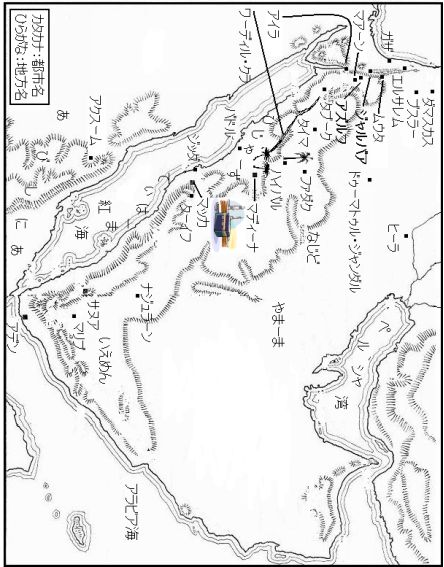
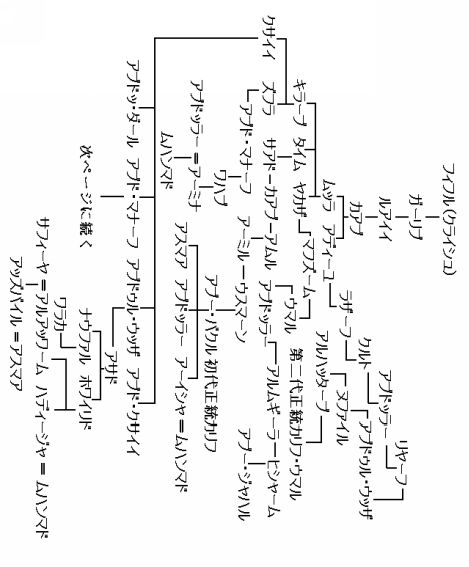
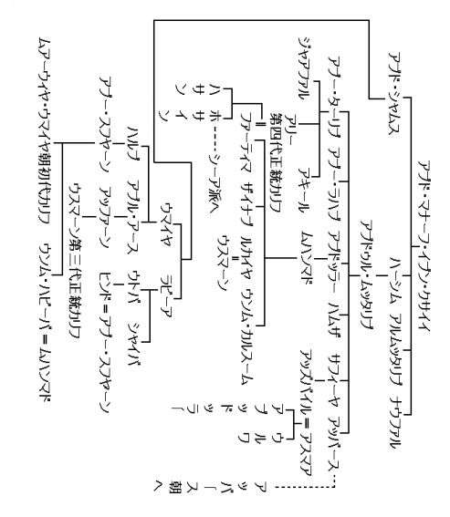
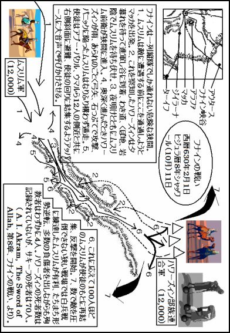
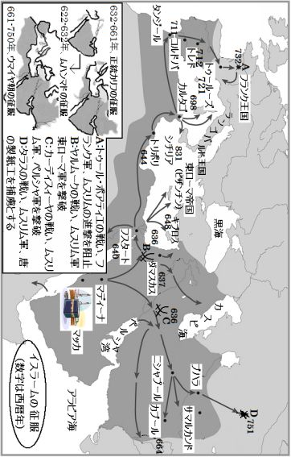
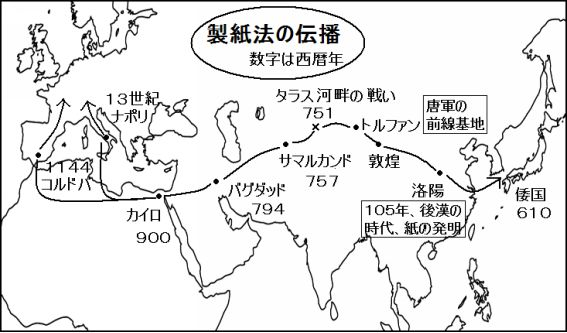
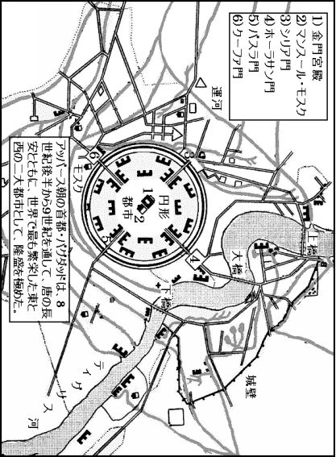
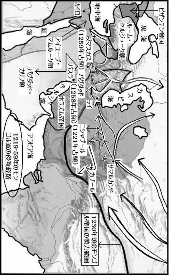

| 預言者の生涯 第四巻: イスラーム文明を創造した男の物語 | |
| イブン・イスハーク | |
| (2015) | |
目次
アラビア半島地図
クライシュの系図１
クライシュの系図２
晩年のムハンマド
マッカ解放後、キナーナ族のジャズィーマ氏族へのハーリドの派遣と、ハーリドの過失を正すためのアリーの派遣
アルウッザを破壊するためのハーリドの派遣
フナインの戦いの図
ヒジュラ暦八年、フナインの戦い
ヒジュラ暦八年、ターイフの解放
ハワーズィンの戦利品の分配と、心がイスラームに傾いてきた人々への贈り物
使徒、ジイラーナからウムラ〔小巡礼〕に向かう
使徒がターイフを離れた後のカアブ・イブン・ズハイルの問題
ヒジュラ暦九年〔西暦六三〇年四月ー六三一年四月〕、タブークの解放
イスラームに敵対する邪悪な妨害者が建立したマスジド
タブークへの任務を忌避した三人の男
ヒジュラ暦九年、サキーフの使節、イスラームを受容
ヒジュラ暦九年、アブー・バクル、巡礼を先導
奮闘を数え上げたハッサーン・イブン・サービトの詩
ヒジュラ暦九年、代表団の年
タミーム氏族の代表団の訪問
アーミル・イブヌッ・トファイルとアルバド・イブン・カイスの物語
サアド・イブン・バクル氏族の代表ディマーム・イブン・サアラバの来訪
アブドゥル・カイス氏族の代表アルジャールードの来訪
ハニーファ族の代表団とムサイラマ
ザイドル・ハイルとタイイ氏族代表団の来訪
アディーユ・イブン・ハーティム
ファルワ・イブン・ムサイクル・ムラーディの来訪
ズバイド氏族のアムル・イブン・マアディカリブの来訪
アルアシャアス・イブン・カイスとキンダ氏族の代表団の来訪
スラド・イブン・アブドッラール・アズディの来訪
ヒムヤルの王族たちの使者による手紙の配送
ムアーズをイエメンに派遣した際に、使徒が彼に与えた指示
ファルワ・イブン・アムルル・ジュザーミのイスラームへの入信
アルハーリス一族のイスラームへの入信
リファーア・イブン・ザイドル・ジュザーミの来訪
二人の虚言者ムサイラマル・ハナフィとアルアスワドル・アンスィ
ザカート徴収者の派遣
ムサイラマからの手紙と使徒の返信
別れの巡礼
巡礼の図
ウサーマ・イブン・ザイドのパレスチナへの派遣
諸王国へ派遣された使者
使徒が参加した遠征
使徒が派遣した遠征と軍勢
ガーリブ・イブン・アブドッラッ・ライスィによるアルムラッワフ氏族の制圧
ザイド・イブン・ハーリサによるジュザーム氏族への遠征
ザイド・イブン・ハーリサによるファザーラ氏族への遠征とウンム・キルファの死
アブドッラー・イブン・ラワーハによるアルユサイル・イブン・リザームの討伐
アブドッラー・イブン・ウナイスによるハーリド・イブン・スフヤーン・イブン・ヌバイヒル・ホザイリの討伐
ウヤイナ・イブン・ヒスンによるタミーム氏族のアルアンバル氏族への遠征
ガーリブ・イブン・アブドッラーのムッラ氏族への遠征
アムル・イブヌル・アースの、ザートッ・サラースィルへの遠征
イブン・アブー・ハドラドのイダム谷への遠征と、アーミル・イブヌル・アドバトル・アシュジャーイの殺害
イブン・アブー・ハドラドル・アスラミによる、リファーア・イブン・カイスル・ジュシャミを討伐するためのアルガーバへの遠征
アブドッ・ラハマーン・イブン・アウフによるドゥーマトゥル・ジャンダルへの遠征
アブー・ウバイダ・イブヌル・ジャッラーフによる海岸への遠征
サーリム・イブン・ウマイルによるアブー・アファクの討伐
ウマイル・イブン・アディーユによるアスマア・ビント・マルワーンの討伐
スマーマ・イブン・アサールル・ハナフィの捕捉
アルカマ・イブン・ムジャッズィズの遠征
クルズ・イブン・ジャービルによる、ヤサールを殺害したバジーラ氏族への遠征
アリーのイエメンへの遠征
ウサーマ・イブン・ザイドのパレスチナへの遠征
使徒の発病
アーイシャの部屋での使徒の病の看護
サーイダ一族の集会所での会合
使徒の埋葬の準備
イスラームの征服の図
文明の創造、預言者亡き後の世界
現代文明はイスラームの賜物
ギリシャ文明の奇蹟
キリスト教神話の創造
皇帝を調教した教父
文明の破壊
暗闇に沈む西洋
製紙法の伝播の図
文明の再生
バグダッド市街図
知恵の館
イスラームの万能人たち
モンゴル侵攻の図
西洋を照らすイスラーム
アラビア語にあふれる世界
あとがき
参考文献



晩年のムハンマド
マッカ解放後、キナーナ族のジャズィーマ氏族へのハーリドの派遣と、ハーリドの過失を正すためのアリーの派遣
使徒は、人々を神の道に招請するため、マッカ周辺の地域に部隊を派遣したが、彼らに戦うようには命じなかった。使徒が派遣した者の中にハーリド・イブヌル・ワリードが含まれており、使徒は彼に使節としてティハーマの低地を巡回するように命じ、決して戦うために彼を派遣したわけではなかった。しかし、彼はジャズィーマ氏族を威圧し、彼らの何人かを殺した。
ハキーム・イブン・ハキーム・イブン・アッバード・イブン・ホナイフは、アブー・ジャアファル・ムハンマド・イブン・アリー※が次のように語ったと私に伝えた。「使徒はマッカを解放すると、ハーリドを使節として派遣された。使徒は、彼を戦いのために派遣されたわけではなかった。ハーリドは、アラブ諸部族のスライム・イブン・マンスールらと、ムドリジ・イブン・ムッラらを伴って、ジャズィーマ・イブン・アーミル・イブン・アブド・マナート・イブン・キナーナ氏族の居住地に到着した。ハーリドを見て彼らが武器をとったので、彼は『お前たちの武器を置け、我々は皆、イスラームを受容した者だからである』、と呼びかけた」。
※アブー・ジャアファル・ムハンマド・イブン・アリー・イブン・ホサイン・イブン・アリー・イブン・アブー・ターリブ（六七六年頃―七三四年頃）、またの名をムハンマドル・バーキルといい、アリーの曾孫、シーア派が五代目イマームとする人物。
我々の友人の一人であるジャズィーマ氏族の伝承家は、私に次のように語った。「ハーリドが我らに武器を置くよう命令した時、ジャフダムと呼ばれていた、我らの部族の一人が、『ジャズィーマ氏族よ、ためらうな。彼はハーリドではないか。もしお前たちが武器を置けば、お前たちは縛られる、そして縛られた後、お前たちは首をはねられる。神にかけて、我は断じて武器を置かない』、と言った。仲間たちはジャフダムを制止し、『お前は我らの血を流したいのか。彼らは皆、イスラームを受容し、武器を置いた。戦いは終わり、皆、安寧である』、と説得した。彼らは、ジャフダムから武器を奪い取るまで譲らず、彼ら自身もハーリドに従って武器を置いた」。
ハキーム・イブン・ハキームは、アブー・ジャアファル・ムハンマド・イブン・アリーが次のように語った、と私に述べた。「彼らが武器を置くと、ハーリドは彼らを後ろ手に縛りあげるように命令し、何人かを切り殺した。この知らせが届くと使徒は、両手を天に挙げて、『おお、主よ、私は主の御前で宣言します。ハーリドの行いについて、何のとがも私にはありません』、と言われた」。
ハキームは、同じ人物を典拠として私に次のように語った。「使徒はアリーを呼びつけ、ジャズィーマ氏族らのもとに行って事情を調べ、ジャーヒリーヤ〔イスラーム以前〕※の慣習を破棄させるように命じられた。そこでアリーは、使徒から託された資金を持って彼らのもとに出かけ、血の代償金を支払い、犬のえさ皿に至るまで、彼らの金銭的な損害を補償した。すべての血と財産を補償しても、まだ資金は残った。そこでアリーが、まだ何か補償すべき損害が残っているかと彼らに聞くと、彼らが何も残っていないと答えたので、彼は使徒の代理として、その時点で使徒も彼らもまだ気づかない賠償請求が、その後発生する可能性に備えて、余剰金を彼らに与えた。そしてアリーが帰り、自分の行動を報告すると、使徒は彼を褒められた。それから使徒は立ち上がり、キブラの方角に向き、わきの下が見えるまで両手を掲げて、『おお、主よ、私は主の御前で宣言します。ハーリドの行いについて、何のとがも私にはありません』、と言われた。使徒はこれを三回、繰り返された」。
ハーリドを弁護する者は、次のように伝えた。ハーリドは、「私はアブドッラー・イブン・ホザーファッ・サフミが命令するまでは戦わなかったし、アブドッラーは、『彼らがイスラームを受容しないならば、お前は彼らと戦うように、と使徒は命じられた』、と言った」、と語った。
※〔 〕の中は、訳者の注。
ジャフダムは、彼らが武器を置いた時に、ハーリドがジャズィーマ氏族に行った仕打ちを見て、「おお、ジャズィーマ氏族よ、我らは戦いに敗北した。我はお前たちが陥った災厄について、あれほど警告したではないか」、と言った。私は、ハーリドとアブドッ・ラハマーン・イブン・アウフがこのことで口論した、と伝え聞いている。アブドッ・ラハマーンがハーリドに、「お前はイスラームを受容したにもかかわらず、ジャーヒリーヤの行為を働いた」と言うと、ハーリドは、「我は、お前の父の復讐を果たしただけである」、と応酬した。アブドッ・ラハマーンは、「我は既に父の敵を討っている。それゆえ、お前は嘘をついている。お前は自分のおじのアルファーキフ・イブヌル・ムギーラの復讐をしたにすぎない」とやり返し、二人の関係は険悪になった。これを聞いた使徒は、「落ち着け、ハーリド。私の教友にかまうな、神にかけて、たとえそなたがウフドの山ほどの黄金を持ち、それを神のために使おうとも、私の教友の美徳には、そなたは決して近づくことはできない」、と語った。
実は以前、アルファーキフ・イブヌル・ムギーラ・イブン・アブドッラー・イブン・ウマル・イブン・マフズームと、アウフ・イブン・アブド・アウフ・イブン・アブドゥル・ハーリス・イブン・ズフラと、アッファーン・イブン・アブル・アース・イブン・ウマイヤ・イブン・アブド・シャムスは、交易のためにイエメンに行った。アッファーンは息子のウスマーンを、アウフは息子のアブドッ・ラハマーンを伴った。彼らはその帰路、イエメンで亡くなったジャズィーマ・イブン・アーミル氏族の男の金を、その男の相続人に運んでいた。
ジャズィーマ・イブン・アーミル氏族の一員で、ハーリド・イブン・ヒシャームという名の男がその金の相続を主張し、一行が死者の家族に会う前に、ジャズィーマの居住地で彼らを出迎えた。しかし、一行は金の引き渡しを拒否した。金の所有をめぐって紛争が起き、アウフとアルファーキフは殺され、アッファーンと息子のウスマーンは逃れた。ハーリド・イブン・ヒシャームらは、アルファーキフとアウフの財産を奪い、アブドッ・ラハマーンは、父を殺害したハーリド・イブン・ヒシャームを報復として殺した。クライシュはジャズィーマに対する報復を検討したが、ジャズィーマは一行に対する攻撃は彼らが計画したものではなく、この出来事は後になるまで知らなかったと主張した。そこでジャズィーマは血と財産の補償を提案し、クライシュはこれを受け入れ、戦いは回避された。
ジャズィーマ氏族の者が次の詩を詠んだ。数人の者たちは、それはサルマと呼ばれる女だと言っている。
「一つの部族が他の部族に、ムスリムたれ、と言わなかったならば、
スライムは、その日、強力な敵に遭遇したであろう。
ブスルとジャフダムとムッラの男たちは、彼らを討ったであろう、
彼らがラクダを苦痛でうめかせて残すまで。
いかに多数の戦士を見たことであろう、
ジャズィーマの水場グマイサーアで事件が起きた日、
常に敵に傷を与え続け、かつて傷ついたこともない戦士たちが死んだ。
未亡人を仲人と共に残して、
そして男たちを、妻たちから引き離して」。
アッバース・イブン・ミルダースはサルマの詩に答えて詠んだ。何人かの者は、この詩は、アッバースではなく、アッジャフハーフ・イブン・ハキームッ・スラミだと言っている。
「このような無駄話をやめよ、我らにとって、
戦闘の英雄は相手として不足はない。
ハーリドはお前たちよりも赦される、
彼が問題を解決した日。
神の命令に助けられ、お前たちに向かって、
左にも右にもそれず、踏みつけて。
彼らは平原でマーリクの死の知らせをもたらした、
彼らがその地に到達したとき、
ほこりの雲の中から、厳しい容貌で闘志を見せながら。
もし我らがお前たちから親族を奪ったならば、サルマよ、
お前たちは、マーリクを悼む男や女たちを残したであろう」。
アッジャフハーフ・イブン・ハキームッ・スラミは、詠んだ。
「手綱を解き放たれた馬たちは、フナインで預言者と共にいた、
傷口から血を流しながら、
ハーリドの攻撃を受けても、
馬たちは聖域を疾走した。
我らは顔を槍に向けた、
我らの顔は決して槍に打たれるために向けられたのではない。
我は衣装を自分から投げる者ではない、
敵の戦士が槍を振るうときはいつも、
我がまたがる若駒は、
我の鋭い剣と共に我を高地に運ぶ」。
ヤアクーブ・イブン・ウトバ・イブヌル・ムギーラ・イブヌル・アフナスは、アッズフリがイブン・アブー・ハドラドル・アスラミから聞いた話を、私に語った。「私がその日、ハーリドの騎兵隊と共にいると、私と同じ年齢のころのジャズィーマの若者が私に話しかけた。彼の両手は古いロープで首の後ろに縛りつけられ、女たちの集団がそこから少し離れたところに立っていた。彼は、自分は言わねばならないことがあると私に伝えた。そのため、ロープを握って彼を女たちのもとに引いて行き、その後は彼を元のところに連れ戻して好きなように扱って良い、と私に懇願した。私は、それはお安い御用だと言って、若者を彼女たちのところに連れて行った。彼は彼女たちのそばに立つと、『元気に暮してほしい、ホバイシャよ、私の人生は終わった』、と言って詩を詠んだ」。
「我に教えよ、我がそなたを求めハルヤで見つけたとき、
あるいはアルハワーニクでそなたを訪ねたとき、
我は求めるものを与えるにふさわしい恋人ではなかったか、
夜にそして真昼に、旅を続けた。
我らの民が集まり、我が語ったとき、我は不正を働かなかった、
何らかの災厄が降りかかる前に、我に愛で報いよ。
離別の前に、我に愛で報いよ、
そして族長が恋しい者を残して連れ去る前に。
秘密の約束に、我は決して不実ではなかった、
そして我の目は、決してほかの者を称賛して眺めることはなかった。
部族の災難が、我を愛から引き裂いたとき、
その時でさえ、愛の魅力は途絶えることはなかった」。
同じ人物はまた私に語った。「女は、『あなたの命が七年、そして十年と続けて延びますように、そしてさらにその後八年』、と答えた。それから私はその若者を連れ戻し、彼は首をはねられた」。
アブー・フィラース・イブン・アブー・スンブラル・アスラミは、その場に居合わせた数人の老人から聞いたことを典拠として、彼女は首をはねられた男のそばにうずくまり、そこで自分の命が尽きるまで彼にキスを続けた、と私に語った。
ジャズィーマ氏族の一人は、次の詩を詠んだ。
「神よ、ムドリジの我らへの仕打ちに対して、彼らに復讐し給え、
彼らが行くところ、休むところのいずこでも。
彼らは我らの所有物を奪い、仲間に分配した、
槍は幾度も我らに突きつけられた。
ムハンマドの民の信仰が無かったならば、
彼らの騎兵は追い払われ、逃走したであろう。
何が集団を救助するのを妨げたのか、
散らばって飛びまわるイナゴの群れのような。
彼らが悔い改め、彼らの道に戻るなら、
我らは失ったものに対する償いを求めない」。
ライス氏族のワフブは、彼に応えて詠んだ。
「我らはアーミルをイスラームと真実の道に招請した、
彼らが反抗するならば、それは我らの過失ではない。
いいかげんにせよ、アーミルに起きたことは、我らの過失ではない、
彼らの心が愚かで、道からはずれているためである」。
ジャズィーマ氏族の一人は詩を詠んだ。
「ハーリドと彼の仲間の到来で、カアブの者たちを祝ってやれ、
彼らの集団が我らを襲った朝。
イブン・ホワイリドは復讐の意志を全く見せなかった。
お前たちはその場にいなかったならば、満足したであろう。
我らの男たちは、愚か者を我らから引き離さなかった、
グマイサーアの疾病も癒されなかった」。
母と二人の姉妹を連れてハーリドの軍勢から逃れていた、ジャズィーマ氏族の若者は詠んだ。
「衣服の裾を下ろせ、衣を引きずれ、
ひるまない貞淑な女のように歩め。
我らの女たちを我らは守護する、決して失敗しない」。
ムサーヒク氏族として知られるジャズィーマ氏族の若者たちは、ハーリドの到来について聞き及んだ際に粗野な詩を作り、彼らの一人は次のように詠んだ。
「羊の群れとラクダと共にいる、白い帯を身につけたサフラーアは知っている、
すべての男たちができることを、この日、我が行うと」。
ほかの一人は、また詩を詠んだ。
「夫を楽しませるサフラーアは知っている、
一かけらの肉しか食さない彼女は知っている、
今日、我が素早い一撃を加えると、
聖域を離れた者に対して、あたかも鈍重な子持ちラクダを打つように」。
またほかの一人は詠んだ。
「長いたてがみ、太い手足、獰猛な表情と褐色のひげの、
寒い朝、密林と茂みの間で吠え、
人間を唯一の獲物とする、
どんな獅子であっても、
その日の我よりも勇猛ではない、と我は誓う」。
アルウッザを破壊するためのハーリドの派遣
そして使徒は、ハーリドをナフラにあるアルウッザに派遣した。アルウッザはクライシュ、キナーナ、ムダルの全部族が崇拝した神殿だった。その守護者かつ管理者は、ハーシム族の同盟者であるスライム族の中のシャイバーン氏族だった。ハーリドの派遣を知ったスライムの守護者は、偶像に剣を吊るし、偶像が立っている丘に登って詩を詠んだ。
「おお、ウッザよ、ハーリドに壊滅的な一撃を与えよ、
汝のベールを投げ捨て、汝の隊列を守れ。
おお、ウッザよ、もし汝がこの男ハーリドを殺さないならば、
すぐさま懲罰を受けよ」。
そしてハーリドはその偶像を破壊すると、使徒のもとに戻った。
イブン・シハーブッ・ズフリは、ウバイドッラー・イブン・アブドッラー・イブン・ウトバ・イブン・マスウードを典拠として私に語った。使徒は、マッカを解放した後、十五夜、その地に滞在し、礼拝を短縮した※。マッカの解放は、ヒジュラ暦八年ラマダーン〔九〕月二十日〔西暦六三〇年一月十一日〕のことだった。
※旅先では礼拝を短縮することが許されている。ムハンマドはマッカを定住の地とはせず、マディーナに帰還すると決めていたことを意味している。

ヒジュラ暦八年、フナインの戦い
神がいかにして使徒にマッカを解放させられたかを、ハワーズィン部族連合が聞き及んだとき、族長のマーリク・イブン・アウフン・ナスリは、部族連合を集結させた※。彼のもとにはサキーフのすべての部族、ナスルとジュシャムの全部族も結集した。さらにサアド・イブン・バクル氏族と、ヒラール氏族の少数の者も参加した。カイス・アイラーンからは、どの部族も参加しなかった。ハワーズィン部族連合のカアブ一族とキラーブ一族は、彼らと距離を置き、彼らの有力者は誰一人として参加していなかった。
※ハワーズィンとマッカのクライシュ族の敵対関係については、第一巻二一〇ページの注を参照。
ジュシャム一族の中にドゥライド・イブヌッ・スィンマがいた。彼は非常に高齢だったため、戦いの貴重な助言と知識を備えた経験豊かな指導者であるということ以外には、彼の存在価値はなかった。サキーフには二人の指導者がおり、カーリブ・イブヌル・アスワド・イブン・マスウード・イブン・ムアッティブが同盟者の部族たちを指揮し、ズル・ヒマール・スバイイ・イブヌル・ハーリス・イブン・マーリクと彼の弟アハマルが、マーリク一族を指揮した。マーリク・イブン・アウフン・ナスリは、全軍の指揮を執った。彼は使徒との戦いを決意すると、家畜や女子供たちを男たちに同行させた。
マーリクがアウタースで軍隊を停止させると、族長たちは彼の周りに集合した。その中には、輿で運ばれていたドゥライド・イブヌッ・スィンマがいた。ドゥライドはその地に到着すると、自分たちが今、どのワーディーにいるのかを尋ねた。アウタースにいることが知らされると、「この地は騎兵隊に絶好の地形である。なぜならば、岩だらけの上り斜面でもないし、軟らかい砂地でもないからだ。ところでラクダのうなり声やロバのいななき、子供の泣き声や羊の鳴き声が聞こえるのは、いったいなぜなのか」、と彼は言った。人々が、「マーリクが家畜と女子供を男たちに同行させた」と答えると、ドゥライドは直ちにマーリクとの面会を求め、「おお、マーリクよ、お前は民の族長となり、今日は偉大な出来事が続く日である」、と言った。
それからドゥライドが家畜や女子供について尋ねると、マーリクは、彼らを同行させて男たちの背後に置いた目的は、男たちに彼らを守らせて死ぬまで戦わせるためである、と説明した。するとドゥライドは、愕然として声を上げ、「この羊飼いめ、お前は逃亡する男を引きとめることができると考えているのか。もしすべてがうまくいくとして、剣と槍以外にお前の助けとなるものはなく、下手をすれば、家族と財産のせいで、お前は侮辱されるだけだ」、と言った。
そしてドゥライドは、カアブ一族とキラーブ一族について尋ね、彼らが参戦していないと知ると、「勇気と武力が欠如している。もし今日が本当に崇高な行動の日であれば、カアブとキラーブは我らから離れなかったであろう。お前たちは、彼らと同じように行動しなければならなかったのだ。お前たちの味方についたのは、どの氏族か」、と尋ねた。彼らが、アムル・イブン・アーミルとアウフ・イブン・アーミルであると答えると、彼は、「そのアーミルの二つの支族は、益にも害にもならない。マーリクよ、ハワーズィンの主力部隊を騎兵隊と対決するために前衛に進めたのは決して得策ではない。主力部隊を接近不能な高地に配置し、騎馬で敵と対決せよ。もしすべてうまくいけば、背後の主力はお前たちに参戦できるし、戦闘が不利になっても、お前は家族と家畜の群れを救うであろう」、と言った。
マーリクは、「我はそのようにしない、この老いぼれめ。おお、ハワーズィンよ、お前たちは我に従うか、それとも我が剣を背中に突き通させるか、いずれかである」、と答えた。マーリクは、戦いの場でドゥライドの功績を少しでも認めることに、耐えられなかった。ハワーズィンの者たちはマーリクに従うと言い、ドゥライドは、「今日この日、我は参戦せず、全く失敗することもなかった」、と言って詠んだ。
「我はもう一度、若返りたい。
我はゆるやかに前進しよう、
長いたてがみの駿馬を導いて、
若いカモシカの如く」。
マーリクは、配下のすべての者たちに「敵が見えたら、刀を鞘から抜き、鞘をへし折れ、そして一人の戦士のように一糸乱れぬ行動で立ち向かえ」と命じた。
ウマイヤ・イブン・アブドッラー・イブン・アムル・イブン・ウスマーン・イブン・アッファーンは、マーリクが斥候を出したが、彼らは関節をはずされて戻った、と聞いている、と私に述べた。マーリクが「いったい何が起きたのか」と斥候たちに聞くと、彼らは、「我らはまだら馬に乗った、真っ白な者たちに出会った瞬間に、このような目に遭った」、と答えた。そして神にかけて、それでもマーリクは、自らが意図した行動を決して変えようとはしなかった。
使徒は、彼らについて聞くと、アブドッラー・イブン・アブー・ハドラドル・アスラミに、彼ら軍勢の間に紛れ込んで、情報を収集して持ち帰るように命令して派遣した。アブドッラーは出発し、敵の中にとどまり、彼らが使徒と戦うと決意したことを確認し、ハワーズィンの部隊配置を調べてから戻り、使徒に報告した。
使徒は、ハワーズィンと戦うことを決意すると、サフワーン・イブン・ウマイヤが武具と武器を蓄えていると伝え聞き、その時まだ多神教徒であったサフワーンに使いを遣って、「明日、我らが敵と戦うことができるように、そなたの武器を我らに貸与していただけないか」、と依頼した。サフワーンは、「ムハンマドよ、それは強制なのか」、と尋ねた。使徒は、「いや、それは我らが返却するまでの貸与であり、委託である」、と答えた。彼は、「それならば異存はない」と言い、使徒に百の鎖かたびらとそれに対応するに十分な武器を使徒に渡した。人々は、使徒がその武器と武具を運ぶ輸送手段の提供も要請し、サフワーンはその要請にも応えた、と主張している。
それから使徒は、二千人のマッカ人と、使徒がマッカを解放したときに彼と共に参加した一万人の教友たちを従えて防衛軍を編制し、その総勢は一万二千人だった。使徒はマッカの総督としてアッターブ・イブン・アスィード・イブン・アブル・イース・イブン・ウマイヤ・イブン・アブド・シャムスを任命し、留守中に残った人々を監督させた。そして、ハワーズィンと対決するために出陣した。
アッバース・イブン・ミルダースッ・スラミは詠んだ。
「今年、彼らの民の墓場を荒らす悪霊は、ハワーズィンのリイルの者たちを討った、
彼らの天幕の真ん中で、墓場荒らしの悪霊は幾つもの姿を持つゆえに。
悲しいかなキラーブの母よ、
イブン・ハウザとインサーンの騎兵が、無抵抗の彼らに襲いかかるとき。
お前の血縁を否定するな、お前の同盟者との絆を強めよ、
お前の従兄弟はサアドとドゥーマーンだ。
お前は彼らを返さない、それが快い屈辱にもかかわらず、
捕獲したラクダに乳がある限り。
ハダン山を覆うほどの屈辱を受けた者の不名誉だ、
そしてズー・シャウガルの涸れ河とスィルワーンの涸れ河と共に流れた。
それはハザフが焼いたものより美味くない。
彼が、『焼いたロバは食べられない』、と言ったとき。
ハワーズィンは、イエメン病でない限り善き部族である、
彼らは裏切らないならば、嘘を言う。
彼らは兄弟を持つ、彼らの誓約に忠実であれば、
そして我らが戦争で彼らを制圧したならば、彼らは温和であろう。
ハワーズィンにきっぱりと伝えよ、
我からの簡潔な助言のメッセージを。
神の使徒は朝、彼らを討とう、
平原のすべてを覆う軍勢と共に、
彼らの中には、お前に立ちはだかる、お前の兄弟スライムがいる。
そしてムスリム、神の僕、ガッサーンがいる。
彼の右側にはアサドの者たち、
そして恐るべきアブスとズビヤーンの者たちが。
大地は恐れで震撼した、
そしてアウスとウスマーンが先頭に」。
アウスとウスマーンは、ムザイナ氏族の二つの部族である。
イブン・シハーブッ・ズフリは、スィナーン・イブン・アブー・スィナーンッ・ドゥーアリがアブー・ワーキドッ・ライスィから聞いたことを典拠として、アルハーリス・イブン・マーリクが次のように語った、と私に述べた。
「我らは多神教から生まれ変わったばかりで、使徒とともにフナインに行進した。異教のクライシュとほかのアラブたちは、ザート・アンワートと呼ばれる巨大な緑の樹を保有しており、毎年、その場所に集まり、武器を樹に吊るして、そのそばで犠牲を捧げて、一日中、献納していた。使徒と共に行進しているとき、巨大なロトスの樹を見つけ、道の脇から使徒に向かって、我らは、『彼らがやっているように、物を吊るす樹をつくってください』、と呼びかけた。使徒は、『アッラーホ・アクバル〔神は偉大なり〕。我の命を手中にしておられる主にかけて、そなたたちはムーサ〔モーセ〕の民がムーサに言ったことを言った、「ムーサよ、彼らが持っている神々のような一柱の神を、私たちに置いてくれ」（七章一三八節）と。ムーサは、「本当にあなた方は無知の民である（同）。お前たちは、お前たち以前の民の習慣に従おうとしている」と言った』、と言われた」。
アースィム・イブン・ウマル・イブン・カターダは、アブドッ・ラハマーン・イブン・ジャービルが彼の父ジャービル・イブン・アブドッラーから聞いたことを、私に語った。
「我らはワーディー・フナインに接近し、幅広で傾斜した、そのワーディーを下っていた。我らは朝の薄明かりの中を、ゆっくりと下っていった。敵は我らより早くその場所に到達しており、わき道や側道、くぼ地に隠れていた。彼らは結集して十分に態勢を整えており、我らが下っていたとき、敵の軍勢は一糸乱れず一人の男のように一丸となって我らを攻撃したので、神にかけて、我らは恐怖に陥った。
我らの軍は分断され、なりふり構わずに逃走した。使徒は谷の右側に撤退され、『皆の者、どこに行く。我のもとに集まれ。我は神の使徒である。我はムハンマド、アブドッラーの息子である』、と言われた。しかし効果はなく、ラクダは互いにぶつかり合った。男たちは逃走し、何人かのムハージルーンとアンサール、そして使徒の家族が、使徒のもとに残っただけだった。
ムハージルーンの中で決然としていたのはアブー・バクルとウマル、使徒の家族では、アリー、アルアッバースとアブー・スフヤーン・イブヌル・ハーリス〔使徒の従弟〕と彼の息子だった。またアルファドル・イブヌル・アッバース〔アルアッバースの息子〕、ラビーア・イブヌル・ハーリス〔使徒の従弟〕、ウサーマ・イブン・ザイド〔ザイド・イブン・ハーリサの息子〕と、この日、殺害されたアイマン・イブン・ウンム・アイマン・イブン・ウバイド〔使徒の乳母の息子〕も決してひるまなかった。
赤いラクダに乗り、穂先に黒い旗を掲げた長い槍を手にしたハワーズィンの男が、軍勢を指揮していた。彼は敵を追い越すとき、槍で敵を突き刺した。男たちが彼の槍から逃れると、彼は後方の者たちに向けて槍を高く掲げた。すると彼の軍勢は逃げる男たちを追撃した。
男たちが逃走したとき、使徒と行動を共にしていたマッカ人の何人かは、その逃走ぶりを見て、敵意をあらわにする話し方をした。アブー・スフヤーン・イブン・ハルブは、『彼らの逃走は、海にたどり着くまで終わらないだろうよ』、と言った。彼は矢筒に占い矢を持っていた。ジャバラ・イブヌル・ハンバル（その当時は使徒が与えた猶予期間中で、まだ多神教徒だったサフワーン・イブン・ウマイヤの異母兄弟）※は、『確かに、魔術は今日は役に立たない』、と叫んだ。サフワーンは、『黙れ、神に口を砕かれよ。ハワーズィンの支配を受けるより、クライシュの男に支配される方がまだましだ』、と応じた」。
※（ ）の中は原著者の注。
アブドッ・ダール一族のシャイバ・イブン・ウスマーン・イブン・アブー・タルハは語った。「私は今日、ムハンマドに復讐を果たす、と自分に言い聞かせた。今日、ムハンマドを殺す。私は彼を殺すため、彼をつけまわしてきたが、私の目的を阻止する何かが必ず起き、今まで殺すことができなかった。そこで私は、私に殺害されることから、彼が守られていることを悟った」※。
※イブン・イスハークを典拠として預言者伝を書いた歴史家ワーキディによれば、シャイバ・イブン・ウスマーンとサフワーン・イブン・ウマイヤは、ムハンマドを殺して父の復讐を果たすとの誓いを立てて、ムスリムの遠征軍に同行した。ウマイヤ・イブン・ハラフはバドルで、ウスマーン・イブン・アブー・タルハはウフドでムスリムに倒された。
使徒がマッカを離れてフナインに向かうときの膨大な数の神の軍勢を見て、マッカの人々は「我らは今日、数の不足によっては敗北しない」、と話し合った、とマッカ人のある者は私に伝えた。何人かの人々は、このことを言ったのはバクル族の男である、と主張している。
アッズフリは、カスィール・イブヌル・アッバースが、父アルアッバースから聞いたことを私に語った。「私は、使徒の白ラバの顎につけた馬ろくの輪を握って使徒のそばにいた。私は大男で声も大きかった。使徒は軍勢が混乱に陥ったのをご覧になり、『どこへ行く、おお、男たちよ』、と言われた。しかし誰も注意を払わなかったので、使徒は、『おお、アルアッバースよ、大声で叫べ、「おお、アンサールよ、おお、アカシアの樹※の同志たちよ」、と』、と言われた。私が叫ぶと彼らは、『我らはここに』、と応えた。
※フダイビヤの和議の際の生死をかけて戦う誓いであるアッリドワーンの誓いが、アカシアの木の下で誓われたことに基づいている。
男たちはラクダを反転させようとしたが、できなかった。すると彼らは、鎖かたびらを脱いでラクダの首に置き、剣と盾を取ってラクダから跳び下り、ラクダは行くがままにまかせ、自分たちは声の方角に向かって前進して、ついに使徒のもとに集結した。使徒の周りに百人ほどの戦士が集まり、彼らは敵と戦った。最初の掛け声は、『我に来たれ、アンサールよ』、最後の掛け声は、『我に来たれ、ハズラジの者たちよ』、だった。彼らは勇敢に戦い、あぶみに立ち上がって乱戦を見おろしていた使徒は、『かまどは熱くなった』、と言われた」。
アースィム・イブン・ウマル・イブン・カターダは、アブドッ・ラハマーン・イブン・ジャービルが、彼の父ジャービル・イブン・アブドッラーから聞いたことを、私に語った。
「ハワーズィンの軍旗を掲げたあの男が戦っていると、アリーとアンサールの一人が隊列を離れ、その男に向かって行った。アリーが背後から迫り、ラクダの関節を切断すると、ラクダは尻もちをついた。するとアンサールがその男に襲いかかり、彼の足を切り飛ばし、片方の脇腹を斬ったので、彼は鞍から落下した。男たちは戦い続け、そして神にかけて、逃走した者たちが戻った時には、ただ両手を縛られて使徒のもとにいる捕虜を見るだけだった。
使徒は、その日、使徒と共に勇敢に戦った者の一人で、イスラームを受容してからは優れたムスリムとなり、使徒のラバの鞍をつかんでいたアブー・スフヤーン・イブヌル・ハーリス・イブン・アブドゥル・ムッタリブに向き合い、『そなたは何者か』、と問うた。彼は、『私はあなたと祖母を同じくする血族です、おお、神の使徒よ』、と答えた」。
アブドッラー・イブン・アブー・バクルは、使徒が振り返った時、ウンム・スライム・ビント・ミルハーンが夫のアブー・タルハと共にいた、と私に語った。彼女はしま模様の腰帯を巻き、息子のアブドッラー・イブン・アブー・タルハを身ごもっていた。彼女は夫のラクダを引いており、ラクダの力に負けてしまうことを恐れ、ラクダの頭を自分の身体に引きつけ、おもがいの鼻輪をしっかりとつかんでいた。彼女は、使徒の質問に答えて名乗った後、「あなたは、あなたと戦った者を倒したのですから、あなたから逃げた者たちを殺して下さい。彼らは死んで当然です」、と言った。
使徒は、「神はその必要をお示しにならなかった、おお、ウンム・スライムよ」、と答えた。彼女は短刀を持っており、アブー・タルハが何のためかと尋ねると、「もし多神教徒が私に近づいたならば、短刀で敵を引き裂くことができるように携えているのです」、と彼女は答えた。彼は、「ウンム・スライムッ・ルマイサーアが、今、言ったことをお聞きになりましたか、おお、使徒よ」、と言った。
使徒がフナインに向かって出発したとき、スライム族をアッダフハーク・イブン・スフヤーヌル・キラービと合流させ、スライム族は彼と共に進軍した。男たちが逃走を始めた時、マーリク・イブン・アウフは、彼の馬に呼びかけて詩を詠んだ。
「進め、ムハージ。今日は苦難の日だ、
我のような者が、汝のような馬に乗っていつも戦闘に向かう。
前衛と後衛が抜けても、
集団が相次いで繰り出してくる、
我が目が数えるのに疲れるほどの敵の集団が。
我は血が滴る槍で貫いた。
隠れている臆病者が責められるとき、
我は、音をたてて血が吹きだす大きな裂け目を敵に与える、
その裂け目の真ん中から血があふれ出る、
血は、時には激しく噴出し、時には静かに流れ、
槍の柄はその中で砕かれ散る。
おお、ザイドよ、おお、イブン・ハムハムよ、どこに逃げて行く。
今や歯が抜けた、老人がやって来た。
白く長いベールの女は知っている、
我は戦闘の素人ではない、
貞淑な妻が天幕から出されるとき」。
マーリクはまた詠んだ。
「進め、ムハージ。彼らは巧みな騎手だ。
敵が去ったと考えてはならない」。
アブドッラー・イブン・アブー・バクルは、アブー・カターダル・アンサーリから聞いた話を私に語った。また、私が完全に信頼する我々の仲間の一人は、ギファール・アブー・ムハンマド氏族の元奴隷であるナーフィイが、アブー・カターダから聞いたことを私に語った。アブー・カターダは語った。
「フナインの日、私は二人の男、つまりムスリムと多神教徒が戦っているのを見た。多神教徒の仲間が味方しようとしてムスリムに向かって行ったので、私は多神教徒に近づき、彼の腕を切り落とすと、彼はもう一方の手で私の首を絞めつけた。そして神にかけて、彼は私が血の臭いを嗅ぐまで、私を放さなかった。彼は私を殺す寸前のところだった。もし彼が失血で弱らなかったならば、私を殺していたであろう。しかし彼は倒れ、私は彼に一撃を加えて倒した。それから私は戦いに忙殺され、その男にそれ以上、注意を払えなかった。するとマッカ人の一人が通りかかり、彼の所持品を奪った。戦いが終わり、我らが敵をかたづけてしまうと、使徒は、敵を倒した者は誰でもその戦利品を自分の物にすることができると言われた。
私は、所持品を取るにふさわしい敵を倒したが、その時は戦いに忙殺されていたため、誰が私の戦利品を自分の物として横取りしたか分からない、と使徒に訴えた。マッカ人の一人は私が語ったことは事実であると認め、自分が戦利品を所有していると認めた。そのマッカ人は、『だから私に代わり、彼〔アブー・カターダ〕が満足するように、ムスリムたちの戦利品の中から彼に与えればよい』、と言った。そこでアブー・バクルは、『否、神にかけて、ムスリムの戦利品の中から、彼が満足するだけの分配は支払われない。お前は、主の信仰のために戦った神の獅子に対する餌の分け前に授かろうというのか。彼が倒した男の戦利品を返還せよ』、と言った。使徒がアブー・バクルの裁定を承認されたので、私はその戦利品を彼から受け取って売り、そのお金で数本のナツメヤシの木を購入した。それが、私が所有した最初の財産だった」。
私が完全に信頼する人物は、アナス・イブン・マーリクがイスハーク・イブン・アブドッラー・イブン・アブー・タルハに語ったことを、アブー・サラマから聞き、アブー・タルハだけで二十人分の戦利品を獲得した、と私に語った。
私の父イスハーク・イブン・ヤサールは、ジュバイル・イブン・ムティイムが次のように語った、と私に伝えた。「仲間たちが形勢不利な情勢で戦い続けているとき、黒い衣装のような物が宙から舞い降りて、我らと敵の間に落下するのが見えた。私が見ると、何と黒い蟻がワーディーのいたる所に密集していた。私は、それが天使であることを疑わなかった。ほどなく敵は逃亡した」。
神がフナインの多神教徒たちを敗走させられ、神の使徒に勝利を授けられた時、一人のムスリムの女が次の詩を詠んだ。
「アッラーの騎兵は、アッラートの騎兵を討った、
そしてアッラーは、護持するに最もふさわしい」。
ハワーズィンが敗走すると、サキーフ族のマーリク一族は容赦なく殺害され、彼らの軍旗の下で七十人が戦死し、その中にウスマーン・イブン・アブドッラー・イブン・ラビーア・イブヌル・ハーリス・イブン・ハビーブがいた。彼らの軍旗は、ズル・ヒマールが掲げていた。ズル・ヒマールが殺されると、ウスマーン・イブン・アブドッラーが、それを死ぬまで掲げた。
アーミル・イブン・ワフブ・イブヌル・アスワドは、ウスマーンの死を知らされると使徒は、「神よ、彼に懲罰を与え給え。彼はクライシュを憎んでいた」、と言われた、と私に語った。
ヤアクーブ・イブン・ウトバ・イブヌル・ムギーラ・イブヌル・アフナスは、次の話を私に語った。割礼をしていない若いキリスト教徒がウスマーンと共に殺され、サキーフ族の死者の所有品を収集していたアンサールの一人が、そのキリスト教徒から戦利品を取ろうとして彼を裸にすると、彼がまだ割礼を受けていないことを発見した。そこでそのアンサールは声の限りに、「見よ、アラブの人々よ、神はサキーフが無割礼であることを御存知だ」、と叫んだ。ムギーラ・イブン・シューバは、それがアラブ中に知れ渡ることを恐れて、アンサールの腕をつかみ、「その男はキリスト教徒の奴隷にすぎないから、そのようなことを言ってはならない」、と制した。それからムギーラ・イブン・シューバは、死体の覆いを取り、サキーフの者たちが割礼を受けていることを示した。
同盟者の部族たちの軍旗は、カーリブ・イブヌル・アスワドが掲げており、男たちが敗走すると彼はそれを木に立てかけて、従兄弟や部族員たちと共に逃走した。同盟者の部族たちの死者は二人だけで、一人はワフブという名のギヤラ氏族、もう一人はアッジュラーフという名のクッバ氏族だった。アッジュラーフが討たれたことを知らされると、使徒は、「今日、サキーフの若い族長たちは、イブン・ホナイダを除き、すべて倒された」と、アルハーリス・イブン・ウワイスに言及して語った。
アッバース・イブン・ミルダースッ・スラミは、カーリブ・イブヌル・アスワドが彼の民から逃走したことと、ズル・ヒマールが彼の民を死に追いやったことに言及して詩を詠んだ。
「誰が、我の言葉をサキーフの族長ガイラーンとウルワに伝えるか、
我を知る人物が彼を訪ねるだろう。
お前に伝えるために私はメッセージを送る、
お前が言い、世間に知れ渡っていることとは違うことを。
ムハンマドは、主の使徒であり、主の僕である、
彼は過ちを犯さない、罪を犯すこともない。
我らは彼の中にムーサのような預言者の証を見た、
彼に徳で対抗しようとする者は、誰しも敗北しよう。
邪悪は、ターイフのワーディー、ワッジで、カスィーユ〔サキーフ〕の状態であった、
各人の問題が裁定されるとき。
彼らはその日、敗北した、
そして、どの民にも支配者があり、宿命は変化する。
我らは茂みの獅子の如く彼らに襲いかかった、
神の軍勢は公然と進軍した。
我らはカスィーユの主力を討った、
猛威をふるい、あたかも獅子が跳びかかるように。
敵が戦闘せずにとどまったならば、我らは神の軍勢と共に彼らを先制したと誓おう、
さすれば彼らは逃走しなかったであろう。
敵を撃滅するまで、我らはターイフのリーヤにいる獅子の如く戦おう、
そして、マーリク・イブン・アウフン・ヌスールは降伏を強いられた。
フナインの日以前に、
血が奔放に流された過去があった。
しかし過ぎ去った日には、このような戦いはなかった、
長い記憶をもつ男たちは、このようなことを聞いたことがない。
我らは彼らの軍旗のそばの埃の中でホタイトの者たちを倒した、
騎兵隊が背を向けたとき、
ズル・ヒマールは族長ではなかった、
理性を持ち合わせた民の。
彼は自分の民を死の道に導いた、
誰の目にも明らかな通りに。
逃走した者たちは恐怖で窒息した、
そして彼らの多数が殺害された。
臆病者はそのような場合に、何の助けにもならない、
また攻撃するのに怖じ気づき、尻ごみする者も。
彼は民を破滅させ、彼自身を殺した。
民は彼に指導権を与えたが、その指導者は逃亡した。
アウフ族の馬はしなやかに走った、
新鮮な草と大麦で飼われた。
カーリブと彼の血族の者たちがいなかったならば、
牧草地と砦は分割されていたであろう、
しかし彼らは栄華を極めた、
彼らに与えられた幸運な助言により。
彼らはカーリブに従い、
幸運と栄光をもたらした良識に恵まれた。
もし彼らがイスラームに導かれたならば、
時の続く限り、彼らは人々の長となろう。
もし彼らがイスラームを受容しないならば、
誰の支援も得られず、神の軍との戦いを呼ぶことになろう。
戦争がサアド氏族を滅ぼしたように、
そして運命がガズィーヤの一族を滅ぼしたように。
ムアーウィヤ・イブン・バクルの者たちは、
イスラームに寄って来る、メーメー鳴く羊の群れのようだった。
我らは言った、『ムスリムとなれ、さすれば我らは互いに同胞となり、
我らの心は敵意から解放される』。
平和が訪れた後、人々が我らのもとにやって来た時、
彼らは憎しみに眼がくらんだようだ」。
多神教徒は敗走すると、ターイフに向かった。マーリク・イブン・アウフはターイフに行き、ほかの者たちはアウタースで野営した。彼らの一部はナフラに向かったが、それはサキーフ族のギヤラ氏族だけだった。使徒の騎兵隊はナフラに向かった一団を追跡したが、山道を行った者は追わなかった。
ラビーア・イブン・ルファイウ・イブン・ウフバーン・イブン・サアラバ・イブン・ラビーア・イブン・ヤルブウ・イブン・サンマール・イブン・アウフ・イブン・イムルール・カイス――彼は母にちなんでイブヌッ・ドグンナと呼ばれることのほうが多かった――は、ドゥライド・イブヌッ・スィンマに追いつき、かごに乗っていたドゥライドを女と思い、ラクダの端綱をつかんだ。すると、何とそれは男で、ラクダをひざまずかせると、それは老人のドゥライド・イブヌッ・スィンマだった。
その若者は彼を知らず、ドゥライドは若者に何が望みで、何者であるかと聞いた。若者は名前を言い、彼を殺すことが望みだと言って剣の一撃を加えたが、無駄だった。ドゥライドは、「お前の母は何と粗末な武器を与えたことよ。かごの中の鞍の後ろにある我の剣をとり、それで背骨の上、頭の下を打て、それが我が男たちを討つやり方だ。それからお前は母のところに戻ったら、ドゥライド・イブヌッ・スィンマを倒したと言ってやれ。我は何度、お前たちの女を守護したことであろうか」、と言った。
スライム族は、ラビーアが、「私が彼に一撃を加えると、彼はラクダから落下して下半身があらわになった。すると、何と彼の股間と太ももの内側は、長年、裸馬に乗り続けたために紙のように薄くなっていた」、と語った、と主張している。ラビーアが帰って母にドゥライドを倒したことを伝えると、彼の母は、「神にかけて、彼はお前の母を三人、祖母を三人解放した」、と言った。
アムラ・ビント・ドゥライドは、ラビーアによる彼女の父の殺害について詠んだ。
「私は運命の軍勢を決して恐れなかった、
ドゥライドのために、スマイラの谷で。
神は彼のためにスライム族に報われよう、
そして忘恩と彼らの仕打ちは、彼らを引き裂こう。
神は、敵の最高の男たちの血を我らが飲み干すよう、授けられよう、
我らが敵に向かって軍勢を導くとき。
そなたは何度も災難を回避した、
敵が死に直面したとき。
そなたは彼らの気高い女を何人解放したことか、
そしてそなたはほかの多数を束縛から解いた。
スライム族の多くの男がそなたを高貴の者と呼んだ、
そなたが瀕死の彼の呼び声に応えたとき。
彼らからの我らへの報酬は、忘恩の仕打ちと嘆きだ、
我らを骨から溶かす。
そなたの騎兵隊の痕跡は、困難な旅の後、消え失せよう、
ズー・バカルで、アンヌハークの砂漠に至るまで」。
アムラはまた詠んだ。
「彼らは言った、『我らはドゥライドを倒した』。『本当に』、と私は尋ねた。
そして私の涙は衣装の上に滴り落ちた。
もし彼がいなければ、
スライムとカアブは目撃してきたというのに、すべての部族を制する彼を。
刺激的な偉大な軍団は、
敵がどこにいようとも攻撃し続けたであろう」。
使徒は、アブー・アーミルル・アシュアリにアウタースに向かった一団を追跡させ、アブー・アーミルは何人かの逃亡者に追いついた。続く小競り合いでアブー・アーミルは矢で射殺され、彼の従弟アブー・ムーサル・アシュアリが軍旗を掲げた。アブー・ムーサは戦い続けて、神は彼に勝利を授けられ、敵は敗走した。サラマ・イブン・ドゥライドがアブー・アーミルの膝を射抜いたと主張されており、この傷が彼の致命傷となった。サラマは詩を詠んだ。
「お前が我について問うならば、我はサラマである、
さらに我について尋ねるならば、我はサマーディールの息子。
我は剣でムスリムたちの頭を討った」。
サマーディールは、彼の母である。
ナスル氏族は多数のリアーブ氏族を殺害し、ワフブ・イブン・リアーブ氏族出身のイブヌル・アウラーアと呼ばれるアブドッラー・イブン・カイスが使徒に、「リアーブ氏族は消滅しました」、と言うと、使徒は、「おお、神よ、彼らの損失を回復し給え」、と言われた、と彼らは主張している。
マーリク・イブン・アウフは逃走しているとき、彼の騎兵と共に途中の山道で停止し、弱者が先に通過し、落後者が追いつくまで待つよう命じ、騎兵らはその命令に従った。マーリクは、このことに言及して詩を詠んだ。
「ムハージが二度、突撃しなかったならば、
天幕の追随者の道は険しかったであろう。
ドゥフマーン・イブン・ナスルが突撃しなかったならば、
アッシャディークが流れるナツメヤシ園で、
ジャアファルとヒラールの部族は、敗北して帰ったであろう、
落胆してラクダに二人乗りして」。
妻を導いて逃走したサラマ・イブン・ドゥライドは詠んだ。
「そなたは傷つかなかったのに、我を忘れたであろう、
そしてそなたは知っていたが、その日、アルアズルブ山の麓で、
我がそなたを守護し、そなたの後ろを行ったと、
あらゆる方角を警戒し、騎乗が困難を伴わないように、
頭髪をなびかせた鍛えられた戦士すべてが、
母から離れ、友のところに帰らなかったとき」。
我らの仲間の一人は、使徒はその日、ハーリド・イブヌル・ワリードが殺してしまった女の亡骸を人々が取り囲んでいるそばを通りかかった、と私に語った。使徒は、起きた出来事を聞くとハーリドに命令を出し、女子供と雇われている奴隷の殺害を彼に禁じた。
サアド・イブン・バクル氏族のある男は、使徒はその日、「サアド・イブン・バクル氏族のビジャードを捕まえたら、決して逃がしてはならない」、と言われた、と私に語った。彼は、重大な罪を犯していた。ムスリムたちは彼を捕まえると、彼と彼の家族、そして彼と共にいた使徒の乳姉妹アッシャイマア・ビントル・ハーリス・イブン・アブドゥル・ウッザを連行していった。彼らはアッシャイマアを乱暴に扱い、彼女は自分は使徒の乳姉妹であると言ったが、彼女を使徒のもとに連れて来るまで彼らはそれを信じなかった。
ヤズィード・イブン・ウバイドッ・サアディは、アッシャイマアは、使徒のもとに引き出されると、使徒の乳姉妹であると主張し、使徒がその証拠を求めると、「私があなたを腰に載せて運んでいたとき、あなたが私の背中につけた噛み傷です」、と語った、と私に述べた。使徒はその証拠を認め、彼の外套を彼女が座るために広げ、彼女を優しく処遇した。使徒が彼女に、丁重な待遇を受けて自分と共に暮らすか、それとも贈り物を携えて自らの民の元へ戻るかを選択させると、彼女は自分の民のもとに帰ることを選んだ。サアド氏族は、使徒は彼女にマフールという名の奴隷と奴隷の少女を与え、後に彼女は二人を結婚させてその子孫は今も生存している、と主張している。
フナインで殉教した人々の名前は、次の通りである。
クライシュのハーシム一族から、アイマン・イブン・ウバイド。
アサド・イブン・アブドゥル・ウッザ氏族から、ヤズィード・イブン・ザマア・イブヌル・アスワド・イブヌル・ムッタリブ・イブン・アサド。彼の馬アルジャナーフが彼を投げ出し、そのため彼は亡くなった。
アンサールから、アルアジラーン氏族のスラーカ・イブヌル・ハーリス・イブン・アディーユ。
アシュアル氏族から、アブー・アーミルル・アシュアリ。
フナインでの捕虜は、彼らの財産と共に使徒のもとに集められた。マスウード・イブン・アムルル・ギファーリが、戦利品の管理者に任命され、使徒は捕虜と家畜をジイラーナに運び、そこで保護するように命じた。
ブジャイル・イブン・ズハイル・イブン・アブー・スルマは、フナインの出来事について詩を詠んだ。
「神と、神の僕がおられなければ、お前たちは逃走したであろう。
恐怖がすべての臆病者を圧倒したとき、
その日、斜面で敵が我らと出会ったとき、
馬が全速で疾走したとき、
ある者は衣服をつかんで走った、
ほかの者も全速力で一目散に駆けた、
神は我らに栄誉を授けられ、我らの信仰に勝利を与え給うた。
そして慈悲深き御方への崇拝で我らに名声を与え給うた。
神は彼らを破壊し、彼らのすべてを滅ぼされた、
そしてシャイターンを崇拝する彼らを懲罰された」。
アッバース・イブン・ミルダースは、フナインの戦いについて詠んだ。
「ムズダリファの日の駿馬にかけて、
そして使徒が啓典から読誦されることにかけて、
我は昨日、サキーフが谷で受けた懲罰を讃える。
彼らはナジド出身の敵の族長だった、
そして彼らが討伐されたことは我にとって水より甘かった。
我らはカスィーユの全軍を敗走させた。
そのためリアーブ氏族にすべての重圧がのしかかった。
アウタースでヒラールの天幕は、
ほこりに覆われて残された。
もし我らの馬がキラーブ一族の軍勢に出会ったならば、
彼らの女たちは埃が舞い上がるように散り散りになったであろう。
我らはバスからアルアウラールに至るまで彼らを駆り立てた、
戦利品に心を躍らせながら、
歓声を上げる軍勢と共に、
戦いに向かって進む使徒の軍勢があった」。
アティーヤ・イブン・ウファイイフン・ナスリは答えて詠んだ。
「リファーアはフナインを自慢するか。
そしてアッバースを、乳の出ない羊を吸った彼女の息子を自慢するか。
お前の自慢は、召使の気どり歩きのようなものだ、
主人の長衣を着る以外は裸のままで」。
アティーヤは、ハワーズィンに対するアッバースの敵意があまりに激しかったため、この詩を詠んだ。リファーアは、ジュハイナ氏族の出身だった。
アッバース・イブン・ミルダースはまた詠んだ。
「おお、主の使徒の御印よ、あなたは真実と共に遣わされた、
主の道へのすべての導きとともに。
主はあなたの上に愛を築かれた、
主の御創造の中で、あなたをムハンマドと名付けられて。
そしてあなたとの契約に忠実だった彼らを、
あなたがアッダフハークを置かれた軍勢を。
敵に取り囲まれたとき、
鋭利な武器を携えた男は、あなたを見た。
彼は自分の血族の者を次々に倒した、
主とあなたを喜ばすことだけを求めて。
私はあなたにお伝えする、
彼が敵勢の埃の雲の真っただ中に突撃するのを目撃したことを、
多神教徒の頭を粉砕しながら、
ときに素手で絞殺しながら、
ときに鋭い剣で敵の頭蓋を割りながら。
スライム族は彼の前で急進した、
敵を斬り、刺し続けながら。
彼らはそこで彼の軍旗の下に進軍した、
守るべき運命にある巣を持つ獅子のように。
彼らは親族の配慮など期待しなかった、
ひたすら主への忠誠とあなたの親愛のみを求めて。
これこそが我らの名声を高めた行動の源である。
そして我らの守護者はあなたの主である」。
アッバースはまた詠んだ。
「もしお前が目撃したならば、おお、ウンム・ファルワよ、我らの駿馬を、
何頭かは騎手を失い引かれ、傷ついて。
戦闘は彼らの健やかさを損なった、
血は深い傷から噴き出した。
我らの武勇により守護された多数の女たちは、
何も恐れないよう戦いの苦難から守護された女たちは言った、
『契約を結んだあのような者たちは未だかつていない、
ムハンマドと不可分の関係を築いた契約を』。
その代表はアブー・カタンとホザーバ、
そしてアブル・グユースとワースィウとアルミクナスウ、
そして百人を導いた人物、
他の九百人を導き、千人強の軍勢にまとめた百人を。
アウフとムハーシンから六百人が集められた、
そして四百人はホハーフから、
そこで使徒が我ら千人の支援を受けられたとき、
使徒は我らにはためく軍旗を授けられた。
我らは彼の軍旗で解放し、使徒の使命は後世に伝えられた、
輝かしい生涯と、永遠に途絶えることのない権威も。
我らが使徒の側面を固めた日、
マッカの谷で我らの槍が揺れたとき、それは、
我らを主の真実に導いた使徒に対する我らの答えであった、
我らは武装した者も、武装しない者も共に進んだ、
ダビデが選んだ網目の長い鎖かたびらを身に着けて、
そしてトゥッバアも。
フナインの二つの水場で我らは隊列を組んだ、
偽善者を倒す不動の軍勢の。
我らは、使徒の勝利の獲得を支えた民である、
いかなる非常時にも立ち向かい、克服する。
その日、我らは槍でハワーズィンを一掃した。
我らの騎兵は舞い上がる埃の中を潜行した、
使徒でさえ彼らの勇気に驚嘆されたとき、
そして彼らの大軍が押し寄せて太陽が輝きを失ったとき。
ジュシャム一族は集められた、そしてナスル氏族の群れも、
槍を突き刺す、真っただ中で、
使徒ムハンマドが言われるまで、
『おお、スライム族よ、そなたたちは約束を果たした、とどまれ』、と。
出陣した我らがいなければ、
彼らの勇猛は、信者を傷つけ、獲得したものを維持し続けたであろう」。
彼はまた詠んだ。
「ミジダルは民に見捨てられた。
ムターリイ山もアリーク平原も、水場は空だ。
我らには家があった、おお、ジュムルよ、生活のすべてが楽しかったとき、
遠方での長い別離は恋人を変えてしまった、
それでも幸福だった過去に戻れるのか。
もしお前が不信仰を選ぶならば、我はお前を責めない、
しかし我は預言者の支援者であり追随者である。
我が知る最高の使徒が、我らを招請した、
ホザイマ、そしてアルマッラール、そしてワースィウ、
そして我らは、スライムの千人と共にやって来た、
ダビデが編んだ武具を巧みにまとって。
マッカの二つの山で、我らは彼と共に主に従った、
そして我らは主に忠誠を誓った。
我らは主に導かれた方と共にマッカに力強く堂々と入城した、
あらゆる方向に埃が舞い上がったとき。
騎馬の背中を汗が覆った、
そして温かな騎馬の血はさらに熱くなった。
フナインの日、ハワーズィンが我らに敵対したとき、
我らはほとんど息ができない情勢だった、
しかし我らはアッダフハークと共に決然と立った、
戦闘は我らを恐れさせはしなかった。
軍旗は使徒の前で我らの頭上高くはためいた、
雲が迅速に流れるがごとく。
ダフハーク・イブン・スフヤーンが使徒の剣で戦った夜、
そして死が近づいたとき、
我らは我らの兄弟を我らの兄弟から守った。
もし我らが選択できたならば、我ら自身の血族に従ったであろう、
だが、主への信仰こそが、ムハンマドの信仰である。
我らは、この信仰への帰依に満ち足りている、その中に導きと法があるゆえに。
主は、過てる我らを正義で裁かれ、
誰も主の審判を避けることはできない」。
彼はまた詠んだ。
「ウンム・ムアンマルとの最後の絆は断たれた、
彼女は約束に反して心変わりした、
彼女は神にかけて、絆を断絶しないと誓った、
だが彼女は約束を守らず、誓いを果たさなかった。
彼女はアルアキーク谷で夏を過ごすホファーフの出身である、
ホファーフはワジラとウルフの砂漠を占拠した。
ウンム・ムアンマルが不信仰者に従い、
我らを遠く隔てた距離があったにもかかわらず、我は彼女を愛した。
しかしいずれ誰かが、もはや我はそれを拒否する、と彼女に伝えるであろう、
そして我は、我らの主との同盟だけを求めると、
そして我らの指導者、主の使徒ムハンマドの味方であると、
そして我らの軍勢は、他のどの部族も達したことがない千人を数えると。
スライムの頑強な戦士と共に、
使徒の命令に一糸乱れず従う、
ホファーフと、ザクワーンと、アウフを、
お前たちは、雌ラクダの中を歩む黒い種馬と考えるのか、
我らの赤味がかった白い鎖かたびらと兜が、
密林のねぐらで出会う長い耳の獅子の如くに。
主への信仰によって、我らは疑いなく強固となった。
我らは、彼と共にいた一族と同じ数を加えた。
我らがマッカに着いたとき、
我らの旗は、餌食に突進する鷲のようにひるがえった、
大空を眺める馬に騎乗して。
ムスリムたちが疾走するとき、互いを鼓舞する声によって戦いの音はかき消された、
我らが不信仰者を蹂躙した日、
使徒の命令からの逸脱も、違反も皆無だった。
戦闘の最中、ただ人々が聞いたのは、
我らの戦いの激励と頭蓋の粉砕の音のみだった、
一撃のもとに戦士の首をはね、
頭を身体から切り飛ばした剣による。
しばしば我らは、死体をばらばらにして残した、
そして夫を抱えて泣き叫ぶ未亡人を。
我らが喜ばせようと唯一求めるのは、人間ではなく主である、
見えるものも、見えざるものも、すべて主に所属する」。
彼はまた詠んだ。
「何が汝の目を激しく、眠らせずに苦しめるのか、
そのまつ毛をわらくずのように思わせ。
悲しみは目に不眠をもたらす、
そして涙が今、それを覆い、また流れ落ちる、
紐につながれた真珠の弦のように、
結びはほどかれて、真珠はばらばらとなった。
お前が求める女の家は、いかに遠く離れていることか、
その途中にアッサンマーンとアルファハルが立っている。
若き日のことをこれ以上語るな、
若者は去り、薄い白髪頭がやってきた、
そしてスライムの居住地での戦いを忘れるな、
そしてスライムは誇りとする何かを持っている、
彼らは神を支援した民である、
そして人々が混乱していたとき、使徒の信仰に従った。
彼らはナツメヤシの苗を彼らのもとに植えず、
そして雌牛は彼らの冬の居住地でモーと鳴かない。
だが鷲のような種馬は彼らのそばで育てられる、
多数のラクダに囲まれて。
ホファーフとアウフは、彼らの部隊に召集された、
そしてザクワーンの一族は武装し、戦いを渇望した。
彼らは多神教徒の軍勢を堂々と討った、
マッカの谷で、そして敵を素早く倒した、
我らが立ち去るまで、そして開けた谷で、
敵勢の死者は、まるで根こそぎ抜かれたナツメヤシの樹木のようだった。
フナインの日、我らは信仰をさらに強め、
そして神への帰依の念は高まった。
そして薄暗がりの中で死を賭した、
黒い埃が馬の周りから払いのけられたとき、
アッダフハークが我らを導いた旗の下で、
獅子が茂みに入るとき歩くように、
戦いが激しく迫る狭い戦場で。
太陽と月はほとんど霞んでしまった。
我らはアウタースで我らの槍を神に捧げた、
我らは助けるべき者たちを救って勝利した、
そのおかげで、ある民は自らの住居に帰った、
神と我らがいなければ、帰らなかった民が。
お前は偉大な部族も小さな部族も見ようとしない、
だが我らは彼らに我らの印を残した」。
彼はまた詠んだ。
「おお、そこで急ぐ旅人よ、
強く、たくましい、太い足の雌ラクダと共に。
お前が使徒のもとに行くならば、お前が言うべきことを彼に語れ、
集会が静かなとき、
おお、これまでラクダに騎乗した最高の人物、
あるいは地上を歩いた、
もし魂に重みがあるならば、我らは、我らとあなたの契約に忠実であると、
騎兵が戦士によって一掃され、傷ついたとき、
スライムのブフサ出身の多数の者たちが、
山道を揺るがした、
我らがマッカの人々のところに集団とともに来たるまで、
きらめく鉄と共に、誇り高い族長に率いられて、
スライムの最も逞しい男たちで構成された、
鉄の穂先がついた鉄の網でできた兜をかぶった、
彼らが戦いに突入するとき、彼らの武具の柄は流血する。
怒れる獅子の如く彼らはお前の目に映るだろう。
彼らは記章をつけて敵勢と戦った、
剣と槍を手にして。
フナインで我らは屈強の千人の兵だった、
使徒の軍勢は我らによって増強された。
彼らは前衛に立ち、信仰者を守護した。
太陽は彼らの鉄の武具に何度も反射し、煌いた。
我らは進軍した、神に守護され、
そして神は、守護する者を決して敗北させられることはない。
我らはマナーキブで停止した、
それで神はご満悦になった、何と偉大な行動であったことか、
敵勢は十分に我らの攻撃を食らい、もう止めよと叫んだ、
ハワーズィンは、我らとの同盟に訴えた、
彼らに乳を供給した乳房は乾いた、
我らが彼らを残すまで、
野獣がいつまでも餌食にする野生のロバのように」。
彼はまた詠んだ。
「我らは神の使徒を支援した、
怒れる千人の戦士と共に、非武装の男たちとは別に、
我らは槍の穂先に使徒の旗を掲げた、
彼の支援者は、激しい戦いでそれを守り抜いた。
我らはその旗を敵の血で染めた、
それこそが本来の旗の色であるゆえに、
フナインの日、サフワーンが彼の槍で突いたとき。
我らはイスラームで使徒の右翼を務めた、
我らは旗を掲げ、それを誇示した。
我らはほかの部隊に先がけて、彼の護衛を務めた、
彼は我らに諮り、我らも彼に諮った。
彼は我らを召集し、我らを第一の腹心とした、
そして我らは彼を敵から守った。
神は優れた預言者ムハンマドに寛大に報われる、
そして彼を勝利で増強される、神は彼の守護者であるゆえに」。
彼はまた詠んだ。
「誰か、人々に伝えてくれないか、神の使徒ムハンマドは、
彼が行くところどこでも正しく導いた、と。
彼は独りで主に祈り、主の助けを懇願した。
主は惜しみなく彼に慈悲を与え、主の約束を成就された。
我らは旅を続け、クダイドでムハンマドに出会った、
彼は主が定められたことを我らに意図した。
敵は暁には我らの到来を疑った、そして、
彼らは槍を水平に保ち、騎乗した我ら戦士を明らかに認めた、
鎖かたびらを堅固にまとい、激流のごとく強力な歩兵を伴う軍勢を。
もしお前が尋ねるならば、最強の部族は、
スライムの者たち、そしてスライムであると主張する者たち、
そして使徒から離れなかった支援者の軍勢、
全身全霊を傾けて使徒の言動に従った。
あなたがハーリドを軍勢の指揮官に任命されたがゆえに、
そして彼を昇進させたがゆえに、彼は真の族長となった、
あなたが司令官で、神に導かれた軍勢の、
そしてあなたは、救い難い悪者をその軍勢によって掃討した。
我はムハンマドに真実の忠誠を誓った、
そしてそれを千騎の軍馬で成就した。
神の使徒は叫んだ、進め、
そして我ら前衛は歓喜した。
我らはムスタディールの水場で夜を過ごした、
我らの心は願望と覚悟のほかは無く、何の恐れも全く抱かなかった。
我らは敵のすべてが降伏するまであなたに従った、
そして朝に我らが集団を追い越すまで、
イエメンの巡礼が停止するヤラムラムの人々の集団を。
赤い腹をしたまだら馬は道を踏み外した、
そして族長は、印をつけられるまで満足しなかった。
我らは彼らをおびえる雷鳥のように攻撃した、
朝から晩まで、彼らは仲間を振り返る余裕すらなかった、
我らがフナインを離れるまで、
その水流は血で染められ。
お前はどこを向いても駿馬を見たであろう、
そしてその騎手が折れた槍のそばに横たわるのを。
ハワーズィンは思い込んで喜んだ、
我らが敗退して、彼らは家畜を奪取し、我らに渡すことは決してないと」。
ダムダム・イブヌル・ハーリス・イブン・ジュシャム・イブン・アブド・イブン・ハビーブ・イブン・マーリク・イブン・アウフ・イブン・ヤカザ・イブン・ウサイヤッ・スラミは、フナインの日に言及して詠んだ。その日、サキーフ族がキナーナ・イブヌル・ハカム・イブン・ハーリド・イブヌッ・シャリードを殺したため、ダムダムはサキーフ族のミフジャンと彼の従兄弟を報復として討った。
「我らは馬を乗りつぶすことなく連れて来た、
ザイヤーンとアルファムの民からジュラシュまで、
若い獅子たちを殺し、そして多神教徒の神殿に向かって、
それは、我らの時代より前に築かれ、そしていまだ破壊されていない。
もしお前がイブヌッ・シャリードの殺害を自慢するならば、
我は、ターイフのワッジに多数の未亡人を残す結果をもたらそう。
我は、仇の二人を倒し、イブヌッ・シャリードの報復を果たした、
保護の誓約を欺いたのはお前ゆえ、彼は責任を問われない。
我らの槍はサキーフの男たちを倒した、
そして我らの剣は致命的な傷を負わせた」。
ダムダムはまた詠んだ。
「お前と共にいる、妻を持つ男たちに言え、
女を決して信用するな、
女が隣人に言ったならば、
『襲撃者が戻らなかったならば、私は家にいたでしょう』と。
彼女が男を見たとき、
熱帯の酷暑によって、浅黒く日に焼け、贅肉が削げ落ちた男を。
お前は夜の終わりに彼の細さを見るだろう、
彼が戦いの鎖かたびらに包まれて。
我はいつも太った短い髪の雌馬の鞍に乗り、
我の長衣は、馬帯に触れている、
ある日は戦利品を求めて、
またある日は、アンサールと共に戦いながら。
我はいかに肥沃な地を旅したことか、
我はいかに険しく荒れ果てた地を静かに進んだことか、
貧困な彼女の状況を変えんがために、
彼女は我の帰りを望みもしていないというのに、何という女か」。
マーリク・イブン・アウフは、逃走を弁解して詠んだ。
「耳に切り目を入れられた迷いラクダが※、
わずかひと時の眠りをも妨げた。
ハワーズィンに聞け、我は敵を傷つけなかったか、
そして打撃を受けた彼らの誰をも助けなかったか。
我は多数の敵軍を、軍団で迎え撃った、
半分は鎖かたびらをまとい、半分は非武装の。
勇者を恐れさせる多数の戦場を、
我は最初に占拠しなかったか、我の民がよく知るように。
我は下りて行った、
同胞より先にその池に、血の池に、
その池の水が波打つとき、敵勢は我に遺贈した、
人生の栄誉と分割すべき戦利品を。
お前はムハンマドの民のことで、我を非難した、
しかし神は、もっと恩知らずで不正なことをご存知だ。
お前は単独で戦っている我を見捨てた、
お前は戦っているカスアムを見捨てた。
我が栄光を築いたとき、お前たちの一人はそれをおとしめた。
建設者と破壊者は同じではない。
冬にやせ細る多数の男は、
栄光と寛大を求め、崇高な目的に献身する、
我は、イエメン王ヤザンの黒い槍で敵を突いた、
長い刃の穂先の。
我は、友人の妻が夫に背を向けるがままに残した、
彼女は、お前は誰も襲えない、と言う。
我は完全武装して槍兵と対決した、
貫かれ、引き裂かれる目標となりながらも」。
※十頭連続して同じ母から産まれた雌ラクダは、耳に切り目を入れられて放し飼いにされる。第一巻一一八ページ、バヒーラ、サーイバを参照。
またハワーズィン出身の匿名の詩人は、イスラームに帰依した後、マーリク・イブン・アウフとハワーズィンが使徒に敵対した戦闘について言及して詠んだ。
「彼らが結集して敵に出撃したことを思い出せ、
マーリクの上に旗がひるがえったとき。
フナインの日、マーリクの上に立つ者はいなかった、
彼の頭上で王冠が輝いたとき、
勇猛さに導かれ、鼓舞されて、
兜をかぶり、鎖かたびらをまとい、盾を持って。
彼らは敵を討った、誰もいなくなるまで、
使徒の周りに、そして埃が彼を隠すまで。
その時、使徒たちを支援するため天上からジブリールが遣わされた、
そして我らは一掃され、捕虜となった。
もしジブリール以外の相手と、我らが戦ったならば、
崇高な剣が我らを守護したであろう。
ウマルル・ファールークは、彼らが敗走したとき、我から逃れた、
彼の鞍を血でぬらした一撃によって」。
ジュシャム一族の女は、フナインで死んだ二人の兄弟を悼んで詠んだ。
「おお、目よ、汝の涙を惜しむな、
マーリクとアルアラーアのために、惜しむことなかれ。
彼らはアブー・アーミルを倒した者たちだ、
しま模様の剣を所持して。
彼らは彼を流血する塊とした、
よろめき、弱弱しく、支えをなくした」。
サアド・イブン・バクル氏族のアブー・サワーブ・イブン・ザイド・イブン・スハールは詠んだ。
「クライシュがハワーズィンを制圧したのを聞かなかったか。
不運が彼らの敗因だ。
クライシュよ、もし我らが怒れば、
我らの怒りにより、赤い血が流れよう。
クライシュよ、もし我らが怒れば、
我らの怒りにより、死臭が鼻孔をつこう。
そして今はクライシュが我らを駆り立てる、
農夫に急き立てられるラクダのように。
我は侮辱を拒否する立場にない、
彼らに服従するつもりもない」。
タミーム氏族の中のウサイイド氏族のアブドッラー・イブン・ワフブは、アブー・サワーブに答えて詠んだ。
「神のご命令により、我らは出会った者たちを討った、
最善の命令に従って。
我らが出会った時、おお、ハワーズィンよ、
我らの血はたぎっていた。
お前たちとカスィーユ族が集結したとき、
我らは、つぶされた葉っぱのように敵を粉砕した。
お前たちの何人かの族長を我らは倒した、
そして逃亡者と抵抗者を討ちにかかった。
アルムルタースは、両手を広げて横たわった、
彼の瀕死の息は、若いラクダのうめき声のように聞こえた。
カイス・アイラーンが怒るならば、
我の鼻息がいつでも彼らを静めよう」。
ハディージ・イブヌル・アウジャーウン・ナスリは詠んだ。
「我らがフナインの水場に近づいた時、
黒と白の不吉な幻を見た、
密集し堅固に武装した群衆の中に、
ウズワ山の頂上から、もし彼らが投げたならば、それは平地になったであろう。
もし族長たちが我に従ったならば、
我らはその時、厚い雲に出会わなかったであろう、
ムハンマドの民の軍勢にも遭遇しなかったであろう、
八万人がヒンディフによって増強された」。
ヒジュラ暦八年、ターイフの解放
サキーフ族はターイフに逃げ込むと、城門を閉ざし戦争の準備を開始した。ウルワ・イブン・マスウードとガイラーン・イブン・サラマは、フナインにも、包囲されたターイフにもいなかった。二人は、イエメンのジュラシュで、亀甲状の大盾や石弓、そのほかの兵器の使用法を学んでいた。使徒はフナインでの戦いを終えると、ターイフに向かった。
カアブ・イブン・マーリクは、使徒がターイフの解放を決意したとき詠んだ。
「我らは、低地とハイバルで疑問に終止符を打った、
その後、我らの剣に休息を与えた。
我らの剣が話すことができ、我らが剣に選択させたならば、
剣の刃は答えたであろう、ダウスあるいはサキーフを我らに与えよ、と。
お前は、自分の庭で、
我らの剣を多数、見ることになろう。
さらに我らは、ワッジ谷で家々の屋根を引きはがそう。
そして我らは、お前の家を廃墟としよう。
我らの最速の騎兵たちが、お前のもとに突進する、
混乱した群衆を残して。
彼らがお前の庭に進攻すれば、
お前は、勇猛な雄叫びを聞くことになろう。
ひらめく稲妻のように鋭利な剣を手にした彼らの、
彼らは敵に死をもたらそう、
インドの刀鍛冶に鍛えられ、決してなまくらではない、その剣で。
お前は戦士から流れる血を見よう、サフランが混じり合ったような、
軍勢に遭遇した朝に。
あきれたものだ、彼らには助言者がいなかったのか、
我らのことを知る人々からの、
我らが集めた最良の血統の馬のことを、
そして我らが軍勢を編制したことを、
彼らの砦の壁を戦士で包囲するために。
我らを導く神の使徒に備わっている、
剛健、純心、不屈、意志堅固、
誠実、あふれる知性、叡智、そして慈悲深さが。
気まぐれも軽薄も、彼には無関係である。
我らは、使徒に従い、我らの主に従う、
慈愛あまねく御方、我らに最も優しい。
もしお前が和平を提案するならば、我らは受け入れよう、
そしてお前を和戦の仲間としよう。
もしお前が拒絶するならば、我らは断固戦おう、
弱々しく躊躇しているわけではない、
我らは死ぬまで戦おう、
お前がイスラームに帰依するまで、自らを悔悟し避難所を求めて。
相手が誰であれ、我らは構わずに戦う、
古の所有物を破壊しようと、あるいは新たなものを破壊しようと。
いかに多数の部族が我らに敵対して集結したことか、
最良の血統と同盟者が。
彼らは自分たちに対等の者はいないと考えてやって来た、
しかし我らは彼らの鼻と耳を切り取った、
鋭利に磨かれたインドの剣で、
我々の前から彼らを荒々しく掃討して、
神とイスラームの命令の下に、
神の信仰が建立されるまで、正しくそして真っ直ぐに、
そしてアッラートと、アルウッザと、ワッドが忘れ去られるまで、
そして我らが彼らのネックレスやイヤリングを戦利品として所有するまで。
もし彼らが神の信仰に帰依すれば、安寧を得られよう、
しかし帰依せず、自らを防衛できない者は侮辱される」。
キナーナ・イブン・アブド・ヤーリール・イブン・アムル・イブン・ウマイルは、カアブに答えて詠んだ。
「我らをけなし、我らとの戦いを望む者は、勝手にするがよい、
我らは、かつて離れたことがない有名な家にいる。
我らの父祖は昔からここにいた、
そして我らは、その井戸と葡萄園を所有する。
アムル・イブン・アーミル※は昔、我らに試練を与えた、
そして賢明で聡明な者はそのことを彼らに語った。
もし彼らが真実を語るならば、彼らは知っているはずだ、
我らが高慢な者を懲らしめたと。
我らは強者を従順となるように制圧した、
そして悪人が、見識ある者に知られるように。
我らは軽い鎖かたびらと人々を焼き殺した男※の遺産をまとった。
空で星のようにきらめく。
我らは敵を鋭利な剣で追放した、
鞘から一旦抜かれれば、我らは剣を鞘に納めない」。
※イエメンからアラビアに移住した部族の族長、第一巻一二〇ページの注を参照。ターイフのサキーフはこの部族の出身という説もある。
※イエメンの王、ズゥー・ヌワースがナジュラーンのキリスト教徒を焼き殺したことを指す。第一巻七五ページを参照。
シャッダード・イブン・アーリドル・ジュシャミは、使徒のターイフ解放について詠んだ。
「決してアッラートを助けるな、神が破壊されるところであるゆえに、
自分自身を助けられない偶像が、人を助けられるというのか。
偶像の石の前では誰も戦わないが、
火をつけられ黒い煙で焼かれた像など、浮浪者だ。
使徒がお前の土地を訪れられたとき、そして彼が去るとき、
もはやそのような像を崇拝する民は一人も残らない」。
使徒は、ナフラトゥル・ヤマーニイヤから、カルンとアルムライフを経て、リイヤのブフラトゥッ・ルガーウに進んだ。そしてその地にはマスジドが建設され、使徒はその中で礼拝した。
アムル・イブン・シュアイブは、使徒はその地に到着した日、殺人に対する報復を許可し、それはイスラームにおいて最初の事例だった、と私に語った。ライス氏族の男がホザイル氏族の男を殺したので、使徒はその報復としてライス氏族の男を討つことを命じた。
リイヤに滞在していたとき、使徒はマーリク・イブン・アウフの砦を破壊するように命じた。それから使徒は、アッダイカ〔難所〕と呼ばれる道を進んだ。その道を通過しているとき、使徒はその道の名を尋ねた。その名が「アッダイカ」であると聞かされると、使徒は「いや、それはアルユスラ〔容易〕である」、と言った。それから使徒はナフブを通過し、サキーフ族のある男の所有地の近くにあったアッサアディラと呼ばれるロトスの樹の下で停止した。使徒はその男に使いを派遣し、「出て来い、さもなくば壁を壊す」、と伝えさせた。男が出て来なかったので、使徒は彼の居住地の壁を破壊するように命じた。
使徒は、ターイフ付近で停止するまで前進し、それから天幕を張った。野営地はターイフの城壁にあまりに近く、弓矢の射程範囲内にあったので、数人の教友が射殺された。敵が城門を閉鎖したため、ムスリムたちは城壁を突破することができなかった。このように教友たちが射殺されたとき、現在、使徒のマスジドが建っているところの近くに、使徒は野営地を移した。使徒は、敵勢をおよそ二十日間包囲した。
このとき、使徒は二人の妻を伴っていたが、その一人がウンム・サラマ・ビント・アブー・ウマイヤだった。使徒は妻たちの天幕を張り、二つの天幕の間で礼拝した。そして天幕の中で過ごした。サキーフが降伏したとき、アムル・イブン・ウマイヤ・イブン・ワフブ・イブン・ムアッティブ・イブン・マーリクは、使徒が礼拝した場所の上にマスジドを建設した。そのマスジドの中には柱が一つあった。太陽がその真上に昇るとき、その柱から必ずきしむ音が聞こえた、とある人たちは主張している。
使徒は敵勢を包囲して激しく戦い、双方は矢を放ち合った。そしてついにターイフの城壁を攻撃する日が訪れた。何人かの教友たちが亀甲状の大盾に守られて、城壁に登ろうとした。するとサキーフが熱した鉄くずを流したので、教友たちは大盾の外に出てしまい、敵がさらに矢を射かけたので、数人が殉教した。使徒はサキーフの葡萄園を伐採するように命じ、ムスリムたちが木を切り倒し始めた。
アブー・スフヤーン・イブン・ハルブとアルムギーラ・イブン・シューバは、城壁に近づき、話し合いをするために身の安全を保証するようサキーフたちに呼びかけた。サキーフ側が同意したので、二人はクライシュとキナーナの女たちに出て来るように訴えた。二人は彼女たちが捕らわれるのを恐れていたが、彼女たちは出ることを拒んだ。彼女たちとは、ウルワ・イブン・マスウードと結婚し、ダアウード・イブン・ウルワをもうけたアーミナ・ビント・アブー・スフヤーン、それからアブドッ・ラハマーン・イブン・カーリブの母アルフィラースイーヤ・ビント・スワイド・イブン・アムル・イブン・サアラバ、暦調節師ウマイヤ・イブン・カルウの娘アルフカイミーヤ・ウマイマだった。
彼女たちが出ることを拒むと、イブヌル・アスワド・イブン・マスウードは、「お前たちが考えていることより、もっといいことを教えようではないか。お前たちは、我らアルアスワド家の所有地がどこか知っているであろう。アルアスワド家の所有地よりも給水が困難で、耕作が難しく、整備に骨が折れる土地は、ターイフのどこにもない。ムハンマドがこの地の木を伐採するならば、再び耕作することは不可能であろう。それゆえこのことをムハンマドに伝え、この土地を、彼自身のものとするか、あるいは神に捧げた後に貧者に分配するがよい。我らとムハンマドの間の血縁関係はよく知られていよう」、と二人に語った。人々は、使徒はその葡萄園を彼らアルアスワド家に残した、と主張している。
私が伝え聞いたところによれば、サキーフ族を包囲しているとき、使徒は「私は、バターの入ったお椀を与えられ、おんどりがそれをつついてひっくり返した夢を見た」、とアブー・バクルに言った。アブー・バクルは、「私は今日、あなたが彼らに対する望みを果たすとは思いません」、と答えた。使徒も「私も、そうは思わない」、と言った。
ウスマーン・イブン・マズウーンの妻ホワイラ・ビント・ハキーム・イブン・ウマイヤ・イブン・ハーリサ・イブヌル・アウカスッ・スラミーヤは、「もし神がターイフで使徒に勝利を授けられたならば、サキーフの女の中で最も宝石で飾っていたバーディヤ・ビント・ガイラーン・イブン・マズウーン・イブン・サラマか、アルファーリア・ビント・アキールの宝石を私に与えてほしい」、と使徒に願い出た。私が伝え聞いたところによれば、使徒は彼女に、「まだサキーフの解放は私に許されていないというのに、おお、ホワイラよ」、と言った。そこで彼女が使徒から離れ、そのことをウマルに言うと、彼は使徒のもとにやって来て、本当にそのように言ったか使徒に確認した。ウマルは使徒がその通りに言ったことを確認すると、野営地をたたむ命令を出すべきかどうかを使徒に尋ね、使徒の許可を得ると、そのように命令した。
ムスリムの軍勢が離れ始めると、サキーフのサイード・イブン・ウバイド・イブン・アスィード・イブン・アブー・アムル・イブン・アッラージは、「我々の部族は持ちこたえた」、と叫んだ。ウヤイナ・イブン・ヒスンは、「確かに、雄々しく、そして華々しく」、と言った。あるムスリムはウヤイナに、「神の懲罰を受けよ、ウヤイナよ。お前は使徒を支援するために来たのに、使徒に敵対して抵抗した多神教徒を讃えるというのか」、と言った。彼は、「わしはお前と共にサキーフと戦うために来たのではない」、と答え、「ムハンマドがターイフを解放したら、サキーフの娘を獲得し、妻に娶って、息子をもうけたかっただけだ。サキーフは利発な子供を産む民ゆえに」、と言った。
ムスリムたちが包囲している間に、ターイフで包囲されていた何人かの奴隷たちが使徒を訪ねて、イスラームに入信し、使徒は彼らを解放した。私が完全に信頼するある人物は、サキーフの男たちがアブドッラー・イブン・ムカッダムに語った内容を、アブドッラーから聞いて、私に伝えた。ターイフが解放されたとき、サキーフは、この奴隷たちについて言及したが、使徒は、彼らは既に神によって自由になった者たちであると言って、彼らを奴隷扱いすることを拒絶した。彼らについて言及した者の一人は、アルハーリス・イブン・カラダである。
マルワーン・イブン・カイスッ・ダウスィはムスリムとなり、サキーフに敵対して使徒を支援したので、サキーフはマルワーンの家族を捕囚としていた。サキーフは――サキーフ族はマルワーンの属するカイス氏族と血縁関係にあると主張している――、使徒が、マルワーン・イブン・カイスに、「そなたの家族の報復のため、そなたが出会う最初のカイスの男を捕虜とせよ」、と言った、と主張している。マルワーンは、ウバイイ・イブン・マーリクル・クシャイリに出会い、サキーフが彼の家族を解放するまでウバイイを捕虜とした。アッダフハーク・イブン・スフヤーヌル・キラービは、この問題についてサキーフと直接話し合い、彼らがマルワーンの家族を解放したため、マルワーンもウバイイを解放した。アッダフハークは、マルワーンとウバイイの間に起きた出来事に言及して詠んだ。
「お前は我の恩を忘れるのか、おお、ウバイイ・イブン・マーリクよ、
使徒がお前を見限られ、お前が囚われ人となった日。
マルワーン・イブン・カイスは、お前を綱で引いた、
よく飼い慣らされた獣のように従順に。
サキーフのある者たちは、お前を不当に扱った、
もし誰かが、この問題について依頼するためにサキーフを訪ねるならば、
彼らはお前の血族ゆえ、彼らの心はお前に傾こう、
お前がほとんど絶望しているとき」。
ターイフで殉教したムスリムの名前は次の通りである。
クライシュ族のウマイヤ・イブン・アブド・シャムス氏族のサイード・イブン・サイード・イブヌル・アース・イブン・ウマイヤと、同盟者のアルアズド・イブヌル・ガウス氏族からウルフタ・イブン・ジャンナーブ。タイム・イブン・ムッラ一族のアブドッラー・イブン・アブー・バクル。彼は、矢で射たれ、それが原因で使徒の死後、マディーナで死亡した。マフズーム一族のアブドッラー・イブン・アブー・ウマイヤ・イブヌル・ムギーラ。彼は、その日、矢で射殺された。アディーユ・イブン・カアブ氏族の同盟者のアブドッラー・イブン・アーミル・イブン・ラビーア。サフム・イブン・アムル一族のアッサーイブ・イブヌル・ハーリス・イブン・カイス・イブン・アディーユと、彼の弟アブドッラー。サアド・イブン・ライス氏族のジュライハ・イブン・アブドッラー。
アンサールからは、サリマ一族のサービト・イブヌル・ジャザア。マーズィン・イブヌン・ナッジャール氏族から、アルハーリス・イブン・サフル・イブン・アブー・サアサア。サーイダ一族のアルムンズィル・イブン・アブドッラー。アウス族のルカイム・イブン・サービト・イブン・サアラバ・イブン・ザイド・イブン・ラウザーン・イブン・ムアーウィヤ。
このように、使徒の教友十二名がターイフで殉教した。そのうち七名がクライシュ族、四名がアンサール、一人がライス氏族だった。
サキーフを包囲した後、使徒がターイフを離れたとき、ブジャイル・イブン・ズハイル・イブン・アブー・スルマは、フナインとターイフでの出来事に言及して詠んだ。
「それはフナインの戦いの帰結であった、
そしてアウタースとアルアブラクの、
ハワーズィンが愚かにも軍勢を集めたとき、
そして、追い散らされた鳥のように一掃されたとき。
我らに対して少しも持ちこたえることができなかった、
城壁と塹壕の底を除けば。
彼らが出て来るように、我らは待機した、
しかし彼らは閉鎖された扉の後ろに閉じこもった。
我らの非武装の男たちは強力な軍勢に復帰した、
敵に死をもたらす武器で輝かしく装備して。
緑の軍団がハダン山に突撃するならば、
山は存在しなかったように跡形も無くなろう。
茨の上を歩く獅子の足取りであると同時に、駿馬のように、
サンダルにとどく、長い甲冑を着た我らは、
今は離れ、今は導かれて集結する。
風に吹かれさざめく池のように、
巧みに編まれた甲冑を身につけ、
ダウードと、ヒーラの王ムハッリクの一族が編んだ」。
ハワーズィンの戦利品の分配と、心がイスラームに傾いてきた人々への贈り物
使徒はムスリムの集団と共に、多数のハワーズィンを引き連れてターイフを離れ、ダフナを経由してジイラーナで野営した。使徒がサキーフ族から離れた日、教友の一人は、サキーフに神の懲罰がくだるよう、使徒に懇願したが、使徒は、「おお、神よ、サキーフをイスラームに導き給え」、と祈願した。
十四人から成るハワーズィンの代表団が、使徒が彼らから獲得した六千人の女子供と多数の羊やラクダを拘束していたジイラーナに使徒を訪ねた。アムル・イブン・シュアイブが、祖父のアブドッラー・イブン・アムル・イブヌン・アースが彼の父シュアイブに語ったことを父から聞き、私に伝えたところによると、ハワーズィンの代表はイスラームに入信してから使徒を訪れ、彼らに降りかかった災厄は広く知られており、神が使徒に慈悲を授け給うたように、自分たちにも慈悲として戦利品を返却してほしいと懇願した。ハワーズィンに属したサアド・イブン・バクル氏族※のズハイル・アブー・スラドは、「おお、神の使徒よ、囲いの中にあなたの父方と母方のおばたち、そしてあなたに乳を与えた女、あなたのお世話をしたことがある女がおります。もし我らがアルハーリス・イブン・アブー・シムル※か、あるいはアンヌーマーン・イブヌル・ムンズィル※の里親を務め、そして今あなたが我らを拘束しているような立場に、もし彼らが立ったならば、我らは彼らの温情と哀れみを期待できるのではないでしょうか、そしてあなたは誰よりも信頼できる人物です」、と訴えた。
※使徒の乳母ハリーマ・ビント・アブー・ズアイブは、サアド・イブン・バクル氏族の出身、第一巻一八五ページを参照。
※使徒がイスラームに招請する親書を送ったとされる、シリアのガッサーン朝の王。
※イラクのヒーラのラフム朝の王。ガッサーンとラフムについては、第一巻二八―三〇ページを参照。
使徒は、「どちらがお前たちにとって一番大切か。お前たちの息子と妻、それとも家畜か」、と尋ねた。彼らは、「あなたは我らに、家畜かそれとも名誉の、どちらかを選べというのですか。それならば、家畜ではなく名誉を、我らの妻と息子をお返しください。それが我らの最大の望みだからです」、と答えた。使徒は、「私と、アブドゥル・ムッタリブ氏族の所有する戦利品の配分は、お前たちのものである。私が人々と共に昼の礼拝を終えたら、立ち上がり、『我らは、息子と妻のために、ムスリムたちとの執り成しを使徒にお願いする、そして使徒との執り成しをムスリムたちにお願いする』、と言いなさい。そうすれば、私はお前たちに代わって、ムスリムたちに執り成しを請おう」、と言った。
使徒が昼の礼拝を終えると、ハワーズィンたちは使徒が命じたように言い、使徒も約束したように言った。すると、ムハージルーンは、自分たちの配分は使徒のものである、と言い、アンサールも、自分たちの配分は使徒のものである、と言った。しかし、アルアクラア・イブン・ハービスは、「我とタミーム氏族に関する限り、否、である」、と言った。ウヤイナ・イブン・ヒスンも、彼自身とファザーラ氏族のために否と言い、アッバース・イブン・ミルダースも、彼自身とスライム族のために否と言った。だがスライムの者たちは、「否ではない、我らの配分は使徒のものである」、と言った。アッバースはスライムたちに、「お前たちは我の名誉を傷つけた」、と言った。すると使徒は、「この捕虜たちに対して権利を保有する者は、我の最初の戦利品の中から、捕虜一人の代わりにラクダ六頭が与えられる」、と言った。こうして女子供たちは、彼らのハワーズィンたちのもとに返還された。
アブー・ワジザ・ヤズィード・イブン・ウバイドッ・サアディは、私に次のように語った。「使徒は、ライタ・ビント・ヒラール・イブン・ハイヤーン・イブン・ウマイラ・イブン・ヒラール・イブン・ナースィラ・イブン・クサイヤ・イブン・ナスル・イブン・サアド・イブン・バクルという名の少女をアリーに、ザイナブ・ビント・ハイヤーンという名の少女をウスマーンに、一人の少女をウマルにお与えになった。そしてウマルはその少女を彼の息子アブドッラーに与えた」。
アブドッラー・イブン・ウマルの元奴隷ナーフィウは、アブドッラー・イブン・ウマルから聞いたことを私に語った。「私は、カアバのタワーフ〔周回〕から戻ったら、もらい受けたその少女を連れて行くことを望み、彼女の支度を整えるため、ジュマハ一族の私の母方のおばのもとに彼女を送った。私がタワーフを終えてマスジドの外に出ると、何とハワーズィンが走り回っており、私がその理由を聞くと、使徒が彼らの妻子たちをお返しになった、と答えたので、私がその少女はジュマハ一族のところにおり、そこに出向いて彼女を連れ帰ってもよいと言うと、彼らはそのようにした」。
ウヤイナ・イブン・ヒスンは、ハワーズィンの歳をとった女を分配され、「彼女は部族の高貴な人物のため、恐らく彼女の身代金は高価だと思う」、と言った。使徒がラクダ六頭と引き換えに捕虜を返還したとき、ウヤイナは彼女の返還を拒否した。ズハイル・アブー・スラドは、彼女の口は冷たく胸は痩せて薄い、子を生むことも出来ないし、彼女の夫も彼女が戻ろうが戻るまいが気にかけない、それに母乳も豊かではないので、彼女を解放するようにと彼に言った。ズハイルがそう言うと、ウヤイナは六頭のラクダと引き換えに彼女を自由にした。ウヤイナがアルアクラア・イブン・ハービスに会い、この件で不平を言うと、アルアクラアは、「神にかけて、お前は若い盛りの処女も中年の豊満な女も分配されなかったではないか」、と言った。
使徒がハワーズィンの代表団にマーリク・イブン・アウフについて尋ねると、彼らは、彼はサキーフたちと共にターイフにいると答えた。使徒は、マーリクがイスラームに帰依して使徒のもとに来るならば、彼の家族と財産を返還し、ラクダ百頭を与えるとマーリクに伝言するように彼らに言った。これを聞いたマーリクは、ターイフを出た。彼は、サキーフたちが、使徒が言った内容を察知し、自分を投獄するのではないかと恐れ、途中にラクダを用意しておき、ターイフに馬を引いて来るように命令した。彼は夜に出発し、馬に乗り、ラクダがつながれている場所に向かって全速力で走り、ラクダに騎乗して、ジイラーナかマッカで使徒に追いついて合流した。使徒は彼に家族と財産を返し、ラクダ百頭を与えた。その後、彼は優秀なムスリムとなり、次の詩を詠んだ。
「我はあのような男を見たことも、聞いたこともない、
世界中でムハンマドのような、
約束に忠実で、贈り物を求められるならば常に寛大な、
そしてお前が望めば、未来について語る。
彼の集団がその力を見せつけるとき、
敵を制する槍と剣で、
戦いの砂塵の中で、彼は獅子のようだ、
穴ぐらで子獅子を守る」。
使徒はマーリクを、イスラームに帰依した彼の民の指導者に任命し、その部族とは、ターイフ周辺のスマーラ、サリマ、そしてファフムだった。マーリクは彼らと共にサキーフと戦い始め、サキーフの家畜は外に放牧すれば、必ず彼らに捕獲されてしまうため、サキーフは窮地に陥った。アブー・ムフジャン・イブン・ハビーブ・イブン・アムル・イブン・ウマイルッ・サカフィは詠んだ。
「敵は我らの周辺を常に恐怖に陥れた、
そして今やサリマの者たちは我らを襲撃する。
マーリクは彼らに我らを襲わせた、
彼の誓約と厳粛な宣言に違反して。
彼らは我らの居住地で我らを攻撃した、
我らはいつも報復を果たす男たちだ」。
使徒がフナインの日に得た捕虜たちをハワーズィンの民に返還して出発すると、ムスリムたちが「おお、使徒よ、我らにラクダと家畜の戦利品を分配して下さい」、と言いながら使徒を追いかけたため、使徒の背中が木に当たり、彼のマントが引き裂かれてしまった。そこで使徒は、「おお、男たちよ、私のマントを返しなさい。神にかけて、もしティハーマの樹木のように多数の羊がいたとしても、私はそれをお前たちにきちんと分配するであろう。お前たちは、私が、出し惜しみや臆病や不実とは無縁であることを知っていように」、と叫んだ。
そして使徒は自分のラクダに近寄り、背中から毛を抜き指で高く掲げ、「おお、男たちよ、私はたとえこのようなラクダの毛であっても、それが戦利品ならば、その五分の一を持っているにすぎないのである。そして私はその五分の一の戦利品を返還する。それゆえ一本の針や糸であっても返還せよ。なぜならば、神の審判の日に、不正直は、ムスリムにとって地獄の炎や最悪の屈辱となるからである」、と言った。アンサールの一人がラクダの毛を入れたお椀を持って現れ、「おお、使徒よ、私はラクダの鞍敷きを作るためこのお椀を取ってしまいました」、と言った。使徒は、「その五分の一の私の分け前は、そなたが取ってよい」、と答えた。アンサールは、「そうであれば、私も要りません」、と言ってお椀を返却した。
使徒は、心がイスラームに傾いてきた人々※、とりわけ軍勢の族長たちに、またその族長たちを通じて彼らの民の心がイスラームに傾くように、贈り物を与えた。使徒は以下の人々に百頭のラクダを贈った。アブー・スフヤーン・イブン・ハルブ、彼の息子ムアーウィヤ、ハキーム・イブン・ヒザーム、アブドッ・ダール一族のアルハーリス・イブヌル・ハーリス・イブン・カラダ、アルハーリス・イブン・ヒシャーム、スハイル・イブン・アムル、ホワイティブ・イブン・アブドゥル・ウッザ・イブン・アブー・カイス、ズフラ一族の同盟者アルアラーア・イブン・ジャーリヤッ・サカフィ、ウヤイナ・イブン・ヒスン・イブン・ホザイファ・イブン・バドル、アルアクラア・イブン・ハービスッ・タミーミ、マーリク・イブン・アウフン・ナスリ、サフワーン・イブン・ウマイヤ。
※心がイスラームに傾いてきた人々とは、新たにイスラームに帰依したばかりの人々と、ムスリムに協力したり支援したりしてイスラームへの帰依に近づいてきた人々を指す。また、このような人々はサダカ（施し）あるいはザカート（喜捨）を受ける権利をもつ八つの範疇（九章六〇節）の一つに属する。
使徒は次のクライシュの男たちに、百頭以下のラクダを贈った。マフラマ・イブン・ナウファルッ・ズフリ、ウマイル・イブン・ワフブル・ジュマヒ、アーミル・イブン・ルアイイ一族のヒシャーム・イブン・アムルら。使徒はラクダ五十頭をサイード・イブン・ヤルブーウ・イブン・アンカサ・イブン・アーミル・イブン・マフズームとアッサフミに贈った。
使徒はアッバース・イブン・ミルダースに何頭かのラクダを贈ったが、アッバースはそれに満足せず、使徒を皮肉って、詩を詠んだ。
「それは我が獲得した戦利品だった、
我が馬に乗って平原で突撃したとき、
そして人々が眠らないように目覚めさせていたとき、
また彼らが眠ったときは警戒して。
我の戦利品と我が馬ウバイドの戦利品を、
ウヤイナとアルアクラアが分け合った。
我は戦闘で我が民を守ったが、
我自身は守られず、何も与えられなかった、
ほんのわずかの小さなラクダのほかは、
彼らの四本の足の数だけ。
だがハービスもヒスンも、
集会では我が父より高貴ではなかった、
そして我も彼らの誰よりも劣ることはない」。
使徒は、「アッバースを連れて行き、私のことを話さぬよう、彼の舌を切り取りなさい。そして彼が満足するまで与えよ」、と言った。ムスリムたちは彼が満足するまでラクダを与えた。それが、彼の舌を切り取れという使徒の命令の意味だった。
ムハンマド・イブン・イブラヒーム・イブヌル・ハーリスッ・タイミが私に伝えたところによると、教友の一人が使徒に、「あなたはウヤイナとアルアクラアに、それぞれラクダ百頭を与えましたが、ジュアイル・イブン・スラーカッ・ダムリを省かれました」、と言った。使徒は、「私ムハンマドの魂を手中におさめられている主にかけて、あの二人のような者たちであふれている全世界よりも、ジュアイルは善なる人物だ。しかし私は、あの二人がムスリムとなるように寛大に扱い、そしてジュアイルについては、彼のイスラームへの信仰に委ねたのだ」、と答えた。
アブー・ウバイダ・イブン・ムハンマド・イブン・アンマール・イブン・ヤースィルは、アブドッラー・イブヌル・ハーリス・イブン・ナウファルの元奴隷のミクサム・アブル・カースィムから聞いたことを私に語った。「私は、タリード・イブン・キラーブッ・ライスィと一緒に、サンダルを手にしてカアバを周回しているアブドッラー・イブン・アムル・イブヌル・アースに近寄り、フナインの日、タミーム氏族の男が使徒に話しかけたとき、彼は使徒と共にいたかと尋ねた。アブドッラーは、『私は使徒と共にいた。そこにズル・ホワイスィラと呼ばれていたタミーム氏族の男が現れ、人々に分配しておられた使徒のそばに立ち、「ムハンマドよ、今日、私はあなたがしたことを見ました」、と言った。使徒は、「そうか、ではお前はどう思ったか」、と尋ねられた。彼は、「私はあなたが公平だったとは思いません」、と答えた。それで使徒は怒り、「止めよ、私に公正を見ないというならば、お前はいったいどこにそれを見い出すのだ」、と言われた。ウマルは彼を討つ許しを懇願したが、使徒は、「彼を放っておきなさい。彼は仲間を作り、イスラームの知識を深めすぎてやがて逸脱するであろう。それは、矢が的を貫くようなものである。矢じりを見てもそこには何の痕跡もなく、矢柄を見ても何の痕跡もなく、矢羽を見ても何の痕跡もない。なぜならばその矢は、肉と血が付着する前に突き抜けてしまうからである」、と言われた』、と語った」。
アブー・ジャアファル・ムハンマド・イブン・アリー・イブン・ホサインは、同じ伝承を私に語り、その男の名はズル・ホワイスィラである、と言った。またアブドッラー・イブン・アブー・ナジーフも、その伝承を彼の父から聞いて私に伝えた。
アースィム・イブン・ウマル・イブン・カターダは、マハムード・イブン・ラビードがアブー・サイードル・フドゥリから聞いたことを私に語った。使徒がこのような贈り物をクライシュと遊牧部族に授け、アンサールが何も得られなかったとき、アンサールの集団はこの問題に重大な関心を示して活発に議論し、ついにある者は、「神にかけて、使徒はご自分の民を優遇された」、と言った。サアド・イブン・ウバーダは使徒に会い、この出来事の一部始終を使徒に語った。使徒は、「この問題でそなたはどちらを支持するのか、サアドよ」、と尋ねた。サアドは、「私は、私の民を支持します」、と答えた。使徒は、「それならば、そなたの民をこの囲いの中に集めよ」、と言った。
サアドは使徒の指示通りにアンサールを集めた。それから数人のムハージルーンがやって来て中に入ったが、彼は何も言わなかった。その後さらにほかの集団が中に入ろうとすると、彼はその人々を中に入れなかった。サアドは、人々を集めると使徒のもとに行ってそれを伝え、そして使徒は彼らのところにやって来て、神を称賛し、神への感謝を示してから「おお、アンサールの方々よ、私がそなたたちについて聞いていることは、いったい何なのか。そなたたちは、心の中で私に悪意を抱いているのか。私はそなたたちが誤った道にあった時にやって来て、神がそなたたちを導いてくださったのではなかったか。そなたたちが貧しいときに、神が豊かにしてくださったのではなかったか。そなたたちが互いに敵対しているとき、心を和らげてくださったのではなかったか」、と演説した。
彼らは、「確かにその通りです。神と神の使徒は、最も優しく寛大であられます」、と答えた。使徒は、「なぜそなたたちは私に応えてくれないのか、おお、アンサールよ」、と続けた。彼らは、「どのようにして我らはあなたに応えればよいのでしょうか。慈悲と寛容は神と神の使徒に属します」、と言った。
すると使徒は、「そなたたちは、『あなたは名誉を侵害されて我らのもとに来たが、我らはあなたを信じた。あなたは見捨てられていたが、我らはあなたを助けた。あなたは追放されたが、我らはあなたをかくまった。あなたは貧しかったが、我らはあなたを慰めた』と言いたいのではないか。そうであれば、そなたたちは真実を語り、私はそれを真実として受け入れよう。私がそなたたちをイスラームに委ねる一方で、あの人々の心をイスラームに傾けるために私が彼らに与えた現世の物欲のせいで、そなたたちは心を乱されるのか。そなたたちは、彼らが家畜の群れを連れ帰り、一方、そなたたちは神の使徒を連れ帰ることに、満足しないのか。私ムハンマドの魂を手中におさめられている主にかけて、もしヒジュラ〔聖遷〕が無かったならば、私自身がアンサールの一人となったであろう。もしすべての人々が一つの道を行き、アンサールが別の道を行くならば、私はアンサールの行く道をとるであろう。神よ、アンサールに、彼らの息子たちに、そして彼らの子孫たちに、御慈悲を垂れ給え」、と語った。アンサールたちは髭が濡れるほどにむせび泣き、「私たちは、私たちの運命として、神の使徒に、そしてこの分配に満足しています」、と言った。そして使徒は立ち去り、彼らは散って行った。
使徒、ジイラーナからウムラ〔小巡礼〕に向かう
それから使徒は、ウムラのためにジイラーナを離れた。使徒は、残りの戦利品をマッル・ザハラーンの近くのマジャンナに保管するように命じた。巡礼を終えると使徒は、マディーナに帰還した。使徒は、アッターブ・イブン・アスィードをマッカの代官に任命した。また使徒は、人々を信仰に導き、コーランを教えるためにムアーズ・イブン・ジャバルをアッターブと共にマッカに残した。残りの戦利品は使徒と共に移動させられた。
使徒の巡礼はズル・カアダ〔十一〕月に行われ、その月の終わりかズル・ヒッジャ〔十二〕月に使徒はマディーナに到着した。
その年、ヒジュラ暦八年、人々はイスラーム以前のアラブのやり方に従って巡礼を行っていたが、ムスリムたちは、アッターブ・イブン・アスィードの指示に従って巡礼を行った。一方で、ターイフの人々は、使徒がズル・カアダ月にその地を離れてから翌年のラマダーン〔九〕月まで、頑迷に多神教に固執した。
使徒がターイフを離れた後のカアブ・イブン・ズハイルの問題
使徒がターイフを離れてマディーナに到着すると、ブジャイル・イブン・ズハイル・イブン・アブー・スルマは、使徒はマッカで、使徒を風刺し侮辱した数名の者を倒し、クライシュの詩人たち――イブヌル・ズィバアラやホバイラ・イブン・アブー・ワフブら――は、あちこちに逃走した、と弟のカアブに手紙を書いた。そして「もしお前が少しでも命が惜しいならば、すぐに使徒のもとに行け、使徒は悔い改めて彼のもとに来る者を殺さないからである。もしお前がそうしないならば、どこか安全なところに行け」とカアブに忠告した。以前、カアブは次のような詩を詠んだことがあった。
「ブジャイルに我からの伝言を伝えよ、
お前は我が言ったことを受け入れるのか、いまいましい。
我が言ったことをお前が受け入れないならば、率直に言え、
彼がお前を導いたもの以外に何の理由があるというのだ、
彼の父祖たちが信奉したかどうか、我が知らないものに、
そしてお前の父が従ったかどうか、お前も知らないものに。
もしお前が我の言うことを受け入れないならば、我は抗議しない、
そして、お前がつまずいたとしても、神がお前を助けてくださるとは言うまい、
アルマアムーンはお前に十分飲み物を与えた、
そして二杯目も与えたゆえにか」。
ブジャイルは、カアブに答えて詠んだ。
「誰かカアブに伝えてくれないか、お前が我を非難することが、
それほどより善い道であるのか。
お前が避難し安寧を得られる拠りどころは、唯一の神のみだ、
アルウッザでもアッラートでもない、
避難が可能であればの話だが、
誰も逃れられない日、
純正な心のムスリムのほかは。
ズハイルの信ずるものは空虚だ、
そしてアブー・スルマの信ずるものは、我には禁じられている」。
カアブは、クライシュが使徒をアルマアムーンと呼んでいたので、その呼称を詩の中で使っただけである。
手紙を受け取ったカアブは絶望し、不安におののいた。彼の近隣の敵は、カアブは殺害されたのも同然と言って、彼を不安に陥れるうわさを広めた。途方に暮れたカアブは、使徒を讃え、彼の恐怖と彼を誹謗する敵のうわさに言及して、頌詩を呼んだ。私が持つ情報によれば、それからカアブはマディーナに向かい、友人のジュハイナ氏族の男のもとに滞在した。その男は彼を、ファジュル〔暁〕の礼拝を勤めている使徒のところに連れて行き、使徒と共に礼拝した。その男は使徒を指さして、彼のそばに行って助命を嘆願するようにカアブに言った。カアブは立ち上がり、使徒のそばに行って座り、手を使徒の手に置いたが、使徒は彼が誰であるか知らなかった。彼は、「おお、神の使徒よ、カアブ・イブン・ズハイルが、悔い改めたムスリムとして、あなたから身の安全の保障を得るためにやって来ております。あなたは、もし彼があなたのもとに来たならば、彼を受け入れるでしょうか」、と言った。使徒が、受け入れる、と答えると、彼は自分がカアブ・イブン・ズハイルであると告白した。
アースィム・イブン・ウマル・イブン・カターダが私に語ったところによると、アンサールの一人が彼に跳びかかり、神の敵の首を落とす許しを願ったが、使徒は、彼は自らの過去と決別し悔い改めてやって来たのであるから、彼を自由にするように、とアンサールに言った。カアブはこのアンサールの行為を恨み、彼の部族に対して怒った。彼は使徒のもとにやって来たとき、次の頌詩を読誦した。
「スアードは行ってしまった、そして今日、私の心は恋の病だ、彼女の虜となり、報いられず、鎖につながれて、
そしてスアードは、別れの朝、進み出て来たとき、輝く黒い瞳を伏したガゼルそのもののようだった。
微笑むとき、彼女は白く輝く健やかな歯をのぞかせる、
北風が吹く谷の小石が敷き詰められた窪みから湧き出す、冷たく清らかな水、
風は汚れをことごとく吹き飛ばして浄化し、そして朝の雲からほとばしる雨滴によって蓄えられた白玉のような純水で満たされた。
おお、彼女はなんとたぐいなき恋人であったことか、ただ約束に忠実で善き助言に耳を傾けたならば。
しかし彼女は、血の通った凡人を愛した、痛みや偽り、不誠実を備えた。
彼女の愛情は堅固ではなかった、魔女が衣を替えるように心変わりして、
彼女は誓約の言葉を守らない、ふるいに水が留まることが困難な如く、
それはウルクーブの約束と等しい、彼の約束は虚栄以外のなにものでもない。
我は女が常に約束を守ることを期待する、しかし彼女たちは、我が思うに、決して約束を守らない。
汝は、彼女が抱かせる希望や彼女と交わした約束に迷わされるな、見よ、そのような希望も夢も幻想にすぎない。
夕にスアードは行ってしまった、聡明で気高く俊足なラクダに乗る以外、誰も到達できない土地に。
その地に行くには、強靭な雌ラクダを必要とする、どんなに疲弊しようと、速度と歩調が衰えない、
そのラクダは耳の後ろを滴るほど濡らして汗をかき、道のない未知の広野を横断し、
孤独な白いオリックスの瞳のような鋭い目で高地を見渡す、険しい平地と砂丘が燃えるとき。
ラクダの首は太く、踵は肉付きよく、ほかの種から産まれたどの雌をも凌駕する体格を備え、その太い首と大きな頬は頑健で雄の如く、その広い脇腹は石のように滑らかで、
その亀甲のように丈夫な肌は、背中にいる飢えたダニすら寄せ付けない、
そのラクダの雄親は気高い雌ラクダから生まれ、雌親もまた同じ血筋で気高い、長い首を備え、屈強で俊足な。
巨大なダニがラクダの上を這っても、滑らかな胸と脇腹がそれを払い落す。
野生のロバのように、横腹は固く、足の関節はあばら骨からはるかに離れて長い、
その鼻は鷲の如く、大きな耳は繁殖力の強さを示す、そしてその頬はしなやかで。
その鼻先は、あたかもつるはしの如く。
小さな毛束を、乳が搾られることのない乳房にたらしながら、尾を葉のないナツメヤシの枝のように揺らす。
軽々と大地を滑らかに進む、すらりとした足で競って、
黄褐色の踵は砂利を払いのける、積もった黒い石から足を守る靴も履かずに。
汗をかきながら前足は迅速に駆ける、蜃気楼が丘を包むとき、
カメレオンが小高い場所で、灼熱に焼かれて日なたぼっこする日、
そして灰色のバッタが砂利の上を跳ね始め、ラクダの乗り手が仲間にまどろみを呼びかける、
肉親に先立たれ、悲嘆にくれる白髪女の手拍子のように、そして多くの子を失った女の叫びのように、
金切り声で嘆き、その腕はか弱く、悲しみのあまり長男の死の知らせを理解できず、
手で胸をかきむしり、上着は鎖骨からずたずたに引き裂かれる。
愚か者は我のラクダのそばを歩いて言う、『確かに、おお、アブー・スルマの孫よ、お前は殺害されたも同然だ』、
そして我が期待した友は皆、言った、『我は、お前が逃げるのを助けない。お前をかまっている暇はない』。
我は言った、『我は、我が道を行く、お前は父を失うがよい、慈悲深い御方の命令は必ずや実行される。
女から産まれた息子は誰でも、いかに身の安全が長く続こうとも、いずれ必ず、棺に載せられよう』。
我は神の使徒が我を脅かしたと伝え聞いた、しかし我は神の使徒から赦しを見いだす期待を抱いている。
静まれ、そなたにコーランの贈り物を授けられた主に導かれよ、その啓示の中には、警告と簡潔な解決が存在する。
我を罰するなかれ、なぜならば我は罪を犯していないゆえに、たとえ通報者が我についていかに多く語っていようとも。
ああ、我は参加しよう、その教えを見聞きして、もし象がその場にいても理解できないことを、
我の首の両側が恐怖で揺れる――神の使徒からの赦しが得られなければ。
我は砂漠の横断をやめなかった、夜のとばりが下りて漆黒の闇に突入しても、
真実の言葉を話す報復者の手に、我が右手を重ねて、従順を示して赦しを請うまで。
彼と話すとき、我は彼を心から恐れる――人々は皆、我は助からないと言う、たとえ我が同族の者に頼み込んだとしても。
アスサルの低地の深い茂みにねぐらを持つ獅子から、我は逃れることはできない、
朝、その獅子は二頭の子獅子のために狩に出かけ、獲物の人肉は引きずられて埃まみれになる。
その獅子が敢然と跳びかかるとき、どんな強い敵も彼から逃れられない、
彼が闊歩する広い谷のワーディーには、たとえ頼れる仲間がいても、
もはやほかの獅子たちも恐怖して近づかない、
そして人々もそのワーディーを渡ることは到底できない、
彼らの堅固な武装と衣服は血まみれとなろう――すぐにむさぼられ。
誠に使徒は、光明を求める人々にとって一筋の灯りである――引き抜かれたインド製の剣であり、アッラーの剣の一つである。
クライシュのある集団が、マッカの谷でイスラームへの帰依を告白したとき、彼らの一人は言った、『皆の者、発て』。
彼らは出発した、しかし彼らは戦いにおいて、軟弱で無防備だったわけでもなく、武器と勇気がなかったわけでもない、
彼らは壮麗なラクダの群れのごとく進軍し、一撃によって防衛した、黒い小人たちが逃げ出したとき、
鼻筋の通った戦士たちは、戦闘のためにダビデが編んだ鎖かたびらをまとった、
光り輝き、屈強で、首周りはカーファを模した鎖かたびらを。
彼らは自分たちの槍が敵を倒しても熱狂しない、また彼ら自身が敵に圧倒されたとしても決して絶望しない。
彼らの槍の一撃は敵の喉を突き刺し、流血の池から彼らが尻込みすることはあり得ない」。
アースィム・イブン・ウマル・イブン・カターダは、次のように私に語った。「カアブが『黒い小人が逃げ出したとき』、と詩の中で詠んだとき、彼は、我らの仲間の一人の彼に対する態度に怒り、我らアンサールを揶揄した。カアブは、使徒の教友たちを称讃するために、ムハージルーンだけを選んで褒め讃えた。それが彼に対するアンサールたちの怒りを刺激した。彼はムスリムとなった後、今度はアンサールを称讃する詩を詠み、彼らと使徒の試練とイエメンの部族〔南方系アラブ〕における彼らの地位について言及した」。
「誉れ高い人生を愛する彼は、
高潔なアンサールの騎士とともに行かせよう、
輝かしい行動を父から息子へと伝達する。
最高の男とはまさしく彼らのことである、最高の男の息子たち、
彼らの腕は槍を投げる、
長いインド製の剣のような、
疲れを知らずに前を向く、
燃えさかる炭のような赤い目で。
自らの命を使徒に捧げる者たち、
白兵戦と騎兵の攻撃の日に。
彼らは自らを多神教徒の血で清めた、
彼らはそれを篤信の行為と見なす。
彼らの行動は、勇猛な太い首の獅子の如く、
谷間の茂みでの狩りに習熟した。
もしお前が彼らに保護を求めるならば、
お前はあたかも接近不能の野生山羊のたまり場にいるようなものだ。
彼らはバドルの日、すさまじい一撃でアリーの血筋〔クライシュ族〕を討った、
すべてのニザールの血筋〔北方系アラブ〕の崩壊をもたらして。
我が彼らについて知っているすべてを、もし人々も知るならば、
我と論争する者たちは、我が語ることの真実を理解するであろう。
彼らは夜の旅人を豊かに養う民である、
飢饉のときにやって来る」。
ヒジュラ暦九年〔西暦六三〇年四月―六三一年四月〕、タブークの解放
使徒はズル・ヒッジャ〔十二〕月から、ラジャブ〔七〕月までマディーナに滞在し、それからルーム〔ローマ、ビザンチン〕に向けて出発する準備をするように命じた。以下の記述は、アッズフリ、ヤズィード・イブン・ルーマーン、アブドッラー・イブン・アブー・バクル、アースィム・イブン・ウマル・イブン・カターダ、そのほかの伝承家たちが私に語ったことに基づき、各人の伝承が他者の伝承の欠けている部分を補っている。
使徒は、教友たちの疲労が重なっているときに、ルームに出発する準備をするように命じた。暑さは耐えがたいほどで、干ばつが続いていた。果実が熟していたので、人々は日陰で果実と共に過ごすことを望み、そのような季節に出発することを嫌悪した。使徒は、いつも出発前には、実際に意図する目的地とは異なる場所をほのめかし、その場所に向かうかのように話していたが、今回の任務は唯一の例外だった。旅は長く、季節は厳しく、敵が極めて強大だったため、人々がそのような任務に見合った準備を整えられるよう、使徒はルームに向かうと明言した。
ある日、準備を整えていた使徒は、サリマ一族のジャッド・イブン・カイスに、「そなたはアスファルの者たち〔ビザンチン出身の白い肌の部族〕と戦いたくないのか、ジャッドよ」、と聞いた。彼は、「残留することをお許しください、そしてどうぞ私を誘惑から遠ざけてください。私が女たちの誘惑に弱い人間であることは皆が知っております。ルーム女を見て我を失ってしまうことを、私は恐れているからです」、と答えた。使徒は彼に残留する許可を与え、彼から離れた。次の啓示は、ジャッドに言及して下されたものである、「彼らの中に、『私を許して家に留め、試みに会わせないでください』、と言う者もある。聞け、彼らは既に試みの中にいるではないか。本当に地獄は、すべての方向から不信者たちを取り囲んでいる」（九章四九節）。つまり、ルーム女の誘惑だけが問題なのではない。彼が陥ったのはそれよりもっと大きな誘惑で、使徒に同行することを拒んで後方に留まり、使徒ではなく自分自身を喜ばしたことである。神は、「かかる者の後ろは地獄」（一四章一六節）、と啓示された。
不満を持つ者たちは、困難な戦いを嫌い、真実を疑い、使徒に対して疑問を抱いて、「熱暑の中に出て行くな」、と語り合った。そこで神は彼らについて、「タブークの解放に際し、後方に留まった者は、アッラーの使徒の出発後、残留していることを喜び、生命と財産を捧げて、アッラーの道のために奮闘努力することを嫌って言った。『この炎暑のさなかに出征するな』。言ってやるがいい。『地獄の火は、もっとも厳しい熱さなのだ』。彼らがもし悟るならば。それで彼らを少し笑わせ、多く泣かせてやりなさい。これは、彼らが行ったことに対する応報である」（九章八一、八二節）、と啓示された。
使徒は精力的に準備を整え、ムスリムたちに全力で準備を急ぐように命じた。彼は資産家の者たちに、神の事業のために資金と騎乗するための動物の調達を支援するように要請した。裕福な者たちは動物を提供して、神の報酬を蓄積した。ウスマーン・イブン・アッファーンは、それまでのいかなる人物よりも多額の資金を支出した。
アンサールとアムル・イブン・アウフ一族の者たちで、「嘆きの人」として知られる七人のムスリムは使徒を訪ね、自分たちには資産と出陣する手段がないので、騎乗する動物を提供してほしいと使徒に懇願した。彼らの名前は、サーリム・イブン・ウマイル、ハーリサ一族のウルバ・イブン・ザイド、マーズィン・イブヌン・ナッジャール氏族のアブー・ライラ・アブドッ・ラハマーン・イブン・カアブ、サリマ氏族のアムル・イブン・フマーム・イブヌル・ジャムーフ、アブドッラー・イブヌル・ムガーファルル・ムザニ、ワーキフ氏族のハラミーユ・イブン・アブドッラー、イルバード・イブン・サーリヤル・ファザーリである。使徒が、彼らに与える動物がないと答えると、彼らは出発の費用を賄う十分な資金がないことを嘆いて、涙にくれながら立ち去って行った。
私が伝え聞いたところによると、イブン・ヤーミーン・イブン・ウマイル・イブン・カアブン・ナドリは、嘆き悲しんでいるアブー・ライラとアブドッラー・イブヌル・ムガーファルに出会い、二人に嘆く理由を尋ねた。使徒に騎乗する動物の提供を要請したが、使徒は彼らに与える動物を持っていないため、何も与えられないとお答えになった、と彼らは説明した。そこでイブン・ヤーミーンが、二人に給水用のラクダと乾燥ナツメヤシの実を与えたので、彼らはそのラクダに鞍を載せ、使徒と共に出発した。
何人かの遊牧民がこの任務に参加しないことを謝罪しに使徒を訪れたが、神は彼らの弁解を受け入れられなかった。その者たちはギファール氏族の者たちだった、と私は聞いている。
こうして道が開かれ、使徒は出発を決断した。人々の中には、決断が遅れた数名のムスリムがおり、彼らはこの任務に疑いや不安を抱いたわけではなかったが出遅れた。その者たちとは、サリマ氏族のカアブ・イブン・マーリク・イブン・アブー・カアブ、アムル・イブン・アウフ一族のムラーラ・イブヌッ・ラビーア、ワーキフ氏族のヒラール・イブン・ウマイヤ、サーリム・イブン・アウフ氏族のアブー・ハイサマで、彼らはイスラームへの帰依に何の疑いも持たない、忠実なムスリムだった。
使徒は出発すると、マディーナを南に見おろす丘の峠道で、マディーナへの出入り口であるサニーヤトゥル・ワダーアのそばに天幕を張った。
アブドッラー・イブン・ウバイイは、使徒の野営の南側〔マディーナ寄り〕でズバーブ〔サニーヤトゥル・ワダーアの南の丘〕の方角に使徒の集団とは別に天幕を張った。その野営は小規模ではなかった、と主張されている。使徒が進軍したとき、アブドッラー・イブン・ウバイイは使徒から離れ、偽善者と不信者と共に背後に回った。
使徒は、自分の家族の世話をさせるためアリーに、家族と共に残留するよう命じた。偽善者たちはアリーを中傷し、使徒は彼が足手まといで、彼を排除したかったため残留させたのだと話した。これを聞いたアリーは武器をとり、ジュルフで停止していた使徒に追いつき、偽善者たちの中傷を使徒に繰り返した。使徒は、「彼らは嘘を言っているのだ。私は、私が後に残してきた者たちのために、そなたを残留させたのだから、戻って私の家族とそなたの家族の面倒を見るがいい。そなたは不服か、アリーよ、ハールーン〔アロン〕がムーサ〔モーセ〕の代理を務めたように、私の代理を務めることが。ただし、私の後に預言者は決して存在することはないが」、と答えた。そこでアリーはマディーナに戻り、使徒は進軍し続けた。ムハンマド・イブン・タルハ・イブン・ヤズィード・イブン・ルカーナが私に話したところによると、イブラヒーム・イブン・サアド・イブン・アブー・ワッカースは、使徒がアリーにこのように語るのを聞いた、と父サアドから伝え聞いた。
そしてアリーはマディーナに戻り、使徒は進軍した。使徒が出発して数日後の暑い日、アブー・ハイサマは家族のもとに帰ってきた。彼は妻二人が、庭の中の小屋にいるのを見つけた。二人はそれぞれの小屋に散水して冷やし、彼のために食事を用意した。小屋の入口に立ち、二人の妻の姿を見つけ、彼女たちが自分のためにしてくれていることを目撃した彼は、「使徒が強い陽射しの中で風と熱にさらされているのに、この私、アブー・ハイサマは涼しい日陰で食事を用意され、美しい妻と共に自分の住居で休んでいる。これは決して公正ではない。神にかけて、私はお前たちのどの小屋にも入らず、使徒に合流しよう。私のために食糧を準備せよ」、と言った。
妻たちは彼に食糧を用意し、彼はラクダのところに行って鞍を載せ、使徒を探しながら旅をしてタブークで使徒に追いついた。アブー・ハイサマが使徒を探して旅をしている途上、ウマイル・イブン・ワフブが彼に追いつき、二人は合流した。二人がタブークに近づくと、アブー・ハイサマがウマイルに、「私は過ちを犯した。私が使徒のもとに到着するまで、できればあなたは私の後ろにいてくれないだろうか」、と言ったので、ウマイルはそのようにした。使徒がタブークで駐屯しているとき、アブー・ハイサマが使徒に近づいて行くと、使徒の軍勢は道を進んで来る男に警戒を呼び掛けたが、使徒は、あれはアブー・ハイサマであろうと言い、まさしくそれは彼であった。彼がラクダを降りて使徒に挨拶すると、使徒は、「やって来たか、アブー・ハイサマよ」、と言った。彼が出来事の一部始終を使徒に話すと、使徒は彼を褒め、彼に神の祝福を請い願った。
使徒はヒジル〔マダーイン・サーリフ〕にさしかかったとき停止し、ムスリムはその地の井戸から給水した。彼らが出発すると使徒は、「その水を決して飲んではならないし、ウドゥー〔清め〕に使ってもならない。その水を少しでもパン生地に使ったなら、ラクダの餌にし、わずかであっても食してはならない。夜、単独で外出してはならず、必ず仲間を同行せよ」、と言った。サーイダ一族の二人を除いて、皆、使徒の命令を守った。その二人のうちの一人は用を足しに出かけ、もう一人は彼のラクダを探しに出かけた。一人は途中で半ば窒息してしまい、もう一人の男は風にあおられてタイイ氏族の領土である二つの山の土地に落下した。この報告を受けた使徒は、単独での外出を禁止したことをムスリムたちにもう一度喚起した。そして使徒は、途中で窒息した男のために祈り、その男は回復した。もう一人の男は、タイイ氏族の男によってマディーナの使徒のもとに連れ戻された。この出来事は、アッバース・イブン・サハル・イブン・サアドッ・サーイディから、アブドッラー・イブン・アブー・バクルに伝えられた。アブドッラーは、アッバースは二人が誰であるかを秘密の話として教えてくれたとし、二人の名前を私に教えることを断った。
朝、水が欠乏すると、ムスリムたちが使徒に不平を言ったので、使徒は祈った。すると神は雲を遣わされ、大量の雨を降らせ、人々は満足して、十分な水を運んで行った。
アースィム・イブン・ウマル・イブン・カターダが私に語ったところによると、マハムード・イブン・ラビードは、アブドゥル・アシュハル一族の男たちから聞いたことをアースィムに伝えた。アースィムは、マハムードに、「人々は彼らの間の偽善者を知っていたのか」、と尋ねた。マハムードは、「自分の兄弟、父、伯父、家族に偽善者がいることを知っている者はいたが、彼らはそれを互いに隠した」、と答えた。そしてマハムードは、「何人かの私の部族員は、偽善で悪名高い男について私に語った。彼は使徒が行くところにはどこへでもついて行き、ヒジルでの出来事が起き、使徒が礼拝し、神が大量の雨を降らせる雲をお遣わしになると、人々はその偽善者のところに行き、『いいかげんにせよ、お前はこの期に及んでもまだ言いたいことがあるのか』、と言った。彼は、『これは通りすがりの雲にすぎない』、と言った」、と語った。
旅の途中で使徒のラクダがはぐれて、教友たちが探しに出た。使徒は、アムル・イブン・ハズム氏族の本族出身で、アカバとバドルに参加していたウマーラ・イブン・ハズムを伴っていた。ウマーラの集団には偽善者のザイド・イブヌッ・ルサイトル・カイヌカーイが加わっていた。
アースィム・イブン・ウマル・イブン・カターダが、アブドゥル・アシュハル一族の男たちを典拠とした話をマハムード・イブン・ラビードから聞いて私に語ったところによると、ウマーラが使徒のもとにいるとき、ザイドはウマーラの野営で、「ムハンマドは、自分のラクダがどこにいるのか分からないというのに、彼は預言者であり、天上からの知らせをお前たちに教えることができると主張するのか」、と言った。そのとき、ウマーラと共にいた使徒は、「ある男が言っている、『ムハンマドはお前たちに自分は預言者であると言い、お前たちに天上の事を教えると主張しているのに、自分のラクダがどこにいるのかも分からない』と。神にかけて、私は神が私に教えてくださることだけしか知らないが、神は我がラクダがどこにいるかを私に示された。ラクダは、あのワーディーのかくかくしかじかの峡谷にいる。ラクダの端綱が木の枝に引っかかっているのだ。その場所に行って私のもとに連れて来なさい」、と言った。
ウマーラは自分の野営に戻り、「神にかけて、誰かが使徒に関して言ったことについて、神がその答えを使徒にご教示されたという、素晴らしいお話を使徒は語られた」、と言った。そして使徒が話した言葉を繰り返した。使徒と共にいなかったウマーラの仲間の一人は驚嘆して、「なぜだ、お前が戻って来る前にザイドがそのように言ったのだ」、と言った。ウマーラはザイドに近づき、彼の首根っこを捕まえて、「神の信者よ、我が集団には、知らないうちに悪人が潜んでいた。出て行け、この神の敵め、私について来るな」、と言った。ある者は、ザイドは後に悔い改めたと主張し、またほかの者は、彼は死ぬまで、その邪悪さを疑われていたと主張している。
使徒はさらに進軍し続け、落後する者が出始めた。ある者が落後したと聞いた使徒は、「彼をそのままにしておきなさい、もし彼に何か良いところがあれば、神は彼をそなたたちに合流させられるであろうし、もしそうでなければ、そなたたちから彼を除かれたということであろう」、と言った。ついにアブー・ザッルが落後し、彼のラクダが、彼を使徒たちから遅らせているとの知らせが入った。そのときも使徒は同じことを言った。アブー・ザッルはラクダに乗ったまま辛抱強く待っていたが、彼のラクダが余りに緩慢に歩くため、彼はラクダから降りて装備を自ら背負い、使徒の足跡をたどって歩いて行った。使徒が停止場所の一つで駐屯しているとき、「独りで歩いて来る者がいる」、とある人物が使徒に注意を喚起した。使徒は、それがアブー・ザッルであることを願うと言い、人々は注意深く眺めて、まさしくそれはアブー・ザッルであると言った。使徒は、「神はアブー・ザッルに慈悲を垂れ給うた。彼は独りで歩き、独りで死んで、独りで復活するであろう※」、と言った。
※アブー・ザッルル・ギファーリは、非常に謙虚で禁欲的な教友として知られた。イスラームの教えによれば、人間は最後の審判の日、集団（ウンマ）を構成して復活するが、比類のない信者は、並ぶ者がいないので独りで復活する。アブー・ザッルはそのような信者の一人という意味。
ブライダ・イブン・スフヤーヌル・アスラミが、ムハンマド・イブン・カアバル・クラズィがアブドッラー・イブン・マスウードから聞いたことを典拠として私に語ったところによれば、第三代正統カリフのウスマーンは、アブー・ザッルをマディーナから三日間の行程分離れたアッラバザに追放した※。アブー・ザッルが臨終を迎えたとき、彼と共にいたのは妻と奴隷だけだった。彼は妻と奴隷に、自分の亡骸を全身沐浴させた後に死装束で包んで道に横たえ、通過する最初の隊商にその亡骸が誰であるかを教え、彼の埋葬を手助けすることを彼らに依頼するように指示した。彼が死ぬと二人は彼の指示通りにした。コーランを声高らかに朗誦した最初の男であるアブドッラー・イブン・マスウードが、何人かの男たちとイラクから巡礼にやって来ると、彼らは突然、道の真ん中に亡骸が置かれているのを見た。ラクダは危うくそれを踏みつけるところだった。アブー・ザッルの奴隷は立ち上がって、「これはアブー・ザッル、使徒の教友です。彼を埋葬するのを手伝ってください」、と言った。アブドッラー・イブン・マスウードは突然、大声で泣き声を上げ、「使徒は正しかった。あなたは独りで歩き、独りで死んで、独りで復活されるであろう」、と言った。アブドッラーと一行はラクダから降りて彼を埋葬し、アブドッラーは彼の物語と、使徒がタブークへの途上で語ったことを彼らに話した。
※アブー・ザッルは、第四代正統カリフ・アリーの党派の最初期の指導者の一人。
偽善者のある一行――その一行の中にはアムル・イブン・アウフ一族のワディーア・イブン・サービトと、サリマ氏族の同盟者のアシュジャア氏族のムハッシン・イブン・ホマイイルという名の男がいた――は、タブークに向かって前進している使徒を指さしながら口々に、「お前たちは、ビザンチンとの戦いがアラブとの戦いと同じと思うか。神にかけて、我らは明日、お前たちが綱で縛られるのを見ることになろう」、と語り合い、ムスリムに不安と絶望を起こさせようとした。ムハッシンは、「私は、お前たちが言ったことで、我らについて啓示が下されるよりも、我らのそれぞれがむち打ち百回の刑を受けることを願う」※、と言った。
※ムスリムはコーランを神の御言葉と信じているため、自分を非難する啓示が下されるよりも、むち打ち百回の刑を受けた方がよい、と考えるという意味。「背信者は、自分の心の中に抱くことを暴露する一章（スーラ）が下されることを警戒している。言ってやれ、『嘲笑しておれ。本当にアッラーは、あなた方が恐れるものを暴き出される』」。（九章六四節）。
私が聞いたところによると、使徒はアンマール・イブン・ヤースィルに、偽善者たちが虚偽を語り合っているので、その一行に追いつき、彼らが語った内容について聞くように命じた。もし彼らが答えることを拒絶したならば、彼らは、かくかくしかじかと語ったと伝えるようにアンマールに命じた。アンマールが命じられた通りにすると、偽善者たちは使徒のところにやって来て言い訳をした。ワディーアは、使徒がラクダに乗って止まっているところに来て、ラクダの腹帯をつかみながら、「我らはおしゃべりをして、冗談を言っていただけです、おお、神の使徒よ」、と言った。そのとき神は、「もしあなたが彼らに問えば、彼らは必ず『私たちは、無駄話をして戯れているだけです』、と言う」（九章六五節）、と啓示された。そのとき、ムハッシン・イブン・ホマイイルは、「おお、神の使徒よ、私の名前と私の父の名前※が私の名誉を汚しました」、と言った。神の啓示の中で「あなた方の一部を許し」（九章六六節）とはムハッシンのことで※、彼はアブドッ・ラハマーンと名付けられた。彼は、誰にも知られない場所で殉教者として死ぬことを神に祈願した。彼はヤマーマの日〔ムスリムと偽預言者ムサイラマの軍勢との戦い、西暦六三三年〕に殉教し、その痕跡はどこにも残っていなかった。
※ムハッシンとは嫌われ者、ホマイイルとは小さなロバを意味し、ロバはのろまの代名詞。
※「弁解するには及ばない。あなた方は確かに一度信仰に入ってのち、不信心になった。われは、たとえあなた方の一部を許しても、ほかは罪を犯していたので懲罰するであろう」（九章六六節）。
使徒がタブークに到着すると、アイラ〔現在のアカバ〕の総督ユハンナ・イブン・ルウバがやって来て、使徒と協定を結び、ジズヤ〔人頭税〕を支払った。死海の南方のジャルバアとアズルフの人々もやって来て、ジズヤを支払った。使徒はユハンナ・イブン・ルウバに、次の文書を渡した。
「慈悲あまねく慈愛深きアッラーの御名において。これは、神と神の使徒ムハンマドからユハンナ・イブン・ルウバとアイラの人々への、海と陸の彼らの船団、隊商の安全を保障する文書である。彼らと、彼らと共にいるすべての人々、シリアの人々、イエメンの人々、そして船員はすべて、神に保護され、神の使徒ムハンマドに保護される。彼らの誰かが、この協定を破る場合、その人物の富は彼を助けることはできない。それは、そのような行為を犯した者への当然の報いである。彼らが、井戸に行ったり、陸と海の道を使うことを妨げることは許されない」。
それから使徒は、ハーリド・イブヌル・ワリードを呼び、ドゥーマトゥル・ジャンダルのウカイディル・イブン・アブドゥル・マリクに派遣した。ウカイディルはキンダ氏族のキリスト教徒で、ドゥーマトゥル・ジャンダルの支配者だった。使徒はハーリドに、ウカイディルが野牛を狩っているのに出会うであろう、と言った。ハーリドは、ウカイディルの砦が見えるところまで進んだ。それは月が輝く夏の夜のことで、ウカイディルは妻と共に屋上のテラスにいた。野牛は一晩中、角を砦の門にたたきつけていた。彼の妻は彼に、このようなことがかつてあったかと尋ね、野牛を狩るようにせきたてた。彼は馬を呼び、鞍がつけられると何人かの家族と共に駆け出して行った。その中にはハッサーンという名の彼の弟がいた。彼らが馬を走らせていると、使徒の騎兵隊が彼らに遭遇し、ウカイディルは捕らえられ、弟ハッサーンは死んだ。ウカイディルは、金らん錦の外套を羽織っていた。ハーリドはそれを彼からはぎ取り、使徒のところに帰着する前に、それを使徒に送った。
アースィム・イブン・ウマル・イブン・カターダは、アナス・イブン・マーリクが次のように語ったと私に述べた。「私は使徒にウカイディルの外套が届けられたとき、それを見た。ムスリムたちはその外套に触って驚嘆したが、使徒は、『私の命を手にしておられる主にかけて、楽園にいるサアド・イブン・ムアーズのナプキンは、これよりも良い』、と言われた」。
そしてハーリドは、ウカイディルを使徒のもとに連れて来て、使徒は彼の命を助け、ジズヤを払うという条件の下で彼と和平した。それから使徒は彼を自由にし、彼は自分の街に帰った。ブジャイル・イブン・ブジャラというタイイ氏族の男は、「彼が野牛を狩っているのに出会うであろう」、と使徒がハーリドに語った言葉を回想し、野牛がその夜、彼を砦の外に連れ出すためにしたことは、使徒が言ったことを確証するためである、と詩を詠んだ。
「彼に野牛を狩らせた主に讃えあれ。
我は主がすべての指導者を導くのを見る。
タブークの向こうで主に背く者は、背くがよい、
我らはお前たちと戦うように命じられている」。
使徒はタブークに十夜ほど留まり、それ以上は滞在しなかった。そして使徒はマディーナに帰還した。
その途中に岩からにじみ出る水があった――それは二、三人の旅人を満たすほどしかなかった。それはアルムシャッカク〔裂けた、くぼんだ〕と呼ばれるワーディーにあった。使徒は、彼より早くその場所に到着する者たちに、彼が到着するまでその水を飲んではならないと命じた。何人かの偽善者が最初に到着し、その水を汲んだ。使徒が到着して停止すると、そこにはもはや水は無かった。使徒は誰が最初に到着したか尋ね、彼らの名前を知った。使徒は驚き、「私が着くまで、この水を汲むことを禁じたではないか」、と言った。そして使徒は彼らに神の罰が下るよう祈願した。それから使徒がラクダから降り、岩の下に手を置くと、神が意図されたため、水が使徒の手の上に流れ始めた。使徒はその水を岩に振りかけて、手で岩をこすり、神が使徒に祈るように思し召された通りに祈願した。すると、それを聞いたある者が言ったように、雷鳴のような音とともに、水が噴出した。人々は先ずその水を飲み、それから水を使うすべての用事を行い、満足した。そして使徒は、「もしそなたたちが生き長らえるならば、後にこのワーディーが周辺のどのワーディーよりも豊かになった様子を目の当たりにするであろう」、と言った。
ムハンマド・イブン・イブラヒーム・イブヌル・ハーリスッ・タイミは、アブドッラー・イブン・マスウードがいつも次のように語っていた、と私に述べた。「私は、タブークに向かう任務で使徒と共にいたとき、真夜中に目が覚めて、野営地の近くに光を見つけた。その光を見るために近づくと、何とそれは、アブー・バクルとウマルと共にいた使徒だった。そのときは、アブドッラー・ズル・ビジャーダイン〔二つの粗布をまとった者〕が亡くなった直後で、彼らは墓を掘っていた。使徒は墓の中におられ、アブー・バクルとウマルが亡骸を使徒に手渡そうとしているとき、使徒は、『そなたたちの兄弟を私に近づけなさい』、と言われ、二人が亡骸を下ろすと、使徒はそれを安置する隙間を作り、『おお、神よ、私は彼を喜ばしく思います、神よ、彼を祝福し給え』、と祈願された」。アブドッラー・イブン・マスウードは、「私は、あのとき、墓の中の亡骸になりたかった」、といつも述懐していた。
イブン・ウカイマッ・ライスィが、アブー・ルフムル・ギファーリを典拠とした話を彼の甥から聞き、それをイブン・ウカイマから聞いたイブン・シハーブッ・ズフリが私に伝えたところによると、フダイビヤの木の下で使徒に忠誠を誓った教友の一人アブー・ルフム・クルスーム・イブヌル・ホサイヌル・ギファーリは語った。「使徒と共にタブークに出発した際、私はその夜、使徒と共に進んでいた。我らが使徒と共にアルアフダルにいると、神は我らを深い眠りに陥らせられ、私は自分のラクダが使徒のラクダに接近したときに目が覚め始めた。私は、自分のラクダが近づきすぎて、鐙が使徒の足を傷つけてしまうことを恐れた。そこで私はラクダを使徒のラクダから遠ざけようとしながら、途中で我慢できずにまた眠りに陥ってしまった。するとその夜、私のラクダが使徒のラクダを押しのけてしまった。そのとき使徒の足は鐙の中に入ってしまい、私は使徒の『痛い』というお言葉で目を覚ました。
私は使徒にお赦しを願い、使徒は私に進み続けるよう命ぜられた。使徒が、ギファール氏族の中で落後した者たちについて尋ねられたので、私はそのことについて伝えた。使徒が、濃く赤い髭をたらした民について尋ねられたので、私は彼らは落後したと答えた。そして使徒が、短い縮れ毛頭の民についても聞かれたので、私は彼らが我らの民であるか知らないと告白した。そのとき使徒は、『だが、そうだ。彼らはシャバカトゥ・シャダフでラクダを所有している民である』、と言われた。それで私は、彼らがギファール氏族の一員であることを思い出したが、それまで彼らが我らの同盟者アスラム氏族であることを忘れていた。私が思い出したことを使徒に伝えると、使徒は、『神の道に帰依する真摯な男を、自分のラクダに乗ることから妨げ、落後させた理由とは、いったい何なのだ。私にとって最も苦しいことは、クライシュ出身のムハージルーン、そしてアンサール、そしてギファール、そしてアスラムが後方に留まらねばならぬことに陥ったことである』、と言われた」。
イスラームに敵対する邪悪な妨害者が建立したマスジド
使徒は進み続け、マディーナから日中の旅で一時間の距離のズウ・アワーンで停止した。それ以前、使徒がタブークへの出発の準備をしているとき、マスジドを所有する、イスラームに敵対する邪悪な妨害者たちが使徒に会いに来て、「私たちは、病人と貧者を救い、そして悪天候の夜をなくすために、マスジドを建設したので※、我らのところに来て、そこであなたに我らのために礼拝して頂きたいのです」、と言った。使徒は、あいにくこれから出発しようとしているところで多忙すぎる、あるいはそのような理由で訪問を断り、任務から戻ったときに神が意図されるならば、彼らを訪れそこで彼らのために礼拝しよう、と伝えていた。
※病の治癒や悪天候の回避、富の追求を目的として祈祷することは、イスラームへの帰依ではなく、多神教徒の習慣にすぎず、そのような行為を目的とする場所にもかかわらず、それをマスジドと称することは、イスラームに敵対する邪悪な妨害と不信仰の助長、そしてムスリムをかく乱し分裂させる行為。
使徒がズウ・アワーンで停止している際、そのマスジドに関してまた話が持ち上がり、使徒は、サーリム・イブン・アウフ氏族のマーリク・イブヌル・ドゥフシュムと、アルアジラーン氏族のマアン・イブン・アディーユ、あるいは彼の弟のアースィムを呼び、邪悪な妨害者たちのマスジドに行き、それを破壊し焼却するように命じた。彼らはマーリクの出身部族であるサーリム・イブン・アウフ氏族のもとに急行し、マーリクはマアンに、「私の民の家から火種を運んで来るまで待て」、と言った。そして彼は家に入っていき、ナツメヤシの枝をとり、それに点火した。二人が邪悪な妨害者たちがいるマスジドの中に突入し、マスジドを焼いて破壊したため、人々は逃走した。彼らに言及したコーランの一部が、「またイスラームに対する邪悪な妨害と不信仰の助長のために、一つのマスジドを建立した者があり、それで信者の間を分裂させ」（九章一〇七節）から、その節の終わりまでの啓示である。
そのマスジドを造った十二人の名前は、次の通りである。アムル・イブン・アウフ一族の中のウバイド・イブン・ザイド氏族出身のヒザーム・イブン・ハーリド。彼の所有地からそのマスジドの土地は寄進された。ウマイヤ・イブン・ザイド氏族のサアラバ・イブン・ハーティブ。ドゥバイヤ・イブン・ザイド氏族のムアッティブ・イブン・クシャイルと、アブー・ハビーバ・イブヌル・アズアル。アムル・イブン・アウフ一族の中のサフル氏族のアッバード・イブン・ホナイフ。ドゥバイヤ氏族のジャーリヤ・イブン・アーミルと彼の二人の息子ムジャンミウとザイド、ナブタル・イブヌル・ハーリス、バフザジ、ビジャード・イブン・ウスマーン。アブー・ルバーバ・イブン・アブドゥル・ムンズィル氏族中のウマイヤ・イブン・ザイド氏族のワディーア・イブン・サービト。
タブークとマディーナ間に建立された使徒のマスジドはよく知られており、その所在地は次の通りである。タブーク、サニーヤト・ミドラーン、ザートッ・ズィラーブ、アルアフダル、ザートル・ヒトミ、アラーア、カワーキブの奥地アルバトラウ〔ぺトラ〕の端、シック・ターラの中のシック、ズル・ジーファ、サドル・ハウダ、アルヒジル、アッサイード、アルワーディー〔ワーディル・クラ〕、アッシッカ〔ウズラ氏族のシッカ〕の中のアッラクア、ズル・マルワ、アルファイファーウ、そしてズウ・フシュブ。
タブークへの任務を忌避した三人の男
使徒はマディーナに戻ると、何人かの偽善者が残留していたことに気づいた。残留した者の中には、不信、あるいは不満のゆえに残留したわけではなかった三人のムスリムがいた。すなわちカアブ・イブン・マーリク、ムラーラ・イブヌッ・ラビーウ、そしてヒラール・イブン・ウマイヤである。使徒は教友たちに、彼ら三人と口をきくことを禁じた。彼らは出頭して、神に誓って弁明し、使徒は彼らを赦したが、神も神の使徒も彼らの弁明を受け入れたわけではなかった。ムスリムたちは彼ら三人から離れ、口をきかなかった。
ムハンマド・イブン・ムスリム・イブン・シハーブッ・ズフリは、視力を失った父カアブを導いていた彼の息子アブドッラー・イブン・カアブが、父カアブを典拠として聞いた話をカアブの孫アブドッ・ラハマーン・イブン・アブドッラー・イブン・カアブ・イブン・マーリクから聞いて、私に伝えた。「いかにしてタブークへの任務で使徒から離れて残留しなければならなかったかを、そしてまた自分の二人の仲間について、父が語るのを私は聞いた」、とアブドッラー・イブン・カアブは語った。
アブドッラーは、父カアブ・イブン・マーリクが次のように語るのを聞いた。「私はバドルの日を除き、使徒が遂行されたどの任務にも参加しないことはなかった。しかもバドルの日、使徒はクライシュの隊商を見つけることだけを目的として出発されたが、神は、突然、使徒と敵を遭遇させられた。それゆえ、神によっても、神の使徒によっても、不参加を非難されることのない戦いだった。我らがイスラームへの信仰を誓ったとき、私はアカバで使徒と共にいた。バドルの日の方が重要であったとしても、私はバドルの日に不参加であったように、タブークの任務に際して参加できないことを決して望んでいたわけではなかった。
私がタブークへの任務に参加しなかったとき、実は私はこのときほど、壮健で豊かだったことはなかった。それまで私は、ラクダを二頭所有したことなどなかった。使徒はこのときの任務を除いて、ほとんどいつも出発の目的を明らかにされず、ほかの目的を持っているように見せかけられた。しかしこのときは、熱暑のさなかに出発しなければならず、旅は長く、相手が強大だったため、使徒は、十分な準備をするためにやるべきことを人々に命じられ、ご自分が意図されている方向を人々に示された。使徒に従ったムスリムたちは多数だったが、文書に記録されなかった。残留を願った少数の者たちは、神がこのことに言及して啓示を下されない限り、使徒から隠せると考えていた。
使徒は果実が熟し、日陰が好ましい時期にその任務を遂行されたので、人々は出発を嫌った。使徒が準備を整えられ、ムスリムも同様に準備したので、私も彼らに続こうとしたが、必要なことをすることができずに帰り、『やりたい時にすることができる』、と独りごとを言いながらぐずぐずしているうちに、ついに人々は活発に行動し、使徒と彼らは朝、私の準備が済んでいないうちに出発してしまった。私は、一日か二日後に準備が終わり、彼らに合流できると考えていた。
それから日、一日と過ぎ去り、使徒たちがはるか前方に進んでも私は何もせず、それでも出発して彼らに追いつくことを考えていたが、そのように実行すればよかったのに、そうはしなかった。使徒が出発されてしまった後、人々の間に出て行くと、非難されていた偽善者や、ほかに身寄りのない女たちを世話するために神が容赦された男にしか会わなかった。それで私は苦痛を感じた。使徒は、タブークに到着されるまで私のことを忘れておられたが、人々と共に座っているとき、カアブはどうしたかと尋ねられた。サリマ氏族のある男は、私のきれいな衣装と高慢な外見が私を家に留めたのだと言った。ムアーズ・イブン・ジャバルは、それは悪意のある言い方で、人々は皆、私が善良な人間であるということしか知らないと言った。使徒は沈黙を保たれた。
使徒がタブークからの帰途につかれていると聞き、私は自責の念にさいなまれ、使徒のお怒りから逃れるための嘘を言うことを考え始め、何人かの私の民の助けを得ようと思った。しかし、使徒がマディーナに近づかれるにつれ、不誠実な心は私から離れ、私は真実を語ることによってのみ逃れられることを理解し、そのように実行することを決断した。
朝方に使徒はマディーナに入られ、マスジドに行って二ラカーの礼拝を済まされた後、人々を待って座られた。やがてマディーナに残留した者たちが来て宣誓し、弁解し始め――それは八十人ほどであった――、使徒は彼らの公式の宣言と誓約を受け入れられ、彼らのために神の赦しを願い、彼らが隠していることについては神のご審判に委ねられた。最後に私が出て使徒に挨拶すると、使徒は怒っているかのような表情で微笑された。使徒はご自分のそばに近づくように私に命ぜられ、私が使徒の前に座ると、どうして残留したのか、騎乗する動物を買えなかったのかと尋ねられた。私は、『おお、神の使徒よ、もし私がこの世でほかの誰かと共に座っているならば、弁解することによってその人の怒りから逃れることを考えるに違いありません。私は詩人で、議論であれば抜け目がないからです。しかし私は、今日、もしあなたに虚偽を語り、あなたがそれを受け入れられれば、神はいずれ私に対するあなたの怒りを増されることを存じております。そして、もし私が真実を語れば、あなたはお怒りになります。いずれにしても、神がお決めになる報いを受けることを私は願っております。本当に、私には弁解の余地はありません。私は、残留した時ほど、壮健で豊かであったことはありません』、と答えた。
使徒は、『この場ではそなたは真実を語ったが、神がそなたについて裁かれるまで待っておれ』、と言われた。そこで私は使徒のもとから去り、サリマ氏族の何人かの者はむかついて私の後を追いかけ、『我らはこれまでお前の罪を知らなかったのに、なぜお前は、残留したほかの者たちが使徒に弁解したように、弁解しなかったのか。使徒がお前の罪の赦しを請うてくだされば、それで十分ではないか』、と言った。彼らは、私が使徒のところに戻って自分自身に嘘をつくことを望むまで、私から離れようとしなかった。私と同様の者がほかにいるかと彼らに尋ねると、彼らは私と同じようなことを語った二人の男がおり、二人は使徒から同じ回答を得たと答えた。その二人とはアムル・イブン・アウフ一族のムラーラ・イブヌッ・ラビーウル・アムリと、ヒラール・イブン・アブー・ウマイヤル・ワーキフィで、模範的な性格の正直者だった。彼らが二人に言及したとき、私は沈黙を守った。使徒が、残留した者のうち、我ら三人とは口をきくことを皆に禁じられたため、人々は我らを避け、よそよそしい態度をとった。そのため私はかつてなく、自分自身と世の中全体を憎むようになった。
我らはこの状態に五十夜にわたって耐えた。不運な私の二人の仲間は、屈辱を感じて家の中に引きこもったが、私は若くて忍耐強かったので、外出してムスリムたちとの礼拝に参加し、誰も私に話しかけなかったが、スーク〔市場〕を歩き回った。そして私は、礼拝の後で座っている使徒のもとに行って挨拶し、使徒の唇が動いて挨拶を返されたかどうか自問するのだった。そして私は使徒のそばで礼拝し、使徒のご様子をひそかに見ていた。私が礼拝をしていると使徒は私をご覧になり、そして私が使徒の方に振りかえると、使徒は私に背を向けられた。ムスリムとしてこの厳しさに耐え忍んでいるとき、私は、アブー・カターダの果樹園に出かけて行き、その壁をよじ登った。彼は私の従兄弟で、私にとって最も親愛な男だった。私が彼に挨拶しても、神にかけて彼は挨拶を返さなかったので、私は、『おお、アブー・カターダよ、私は神にかけて厳粛に言う、あなたは私が神と神の使徒を愛していることを知らないのか』、と呼びかけた。それでも彼は、一言も答えなかった。もう一度彼に呼びかけたが、彼は沈黙を守った。さらにもう一度呼びかけると、彼は、『神と神の使徒が最も御存知である』、と答えた。すると私の目は涙でいっぱいにあふれ、私は跳びあがって壁をよじ登って去った。
ある朝、私がスークを歩いていると、マディーナで食品を売るためにシリアから来ていたナバティア人の商人が通りかかり、私のことを尋ねた。彼が私のことを尋ねると、人々が私を指さしたので、彼は私に近寄り、ガッサーンの王が一片の絹布の上に書いた手紙を私に手渡した。その手紙の中には次のように書かれていた。『我らは、あなたの主人があなたを不当に処遇したと聞いている。神はあなたを屈辱と損失の館に置かれてはいない。ゆえに我らのもとに来たれ、あなたに必要なものを与えよう』。私はそれを読み、これも試練のうちの一つと考えた。私がそのような状況に置かれていたので、多神教徒たちが私を獲得しようと誘惑したのだ。私はその手紙をかまどに入れて、焼却した。
そのような状況が五十夜のうちの四十夜続くと、使徒の使者が私のところにやって来て、使徒が、私に妻から離れるように命じられたと伝えた。それは私が妻を離縁するということかと尋ねると、彼はそうではないと答え、私が妻から離れて近づかないという意味だった。私の二人の仲間も同様のことを命じられた。私は妻に、神がこの問題で審決を下される時まで、実家で過ごすようにと言った。ヒラールの妻は使徒を訪ね、『夫は老人で、召使がいなくては困るので、彼の世話をさせていただけないでしょうか』、と懇願した。使徒は、『いや、それでもヒラールは、そなたに近づいてはならない』、と言われた。彼女は使徒に、『夫は私に近づく元気はなく、今日までずっと悲嘆にくれ続けているため、視力を失ってしまうのではないかと恐れています』、と言った。私の家族の一人は、私が同様の許しを使徒から得てはどうかと助言したが、私は若者だったため、使徒がどのようにお答えになるか分からず、そのように嘆願することを避けた。
さらに十夜が経過し、使徒が人々に我らと話すことを禁じられた日から五十夜が過ぎた。私は五十夜目の夜明け前、家の屋上で神が定められたやり方に従って、ファジュル〔暁〕の礼拝を勤めた。世界はかくも広大なのに、我らには狭く閉ざされ、私の魂は深く傷ついた。サルウ山の頂上に天幕を張って、その場所にいたとき、突然、山を登って来る伝令が声を限りに、『良い知らせだ、カアブ・イブン・マーリクよ』、と叫ぶ声を聞いた。私はついに救済されたことを知ってひざまずき、神への感謝のサジダをした。
ファジュルの礼拝を勤めておられるとき、使徒は神のお赦しを明らかにされ、人々は吉報を我らに伝達するために出て行った。人々は二人の私の仲間のところにもその知らせを持って行き、私のもとには一人の男が馬に乗って駆けつけて来た。アスラム氏族のその使者は山頂に駆け登り、その声は馬よりも速かった。その使者が到着した時、私は身に着けていた衣服を脱ぎ、この吉報の報酬として彼に与えた。神にかけて、そのとき、私はほかに衣服を持っておらず、人に衣服を借りて身に着けなければならなかった。それから私は使徒のもとに向かい、人々は私を出迎えてその良い知らせを私に語り、神が私をお赦しになったことを祝福した。私がマスジドの中に入ると、使徒は人々に囲まれておられた。天国を約束された十人の教友の一人であるタルハ・イブン・ウバイドッラーは立ち上がり、私に挨拶して祝福したが、ほかのムハージルーンは誰もそのようにしてくれなかった。私は、タルハのこの行動を決して忘れたことはなかった。
私が使徒に挨拶すると、使徒は喜びで顔を輝かせながら、『今日は、そなたの人生のうちで最良の日だ。そなたに良い知らせだ』、と言われた。私は、『この吉報は、あなたからでしょうか、それとも主からでしょうか』、と尋ねた。『もちろん主からである』、と使徒は答えられた。良い知らせをお伝えになるとき、使徒の顔はいつも満月のように輝き、我らにはそれが一目で分かった。私は使徒の前に座ると、悔悛の行為として、そして神と神の使徒への喜捨として、私の財産を放棄すると使徒に申し入れた。使徒は私に、財産の一部は保持するように、その方が私のためになると言われた。
私は使徒にハイバルの日の戦利品の私の配分を保持すると伝え、そして、『神は、私の誠実さゆえに救済され、そして神に対する私の悔悛の行いの一部は、私が生きる限り、真実以外のなにものをも語らないことである。また神にかけて、真実を語ることで、慈悲深い神が、私に与え給うたお赦し以上の神の恩恵を与えられた人物を私はほかに知りません。使徒に真実をお話したその日から現在に至るまで、私は嘘を言おうとしたことは一度たりともなく、神が私が生きる残りの期間、私を守護し給うことを願っています』、と語った」。
神は、「アッラーは、神の使徒と、苦難の時に彼に従ったムハージルーンとアンサールに哀れみをかけられた。その後、彼らの一部の者の心は、その義務の履行からほとんどそれてしまった。その時かれは彼らに、哀れみをかけられた。本当にかれは、彼らムスリムに親切であり慈悲深くあられる」（九章一一七節）から、「言行の誠実な者と一緒にいなさい」（一一九節）までを啓示された。
さらにカアブは語った。「神は、主が私をイスラームにお導きになって以来、あの日、嘘を言った者のように私が滅びないために、私が使徒に真実を語ったときよりも大切な恩寵を私に授けられたことは決してなかった。なぜならば神は、『あなた方信者が任務から帰ってきた時、あなた方が彼らを責めないで放置するよう、彼らはアッラーにかけて誓うであろう。それでは放っておけ。彼らは本当に不浄であり、地獄が彼らの住まいである。彼らの悪行に対する報いである。彼らはあなた方に気に入られるように、あなた方に誓うかもしれない。だがもしあなた方が彼らを気に入っても、本当にアッラーは、アッラーの掟に背く者を御喜びにはなられない』（九章九五、九六節）、と啓示されて、使徒に嘘をついた者たちに言及されているからである。
我ら三人は、彼らが使徒に嘘をついて誓い、使徒が彼らのために神に赦しを願って、謝罪を受け入れられた者たちの問題からは引き離されていた。使徒は我らについての判断を神が審決を下されるまで延期された。そして神はこのことに言及して、『後に残った三人に』（九章一一八節）、と言われたのである。
神が、フッリフ〔後に残った〕というお言葉を使われたのは、我らが任務から離脱したこととは関係がなく、人びとが嘘をついて使徒に誓って弁明し、使徒がそれを受け入れられた問題から、神が我らを引き離し、判断を延期されたことに言及されているのである」。
ヒジュラ暦九年、サキーフの使節、イスラームを受容、
使徒はラマダーン月にタブークから帰還し、その月にサキーフの代表団が使徒を訪れた。
使徒がターイフのサキーフ族の領土から離れたとき、イエメンで兵器の使用法を学んでいたウルワ・イブン・マスウードッ・サカフィが使徒を追いかけ、使徒がマディーナに到着する前に追いつき、イスラームに帰依した。彼はムスリムとして自分の民のもとに帰ることを願ったが、使徒は――彼の民がそう主張している――、彼の民たちの誇り高い反骨精神をよく知っていたので、「彼らはお前を殺すであろう」、と言った。しかしウルワは、自分は彼らにとって初子より大切な存在であると言った。
ウルワは、民に慕われ服従されていた人物で、そのような立場ゆえに、人々は反対しないと彼は期待して、自分の民をイスラームに招請するために出発して行った。彼が人々をイスラームに招請して自らの信仰を彼らに示し、家のバルコニーに上がって人々の前に姿を現わすと、人々はあらゆる方角から彼に矢を射かけ、その一本が命中して彼を殺した。マーリク一族は自分たちの部族の者が彼を殺害し、その者の名はサーリム・イブン・マーリク氏族のアウス・イブン・アウフであると主張した。同盟者の部族たちは、自分たちの出身のアッターブ・イブン・マーリク氏族のワフブ・イブン・ジャービルが彼を殺害したと主張している。ウルワは矢に射たれて、「お前は、自分の死についてどう思うか」、と尋ねられた。彼は、「これは神が私を称えて授けられた贈り物であり、神が私を導かれた殉教である。私は、使徒がお前たちから離れられる前に、使徒と共に戦って殺された殉教者と同様であるから、私を殉教者と共に埋葬せよ」、と答えた。人々は、彼を殉教者と共に埋葬し、使徒は彼について、「彼は、ヤー・スィーン※が彼の民の間で英雄であったように、彼の民の間で英雄であった」、と語った、と主張している。
※コーラン三六章（ヤー・スィーン）二〇節は、神の使徒に従うように自分の民を説得する一人の男について言及している。ウルワはこの人物に例えられている。
サキーフたちはウルワを殺害した後、数ヵ月間ためらった。それから彼らは集会を開き、既に忠誠を誓いイスラームに帰依している周辺のすべてのアラブたちと戦うことはできないとの結論に達した。
ヤアクーブ・イブン・ウトバ・イブヌル・ムギーラ・イブヌル・アフナスは、イラージ氏族のアムル・イブン・ウマイヤはアブド・ヤーリール・イブン・アムルと話をする間柄ではなく、二人は気まずい関係にあった、と私に語った。アムルは最も狡猾な男の一人で、アブド・ヤーリールの住居に出かけ、外に出て顔を見せるように伝えた。アブド・ヤーリールは、非常に慎重な男のアムルが会いに来たことに驚きながら外に出て、彼に会い挨拶をした。アムルは、「我らは追い詰められている。お前は、あの男がいかに勢力を拡大してきたかを見てきた。もはや、すべてのアラブはイスラームを受容し、今や、お前は彼らと戦う力に欠けているため、お前自身の身の振り方を考えよ」、と語った。それからサキーフたちは相談して互いに、「もはや、我々の家畜が安全ではないことが分からないのか。身の安全を保障されて外に出られる者は、一人もいない」、と語り合った。
彼らは互いに話し合った後、使徒にウルワのような人物を派遣することで合意した。彼らは、その時のウルワの立場に相当する人物であるアブド・ヤーリールに相談し、自分たちの計画を伝えたが、アブド・ヤーリールは、戻った後にウルワのように扱われることを恐れて、行動を起こすことを拒否した。彼は、人々が自分と共に何人かの人物を派遣しない限り、出向かないと言った。人々は同盟者の部族たちから二人、マーリク一族から三人の合計六人を派遣することで合意した。こうして人々は、アブド・ヤーリールと共に、アルハカム・イブン・アムル・イブン・ワフブ・イブン・ムアッティブ、シュラフビール・イブン・ガイラーン・イブン・サリマ・イブン・ムアッティブ、マーリク一族のヤサール氏族のウスマーン・イブン・アブル・アース・イブン・ビシュル・イブン・アブド・ドゥフマーン、サーリム・イブン・アウフ氏族のアウス・イブン・アウフ、アルハーリス一族のヌマイル・イブン・ハラシャ・イブン・ラビーアを派遣した。アブド・ヤーリールは、この問題を担当する指導者として出向いた。彼は、ウルワと同じ運命に陥ることだけを恐れて、また各代表者が戻ったとき、彼らの一族の関心を引き付けるために、彼らと行動を共にした。
彼らがマディーナに近づきカナートで停止していたとき、使徒の教友のラクダを放牧する順番にあたっていたアルムギーラ・イブン・シューバが彼らに出会った。当時、教友たちは順番でこの任務を担当していた。アルムギーラは彼らに出会うと、ラクダを彼らに託し、彼らが到来したという吉報を使徒に伝えるために、跳びはねながら走って行った。彼は使徒のもとに到着する前にアブー・バクルに出会い、サキーフ族の代表が、彼らの民と土地と家畜の安全を保障する文書を手に入れることができるならば、使徒の求める条件の下で使徒に服従してイスラームに帰依するためにやって来たと報告した。アブー・バクルが、この知らせを使徒に報告する最初の人物に自分がなれるように懇願すると、アルムギーラは同意し、アブー・バクルは使徒を訪れてこの知らせを伝えた。アルムギーラはサキーフの代表団のもとに戻り、ラクダを連れ帰った。サキーフたちは多神教の挨拶に慣れていたので、アルムギーラは使徒に挨拶するやり方を彼らに教えた。彼らが使徒のもとに到着すると、彼はサキーフたちのために使徒のマスジドのそばに天幕を張った、と人々は主張している。ハーリド・イブン・サイード・イブヌル・アースが、サキーフたちの誓約書が完成するまで、彼らと使徒の間の調停役を務め、実際にこの誓約書を書いた人物は彼であった。サキーフらは、イスラームに帰依し、誓約書を手にするまでは、使徒から彼らに届けられた食べ物を、ハーリドが少し口にするまで一切食べようとはしなかった。
彼らが使徒に嘆願した内容の中に、三年の間、彼らの女神像アッラートを破壊せずに維持が許されるという項目が含まれていた。使徒がそれを拒否すると、彼らは二年、あるいは一年と嘆願を続け、いずれも使徒は拒否した。ついに彼らは自分たちが戻ってから一ヶ月間と嘆願したが、それでも使徒は期限をつけることを拒否した。彼らが嘆願し続け、ただひたすら望んだことは、女神を一定期間守護することによって、彼らの民の中の狂信者や女子供から、自分たちの身の安全を確保することだけだった。また彼らは、自分たちの民がイスラームを受容するまで、民が彼らを恐れることを望まなかった。使徒はこのような嘆願を拒否しただけでなく、偶像を破壊するためにアブー・スフヤーン・イブン・ハルブと、アルムギーラ・イブン・シューバを派遣した。彼らはまた、使徒が彼らに礼拝を免除し、彼ら自身の手で偶像を破壊することを命じないように嘆願した。使徒は、「我らは、あなた方があなた方自身の手で、あなた方の偶像を破壊することについては免除するが、礼拝しないということは、それはもはやイスラームへの帰依を意味しない」、と言った。そこで彼らは、礼拝行為は屈辱であるが、実行しようと答えた。
彼らがイスラームを受容し、使徒が彼らに誓約書を与えると、使徒は、サキーフ族の出身でひそかに入信していた、代表団の中で最も若いウスマーン・イブン・アブル・アースを彼らの指導者に任命した。それは彼がイスラームとコーランの学習について、最も熱心だったからである。アブー・バクルがこの事実を使徒に伝えていた。
イーサ・イブン・アブドッラー・イブン・アティーヤ・イブン・スフヤーン・イブン・ラビーアッ・サカフィは、代表団の一人から聞いたことを私に伝えた。「我らがムスリムとなり、ラマダーン月の残りの期間、使徒と共に断食していると、ビラールが、使徒からの夕食と朝食を運んで我らのもとを訪れていた。夜明け前にやって来た彼に、我らは、『ファジュル〔暁〕の時を過ぎたように見える』、と言った。ビラールは、『使徒は、まだサフール〔夜明け前の食事〕をとっておられるところだ。サフールは、期限の時刻に近い、遅い時間にとるほうがより好ましいのだ』、と言うのだった。そして彼が夕食を運んで来ると我らは、『まだ太陽が完全に沈んでいないように見える』、と言った。すると彼は、『私は使徒がイフタール〔日没後の断食明けの食事〕を済ませられるまで、あなた方のもとに来なかった』、と言った。それから彼は皿の食べ物に手を伸ばして食べた」。
サイード・イブン・アブー・ヒンドは、ムッタリフ・イブン・アブドッラー・イブヌッ・シャフヒールがウスマーン・イブン・アブル・アースから聞いたことを典拠として、ウスマーンが次のように語ったと私に伝えた。「私をサキーフのもとに派遣したとき、使徒が私に命じられた最後のことは、彼らの中の最も弱い者を基準として、礼拝を簡素にすることだった。老いた者も若き者も、病人も虚弱な者もいたからである」。
代表団が任務を終え、帰途に着くとき、使徒は偶像を破壊するためにアブー・スフヤーンとアルムギーラ・イブン・シューバを彼らと共に派遣した。二人は代表団と共に旅を続け、ターイフに近づくと、アルムギーラはアブー・スフヤーンを先行させることを望んだ。アブー・スフヤーンはそれを拒否し、サキーフ出身のアルムギーラに自分の民のところに行くように言い、彼はターイフのズル・ハドムの自分の所有地に留まった。アルムギーラは、偶像の安置場所に行ってそれをつるはしで破壊した。彼の民ムアッティブ氏族は、彼がウルワのように射殺されることを恐れて彼の前に立ちはだかった。サキーフの女たちは顔を隠さずに出て来て、偶像のために嘆いて詠んだ。
「おお、我らの守護者のために泣け、
臆病者は女神を見捨て、
剣の使い方を誤った」
アブー・スフヤーンは、アルムギーラが偶像をつるはしで破壊しているとき、「悲しいかな、ああ、悲しいかな」、と嘆いた。アルムギーラは偶像を破壊すると、偶像に供えられていた宝石、貴金属、ビーズを集めてアブー・スフヤーンに送った。
アブー・ムライフ・イブン・ウルワとカーリブ・イブヌル・アスワドは、サキーフの代表団の派遣以前、ウルワが殺害されたときにサキーフ族から離脱し、彼らとの関係を断絶することを望んで、使徒を訪れていた。二人がムスリムとなったとき、使徒が「望みの者を友とせよ」、と言うと、二人は、「我らは神と神の使徒を選びます」、と答えた。使徒が、「そしてそなたたちの母方のおじアブー・スフヤーン・イブン・ハルブを」、と言うと、二人は、「その通りにします」、と答えた。
ターイフの人々がイスラームを受容し、使徒が偶像を破壊するためにアブー・スフヤーンとアルムギーラを派遣したとき、アブー・ムライフ・イブン・ウルワは使徒に、彼の父が負った負債を偶像の財産から返済することを懇願した。使徒は同意し、カーリブ・イブヌル・アスワドも、彼の父のために同様の特権を願った。彼らの父ウルワとアルアスワドは、父母を同じくする兄弟だった。使徒は、「だが、アルアスワドは多神教徒として死んだ」、と言った。カーリブ・イブヌル・アスワドは、自分のことを意味して、「しかし、あなたはムスリムの親族にも恩恵を与えていらっしゃいます。父の負債は私の義務であり、私が返済しなければなりません」、と言った。使徒はアブー・スフヤーンに、ウルワとアルアスワドの負債を偶像の財産から返済するように命じ、アルムギーラは偶像の財産を集めると、使徒が彼らの負債をそれで返済するように命じられたとアブー・スフヤーンに語ったので、アブー・スフヤーンは命じられた通りにした。
使徒がサキーフたちのために送った文書には、次のように記されている。「慈悲あまねく、慈愛深きアッラーの御名において。神の使徒、預言者ムハンマドから、信仰者たちへ。ワッジのアカシアの樹木と猟の獲物は、傷つけてはならない。この行為を発見された者は誰でも、神罰を受け、彼の衣服は没収される。違反を繰り返す者は捕らえられ、預言者ムハンマドに引き渡される。これは神の使徒、預言者ムハンマドの命令である」。ハーリド・イブン・サイードが、神の使徒ムハンマド・イブン・アブドッラーの命令によってこの文書を書いた。ゆえに何人も、神の使徒ムハンマドが命じたことで、違反をして不義、逸脱を働いてはいけない。
ヒジュラ暦九年、アブー・バクル、巡礼を先導
使徒は、ラマダーンの残りの期間、シャッワール〔十〕月、ズル・カアダ〔十一〕月の間、マディーナに留まった。それから使徒は、ヒジュラ暦九年、ムスリムたちにハッジを遂行させるため、アブー・バクルをハッジの指揮官として派遣した。巡礼が滞在する場所には、多神教徒がいた。アブー・バクルとムスリムたちは、しかるべく出発した。
何人も、カアバに入る者を、カアバから排除してはならず、神聖月の期間中、何人も安全を脅かされてはならないとする、使徒と多神教徒の間の協定の破棄を命ずる、神の啓示が下された。それは使徒と多神教徒との間の包括的な協定であり、その一方で、使徒とアラブ諸部族の間に期間が限定された特定の協定が存在していた。そして、この協定破棄の啓示、タブークへの任務で使徒から離れ残留した偽善者についての啓示、偽善者らが心に隠している考えを神が明らかにされている、偽善者たちの言葉に関する啓示が下された。我々が名前を知っている偽善者もいるが、知らない偽善者もいる。
神は、「アッラーとその使徒から、あなた方が盟約を結んだ多神教徒に対して、解約が宣言された」（九章一節）、と啓示され、この多神教徒とは、使徒と包括的な協定を結んだ多神教徒である。「それにしても多神教徒は、四ヶ月の間は任意に国中を往来させなさい。あなた方は、アッラーのご計画を頓挫させられない、またアッラーは、不信者に屈辱を与えられることを知れ。これはアッラーとその使徒から、偉大な巡礼の日にあたり、人々に布告された宣言である。『本当にアッラーは、多神教徒との盟約を解約された、その使徒にしても同じこと』」（二、三節）、ということは、包括協定が破棄されるのは、この大巡礼以降のことである。
「『それであなた方が、もし悔悟するならば、あなた方のため最もよい。もし背き去るならば、アッラーのご計画をあなた方は頓挫させられないことを知れ』。信仰を拒否する者たちには、痛苦の懲罰を告げてやれ。しかしあなた方と盟約した多神教徒で、違反したことなく、またその後、あなた方に敵対する者を助けなかった者は別である。これらの者に対しては期間が満了するまで、彼らとの盟約を果たしなさい。本当にアッラーは、主を畏れる者を愛でられる。聖月が過ぎたならば、もしくは盟約の期間が満了したならば、多神教徒を見つけ次第、彼らを討ち、または捕虜にして拘禁し、またすべての計略を準備して彼らを包囲せよ。だが彼らが悔悟して、礼拝の務めを守り、定めの喜捨をするならば、彼らのために道を開け。本当にアッラーは寛容にして慈悲深い方であられる」（三―五節）。
多神教徒とムスリムの間に結ばれた協定には、期間が限定された協定と無期限の協定があり、期間限定の協定に関しては、相手の多神教徒が盟約を守り敵対しない限り、その協定期間が満了するまで盟約は守られ、協定の満了時までの猶予期間が多神教徒に与えられた。一方、無期限の協定に関しては、聖月まで、つまり定められた四ヶ月間の猶予期間が多神教徒に与えられた。盟約期間が満了または聖月を過ぎれば、多神教徒に与えられた猶予期間は終了し、聖地に留まる場合はイスラームに帰依する以外の手段はなくなる。イスラームに帰依しない場合は、直ちに聖地から退去し、ムスリムの地ではない場所に行くか、聖地以外のムスリムの地に居住してジズヤを支払わなければならない。
非ムスリムのまま、不当に聖地に留まったりジズヤを拒んだりした場合、直ちに包囲され、男たちは討たれ、女子供は討たれたか捕虜となった。「もし多神教徒の中に、あなたに保護を求める者があれば保護し、アッラーの御言葉を聞かせ、その後、彼に身の安全を与えよ。これは、彼らが知識のない者たちであるためである」（六節）。多神教徒で保護を求める者がいれば、コーランを聞かせて、アッラーの教えを伝え、生活のための身の安全を保障してやらなければならない。なぜならば彼らは知識が無いため、猶予が必要だからである。
次に神は、カアバの中と神聖月の期間中は、互いに安全を脅かさないという包括協定を結んだ「多神教徒が、どうしてアッラーや使徒のもとで盟約が出来ようか。ただ、あなた方が、聖なるマスジドで盟約した者たちは別である」（七節）、と啓示された。フダイビヤの日、使徒とクライシュ族が包括協定に合意した時、バクル族はクライシュと同盟関係にあった。クライシュの同盟者の中でこの包括協定に違反したのは、このバクル・イブン・ワーイル族※の中のアッディリ氏族だけだった。そこで神は使徒に、協定に違反しなかったほかのバクル族とは、有効期限まで協定を遵守するように命じられた。「それで彼らがあなた方に誠実である間は、あなた方も彼らに誠実であれ」（同）。
※フダイビヤの日、クライシュと同盟したバクル・イブン・アブド・マナート・イブン・キナ―ナと、このバクル・イブン・ワーイルは別の部族。ここでもバクル・イブン・アブド・マナートとすべきだが、原典がここでバクル・イブン・ワーイルとしているので、それに従った。
そして神は、「どうして盟約出来よう。彼らはあなた方に対し優位であると見れば」（八節）、つまり多神教徒との包括協定のうち、有効期限のない無期限の協定を結んでいる多神教徒はいったん優位に立てば、「血縁であろうと盟約があろうとあなた方を顧みない」（同）、と啓示された。「彼らは口先ではあなた方を喜ばせているが、心では拒否する。彼らの多くは腐敗者である。彼らはわずかな代償でアッラーの印を売り、さらに信者をかれの道から妨げた。本当に彼らの行ったことは、最悪である。 彼らは信者に対して、血縁も誓約も顧みない。彼らこそ法を逸脱した者である」（八―一〇節）、彼らは使徒と誓約を結びながらも、心の中でムスリムの存在を許さず、アッラーを畏敬もしないため、簡単に誓約を裏切り、血縁関係も大切にしない。わずかな代償でアッラーの印を売るとは、アッラーが示された奇蹟や、下されたお言葉を知りながらもそれを拒み、現世での慣習や私利私欲に固執することである。「だがもし彼らが悔悟して礼拝の務めを守り、定めの喜捨をするならば、彼らは教えの上の同胞である。われは印を理解する人々のために詳述する」（一一節）。
ハキーム・イブン・ハキーム・イブン・アッバード・イブン・ホナイフは、アブー・ジャアファル・ムハンマド・イブン・アリーから伝え聞いたことを、次のように私に述べた。「使徒がハッジを指揮するためにアブー・バクルを派遣した後に、コーランのバラーア〔解約〕章――九章、別名アッタウバ〔悔悟〕章――が神から下された時、アブー・バクルにその啓示を伝達することが使徒に提言された。使徒は、『私の家族の男以外の者をこの任務に就かせるわけにはいかない』、とお答えになった。そこで使徒はアリーを呼び、『バラーア章の始まりからの章節を携え、人々がミナに集まり犠牲を捧げる日に、それを人々に宣言せよ。不信仰者が楽園に入ることはなく、今年以降は、多神教徒の巡礼は許されず、裸の者によるカアバのタワーフは許されない。使徒と協定を結ぶ者は、その定められた期間までのみ盟約は守られる』、と命じられた」。
アリーは、アルアドバーウと呼ばれる使徒の雌ラクダに乗って出発し、途中でアブー・バクルに追いついた。アブー・バクルは彼に会うと、「そなたは、この巡礼の指揮官となるためにやって来たのか、それとも従者となるためにやって来たのか」と彼に尋ねた。彼は、「私は従者である」、と答えた。彼らは共に進んで行き、アブー・バクルはムスリムたちの巡礼を指揮し、一方、アラブたちは、その年、イスラーム以前の時代に執り行ってきたやり方で巡礼を行った。犠牲の日が来るとアリーは立ち上がり、使徒が彼に言うよう命じた内容を宣言し、身の安全な場所、もしくは彼らの所有地に帰るために、その宣言の日から四ヶ月の猶予期間を多神教徒の人々に与えた。それ以降は、一定の期間に限定された協定を使徒と結んでいる人々を除き、いかなる協定も盟約も解かれた。一定の期間に限定された協定を結んでいた人々については、その期間の満了時まで盟約は守られ、猶予を与えられた。その年以降、多神教徒は巡礼を行わず、裸でカアバをタワーフする者もいない。そして二人は使徒のもとに帰還した。これが包括協定を結んでいた多神教徒たちに対するバラーアであり、期間が限定された協定に与えられた猶予である。
そして使徒は、一定の期間に限定された協定の期間満了時以降に違反を犯した多神教徒と、包括協定の解約後の猶予期間である四ヶ月が過ぎた後に違反を犯した多神教徒と戦う命令を下したため、違反を犯した敵対者たちは倒されることとなった。そして神は、「あなた方は、自分の誓いを破り、使徒を追放しようと企てた者たちと戦わないのか。彼らは最初にあなた方を攻撃したのである。あなた方は彼らを恐れるのか。いや、信者ならばアッラーをこそ、もっとも畏れるべきである。彼らと戦え。アッラーは、あなた方の手によって、彼らを罰して屈辱をお与えになる。そして彼らに対して打ち勝つよう、あなた方を助け、信者の人びとの胸を癒される。またアッラーは彼らの心中の怒りを取り除かれ」（一三―一五節）と啓示された。
アッラーは、多神教徒との戦いにおいて信者を勝利に導かれ、その後、多神教徒のこれまでの非道な言動に対する信者の怒りを取り除かれ、彼らの心を安寧にされたのである。さらに、「御心にかなう者の悔悟を赦されるであろう。アッラーは全知にして英明であられる」（一五節）、と啓示され、怒りを抱くという罪を犯し、それを悔悟する信者をアッラーはお赦しになった。「あなた方は、アッラーがそのまま放っておかれると思うのか。アッラーが、あなた方のうち、奮闘努力し、決してアッラーと使徒と信者たちに背を向けてそれ以外の者と親しくしない者を、御存じないと思うのか。本当にアッラーはあなた方の行うことを熟知される」（一六節）。
続けて神は、「我らは聖域の民、巡礼への給水者、この神殿の管理者であり、我らに優越する者はない」、というクライシュの言葉に言及して、「アッラーのマスジドは、これらの信者こそが管理する。すなわちアッラーと終末の日を信じ、礼拝の務めを守り、定めの喜捨をなし、アッラー以外の何ものをも畏れない者だけである」（一八節）と啓示され、クライシュたちが、カアバの管理者として何の資格も無いことを明らかにされた。「これらの者は、正しく導かれる者となるであろう」（同）。この節で神が、「なるであろう」、と啓示されたとき、それは事実を意味する。そして神は、「だが、あなた方は、巡礼者に水を飲ませたり、または聖なるマスジドを管理する者と、アッラーと最後の審判の日を信じ、アッラーの道のために奮闘努力する者とを同等にするのか。アッラーの御許では、両者は同等ではない」（一九節）、と啓示された。
この後、ムスリムの敵とフナインの日に関する言及が続き、フナインの日に起きたこと、ムスリムたちが敵に背を向け、互いを見捨てた後に、いかにして神が彼らを支援されたかについて、神は啓示された。そして神は、「多神教徒は本当に不浄である。ゆえに、この年以後、彼らを聖なるマスジドに近付かせてはならない」（二八節）と啓示された。人々は、「我らは市場から分断されてしまい、交易が破壊され、恩恵を受けていた良き物を失ってしまう」、と憂えたが、「あなた方がもし貧困を恐れても、アッラーが御望みになれば、その恩恵によって、やがてあなた方を富ませられよう。本当にアッラーは全知にして英明であられる」（同）、つまり、神は、ほかのやり方によって、信者を救済される。その一方で、神は、「アッラーも、終末の日をも信じない者たちと戦え。またアッラーと使徒から禁じられたことを守らず、啓典を受けていながら真理の教えを認めない者たちとは、彼らが進んで税〔ジズヤ〕を納め、屈服するまで戦え」（二九節）、と啓示された。神は、多神教徒との交易の廃止によって被る人々の損失を、啓典の民からの人頭税によって補償されたのである。
また神は、啓典の民――ユダヤ教徒とキリスト教徒――の邪悪さと神に対する彼らの虚言に触れ、「律法学者や修道士の多くは、偽って人々の財産を貪り、人々をアッラーの道から妨げている。また金銀を蓄えて、それをアッラーの道のために施さない者もいる。彼らに痛ましい懲罰を告げてやれ」（三四節）、までを啓示された。
そして神は、暦のアンナスィーウ〔延期〕について言及された。本来、月の満ち欠けによる太陰暦は、季節と暦の月々がずれていくものであるにもかかわらず、イスラーム以前のアラブたちは、毎年、涼しい季節に巡礼月が到来するように暦を操作し、多くの巡礼者が訪れるよう仕向けて、収益を上げた。アンナスィーウとは、このような暦の操作を示し、この結果、神が聖月と定められた月が聖月以外の月にずれたり、あるいはこの逆のことが起こったりした。
「本当にアッラーの御許で、一年の月数は、十二ヶ月である。アッラーが天と地を創造された日以来の、かれの書巻のなかの定めである。そのうち、四ヶ月が聖月である。それが正しい教えである。だからその聖月中に、あなた方は互いに不義をしてはならない」（三六節）。こうして、多神教徒がやっていたように、暦を操作してずらし、聖月を聖月ではない月に、また逆に聖月ではない月を聖月と見なすことは禁じられた。多神教徒が実行していた、「本当にアンナスィーウは、不信心を増長させ、それで不信者は誤って導かれている。ある年は聖月を普通の月とし、ほかの年は聖月とする。彼らはアッラーが禁じられた、聖月の数と合わせるために、アッラーが聖月に禁じられたこと〔戦い〕が合法であるとする。彼らの間違った行いは、彼らには立派に見える。アッラーは信仰を拒否する民を導かれない」（三七節）。
また神は、タブークの任務について言及され、使徒がビザンチンに立ち向かうように呼びかけた時、いかにムスリムたちがその重圧に圧倒されて、敵に立ち向かうことの困難さを誇張し、一部の者たちが不満を抱いたか、そして使徒が彼らをどのように叱責したかについて啓示された。神は、「信仰する者たちよ、あなた方はどうしたのか。『アッラーの道のために出発せよ』、と言われた時、地に低頭するとは」（三八節）から、「かれは痛ましい懲罰をもって懲らしめ、他の民をあなた方と代えられる」（三九節）を経て、「たとえ、あなた方が彼〔使徒〕を助けず、不信心の者たちが彼を追放して、彼がただ一人の同志〔アブー・バクル〕と、二人で洞窟にいた時、アッラーは彼に勝利をお授けになった」（四〇節）、までを啓示された。
ここで神は、神の使徒に語りかけられ、偽善者に言及して、「もし間近に利得があり、また旅も短いならば、彼らは必ずあなたに従ったであろう。だが彼らには、道のりがあまりに遠いと思われた。間もなく、彼らは、アッラーにかけて誓う。『できることならば、あなた方と一緒に出征したのだが』。彼らは自分の魂を滅ぼす者である。アッラーは、彼らが、偽っていることを知っておられる」（四二節）、と啓示された。しかし彼らは、任務に就くことができたのである。そして、「アッラーは、あなた〔使徒〕を許した。なぜあなたは、真実を述べる者があなたに明白となり、嘘つきたちが分かる前に、彼らが残留したことを許したのか」（四三節）から、「たとえ、彼らはあなたに従って出征しても、ただ足手まといになるだけである。あなた方の間に騒動の原因を捜し求めてあちこち走り回り、そのため、あなた方の中には彼らに耳を傾ける者も出てこよう」（四七節）までが啓示された。
私が得ている情報によれば、高い地位にある者たちの中で、残留する許可を使徒に願ったのは、アブドッラー・イブン・ウバイイ・イブン・サルールと、アルジャッド・イブン・カイスだった。二人は彼らの民の中で貴人であり、神は、もし二人が使徒と行動を共にすれば、使徒の軍勢を混乱させるだけであることを知っておられたので、二人を残留させられた。軍勢の中には二人を尊敬する者たちも加わっており、二人の地位の高さゆえに、彼らは二人の言うことならば、何でも同調していたからである。そこで神は、「そのためあなた方の中には彼らに耳を傾ける者もでてこよう。だがアッラーは不義の者を熟知される。 彼らは、以前も」（四七、四八節）、つまり残留の許可を願った以前にも、「不穏の行為を考えて」（四八節）、使徒から教友を引き離し使徒の計画を混乱させて、「あなたに対して陰謀を企てた」（同）ことがあったが※、「だが彼らの意に反して、真理が実現し、アッラーの教えが明示された」（同）、と啓示された。
※アブドッラー・イブン・ウバイイは、ウフドの戦いのとき、任務の途上で同調者を引き連れてマディーナに引き返した。
「彼らのうち、『私を許して家に留め、誘惑に遭わせないでください』、と言う者もある。聞け、彼らは既に誘惑の中にいるではないか」（四九節）。私たちに伝えられているところによれば、使徒がビザンチンへの出発を呼びかけたとき、このように言ったのは、サリマ氏族の同盟者アルジャッド・イブン・カイスである。そしてこの啓示は、「もし彼らが、避難所か洞窟、または潜り込む所を見い出せれば、必ずそれに向こう見ずに急いで行ったであろう。 彼らの中には、施しの配分のことについて、あなたをそしる者がいる。それを与えられた者は喜ぶが、それを与えられないならば見るがよい、すぐに怒り出す」（五七、五八節）まで続く。彼ら偽善者の目的や満足そして怒りは、すべて現世のことにかかわっている。
そして神は、喜捨を受け取るべき人を定めて、「施しは、貧者、困窮者、これ〔施しの事務〕を管理する者、および心が真理に傾いてきた者のため、また身代金や負債の救済のため、またアッラーの道のために率先して努力する者、また旅人のためのものである。これはアッラーの決定である。アッラーは全知にして英明であられる」（六〇節）、と啓示された。
次に神は、彼ら偽善者の不誠実さと、使徒に対する嫌がらせに言及して、「また彼らの中には、預言者を困らせて、『彼はただの耳である』、と言う者がある。言ってやるがいい。『彼はあなた方にとって、善いことの聞き手である。彼はアッラーを信仰し、信者たちを信頼する。またあなた方のうち、信仰する者にとっては、アッラーからの慈悲である。アッラーの使徒を悩ます者には、痛ましい懲罰がある』」（六一節）、と啓示された。私が得ている情報によれば、そのような言葉を言った者とは、アムル・イブン・アウフ一族のナブタル・イブヌル・ハーリスで、彼はいつも、「ムハンマドは、単なる耳だ。誰かが彼に何か言えば、彼はすぐに信じる」、と言っていたので、彼に言及してこの啓示が下された。神は、「言ってやるがいい。『彼はあなた方にとって、善いことの聞き手である』」（同）、つまり、彼は良いことを聞きそれを信じる、と言われたのである。
また神は、「彼らはあなた方を喜ばせるため、アッラーにかけて誓う。だが彼らが真の信者ならば、アッラーとその使徒の喜びを得るのが最も正しい」（六二節）、と啓示された。そして、「もしあなたが彼らに問えば、彼らは必ず『私たちは、無駄話をしてたわむれているだけです』と言う。言ってやるがいい。『あなた方は、アッラーとかれの印と使徒を、嘲笑していたではないか』」（六五節）から、「われは、たとえ、あなた方の一部を赦すとしても、そのほかは罪を犯していたので懲罰するであろう」（六六節）までを啓示された。このような言葉を言った者の一人は、アムル・イブン・アウフ一族の中の、ウマイヤ・イブン・ザイド氏族のワディーア・イブン・サービトである。神に赦された者の一人は、私が得ている情報によれば、偽善者たちが言ったことを否認した、サリマ氏族の同盟者であるアシュジャア氏族のムハッシン・イブン・ホマイイルである。
彼ら偽善者についての記述は、「預言者よ、不信者と背信者に対し奮闘努力し、彼らに厳しく対処せよ。彼らの住まいは地獄である。何と悪い帰り所であることよ。彼らはアッラーに、『悪い事は何も言わない』と誓う。だが彼らは確かに不信心な話をし、一度、イスラームに帰依した後に不信心になり、成就し得ないことを企む。アッラーと使徒が、その恩恵によって、彼らを戦利品で富裕になされていることに対して、復讐をしたにすぎない」（七三、七四節）から、「彼らは地上に、保護者も援助者もないであろう」（七四節）まで続く。そのような言葉を言ったのは、アルジュラース・イブン・スワイド・イブン・サーミトで、ウマイル・イブン・サアドという名の彼の家族の一人が、彼の言葉を人々に報告し、彼はそう言ったことを否定して神にかけて誓った。しかし、偽善者たちに言及してコーランが下されたとき、彼は悔悛して心を改めた。私が聞いたところによれば、悔悛後、彼は敬虔なムスリムとなった。
そして神は、「彼らのうち、アッラーと約束を結んだ者は言った。『もしかれが、私たちに恩恵を与えられれば、私たちは必ず施しをなし、必ず正しい者の仲間になるでしょう』」（七五節）、と啓示された。神に誓約した者とは、アムル・イブン・アウフ一族のサアラバ・イブン・ハーティブと、ムアッティブ・イブン・クシャイルである。
さらに神は、「進んで慈善のために施しをする信者をののしり、または自分の労力のほかに、施す物のない者をののしって、彼らに嘲笑を加える者がある。アッラーはその嘲笑を彼らに返される。彼らに対しては痛ましい懲罰があろう」（七九節）、と啓示された。惜しみなく喜捨をした信者とは、アルアジラーン氏族のアブドッ・ラハマーン・イブン・アウフと、アースィム・イブン・アディーユで、使徒が人々に喜捨するように促し、激励した結果であった。アブドッ・ラハマーンが立ち上がり、四千ディルハムを喜捨し、アースィムも立ち上がり、ナツメヤシの実を百ワサク〔一ワサクは、ラクダの積荷一頭分の作物の量〕を喜捨すると、偽善者らは二人を嘲笑して、「これは見せびらかしているだけだ」、と言った。自分にできる限りの喜捨をした信者は、ウナイフ氏族のアブー・アキールで、一杯の升に盛ったナツメヤシを喜捨した。彼らはアブー・アキールのことも嘲笑して、「神はアブー・アキールのけちな一杯がなければやっていけない」、と言った。
また神は、使徒が、防衛のため、熱暑の過酷な状況下でタブークへの任務を人々に命じたとき、偽善者たちが語ったことに言及して、「タブークの任務に際し、後方に留まった者は、アッラーの使徒の出発後、残留していることを喜び、生命と財産を捧げて、アッラーの道のために奮闘努力することを嫌って、言った。『この炎暑のさなかに出征するな』。言ってやるがいい。『地獄の火は、もっとも厳しい熱さなのだ』。彼らがもし悟るならば。 それで彼らを少し笑わせ、多く泣かせてやりなさい」（八一、八二節）から、「彼らの財産や子女に、心を奪われてはならない」（八五節）までを啓示された。
アッズフリは、ウバイドッラー・イブン・アブドッラー・イブン・ウトバがイブン・アッバースから聞いたことを典拠として、イブン・アッバースはウマルが次のように語るのを聞いた、と私に伝えた。「アブドッラー・イブン・ウバイイが死んだとき、使徒は彼の葬儀の礼拝に呼ばれた。使徒が出向いて彼の亡骸のそばに立ち、礼拝を始めようとしたとき、私は使徒に向き合うように姿勢を変えて、『あなたは神の敵アブドッラー・イブン・ウバイイ・イブン・サルールのために、あのような時にあのようなことを語った男のために、祈るのですか』、と言った。私の抗議を使徒はほほ笑みながら聞かれ、さらに私が長々と抗議したため、使徒は『ウマルよ、私の後ろに下がりなさい。私には選択が与えられ、そして私は選択したのだ。「あなたが彼らのために御赦しを請おうとも、また請わなくても、彼らの罪は免れられない。あなたが、たとえ七十回、彼らのために御赦しを請うても、アッラーは彼らを赦されないであろう」（八〇節）、と神は私に告げられた。もし七十回以上御赦しを請えば、神が彼を容赦されるならば、私はそのようにするであろう』、と言われた。
それから使徒は彼のために礼拝を行われ、墓まで彼の亡骸に付き添って歩み、埋葬に立ち会われた。神と神の使徒が誰よりもご存知であることを知りながら、神の使徒に対して不遜にも言いすぎてしまったことを、私は驚愕した。それから間もなくして、『彼らのうちの誰かが死んでも、あなたは決して彼のために、葬儀の礼拝を捧げてはならない。またその墓の埋葬に立ち会ってはならない。本当に彼らは、アッラーとその使徒を信じないまま、主の掟に背く者として死んだのである』（八四節）、という啓示が下された。それ以降、使徒は偽善者が死んでも、その者のために決して葬儀の礼拝を行われることはなかった」。
続けて神は、「『アッラーを信じ、かれの使徒と共に奮闘せよ』、という一つのスーラが下された時、彼らのうちで能力ある者が、あなたに免除を求めて言う。『私たちを家に留まる者と一緒にいさせてください』」（八六節）、と啓示された。イブン・ウバイイはこのような偽善者たちの一人であり、神は彼を非難し、そして、「しかし使徒と、彼と共に信仰する者たちは、財産と生命とを捧げて奮闘努力する。彼らにはすべての善いことがあり、この者たちこそ成功する者である。アッラーは彼らのために、川が下を流れる楽園を備えられ、彼らはその中に永遠に住むであろう。それは至上の幸福の成就である。また遊牧のアラブの中からも、許しを求め、出発の免除の弁解に来た者があった。アッラーとその使徒を偽わる、これらの者は皆、ただ家に居残っていた」（八八―九〇節）から、その終わりまでを啓示された。
私が聞いたところによると、口実を設けた者とはギファール氏族の者たちで、その一人がフファーフ・イブン・アイマーウ・イブン・ラハダである。神はこの出来事に関して、「またあなたに出発のための乗り物を求めて来たとき、あなたが『私にはあなた方に提供する乗り物がない』と告げると、両目に涙をたたえて、馬などを購入する資金のないことを嘆き悲しんで帰っていく人々も、非難される筋はない」（九二節）、という言葉まで続けられた。この者たちが、「嘆きの人」である。
さらに神は、「責められるべきは、富裕にもかかわらず、あなたに出発の免除を願い出る者たちだけである。彼らは、ハワーリフ〔出発しないで留まる人々〕と一緒にいるのを喜ぶ。アッラーは、彼らの心を封じられた。それゆえ失うものを知らないのである」（九三節）、と啓示された。ハワーリフとは、婦女子のことである。この後、神は、偽善者たちの宣誓とムスリムに対する弁解に言及して、「それでは放っておけ」（九五節）から、「だがもしあなた方が彼らを気に入っても、本当にアッラーは、アッラーの掟に背く者を御喜びになられない」（九六節）、までを啓示された。
次に神は、遊牧部族に言及して、いかに彼らの中の偽善者たちが使徒と信仰者の敗北を期待したかについて、「遊牧のアラブの中には、アッラーの道のため、彼らが施したものを」（九八節）、すなわちサダカあるいは神の道のための費用を、「上納金のように思い、いっそあなた方ムスリムに凶運が下るよう待ち望んでいる者がある。彼らの上にこそ凶運が見舞うであろう。アッラーは全聴にして全知であられる」（同）、と啓示された。そして神は、彼らの中の誠実で敬虔な遊牧部族に言及して、「しかし遊牧のアラブの中のある者は、アッラーと最後の日を信じ、彼らの支出を、アッラーに近付き、また使徒の祝福にあずかるための、捧げ物と考えている。聞け。本当にそれは彼らをアッラーに近付け、かれはやがて彼らを慈悲に浴させられる」（九九節）、と啓示された。
また神は、最初のムハージルーンとアンサールについて、そして彼らの功績と神が彼らに約束された善き報奨に言及された。続いて神は、善き行いを実行して、彼ら最初のムハージルーンとアンサールに従った、後からの信仰者を合流させ、「アッラーは彼らを愛でられ、彼らもまたかれに満悦する」（一〇〇節）、と啓示された。また続けて、「あなた方の周囲の遊牧のアラブの中にも、またマディーナの市民の中にも、偽善者がいる。彼らは偽善に執着している。あなたは彼らを知らない。だがわれは知っている。かれは二回にわたって彼らを懲罰し、その後、彼らは、重い懲罰にかけられるであろう」（一〇一節）、と啓示された。
私が得ている情報によれば、神が偽善者たちに突きつけられた二度の懲罰とは、一つはムスリムでありながら偽善者という地位に堕ちてしまった彼らの悲哀、もはや楽園の報奨を得られない彼らの悔しさで、もう一つは墓場に入ったときに下される彼らへの懲罰である。その後、彼ら偽善者にさらに下される重い懲罰とは、彼らが連れて行かれる、永遠の地獄の懲罰である。そして神は、「ほかのある者は自分の過ちを認めるが、善行とほかの悪行が混じっている。アッラーは、彼らの悔悟を赦される。本当にアッラーは覚容にして慈悲深くあられる」（一〇二節）、と啓示された。
さらに神は、「彼らの財産からの施しを受け取らせるのは、あなたが、彼らをそれで清めて罪滅しをさせ、また彼らのために祈るためである」（一〇三節）の最後までを啓示された。そして、「そのほかに、アッラーが懲罰なされるのか、または悔悟を赦されるのか、かれの裁決を待たされる者がいる」（一〇六節）、と啓示された。アッラーの裁決を待たされる者とは、神から御赦しが下されるまで、使徒が判断を延期し、放置されていた三人である。次に神は、「またイスラームに対する邪悪な妨害と不信仰の助長のために、一座のマスジドを建立した者」（一〇七節）について啓示された。そしてまた、「本当にアッラーは、信者たちからその生命と財産を購われた。彼らのための代償は、楽園である」（一一一節）、という啓示が続く。それから、タブークの任務に関する言及がこの章の終わりまで続く。
使徒の時代とその後のしばらくの期間、「バラーア」の章は、人々の隠された心があらわにされたので、「アルムバースィラ」〔暴露〕の章と呼ばれた。タブークの任務は、使徒による最後の任務である。
奮闘を数えあげたハッサーン・イブン・サービトの詩
ハッサーン・イブン・サービトは、アンサールが使徒と共に参加した奮闘と行動を数えあげて詩を詠んだ。
「我は家族と部族の中で、マアッドの最高の男ではないのか、
もし彼らのすべてが計算され、数えあげられれば、
すべての者が、使徒と共にバドルを目撃した部族、
一人も欠けることなく、また見捨てることもなく。
彼らは使徒に忠誠を誓った、一人として背信することなく、
そして彼らの誓約の言葉に、偽りはなかった。
ウフドの峡谷での日、
熱い炎のように燃えさかる、狙い定められた一撃に彼らは遭遇した、
そしてズー・カラドの日、進撃する彼らの上にほこりが舞い上がった、
彼らはたじろがず、恐れなかった。
ズル・ウシャイラで彼らは、使徒と共に敵に追いついた、
剣と槍で武装して。
ワッダーンでは、彼らはその民を追放した。
丘と山が我らを停止させるまで疾走した。
そして彼らが神のために敵を追撃した夜、
そして神は、彼らの行動のゆえに彼らに報奨を与え給うた。
そしてナジドの日、使徒とともに彼らは、
大量の戦利品と獲物を獲得した。
そしてフナインの夜、彼らは使徒と共に戦った、
使徒は彼らに奮闘の味を二度与えられた。
そしてアルカーウの日、我らが敵を追い散らしたとき、
ラクダが水飲み場の前で散らばるように。
彼らは使徒に忠誠を誓った民、
防衛に至るまで――彼らは使徒を支援し、彼を決して見捨てなかった。
マッカの解放では、彼らは使徒の集団のなかで防衛した、
彼らは冷静沈着に立ち向かった。
ハイバルでは、彼らは使徒の一団の中にいた、
各人が死に直面する英雄のごとく行進しながら、
震動する剣を右手に掲げ、
あるときは一撃によってしなり、あるときは真っ直ぐに伸びた。
神の報奨を求めて使徒がタブークに出発した日、
彼らは使徒の旗手の先頭に立った。
彼らは善と信じたことのために奮起した、
進退を絶妙に判断しながら。
彼らは、使徒の支援者、
そして彼らは、我と同じく誉れ高き民である、血統をたどれば、我は彼らに属する。
彼らは名誉の死を遂げた、信仰は破られず、
そして彼らが殉死したとき、まさしくそれは神のためであった」。
ハッサーンはまた詠んだ。
「我らは、ムハンマドの出現以前、人々の王だった、
そしてイスラームの時代、我らは優位に立った。
神、唯一の神は我らに栄誉を授け給うた、比類のない過ぎ去りし日によって、
神と、神の使徒と、神への信仰を支援して、
そして神は我らに比類のない名を授け給うた。
我が民は諸民族の中の最高の民である。
どこかで善が数えられるならば、我が民は十分それに値する。
彼らは気前の良さですべての先行者に優越する、
彼らの気前の良さへの道は、妨げられたことはない。
人々が彼らの集会に来たとき、彼らは見苦しい振る舞いを決してしなかった、
また贈り物を求められたとき、彼らが出し惜しむことはなかった。
彼らは奮闘においても、和平においても比類がなかった。
彼らとの戦いは死を、和平は安泰を意味する。
彼らのもとに滞在する者の館は、高貴で安全を保障される。
我らと共に滞在するとき、人々は敬意と歓待に包まれた。
彼らの一人が債務を負えば、彼はそれを返済する、
返済不能や債務に陥ることなく。
彼が語るとき、そのすべては真実を示す、
彼らは常に寛大で、彼らの判断は常に公正である。
我らの民には、ムスリムから厚く信頼された者もいれば、
天使に汚れを浄化された者もいる」。
ハッサーンはまた詠んだ。
「もしお前が尋ねるなら、彼らは我の民である、
客人が到来したとき、決して惜むことなくもてなす。
富裕な者のための調理なべは巨大、
その鍋で彼らは太ったこぶのラクダを料理する。
彼らは、滞在者に豊かな生活を提供する、
友が不当に扱われるならば、彼らを守護する。
彼らは自分たちの国で王だった、
不正がはびこったとき、彼らは剣を求めた。
彼らは民の王だった、
たとえひと時であっても、彼らは他者に支配されたことはない。
アードとその民について語れ、
サムードとイラムの生存者について、
彼らがナツメヤシの樹木の中に砦を築いたヤスリブについて、
そして家畜はその地で飼われた、
ユダヤの人々は飼い慣らしたラクダで給水した、
掛け声をかけながら。
彼らは思いのままに葡萄ジュースと享楽を得た、
不安のない安楽な生活を。
我らは軍備を施して、彼らのところに来た、
好戦的な白いラクダに乗り、
我らは彼らのそばに軍馬を引いた、
厚い革に覆われた。
我らがスィラール山のそばで停止したとき、
そして編んだ綱で鞍を固定したとき、
彼らは軍馬のスピードにおののいた、
そして背後からの猛撃に。
彼らは恐怖して敗走した、
我らが密林の獅子のように彼らに挑んだとき、
大切に育てられた雌馬に乗って、
長身で疲れを知らない。
がっしりと強い関節を備えた、
濃い鹿毛の汗馬は、
戦士と戦うことに慣れた騎手を乗せた、
そして勇敢な敵を討つことに、
暴君を排除する勇者たち、
決して退却することなく、常に前進する。
我らは、捕らえた敵の指導者と共に凱旋した、
そして彼らの女子供も勝者の間で分配された。
彼らが去ったとき、我らは、彼らの家々を相続し、
そして所有者として留まった。
神に正しく導かれた使徒が、我らに真理をもたらしたとき、
そして闇の後の光を、
我らは言った、『あなたは真実を語る、おお、神の使徒よ、
来たれ、そして我らと共にあれ。
我らは、あなたを神の僕と証言する。
真正な信仰と共に、光の中に遣わされた。
我らと我らの子供は、あなたを守護し、
そして我らの財産は、あなたの自由だ。
他者があなたに虚偽を語ろうと、我らは我らだ、
ゆえにひるまず声高らかに宣言せよ、
これまで隠したことを宣言せよ、
隠すことなく公然と』。
過てる者たちは剣を携えてやって来た、
彼は殺害されると考えて。
我らは剣で彼らを討った、
使徒を守護し、民の中の悪漢と戦い、
きらめくほど研磨された我らの剣の鋭い刃で、
敵を突き刺し、引き裂く。
我らの剣は、硬い骨に突き当たっても、
跳ね返されないし、鈍らない。
我らの貴人は名誉を我らに伝えた、
祖先の栄光と誇り高い名声の中に。
一人が去れば、もう一人が後を継ぐ、
そして一人の男が去るとき、彼は子孫を残す。
我らの恩恵を受けない者はいない、
たとえその人物が不誠実であっても」。
ヒジュラ暦九年、代表団の年
使徒がマッカを解放し、タブークの件を解決し、サキーフが降伏して使徒に忠誠を誓うと、アラブの代表団があらゆる方面から使徒を訪ねた。
アラブの諸部族たちは、イスラームに対する彼らの態度を決定するにあたり、クライシュ族と使徒に何が起きるか、ただ見守っているだけだった。なぜならば、クライシュは、人々の指導者かつ案内者であり、聖なる館カアバを管理する民であり、イブラヒームの息子イスマイールの直系の子孫にあたるため、有力なアラブは彼らに異議を唱えなかったからである。もともと、使徒に宣戦を布告し、彼に反抗したのはクライシュだった。そしてマッカが解放され、クライシュが使徒に服従して、イスラームによる統治のもとに置かれると、アラブは、もはや使徒に反抗できず、敵意を表すこともできないと悟り、神が言われたように、「群れをなして」（一一〇章）イスラームに入信して、あらゆる方面から使徒を訪ねて来た。「アッラーの援助と勝利が到来し、人びとが群れをなしてアッラーの教えであるイスラームに入るのを見たら、あなたの主の栄光を褒め讃え、また御赦しを請え。本当にかれは、度々赦される御方である」（同）、つまり、使徒の信仰に勝利を授けられた主を褒め讃え、主の御赦しを祈願せよ、主は最も寛容であられるから、と神は使徒に啓示された。
タミーム氏族の代表団の訪問
それからアラブの代表団が使徒を訪ねて来た。ウターリド・イブン・ハージブ・イブン・ズラーラ・イブン・ウドスッ・タミーミが、タミーム氏族の貴人たちを引き連れて使徒を訪ね、その貴人の中には、アルアクラア・イブン・ハービス、サアド氏族のアッズィブリガーン・イブン・バドル、アムル・イブヌル・アフタム、アルハブハーブ・イブン・ヤズィードが含まれていた。
またそのタミーム氏族の大代表団の中には、ヌアイム・イブン・ヤズィード、カイス・イブヌル・ハーリス、サアド氏族のカイス・イブン・アースィムがおり、彼らはウヤイナ・イブン・ヒスン・イブン・ホザイファ・イブン・バドルル・ファザーリを伴っていた。
アルアクラアとウヤイナは、マッカ、フナイン、ターイフへの任務の際、使徒と行動を共にし、二人は代表団が使徒を訪れたとき、代表団の中にいた。代表団はマスジドに入ると、自宅の中にいた使徒に、「我らの前に出よ、ムハンマド」、と呼びかけた。この大声に当惑した使徒が彼らのところに出て来ると、彼らは、「ムハンマド、我らは、どちらがより誇り高いか、そなたと競争するためにやって来た。だから、我らの詩人と雄弁家に詩を詠む許可を与えよ」、と挑戦した。使徒が許可を与えると、ウターリド・イブン・ハージブが立ち上がり、語った。
「神が我らに授けられた恩寵のゆえに、称讃は神に所属し、神は称讃に値する。神は我らを王とされ、我らが民に寛大であるように偉大な富を我らに授けられ、我らを東で最強かつ最大多数の民、そして最も武装した民となされた。それゆえ、我らに対抗する民があろうか。我らは、人々の王であり、誰よりも優越しているではないか。我らに対抗する者に、我らが列挙したものを列挙させよ。我らが自ら望めば、さらに語ることができるが、我らは、主が我らに授けられたことを多く語るにはあまりに慎み深く、その我らの謙虚さは既に高名である。ここまで我は語ったが、そなたたちも自らの誇りを我らに聞かせてくれないか」。そして彼は座った。
使徒は、アルハーリス・イブヌル・ハズラジ一族の出身で雄弁家のサービト・イブン・カイス・イブヌル・シャンマースに、「立て、そしてこの男の演説に応えよ」、と命じ、サービトは立ち上がり、語った。
「すべての称讃は、天と地を創造し、そこに神の秩序を樹立された神に属する。そして神の玉座は神の英知を含む。何事も主の恩寵なくして存在しない。主は、その御力により我らを王とされ、主の最高の被造物として使徒をお選びになった。そして使徒を、その気高い血統によって称讃され、彼の言葉を真実となされ、そして彼に名声による恩寵を施し、さらに主の啓典を授け、主が創造されたすべてを信託された。使徒は、この世界の中で、神に選ばれた人物であられる。そして神は、彼を信じるよう人々を招集され、彼の民ムハージルーンと彼の親族は、神の使徒を信じた。最も名声高く高貴で、最高の威厳を備え、最善の行いを果たす民。使徒が呼びかけられたとき、最初に応えたのは、我らである。我らこそ、神の僕、神の使徒の支援者である。そして人々が神を信じるまで、我らは奮闘する。我らは、神と神の使徒を信じる者の生命と財産を保証する。しかし神を信じない者とは絶え間なく奮闘する。我らにとって、そのような者を討つことは困難ではない。これが我の言葉であり、我は、自らのために、そしてすべての信仰者のために、神の御赦しを願う。皆に平安あれ」。
アッズィブリガーンは、立ち上がり詠んだ。
「我らは高貴である、我らに対抗する部族はない。
我らから王が生まれ、そして我らのただ中に礼拝堂が建立される。
いかに多数の部族を我らが倒したことか、
卓越した栄光を追い求めるゆえに。
飢餓のとき、我らは飢えた人々を肉で養った、
雨雲が全く見えないとき。
そなたは、あらゆる国から族長たちが我らのもとにやって来るのを見よう、
そして我らが彼らをぜいたくにもてなすのを。
我らは太ったこぶの若いラクダを当然のこととして屠る、
客人が到来したとき、彼らは食に満悦する。
そなたは見よう、我らが部族の統治に挑戦するとき、
いつも人々は我らに譲歩し、統治権を放棄するのを。
我らに挑戦する者の結末を、我らは知っている、
敵の民は撤退し、その知らせは外部に響き渡る。
我らは他者を禁じるが、誰も我らを禁ずることはない。
かくして我らの誇りは、正当に高められる」。
その時、ハッサーンがその場に不在だったので、使徒は彼に使いを遣った。
それからハッサーンは語った。
「使徒のもとに行き、タミーム氏族の詩人に応答するよう、使徒からの使いが私に伝えた。そこで私は使徒のもとに向かいながら、次の詩を詠んだ。
『神の使徒が我らのもとで住まわれたとき、我らは彼を守護した、
マアッドが好むと好まざるとにかかわらず。
彼が我らの家に滞在されたとき、我らは彼を守護した、
あらゆる邪悪な悪党に我らの剣で対抗して。
比類のない栄光と富を受け継ぐ家、
異邦の地シリアのジャービヤトゥル・ジャウラーンの血統の。
我らの栄光と寛大さは、古代の王権と王の尊厳、
そして偉大な責務への誇りにほかならない』。
私は使徒のもとに到着し、相手の部族の詩人が読誦を終わると、その詩に答えて、相手の詩の韻を踏んで、自分の詩を詠み返した」。
アッズィブリガーンが読誦を終わると、使徒はハッサーンに、「立て、そしてこの男に応えよ」、と命じ、ハッサーンは立ち上がって詠んだ。
「フィフルの指導者と彼らの民は、
見習うべき模範を示した。
敬虔な心の持ち主、そしてあらゆる善行をなす者ならば誰でも、
彼らを受け入れよう。
そのような民は、いったん戦えば敵を倒し、
仲間に必ずや利益をもたらす。
これは慣習ではなく、彼らの本質だ、
本質でないものは、いずれ歪みを生ずる。
彼らの後に来る人々の中に優れた者がいても、
彼らを超越することはできない。
防衛の際、敵に破壊されたものを復興するとき、
どんなに困難を伴おうと、彼らは屈しない。
ほかの者と競争すれば、彼らは必ず優位に立つ。
寛大さで名高い人々を比較すれば、彼らの秤は必ず重い。
彼らこそ、主の啓示の中で言及される清浄な人々、
汚れなく、いかなる不浄も彼らを傷つけない。
客人を際限なくもてなし、
貪欲の汚点など、決して彼らが触れることもない。
部族を討つとき、彼らは勇猛だ、
子牛が野生の雌牛に駆け寄るように。
戦いの爪に触れられることがあれば、彼らは立ち上がる、
能無しがその爪で卑しめられるとき、
彼らは敵を倒しても決して奢ることはない、
たとえ倒れることがあっても、けっして弱音を吐かず、嘆かない。
死が迫る奮闘では、
彼らは、ハルヤにいる爪のとがった獅子のようだ。
彼らの怒りを受け取れるものならば、受け止めてみるがよい、
彼らが禁じたものを決して求めるな。
彼らと戦うことは、毒と破滅に直結する、
ゆえに彼らに決して敵対するな。
神の使徒をともに戴く民は、何と気高いことか、
彼らの中に何の異なる宗派も存在しない。
我の心は、彼らを称讃して歌う、
雄弁かつ周到な言葉で、
なぜならば彼らは最高の人物であるゆえに、
厳粛なことにおいても、愉快なことにおいても」。
ハッサーンが詠み終わると、アルアクラアは、「我が父にかけて、この方には特別な支援が備わっている。彼の雄弁家も詩人も、我らの者より優れており、さらに彼らの声は、我らの者の声より美しい」、と言った。その結果、彼らはイスラームに入信し、使徒は彼らに高価な贈り物を与えた。
彼らは、アムル・イブヌル・アフタムを彼らのラクダと共に残していた。アムルは彼らの中で一番若かった。アムルを憎んでいたカイス・イブン・アースィムは、「おお、神の使徒よ、我らの男の一人がラクダの番をして残っており、彼は単なる若者にしかすぎません」、と言い、アムルの悪口を言った。しかし使徒は、ほかの者に与えたものと同じものをアムルにも与えた。カイスの言葉を聞いたアムルは、彼を次のように風刺して詠んだ。
「お前は、使徒に我の悪口を言い、自分自身の恥をさらした。
お前は嘘つきで、真実を語らない。
我らは、お前を広大な権威で支配した、
だがお前の権威は、彼の後ろに座り、歯を見せているだけだ」。
神は、彼らタミーム氏族について、「本当に部屋の外から大声であなたを呼ぶ者の多くは、思慮分別のない者である」（四九章四節）、と啓示を下された。
アーミル・イブヌッ・トファイルとアルバド・イブン・カイスの物語
アーミル一族の代表団の中に、アーミル・イブヌッ・トファイル、アルバド・イブン・カイス・イブン・ジャズウ・イブン・ハーリド・イブン・ジャアファル、ジャッバール・イブン・サルマ・イブン・マーリク・イブン・ジャアファルがいた。この三人が部族の族長であり最も邪悪な人物であった。
神の敵アーミルは、裏切りによって使徒を殺害するために使徒を訪れた。彼の民は、他の人々がイスラームに入信したため、彼もそうするように説得したが、アーミルは、「アラブが私に従うまで、私は決して断念しないと誓った。この私が、クライシュのあの男の後につき従うというのか」、と言った。そして彼はアルバドに、「あの男のもとに着いたら、私があいつの注意をお前からそらす、その時お前は剣で奴を討ちとれ」、と言った。彼らが使徒のもとに到着するとアーミルは、「ムハンマドよ、二人だけになろう」、と言った。使徒は、「いや、お前が神のみを信じるまではだめだ」、と答えた。
アーミルは同じ要請を繰り返し、自分が話した通りにアルバドが実行するのを期待して使徒に話しかけ続けたが、アルバドはいっこうに行動を起こさなかった。そこでアーミルはまた同じ要請を繰り返し、同じ答えを得た。使徒が彼の要請を拒否すると、彼は、「神にかけて、我はお前に対抗して、地上を馬と戦士でいっぱいにしてみせる」、と言った。彼らが立ち去ると、使徒は、「おお、神よ、我をアーミル・イブヌッ・トファイルの邪悪から守護し給え」、と祈願した。
帰路、アーミルはアルバドに、「いまいましい奴め、アルバドよ、なぜ言った通りにしなかったのだ。神にかけて、我にとって、これまで世界中でお前ほど恐れる人物はいなかったが、神にかけて、今日から我は決してお前を恐れない」、と言った。アルバドは、「私をせかすな。言われた通りに私が奴を討とうとすると、いつもお前が間に立ちふさがり、お前しか見えなかった。私にお前を剣で討たせようというのか」、と答えた。彼らが帰る途中、神がアーミルの首にペスト熱を送り込まれたため、サルール氏族の女の家で彼は死んだ。アーミルは、「おお、アーミル一族よ、強靭なラクダも助からないペストのせいで、こんな卑しいサルール氏族の女の家で、この私が朽ち果てる運命とは、何と無念な」、と言っていた。
アーミルを埋葬すると代表団は越冬するためにアーミル一族の居住地に戻り、人々はアルバドに何が起きたかを尋ねた。「何事もなかった、神にかけて」、と彼は答え、「あの男は何かを崇拝するように我らに頼んだ。もし奴が、今ここにいるなら、私はあいつを弓で射殺すであろう」、と言った。このように語ってから二、三日後、彼がラクダを連れて外出すると、神は彼とラクダの上に雷を落として、彼らを焼き殺された。アルバドは、ラビード・イブン・ラビーアの異父兄弟である。ラビードはアルバドを悼んで詠んだ。
「運命は誰をも容赦しない、
心配している父も息子も。
我はアルバドの残酷な死を恐れた、
だが、我はうお座としし座の一撃を恐れなかった。
おお、目よ、なぜお前はアルバドのために涙を流さないのか、
我らと女は、深い悲しみの真っただ中にいるというのに。
男たちが怒鳴り散らせば、彼は無視し、
男たちが穏やかな判断を下せば、彼は穏やかになった。
優しく機敏で、激しさを秘めていたが、
その心根は真に優しかった。
おお、目よ、なぜお前はアルバドのために涙を流さないのか、
冬の風が木から葉をはがすとき、
そしてはらんだラクダの乳がなくなるとき、
最後の二、三滴を出すまで。
茂みの獰猛な獅子より勇敢な男、
名声を熱望し、彼方を眺望する。
我が目は願望するほど遠くを見ることができない、
馬が弱って戦いから戻った夜。
会葬者の中に嘆き女を送られた、
不毛の地のガゼルのような。
稲妻と雷電が我を絶望させる、
悲運の日の騎士のために。
略奪された者に返済するため、略奪者から奪い返した男、
絶望して彼に出会い、求めるならば、彼は与えてくれた、
困難なときに寛大、
草に給水する優しい春の雨のように。
奴隷でない女がいくら多数の息子を産もうと、
彼らが繁栄することはない。
彼らがいかにうらやまれようとも、いつの日か去る日が訪れる、
彼らがいかに支配しようとも、いつの日か彼らは滅び死ぬ」。
ラビードはまた詠んだ。
「去ったのは、我らの護衛であり守護者、
戦闘の日、彼女を恥辱から救った。
我は確信する、いつの日か別離が訪れると、
彼らが『アルバドの財産を分配する』と言ったとき。
一山、二山と後継者に配分され、
そして権力が若者に渡る。
アブー・ホライズに別れを告げよ、称讃とともに、
アルバドに別れを告げよ、称讃とともに。
汝は我らの指導者、組織者であった、
ビーズは紐で一つにしなければならぬから、
そしてアルバドは、戦闘好きの騎士だった、
野営の天蓋が覆されるとき、
朝、女たちが添え鞍で運ばれるとき、
顔のベールははがされ、足は裸で、
男たちが安全を求めて彼のもとに避難した日、
逃走者が聖域に逃れるように。
アルバドのもてなす鍋に来る者は称讃した、
どんなに肉を大量にとろうとも、その人物は非難されなかった。
もし彼の客人が女であれば、
彼女には贈り物と肉の最良部分を与えられた、
彼のもとに滞在すれば、彼女は最大の敬意と厚遇を享受し、
去るときには、彼女は丁重に送別された。
お前たちは永遠に耐え忍んだ二人の兄弟について聞いたか、
シャンマームの二人の息子のほかに、
あるいは極地の二つの星と大熊座のほかに、
彼らは永遠で、破壊はあり得ない」。
ラビードはまた詠んだ。
「貴人に高貴なアルバドの死を伝えよ、
族長の死を伝えよ、優しい心の、
そして彼の財産を贈れ、彼が称讃されるよう、
野生の飼い慣らされていない雌牛のようなラクダを、
数えれば彼の美徳は尽きない、
客人のために大皿を何度も何度も満たした。
貧しい男が訪れるとき、彼はいつも思いのままに食した、
乾燥した土地で獅子が水を発見したときのように。
彼は脅かされれば脅かされるほど、勇猛に敵に接近する。
汝が我らに残した財産は少なくない、
新たに獲得した財産と息子たち、
鷹のような若者と髭のない子供たち」。
ラビードはまた詠んだ。
「アルバドの善行は尽きることがない、ゆえに彼のために嘆き続けよ。
言え、彼は武装すれば何人をも守護する戦士であると。
彼は、我らが傲慢な敵に遭遇したとき、我らのもとから悪漢を退けた。
創造の主は、永遠に地上に彼を留めることはできず、彼に死を与え給うた。
彼は傷つかず、安らかな死を遂げたが、痛ましいほどに惜しまれている」。
ラビードはまた詠んだ。
「危険で憎悪に満ちた敵に遭遇するとき、我はアルバドを思い出す、
人々が公正であれば、彼は高貴なほど公正だった、人々が不正ならば彼も不正だった。
彼は、案内人が砂漠で迷ったとき、民を注意深く導いた」。
ラビードはまた詠んだ。
「我は、サルマ・イブン・マーリクの後を歩いて行った、
そしてアブー・カイスとウルワの後を、背中のこぶを切り裂かれたラクダのように、
ワタリガラスの影を見ただけで追い払う、
残った背骨と腱を案じて」。
サアド・イブン・バクル氏族の代表ディマーム・イブン・サアラバの来訪
サアド・イブン・バクル氏族は、ディマーム・イブン・サアラバと呼ばれる人物を使徒に派遣した。ムハンマド・イブヌル・ワリード・イブン・ヌワイフィウは、アブドッラー・イブン・アッバースの元奴隷クライブが、イブン・アッバースから聞いたことを典拠として、イブン・アッバースが次のように語った、と私に伝えた。
「サアド氏族が派遣したディマームが使徒のところに着くと、ディマームはラクダをマスジドの入口でひざまずかせ、足を縛り、使徒が教友たちと座っているマスジドの中に入って行った。彼は豊かな髪の男で、前髪を二つに分けていた。彼は進み出て使徒の前に立ち、『アブドゥル・ムッタリブの息子は誰か』、と尋ねた。使徒は、自分であると答えられた。『あなたがムハンマドであるか』、と彼は聞いた。使徒がそうであると答えると、彼は、『おお、アブドゥル・ムッタリブの息子よ、私はこれからあなたに厳しい質問をするので、気分を害さず答えていただきたい』、と言った。
使徒が、『気分を害したりはしないゆえに、好きなように質問するがよい』、と彼に言うと、彼は、『神にかけて、あなたの神、あなた以前の人々の神、あなたの後に来る人々の神にかけて、厳粛に尋ねる、神はあなたを使徒として我らに派遣されたのか』、と聞いた。『そうである、神にかけて、神はそのようになされた』、と使徒は答えられた。
すると彼は使徒に、また質問に答えるようにと厳粛に言った。『主は、我らが主にのみ奉仕し、何ものをも主に並び立たせず、我らの父祖が主と共に崇拝していたものを廃棄するように、あなたに命じられたのか』、と聞いた。『そうである、神にかけて、神はそのようになされた』、と使徒は答えられた。すると彼は使徒に、また質問に答えるようにと厳粛に言った。『主は、我らが五回の礼拝を勤めるように、あなたに命じられたのか』、と聞いた。『そうである、神にかけて、神はそのようになされた』、と使徒は答えられた。
それから彼は、ザカート〔喜捨〕、サウム〔断食〕、ハッジ〔巡礼〕、そのほかのイスラームの義務について、一つ一つ、主がこれらの義務を果たすように命じられたかを使徒に尋ね、使徒は『そうである、神にかけて、神はそのようになされた』、とそれぞれについて同様に答えられた。そして最後に彼は、『私はアッラー以外に崇拝すべきものはないと証言する。また私は、ムハンマドは神の使徒であると証言する。また私はこれらの義務を遵守し、あなたが私に禁じられた行いを避ける。私は、このことに何かを付け加えることをしないし、何かを削除することもしない』、と言った。そして彼は自分のラクダのもとに戻って帰った。使徒は、『もし前髪を二つに分けたあの男が、誓ったことに忠実であれば、彼は楽園に行くであろう』、と言われた。
ディマームはラクダに戻り、足を縛った縄をほどき、自分の民のもとに帰った。人びとが彼の周りに集まったとき、彼が最初に語ったことは、『アッラートとアルウッザは、何と邪悪であることか』、という言葉であった。『いいかげんにしろ、ディマームよ』、と彼らは言い、『らい病、象皮病、気がふれることを恐れよ』、と脅した。彼は、『やめよ、神にかけて、そんな偶像は人を傷つけることも、癒すこともできない。神は使徒を遣わされ、使徒に啓示を授けられた。この啓示によって、現在の無知の暗闇から救済されよう。アッラーは唯一の神であり、アッラー以外に崇拝すべきものはなく、何ものもアッラーに並び立たせないことを、私は証言する。ムハンマドは神の僕、使徒であると証言する。私はお前たちのもとに、神が、するように命じられたことと、してはいけないと禁じられたことを、持って来た』、と語った。すると神にかけて、一夜が明けないうちに、部族の男も女も一人残らず、ムスリムとなった。我らは、ディマーム・イブン・サアラバより素晴らしい部族の代表を聞いたことがない」。
アブドゥル・カイス氏族の代表アルジャールードの来訪
アブドゥル・カイス氏族のアルジャールード・イブン・アムル・イブン・ハナシュが使徒を訪ねた。
私が完全に信頼している人物は、アルハサンを典拠として、アルジャールードが使徒を訪れると、使徒は彼と語り合い、イスラームについて説明して、入信するように親切な言葉で彼を招請された、と私に伝えた。アルジャールードは、「ムハンマドよ、私は負債を負っている。もし私が私の信ずるものから離れ、あなたの信仰に入ったら、あなたは私の負債を保証してくれるか」、と尋ねた。使徒が、「そうしよう、神がそなたを導かれた信仰は、あなたの信ずるものより良いことを私は保証しよう」、と答えたので、アルジャールードと彼の仲間はイスラームに入信した。そして彼は帰途、騎乗できる動物を使徒に求めたが、使徒は手元にないと答えた。アルジャールードは、マディーナと彼の居住地の間に、飼い主とはぐれた動物がいると指摘し、それに乗って帰ってもよいかと使徒に尋ねた。しかし使徒は、「それはいけない、注意せよ、地獄の業火に導かれることになるからである」、と答えた。
それからアルジャールードは彼の民のもとに帰り、善きムスリムとして、信仰を堅持して生涯を過ごし、リッダ〔預言者亡き後のアラブ族の背信〕の時代まで生きた。そしてムスリムとなった彼の民が、アルガルール・イブヌル・ムンズィル・イブヌン・ヌーマーン・イブヌル・ムンズィルと共に背信して、以前信じたものに戻ると、アルジャールードは立ち上がり、彼の信仰を告白し、彼らをもう一度イスラームに招請した。彼は、イスラームのシャハーダ〔信仰告白〕を宣言し、同じように信仰を告白しない者については不信仰者と見なすと宣告した。
使徒は、マッカを解放する前、アルアラーウ・イブヌル・ハドラミを、バハラインのペルシャ総督アルムンズィル・イブン・サーワール・アブディのもとに派遣した。その後、アルムンズィルは善きムスリムとなった。使徒が亡くなった後、バハラインの民が背信する前に彼は亡くなった。アルアラーウは、使徒の代理としてバハラインでアルムンズィルと共に過ごした。
ハニーファ族の代表団とムサイラマ
ハニーファ族の代表団が、最悪の虚言者ムサイラマ・イブン・ハビーブル・ハナフィを伴って使徒を訪れた。彼らは、アンナッジャール一族出身のアンサールの女性ビントル・ハーリスの家に寄宿した。マディーナの学者の一人は、ハニーファ族はムサイラマを衣装の中に隠して使徒のところに連れて来た、と私に語った。使徒は、先端に葉っぱが少しついたナツメヤシの枝を手にして、教友たちの間に座っていた。ムサイラマは衣装に隠れて使徒に近づくと、彼は使徒に何かを求めた。すると使徒は、「もしお前が、このナツメヤシの枝を求めているのならば、私はそれをお前に与えない」、と答えた。
ヤマーマの民であるハニーファ族のある族長は、この出来事を違った形で私に語った。その族長は、代表団はムサイラマをラクダと荷物とともに残し、使徒に会いに来た、と主張した。彼らはイスラームに入信した後、ムサイラマの存在に気付き、仲間の一人を彼らの所有物を守るために残して来たと使徒に伝えた。使徒は、ほかの者たちと同じように彼にも贈り物が与えられるように命じ、「仲間の荷物を守る者は悪者ではない」、と言った。それが、使徒が意味したことだった。
彼らは使徒のもとから離れ、使徒がムサイラマに与えたものを彼に持って行った。彼らがヤマーマに帰ると、神の敵ムサイラマは背信し、預言者のふりをして、虚偽を言いふらした。彼は、「私は、神の啓示を伝えるという任務において、ムハンマドと共同している」、と主張し、彼と共にいた代表団に、「お前たちが私のことに言及したとき、ムハンマドは、『彼は悪者ではない』、と言わなかったか。これは彼が、神の啓示を伝えるという任務において、私が彼と共同していることを知っていること以外の何を意味するのか」、と言った。そして彼は、韻を踏んだ詩を口にし始め、コーランの読誦を模倣して、「神は懐妊した女に慈悲深い、神は彼女から、躍動する生命を創造された、彼女のただ中から」、と語った。ムサイラマは、彼らに飲酒と姦淫、そして礼拝の省略を勧めたが、ムハンマドは神の使徒として承認した。ハニーファ族は、ムサイラマの主張に従っていた。
しかし、神は何が真実であったかを御存知であられる。
ザイドル・ハイルとタイイ氏族代表団の来訪
ザイドル・ハイルを団長とするタイイ氏族代表団が使徒を訪れ、使徒はしばらく彼らと歓談した後、彼らにイスラームについて説明し、彼らは入信して善きムスリムとなった。私が完全に信頼するタイイ氏族のある人物は、使徒が、「最高の評判を得ているアラブであっても、実際に私がその人物に会ってみると、言われたほど立派ではないものだが、ただザイドル・ハイルだけは別で、彼はすべての評判をはるかに上回る人物であった」、と語った、と私に述べた。そこで使徒は、彼をザイドル・ハイル※と名付け、ファイドとその隣接地の両方を贈与し、その証書を書いた。
※ザイドル・ハイルの元々の名前のハイル(名前の綴りの最後の文字のローマ字表記はL)は、「馬」を意味したが、彼の入信後、使徒は「善」を意味するハイル(名前の綴りの最後の文字のローマ字表記はR)と名付けた。
ザイドが彼の部族のところに帰って行くと、使徒は彼がマディーナ熱から免れることを願っていると言った。その時、使徒は、フンマともウンム・マルダム〔ともに熱病の一種〕とも特定して言及しなかった。ザイドはファルダと呼ばれるナジドの水場の一つにさしかかると、熱病に侵されて死んだ。死が近いことを知って、彼は詠んだ。
「我が民は明日、東方に旅をするか、
我をナジドのファルダの家に残して。
もし我が病に伏せば、いかに頻繁に女たちは我を見舞うであろうか、
いかに長旅で疲弊しようとも」。
ザイドが死んだ後、彼の妻は使徒が彼に与えた証書を受け取ったが、それを火の中で燃やした。
アディーユ・イブン・ハーティム
私が知る限り、アディーユ・イブン・ハーティムは、いつも次のように語っていた。
「当初、使徒について尋ねられたとき、私ほど使徒を嫌うアラブはほかにいなかった。私はキリスト教徒の名門出身の族長で、民の間を旅して、彼らの蓄えの四分の一を徴収していた。私は信仰の問題では思いのままに振る舞っており、民の間では王であり、優遇されていた。私は使徒のことを聞き及んだとき、彼を嫌って、私のラクダの世話をしていたアラブの召使に、『よく訓練され、十分に養われたラクダを何頭か用意し、私のそばに置いておけ。そして、ムハンマドの軍勢がこの国に来ると聞いたら、私に知らせよ』、と命じた。ある朝、召使が私のところに来て、『ムハンマドの騎兵隊があなたに向かって来たとき、どんなことでもなさるというならば、今すぐにそれをなさってください、私は軍旗を見て、彼らがムハンマドの軍勢であることを知ったからです』、と言った。私は彼にラクダを連れて来るように命じ、家族と子供を乗せて、シリアのキリスト教徒の同胞に合流することを決心した。私は、ナジドとシリアの間のジャウシイヤまで進み、私の姉妹の一人をその居住地に残した。その後、私はシリアに到着して、その地に留まった。
私がいない間に使徒の騎兵隊がやって来たため、残された私の姉妹は、タイイ氏族の捕虜たちと共に、捕虜として使徒のところに連れて行かれた。そして使徒は、私のシリアへの逃亡をお聞きになった。彼女は、マスジドのそばの捕虜たちが収容されていた囲いの中に入れられた。ある日、そこに使徒が通りかかられると、礼儀正しい女だった彼女は、使徒に挨拶するために立ち上がり、『おお、神の使徒よ、私の父は死に、私の後見を務めるべき男は去ってしまいました。あなたが私を救ってくださるならば、神はあなたをお救いになるでしょう』、と言った。使徒が彼女の後見を務める男について尋ねられたので、彼女が、『それはアディーユ・イブン・ハーティムです』、と答えると、使徒は、『彼は、神と神の使徒から逃走した男である』、と驚きの声を上げられた。そして使徒は彼女のもとから去られた。
翌日も全く同じやりとりが交わされ、そのまた次の日、彼女は絶望していた。すると、使徒の後ろに立っていた男が、『立ち上がって使徒に話しかけるように』、と彼女に言った。彼女が同じ言葉を繰り返すと、使徒は、『私は既にそなたを救っている。だが急いではならない、そなたが信頼でき、そなたをそなたの民のもとに連れて行くことができる、同じ民の男を見つけたら、私に知らせなさい』、と言われた。彼女は、『使徒に話しかけるように私を促した人物の名前を尋ねると、それはアリーであると知らされました。私は、同族のバリ氏族かあるいはクダーア氏族の旅人が来るまで留まり、ひたすら、シリアの兄のところに行くことだけを願っていました。私は使徒のもとに行き、信頼できる人物として知られている、私の民のある一人の男が私のためにやって来たと伝えました。使徒が私に衣服とお金を与えて、ラクダに乗せてくださったので、私は彼らと共に出発してシリアに到着しました』、と語った」。
アディーユはまた語った。「私が民と共に座っているとき、私たちのところに向かってくる輿が見え、『おお、あれは我が姉妹ではないか』、と私は声を上げた。するとまさしくそれは彼女で、彼女は私のもとに到着すると私を非難して、『この邪悪なならず者め、あなたは自分の家族と子供を連れて去り、姉妹である私を見捨てた』、と言った。私は、『そんなに私を責めないでくれ、妹よ、神にかけて、私には返す言葉もない。お前の言った通りのことを私はしてしまった』、と答えた。彼女は輿から降り、私と共にその地に留まった。彼女は思慮深い女だったので、ムハンマドのことをどう思うかと私が尋ねると、彼女は、『あなたは早急に彼に従うべきだと私は考えます。もしあの方が神の使徒であれば、彼に最初に従う者が優先されるでしょう。そしてもしあの方が王であれば、あなた自身の民であるイエメン部族の栄光において、あなたの名誉が汚されることはないでしょう』、と答えた。
私は、これは正しい判断であると考えて、マディーナの、預言者のマスジドにいた使徒を訪ねた。私が、使徒に挨拶をして名を名乗ると、使徒は立ち上がって、私を彼の家に連れて行かれた。私たちが家に向かっていると、哀れな老女が使徒を見て、使徒に立ち止まるように懇願した。そこで使徒は、長い間立ち止まって、彼女が語る内容を聞かれた。私は、『この人は王ではない』、と自分に言い聞かせた。それから使徒は私を家の中に招いて、ナツメヤシの葉を中に詰めた革の座布団を取って私に渡して、『その上に座りなさい』、と言われた。『いいえ、あなたがお座りください』、と私が言うと、使徒は、『いや、そなたが座りなさい』、と言われた。
そこで私がその上に座り、使徒は床に座られた。私は、『これは王の振る舞いではない』、と自分に言い聞かせた。それから使徒は、『さてアディーユよ、そなたはラクシーヤ派〔サービア教とキリスト教の中間派〕のキリスト教徒ではないか』、と言われた。私がそうであると答えると、使徒は、『そなたは民の蓄えの四分の一を徴収するため※、回っているのか』、と尋ねられた。私がそのことを認めると使徒は、『だが、それはそなたの信仰では許されていない』、と言われた。『確かにそうです』、と私は答えた。このとき私は、彼が一般には知られていないことを知っている、神から遣わされた使徒であることを悟った。
※イスラーム以前のジャーヒリーヤのアラブの習慣では、族長が戦利品の四分の一を取得していた。アディーユはキリスト教徒と自称しながら、このようなアラブの旧習に従っていたので、使徒はこのことを彼に喚起させるために「ラクシーヤ派キリスト教徒か」と尋ねた。
そして使徒は、『そなたがイスラームに入るのを妨げているのは、恐らくそなたが経験している貧困であろうが、しかし神にかけて、まもなくすべての民が豊かになり、施しを受け取る者を探してもいなくなるであろう。またそなたがイスラームに入るのを妨げているのは、恐らく、少数のムスリムに対して、あまりにムスリムの敵が多勢であるのを見てきたからであろうが、しかし神にかけて、まもなくそなたは、イラクのカーディスィーヤからラクダに乗った女性が、何ものをも恐れることなく安全にマッカのカアバを訪れるという話を耳にするであろう。恐らくそなたは、ほかの権力と支配を見てきたであろうが、しかし神にかけて、まもなくそなたは、バビロンの多数の白い城がムスリムたちに開かれることを聞くであろう』、と語られた。そして私はムスリムとなった」。
アディーユは、使徒の話のうち、二つは実際に起き、三つ目はこれから実現する、といつも語っていた。「私はバビロンの白い城がムスリムたちに開かれるのを見たし、ラクダに乗った女がカーディスィーヤから、何ものをも恐れることなく、このカアバに巡礼するのを目撃した。そして神にかけて、三つ目もこれから現実となり、すべての民が豊かになり、施しを受け取る者を探してもいなくなるであろう」。
ファルワ・イブン・ムサイクル・ムラーディの来訪
ファルワ・イブン・ムサイクル・ムラーディは、キンダ族の王たちから離れて、使徒を訪れた。イスラーム以前、ムラード氏族とハムダーン氏族の間にアッラドム〔妨害〕の戦いと呼ばれる戦争が起き、ムラード氏族は惨敗して多数が死んだ。ハムダーン氏族の指導者は、アルアジダア・イブン・マーリクという名だった。ファルワはこの戦争について詠んだ。
「彼らはくぼんだ目をして、ルファートを通過した、
手綱を引きずりながら、一方に向かいながら。
我らは古から征服者であるゆえに、いったん征服を決意すれば、必ずや征服し、
我らが征服されることがあったとしても、何度も征服されることはあり得ない。
臆病は我らの慣習ではない、
しかし我らと彼らの運命が敗北の原因だ。
運命の車輪は回転する、
時に男を支持し、時に男に敵対して。
我らが幸福を享受する間、
その恩恵を何年も享受したとしても、
突然、運命の車輪は回転する、
そしてお前は、人びとに嫉妬されてきた者が散り散りに滅びるのを見るであろう。
運命の恩恵のゆえに嫉妬される人々は、
時が欺きながら変化するのを見る。
王たちが不死であれば、我らもそうであらねばならぬ、
そして貴人が持続するのであれば、我らも持続する、
しかし我らの族長は一掃された、
彼ら以前の世代のように」。
ファルワは、キンダの王から離れて使徒のもとに出発するとき詠んだ。
「我が、キンダの王たちが正しく進むことに失敗したのを目撃したとき、
それは、あたかも足の腱が切れたようであった、
我はムハンマドのもとに向かうためにラクダを連れ出した、
幸福と豊かな土地を求めて」。
私が知る限り、ファルワが使徒のもとに到着した時、使徒は彼に、「そなたはアッラドムの日、そなたの民に降りかかったことに絶望しているか」、と聞いた。彼が、「そのような部族の敗北はいかなる人物をも絶望させます」と答えると、使徒は、「もしそうであるならばイスラームは善いことだけをもたらす」、と答えた。使徒は彼を、ムラード、ズバイド、マズヒジの諸氏族の総督に任命し、ザカートの担当としてハーリド・イブン・サイード・イブヌル・アースを彼と共に派遣した。ハーリドは使徒の死去まで、ファルワと共に彼の国に滞在した。
ズバイド氏族のアムル・イブン・マアディカリブの来訪
アムル・イブン・マアディカリブは、ズバイド氏族の何人かの代表と共に使徒を訪れ、イスラームに入信した。
かつて使徒の評判が彼らの耳に届いたとき、アムルはカイス・イブン・マクシューシュル・ムラーディに、「カイスよ、そなたはそなたの民の族長だ。ムハンマドという名のクライシュの男がヒジャーズに現れ、神の使徒であると主張していると、我らは伝え聞いている。それゆえ共に出向いて、真相を確かめようではないか。もし彼が主張するように、彼が本当に神の使徒であるならば、それはそなたにも明らかであるに違いないから、我らは彼に従おう。彼が神の使徒でなければ、我らはその真実を知るまでだ」、と言った。しかしカイスは拒絶し、アムルの助言をたわごとと決めつけた。そこでアムルは使徒のもとに出発し、イスラームに入信した。これを聞いたカイスは憤りアムルを脅迫して、アムルは自分に敵対してムハンマドのもとに出向き、自分の助言を拒絶した、と言った。アムルはこのことについて詠んだ。
「我はズー・サヌアの日、お前に命令した、
単純明快な命令を。
我はお前に神を畏れ善行に励めと命令した。
お前は若いロバのように快楽を求めた、
その欲望に惑わされて。
彼は、獅子のように馬に跨る我に出会うことを望んだ、
池のようにきらめく、ゆったりとした鎖かたびらをまとった、
その池は水を清浄に保つ固い大地にある。
穂先を曲げて槍を跳ね返す鎖かたびら、
槍の柄は砕けて飛び散る。
お前が我に出会うなら、たてがみをなびかせる獅子に出会うことになろう。
お前は獰猛な野獣に出会おう、
力強い足と、そびえたつ肩の、
敵が近づこうものなら、対決して投げ飛ばす、
敵を捕まえ、抱えあげ、たたきつけて倒す、
脳を砕き、たたきつぶす、
粉々に引き裂いて貪る、
獲物の分配を誰にも許さず、牙と爪で堅固に押さえる」。
アムルはファルワがズバイドの総督であった間、彼の民と共に留まった。しかし使徒が死去すると、アムルは背信して、詠んだ。
「我らはファルワの支配が最悪の支配であると知った、
雌ロバを嗅ぎまわる雄ロバのようだ。
お前がアブー・ウマイルを見るとき、
彼を、胎児と共に排出される汚れた胎盤と見なすだろう」。
アルアシャアス・イブン・カイスとキンダ氏族の代表団の来訪
アルアシャアス・イブン・カイスは、キンダ氏族の代表団と共に使徒を訪れた。アッズフリは、「彼は八十人のキンダ氏族の代表と共にやって来て、マスジドの中で使徒と会見した」、と私に語った。彼らは髪を櫛でとかし、コホル〔アイライナー〕を施し、絹で縁どりしたイエメンの縞模様の外套を着ていた。使徒が彼らにイスラームを受容したかと尋ねると、彼らは「入信しました」と答えた。さらに使徒が、なぜ彼らは襟に絹を巻いているのか、と尋ねると、彼らは、それを引き裂いて捨てた。
そしてアルアシャアスは、「我らは苦い薬草を食する民〔南アラブ部族に属するキンダ氏族〕の子孫ですが、あなたもそうでしょうか」、と言った。使徒は微笑して、「そなたたちは、アルアッバース・イブン・アブドゥル・ムッタリブと、ラビーア・イブヌル・ハーリスと同じ血筋である」、と言った。なぜならば、彼ら二人は商人で、アラブの人々の間を旅しているとき、何者かと問われると、自分たちは苦い薬草を食する民の子孫であると答え、王族であるキンダ氏族の血筋を誇っていた。それから使徒は彼らに、「否、我らはアンナドル・イブン・キナーナ〔北アラブ部族〕の子孫である。我らは、母方の血統を名乗る習慣はなく、父方の血統を連綿と名乗っている」、と言った。アルアシャアスは、「分かったか、おお、キンダの人々よ。神にかけて、もし誰かがそのようなことを口にするのを聞いたならば、私はその人物を八十叩きの刑に処する」、と言った。
スラド・イブン・アブドッラール・アズディの来訪
スラドはアルアズド氏族の代表団と共に使徒を訪れ、善きムスリムとなった。使徒は彼をイスラームに入信した彼の民の指導者に任命し、周辺のイエメンの多神教徒の諸部族に対抗して民を防衛するよう命じた。スラドは使徒の命令を遂行するために出発し、ジュラシュで停止した。その当時、その地はイエメンのいくつかの部族が居住する、閉ざされた城壁都市だった。ムスリムの集団の接近を聞いたカスアム氏族は、避難するためにその街に入った。ムスリムたちは約一ヵ月にわたってその街を包囲したが、突入することができなかった。スラドたちがシャカル山まで撤退すると、スラドが自分たちから逃げたと考えたジュラシュの民は、彼を追撃して外に出た。彼らが追いつくと、スラドたちは反転して防衛し、彼らの多数を倒した。
ジュラシュの人々は、自分たちの中から二人を調査のためマディーナの使徒に派遣していた。使徒はアスル〔午後の礼拝〕の後、彼らと共にいるとき、シャカル山がどこにあるのかを尋ねた。二人の男は立ち上がり、彼らの国にはジュラシュの民がカシャルと呼ぶ山があると答えたが、使徒は、「それはカシャルではなく、シャカルである」と言った。「その山がどうかしたのですか」、と彼らは聞いた。使徒は、「神に犠牲として捧げられた動物がいま、屠られている」、と答えた。二人の男が、アブー・バクル、あるいはウスマーンのところに行って座ると、彼は二人に、「愚か者よ、まさに使徒はそなたたちの民の死をお知らせになったのだ。それゆえ使徒のもとに戻って、そなたたちの民を救うために神に祈ってくださるよう、使徒に懇願せよ」、と言った。彼らが言われた通りに懇願すると、使徒はそのように祈った。使徒から離れて自分たちの民のもとに帰ったとき、スラドたちと彼らの民が戦い、彼らの民が倒されたのは、使徒がそのことを彼らに知らせた、その日のまさにその時間の出来事だったことを、彼らは知った。
その後、ジュラシュの代表が使徒を訪れイスラームに入信すると、使徒は彼らの街の周辺の地域を、馬やラクダや農耕牛の標識を立てた保護区とした。その保護区では、ほかの部族が家畜を放牧して育てることは、禁止された。
アルアズド氏族の一人は、スラドたちとジュラシュの民との戦いに言及して詩を詠んだ。（ジャーヒリーヤの時代、カスアム氏族はアルアズド氏族を襲撃し、神聖月に彼らを攻撃していた）。
「ラバも馬もロバも、よくやった。
砦を備えたヒムヤルに至るまで、今回の戦いの首尾は上々だ。
カスアムが十分な警告を与えられたにもかかわらず。
憎しみを癒すことができるならば、
我は、彼らが異教徒であろうと何であろうと気にしない」。
ヒムヤルの王族たちの使者による手紙の配送
使徒がタブークから帰還すると、ヒムヤルの王族たちが派遣した使者が、イスラームへの入信の手紙を携えて彼を訪れた。この王族たちとは、アルハーリス・イブン・アブド・クラール、ヌアイム・イブン・アブド・クラール、ズゥー・ルアインの王子アンヌーマーン、マアーフィル、ハムダーンであった。さらにズラア・ズゥー・ヤザンは、マーリク・イブン・ムッラッ・ラハーウィを使者として派遣し、多神教を放棄して多神教徒と縁を切り、イスラームに帰依することを使徒に伝えた。
使徒は王族たち宛に文書を送った。
「慈悲あまねく慈愛深きアッラーの御名において。預言者であり神の使徒であるムハンマドから、アルハーリス・イブン・アブド・クラール、ヌアイム・イブン・アブド・クラール、ズゥー・ルアインの王子アンヌーマーン、マアーフィル、ハムダーンへ。
唯一の神アッラーに讃あれ。
我が、ルームの地から帰還したとき、あなた方の使者が我を訪ね、マディーナで我と会い、あなた方の手紙を届けた。そしてあなた方がイスラームに入信し、多神教徒の攻撃を防衛したことについて我に知らせた。神は、その御導きによってあなた方を導かれた。あなた方は善行に励み、神と神の使徒に服従し、礼拝を遵守し、ザカートを施しなさい。そして戦利品の五分の一を神にお供えし、戦利品を配分する前に、使徒が選んだものについては使徒に与えなさい。信仰者の義務であるザカートについては、次のように納めなさい。農地からのザカートについては、泉の水と雨で灌漑した作物は出来高の十分の一、革袋で水を汲んで灌漑した作物は出来高の二十分の一を納めなさい。また家畜については、ラクダ四十頭ごとに乳用ラクダ一頭、ラクダ三十頭ごとに若い雄ラクダ一頭、ラクダ五頭ごとに羊一頭、ラクダ十頭ごとに羊二頭、雌牛四十頭ごとに雌牛一頭、雌牛三十頭ごとに雄子牛一頭あるいは雌子牛一頭、放牧している羊四十頭ごとに羊一頭を納めなければならない。
ザカートは、神が信仰者に定められた義務である。この義務以上に施しを行えば、それはその人の善行とされる。ザカートを遵守し、ムスリムとして為すべき言動を取り、多神教徒との対立の際には信仰者を支援する者は、真の信仰者と見なされ、信仰者の義務を遵守し、信仰者の権利も享受して、神と神の使徒の保護を保証される。ユダヤ教徒、あるいはキリスト教徒がイスラームに入信すれば、その人物は真の信仰者と見なされ、信仰者の義務を遵守し、信仰者の権利も享受する。自分の信仰を固持する者は何人も、ユダヤ教徒であれキリスト教徒であれ、その信仰から引き離されることはない。そのような者はジズヤを、男であれ女であれ、自由人であれ奴隷であれ、大人一人につき、きっちり一ディナール分のマアーフィル〔イエメン産の布地〕、あるいはそれに相当する布地を納めなければならない。ジズヤを神の使徒に納める者は、神と神の使徒の保護を保証され、納めない者は神と神の使徒の敵となる」。
「預言者であり神の使徒であるムハンマドは、ズラア・ズゥー・ヤザンに使者を派遣する。我が使者ムアーズ・イブン・ジャバル、アブドッラー・イブン・ザイド、マーリク・イブン・ウバーダ、ウクバ・イブン・ニムル、マーリク・イブン・ムッラ、そしてその他の彼らの仲間があなた方を訪れる際には、良きにお計らいいただきたい。そしてあなた方の領土からザカートとジズヤを徴収して、我が使者たちに手渡されたい。使節団の長はムアーズ・イブン・ジャバルで、彼が納得するまで徴収せよ。
我ムハンマドは、唯一神であるアッラー以外に崇拝すべきものはなく、ムハンマドは神の僕であり使徒である、と証言する。
マーリク・イブン・ムッラッ・ラハーウィは、あなた方がイスラームに入信し、多神教徒を倒した最初のヒムヤルの民であると我に伝えた。それゆえ、我はあなた方を祝福する。そしてあなた方が、ヒムヤルの民を丁重に処遇するよう、また過ちを犯さず、背信行為を働かないように命じる。なぜならば神の使徒は、あなた方の貧者と富者双方の保護者だからである。ザカートを、ムハンマドと彼の家族が取ることは、シャリーアで禁じられている。それは貧しいムスリムや旅人らに与えるべきものである。マーリクはあなた方のことを確かに私に伝え、使者として秘密を守って使命を果たした。ゆえに彼を丁重に処遇せよ。我は、我の民の中から、敬虔で学識豊かな最良の人物を数名、あなた方のもとに派遣するので、彼らに礼儀を尽くしなさい。なぜならば彼らは、人びとの注目を集めるからである。あなた方に平安と、神の御慈悲と祝福がありますように」。
ムアーズをイエメンに派遣した際に、使徒が彼に与えた指示
使徒がムアーズを派遣した際、彼に指示と命令を与えて次のように語られたと聞いていると、アブドッラー・イブン・アブー・バクルは私に述べた。「寛容に対応し、厳格にしてはならない。前向きに諭して、民を拒絶してはならない。そなたは啓典の民を訪れるのであり、彼らは天国の鍵についてそなたに聞くであろう。『それは、アッラー以外に崇拝すべきものはなく、何ものもアッラーに並び立たせないことを証言することである』、と彼らに伝えなさい」。
ムアーズがイエメンに到着し、使徒に命じられた通りにすると、一人の女が彼を訪ね、「おお、神の使徒の教友よ、どうすれば妻は夫への恩義を果たすことができるでしょうか」、と聞いた。彼は、「愚かな女よ、妻は決して何をしても夫への恩義を果たすことはできない。それゆえ、夫への恩義として、献身の限りを尽くしなさい」、と答えた。彼女は、「神にかけて、もしあなたが神の使徒の教友であれば、どうすれば妻が夫への恩義を果たすことができるのか、知っているはずでしょう」、と言った。彼は、「愚かな女よ、お前が家に帰り、夫が鼻孔から膿と血を流しているのを見て、お前がそれを完全に吸い出して取り除いたとしても、夫に対する恩義を果たしたことにはならない」、と答えた。
ファルワ・イブン・アムルル・ジュザーミのイスラームへの入信
ヌファーサ氏族のファルワ・イブン・アムル・イブヌン・ナーフィラトゥル・ジュザーミは、使徒に使者を派遣し、自分がイスラームに入信したことを伝え、使徒に白ラバを贈った。ファルワは、ビザンチン帝国と国境を接するマアーンとその周辺のシリアを根拠地とする、アラブにおけるビザンチン総督だったが、この知らせがビザンチン帝国に知れると、彼らはファルワを襲い捕虜として投獄した。彼は獄中で詠んだ。
「スライマは夜中に私の仲間を訪れた、
ローマ人が扉とあまどいの間にいたとき、
妖怪は見たものに驚きしりごみした、
我は眠ろうと考えたが、かえって悲しみは深まった。
汝の目にコホルを塗ってはならない、サルマよ、我が死んだ後は、
そして交わりのために近づいてはならない。
お前は知っていよう、アブー・クバイシャよ、
偉大な男たちの中にいても、我の舌は沈黙することはない。
我が滅べば、お前は兄弟を懐かしむだろう、
我が生きれば、お前は我の地位を認めよう、
なぜならば、我は、男たちの中で最も気高い徳を備えているからだ、
寛大さ、勇敢さ、雄弁さを」。
ビザンチン帝国が彼を、パレスチナのアフラと呼ばれる池のそばではりつけにすることを決めたとき、ファルワは詠んだ。
「サルマは聞いたか、
彼女の夫が、アフラの水場のそばで、ラクダに載せられていると、
そのラクダの母は種ラクダと交わったことがない、
枝はかまで刈り込まれた」。
アッズフリは、彼らがファルワをはりつけにするために連れ出したとき、彼は次のように詩を詠んだ、と主張した。
「ムスリムの首長たちに伝えよ、
我は我が主に服従する、我の身体も骨もすべて」。
そして彼らはファルワの首を落とし、水場のそばにぶら下げた。神よ、彼に御慈悲を垂れ給え。
アルハーリス一族のイスラームへの入信
それから使徒は、ヒジュラ暦十年〔西暦六三一年〕のラビーウル・アーヒル〔四〕月、あるいはジュマーダル・ウーラー〔五〕月に、ハーリド・イブヌル・ワリードをナジュラーンのアルハーリス・イブン・カアブ一族に派遣し、三日間にわたって彼らをイスラームに招請し、その後、彼らが入信すれば、ハーリドは彼らを受け入れ、彼らがイスラームを拒絶すれば彼らと戦うように命じた。
そしてハーリドは出発して彼らのもとに到着し、あらゆる方向に同志を配置し、人々をイスラームに懸命に招請して、最後に「イスラームに入信すれば、あなた方は平安を手にすることができよう」、と呼びかけたので、彼らは招請に応えてイスラームに入信した。ハーリドは彼らと共にその地に滞在して、イスラーム、神から下された啓典、神の使徒のスンナ〔慣習〕を彼らに教えた。これは、人びとがイスラームに入信した際に、彼が行うように神の使徒から命じられたことだった。
それからハーリドは使徒に手紙を書いた。「慈悲あまねく慈愛深きアッラーの御名において。預言者であり神の使徒であるムハンマド様へ。ハーリド・イブヌル・ワリードより。神の使徒に平安あれ、そして神の御慈悲と祝福あれ。唯一の神アッラーに称讃あれ。
神の使徒は私をアルハーリス・イブン・カアブ一族に派遣され、彼らのもとに到着したら、三日間は彼らと戦わずに彼らをイスラームに招請するよう命じられました。また、彼らがイスラームに入信すれば彼らを受け入れ、共に滞在してイスラーム、神から下された啓典、神の使徒のスンナを教えるよう命じられました。また彼らがイスラームを拒絶した場合、私は彼らと戦うことになっておりました。
私はしかるべく彼らのもとに到着し、使徒のご命令通りに、三日間にわたって彼らをイスラームに招請し、さらに私の同志たちを彼らのもとに送って、『イスラームに入信すれば、あなた方は平安を手にすることができよう』、と呼びかけさせました。その後、彼らは戦うことなくイスラームに入信し、私は彼らのもとに滞在して、神が我々にご命令されたことと、神が我々に禁じられたことを彼らに指導し、イスラームの教えと神の使徒のスンナを彼らに教えております。神の使徒からのさらなるご命令をお待ちしております。神の使徒に平安あれ、そして神の御慈悲と祝福あれ」。
それから神の使徒は、次の通りに返信した。「慈悲あまねく慈愛深きアッラーの御名において。預言者であり神の使徒であるムハンマドより、ハーリド・イブヌル・ワリードへ。平安あれ。唯一の神アッラーに称讃あれ。我は、そなたの使者が携えて来た手紙を受け取った。その手紙には、アルハーリス・イブン・カアブ一族が、そなたからのイスラームへの招請に応えて戦うことなくイスラームに入信し、『唯一神であるアッラー以外に崇拝すべきものはなく、ムハンマドは神の僕であり使徒である』と証言し、そして神は彼らを導かれた、と書かれていた。それゆえ、彼らを前向きに諭して、拒絶してはならない。そしてそなたは帰還せよ。その際には彼らの代表団を同行せよ。そなたに平安あれ、そして神の御慈悲と祝福あれ」。
そこでハーリドは、アルハーリス一族の代表団と共に使徒のもとに帰還した。その代表団は、カイス・イブヌル・ホサイン・ズル・グッサ、ヤズィード・イブン・アブドゥル・マダーン、ヤズィード・イブヌル・ムハッジャル、アブドッラー・イブン・クラードッ・ズィヤーディ、シャッダード・イブン・アブドッラール・カナーニ、アムル・イブン・アブドッラーッ・ディバービである。
彼らが使徒のもとに到着すると、使徒が、インド人のように見えるこれらの人々は誰かと尋ねたので、彼らはアルハーリス・イブン・カアブ一族であると伝えた。使徒のもとにやって来ると、彼らは、「あなたは神の使徒であり、唯一神であるアッラー以外に崇拝すべきものはない、と我らは証言します」、と言った。使徒は、「しかし私は、唯一神であるアッラー以外に崇拝すべきものはなく、私は神の使徒である、と証言する」※、と言った。
※代表団の人々が、アッラーに対する信仰の証言よりも先に、人間である神の使徒について言及したため、それを正すために、使徒は彼らにこのように言った。
そして使徒が、「そなたたちは、たとえ追い払われるとあっても、突き進む民である」、と言うと、彼らは沈黙を守り、一人も答えなかった。使徒が三回同じ言葉を繰り返しても返事はなく、使徒が四回目に繰り返すと、ヤズィード・イブン・アブドゥル・マダーンが、「神の使徒よ、然り、我らはそのような民です」、と四回繰り返して言った。使徒は、「そなたたちがイスラームに帰依したため我の同志らと戦わなかったと、ハーリドが我に手紙をよこさなかったら、我はそなたたちの首を足の下に斬り落としたであろう」、と言った。ヤズィードは、「神にかけて、我らはあなたを称讃しないし、ハーリドも称讃しません」、と答えた。「では誰を称讃するのか」、と使徒は尋ねた。彼は、「我らはあなたを通じて我らを導いてくださった神を称讃します」、と答えた。「そなたは正しい」、と使徒は言い、さらに「ジャーヒリーヤの時代、そなたたちはいかにして戦いに勝ってきたのか」と尋ねた。彼らは、「我らは誰かを征服したことはない」、と答えた。「否、そなたたちは、そなたたちを征服しに攻撃してきた人々に打ち勝ってきた」、と使徒は言った。彼らは、「神の使徒よ、その通りです。我らは一致団結し、仲間割れなど起こさず、決して誰にも自分たちから攻撃を仕掛けることはありませんでした」、と答えた。使徒は、「そなたたちは正しい」、と言い、カイス・イブヌル・ホサインを彼らの指導者に任命した。
代表団は、シャッワール〔十〕月の終わりか、ズル・カアダ〔十一〕月の初旬頃に彼らの民のもとに帰り、彼らが帰ってから四ヶ月ほどして使徒は亡くなった。神の使徒にアッラーの御慈悲と祝福あれ
使徒は、代表団が帰った後、彼らにシャリーアと神の使徒のスンナを含め、イスラームを彼らに教え、彼らからザカートを徴収するため、アムル・イブン・ハズムを彼らに派遣し、使徒が彼に命じた任務内容に関して書き記した次の手紙を彼に携えさせた。
「慈悲あまねく慈愛深きアッラーの御名において。これは神と、神の使徒からの通告である。『あなた方信仰する者よ、約束を守りなさい』（五章一節）。これは、預言者であり神の使徒であるムハンマドが、アムル・イブン・ハズムをイエメンに派遣する際に彼に命じた内容である。あらゆる言動において、神への畏敬の念を払うようにアムルに命ずる。なぜならば神は、神に対して常に畏敬の念を持ち、善を実行する人々をご支援されるからである。そして神が命じられたように、神の使徒はアムルが誠実に実行することを命ずる。また、人びとに善について教え、善を実行するよう人々に命ぜよ。さらにコーランとその解釈を指導し、不浄な状態でコーランに触れてはならないことを教えよ。そして人々に権利と義務を教え、正義の実行については寛容に諭し、不正行為の禁止については厳格に命ぜよ。なぜならば神は、不正を憎まれ、禁じられたからである。『アッラーの怒りが不義者に下る』（一一章一八節）。
人々に、楽園とそこへ行くために取るべき道について伝え、地獄とそこに至る言動について警告せよ。人々が信仰について学ぶ際には寛容に接し、ハッジの儀礼における義務とスンナ、さらにそれについて神が命じられたことを彼らに教えよ。大巡礼は大巡礼、小巡礼はウムラである。両肩が覆われていない小さな衣服で礼拝することを禁じよ。動作の際に下半身が完全に覆われずに露出する可能性のある衣服を、一枚だけで着用することを禁じよ。頭髪を首の後ろで編むことを禁じよ。そして、人々の間で論争が起きた場合、部族や家族の慣わしや決め事に従うことを禁じ、アッラーのみに帰依して何ものも並び立たせないように命じよ。アッラーに帰依せず、部族や家族の慣わしや決め事に従う者がいれば、すべての者がアッラーのみに帰依して何ものも並び立たせないようになるまで、剣で討たせよ。
神が命じられた通りにウドゥー〔清め〕を励行して、顔と肘までの両腕と足首までの両足を洗わせ、頭をぬぐわせよ。定められた時間通りに礼拝を行うことを命じよ。礼拝は、ルクーウ〔立礼〕とサジダ〔跪拝〕を守り、謙虚かつ丁寧に励行させよ。さらに礼拝は、ファジュル〔暁〕は空が白む前に、ズフル〔昼〕は南中過ぎに、アスル〔午後〕は太陽が傾いてから、マグリブ〔日没〕は空に星が出るまで延期してはならないため日没直後に、イシャー〔夜〕は空が完全に暗くなってから、行いなさい。金曜日にはグスル〔全身沐浴〕を行ってから、集団礼拝に参加することを命じよ。
戦利品の五分の一を神にお供えすることを命じよ。信仰者の義務であるザカートについては、次のように納めさせよ。農地からのザカートについては、泉の水と雨で灌漑した作物は出来高の十分の一、革袋で水を汲んで灌漑した作物は出来高の二十分の一を納めさせよ。また家畜については、ラクダ十頭ごとに羊二頭、ラクダ二十頭ごとに羊四頭、雌牛四十頭ごとに雌牛一頭、雌牛三十頭ごとに雄子牛一頭あるいは雌子牛一頭、放牧している羊四十頭ごとに羊一頭を納めさせよ。ザカートは、神が信仰者に定められた義務であり、この義務以上に施しを行えば、それはその人の善行とされる。
ユダヤ教徒あるいはキリスト教徒が、自らの意思で誠実なムスリムとなり、イスラームの信仰を遵守するならば、その人は他のムスリムと同じ義務と権利を享受する信仰者となる。ユダヤ教あるいはキリスト教への信仰を固持する者は何人も、その信仰から引き離されることはない。ただし、その人にはジズヤを、男であれ女であれ、奴隷であれ自由な身であれ、大人一人につき、金貨一ディナール、または相当額の布地を納めさせよ。ジズヤを納める者は、神と神の使徒の保護が保証され、納めない者は神と、神の使徒と、すべての信仰者の敵となる。ムハンマドに平安あれ、そして神の御慈悲と祝福あれ」。
リファーア・イブン・ザイドル・ジュザーミの来訪
アッドゥバイビ家のリファーア・イブン・ザイドル・ジュザーミは、ハイバルの日以前、アルフダイビヤでの休戦中に使徒を訪れた。彼は使徒に奴隷一人を贈り、イスラームに入信して、その後善きムスリムとなった。使徒は、彼の民にあてた次の手紙を彼に与えた。
「慈悲あまねく慈愛深きアッラーの御名において。神の使徒であるムハンマドから、リファーア・イブン・ザイドへ。我は、神と、神の使徒の教えに人々を招請するために、彼を彼の民と彼らの仲間に派遣する。進み出る者は、神と神の使徒の保護が保証され、背を向ける者には二ヶ月の猶予が与えられる」。
リファーアが彼の民のもとに帰ると、人々は招請に応えてイスラームに入信した。それから彼らはアッラジラーウの溶岩地帯に行き、そこに天幕を張り居を移した。
二人の虚言者ムサイラマル・ハナフィとアルアスワドル・アンスィ
二人の最悪の虚言者、ムサイラマ・イブン・ハビーブと、アルアスワド・イブン・カアブル・アンスィは、使徒の存命中に、前者はアルヤマーマのハニーファ族の間で、後者はサヌアで、預言者を偽って虚言をろうしていた。ヤズィード・イブン・アブドッラー・イブン・クサイトは、アターウ・イブン・ヤサールまたは彼の弟スライマーンが、アブー・サイードル・フドリから聞いたことを典拠として伝えた次の話を私に伝えた。
アブー・サイードは、「私は、使徒が説教壇から人々にお話をされているとき、『私は夢の中で、アルカドルの晩※を知ったが、それからそのことについて忘れさせられた。そして私は自分の両腕に不快な二つの金の腕輪を見たので、それに息をかけて吹き飛ばした。これは、あの二人の虚言者、イエメンの男とアルヤマーマの男を意味する、と私は解釈した』、と語られるのを聞いた」、と言った。
※神が、神の使徒にコーランを下された夜を「神威〔アルカドル〕の夜」（九七章）という。
私が完全に信頼するある人物は、アブー・ホライラが、「私は使徒が、『それぞれが預言者であると主張する、三十人の虚言者が出現するまで、終末の日はやってこない』、と言われるのを聞いた」、と言ったと、私に伝えた。
ザカート徴収者の派遣
使徒は、ザカートを徴収するため、イスラームに帰依したすべての地域に総督とその部下を派遣した。使徒はアルムハージル・イブン・アブー・ウマイヤ・イブヌル・ムギーラをサヌアに派遣したが、アルアンスィは生きている間、使徒に反抗した。またバヤーダル・アンサーリ氏族のズィヤード・イブン・ラビードをハダラマウトに派遣した。さらにアディーユ・イブン・ハーティムをタイイ氏族とアサド氏族に、マーリク・イブン・ヌワイラをハンザラ氏族に派遣した。二つに分裂したサアド氏族のザカートの徴収は、ズィブリガーン・イブン・バドルとカイス・イブン・アースィムの二人が、分裂した部族のそれぞれを分担した。また使徒は、アルアラーア・イブヌル・ハドラミをバハラインに、アリー・イブン・アブー・ターリブをナジュラーンの民に派遣して、ザカートとジズヤの徴収を管轄させた。
ムサイラマからの手紙と使徒の返信
ムサイラマ・イブン・ハビーブは使徒に手紙を書いた。「神の使徒ムサイラマから、神の使徒ムハンマドへ。あなたに平安あれ。私はあなたと共に、神の啓示を伝える任務を授かった。我らは土地の半分を所有し、クライシュが残りの半分を所有する。しかし、クライシュは敵対的な民である」。二人の使者がこの手紙を携えて、使徒を訪れた。
アシュジャア氏族のある族長は、同じ氏族に属するサラマ・イブン・ヌアイム・イブン・マスウードが彼の父から聞いたことを典拠として、私に伝えた。
ヌアイムは、「私は、この手紙を読んだ使徒が二人の使者に、『お前たちはこれをどう考えるか』、とお尋ねになったのを聞いた。二人は、ムサイラマと同じ考えである、と答えた。さらに使徒は、『神にかけて、使者を殺さないという取り決めがなければ、私はお前たち二人の首を落したであろう』、と言われた。そして使徒はムサイラマに宛てて手紙を送った。『慈悲あまねく慈愛深きアッラーの御名において。神の使徒ムハンマドから、偽預言者ムサイラマへ。神の御導きに従う者に平安あれ。大地は神に属する。主は、御自分が意志される主の僕に大地を委ねられる。それは畏敬の念の有無に帰着する』」、と語った。これはヒジュラ暦十年の終わりのことであった。
別れの巡礼
使徒は、ズル・カアダ〔十一〕月の始め、巡礼の準備を開始し、人々にも準備をするように命じた。アブドッ・ラハマーン・イブヌル・カースィムは、アルカースィム・イブン・ムハンマドが、使徒の妻アーイシャから聞いたことを典拠として、使徒はズル・カアダ月二十五日、巡礼に出発した、と私に語った。
アーイシャは次のように語った。「使徒も人々も巡礼のことだけしか話をせず、サリフに至ると、使徒は、何人かの貴人がしたように犠牲の動物を引いて来られ、犠牲の動物を連れていない者には巡礼の衣装を脱ぐように命じられました。その日、月経が始まったため、私が泣き悲しんでいると、使徒は私のところにいらっしゃり、『月のものが来たのか』、とお尋ねになったので、私は使徒に『そうです』、と答え、さらに『神にかけて、私は、今年はあなたたちと共に巡礼の旅に出かけなければよかったと思っています』、と言いました。使徒は、『そのようなことを言ってはならない、そなたはカアバの周回以外は、巡礼者がするすべてのことをできるのだから』、と言われました。
使徒はマッカに入られましたが、使徒の妻たちと、犠牲の動物を連れていない人々は、ウムラ〔小巡礼〕のみを行い、巡礼を終了しました。犠牲祭の初日になると、大量の牛肉が送られてきて、私の家の中に置かれました。私が『これは何でしょうか』、と尋ねたところ、使徒が私たち妻のために雌牛を犠牲に捧げられたと聞きました。私が他の人々と共にウムラに参加できなかったため、石投げの儀式の夜になると使徒は、私の兄弟のアブドッ・ラハマーンに私を連れ出させ、アッタニーム峠まで戻って、ウムラをさせてくださいました」。
アブドッラー・イブン・ウマルの元奴隷のナーフィウは、アブドッラーが使徒の妻ハフサ・ビント・ウマルから聞いたことを典拠として、次のことを私に伝えた。「使徒が私たち妻にウムラのみを行い、巡礼を終了するように命じられたとき、私たちが、『神の使徒よ、なぜあなたは私たちと同じようになさらないのですか』、と使徒に尋ねると、使徒は、『私は犠牲の動物を連れてきているし、整髪料※もつけてきた。それゆえ、私は犠牲の動物を屠るまでは巡礼を終えることはできない』、とお答えになりました」。
※巡礼の期間中は洗髪できないため、虫や埃を避けて髪を清潔に保つための薬剤として、アラビアガムを整髪料に使用した。
アブドッラー・イブン・アブー・ナジーフは、使徒はアリーをナジュラーンに派遣し、使徒がまだイフラーム〔禁忌遵守の状態〕にあるときにマッカでアリーと会った、と私に語った。アリーは、マッカに到着すると、彼の妻で使徒の娘であるファーティマのもとに行き、イフラームの状態ではない彼女を見つけた。彼が理由を聞くと、彼女は使徒が妻たちにそのようにするよう命じられたと答えた。
それからアリーが使徒のもとに行き、旅の結果を使徒に報告すると、使徒は、カアバをタワーフした後に、ほかの仲間たちがしたようにイフラームを解くように、アリーに命じた。アリーは、「私はあなたと同じように犠牲の動物を屠りたいのです」と使徒に訴えた。そこで使徒はまた、「ほかの仲間たちがしたようにイフラームを解きなさい」と彼に命じた。アリーは、「私はイフラームの状態になったときに、『おお、主よ、私は主の預言者、主の僕、主の使徒ムハンマドと同じように、主の御名のもとに犠牲の動物を屠ります』、と意図しました」、と答えた。使徒がアリーに「そなたは犠牲の動物を持っているのか」と尋ねると、アリーが「持っていません」と答えたので、使徒は自分の犠牲をアリーに分け与えた。こうしてアリーは、神の使徒と共に巡礼を終えるまでイフラームを遵守し、使徒は彼ら二人分の犠牲の動物を屠った。
ヤフヤ・イブン・アブドッラー・イブン・アブドッ・ラハマーン・イブン・アブー・アムラは、ヤズィード・イブン・タルハ・イブン・ヤズィード・イブン・ルカーナから聞いた、次の話を私に語った。「アリーがマッカにいる使徒に会うためにイエメンからやって来たとき、彼は、自分の仲間の一人に軍勢の指揮を任せて、使徒のもとに急行し、その仲間は軍勢のすべての男たちにアリーが持っていた亜麻布の服を着せた。軍勢がマッカに接近するとアリーは出迎えに出て、彼らが亜麻布の服を着ているのを見つけた。アリーが『いったいこれはどうしたことか』と尋ねると、アリーの仲間は、彼らが人々の中に混じり合ったときに目立つようにその服を着せたと答えた。アリーは彼に、彼らが使徒のもとに到着する前にその服を脱がせるように言い、彼らはアリーの命令通りに服を戦利品の中に戻した。だが、軍勢はこの処遇に不満を示した」。
アブドッラー・イブン・アブドッ・ラハマーン・イブン・マアマル・イブン・ハズムは、スライマーン・イブン・ムハンマド・イブン・カアブ・イブン・ウジラが、アブー・サイードル・フドリと結婚した彼のおばザイナブ・ビント・カアブから聞いたことを典拠として、次の話を私に伝えた。「軍勢の男たちがアリーに不満を言うと、使徒は立ち上がられて、彼らに向かって、『そなたたちはアリーを責めてはならない。なぜならば、神に誓って、彼は、アッラーに関すること、そしてアッラーの道において、誰よりも畏敬の念が深いからである』、と説教されるのをアブー・サイードル・フドリは聞いた」。
そして使徒は巡礼を続け、人々に巡礼の儀礼を示して、そのしきたりについて彼らに教えた。そして使徒は説教を行い、その中でさまざまな物事について明らかにした。使徒は、主を称讃し、賛美してから語った。
「おお、人びとよ、私の言葉に耳を傾けよ。私は今後、再びこの場所で、そなたたちに会えるかどうか分からない。そなたたちの血、そしてそなたたちの財産は、この日、そしてこの月が神聖であるように、そなたたちが主にまみえるまで神聖かつ不可侵である。そなたたちは必ずや主にまみえ、そして主はそなたたちの言動についてただされるであろう。私はもうこれで使命を全うした。担保をとっている者は、それを信託した者に返還しなければならない。すべての利息は破棄される。だが元金は保証される。不正を働くな、されば不正を働かれることはない。
神は利息をとってはならないと定められた。アルアッバース・イブン・アブドゥル・ムッタリブの利息はすべて破棄される。イスラーム以前の流血は、すべてもはや復讐されることはない。私が破棄する最初の血の復讐は、ライス氏族に養育されたイブン・ラビーア・イブヌル・ハーリス・イブン・アブドゥル・ムッタリブが、ホザイル氏族に殺害されたことに対する血の復讐である。これがイスラーム以前の流血で私が扱う、最古のものとなる。
そなたたちの土地で、崇拝されることがなくなって、シャイターン〔悪魔〕は絶望的になった。しかし崇拝ではなくとも、ささいで気にとめない言動でも彼は満足する。ゆえにそなたたちの信仰でシャイターンを警戒せよ。『本当にアンナスィーウ〔延期〕は、不信心を増長させ、それで不信者は誤って導かれている。ある年は聖月を普通の月とし、ほかの年は聖月とする。彼らは、アッラーが禁じられた聖月の数と合わせるために、アッラーが聖月に禁じられたこと〔戦い〕を合法であるとする』（九章三七節）。神が天と地を創造されたときと同じ状態に時代が巡ってきた。神が定められた月の数は十二、そのうちの四ヶ月が神聖月で、連続した三ヶ月とムダル族が遵守したラジャブ〔七〕月で、それはジュマーダー〔五、六〕月とシャアバーン〔八〕月の間の月である。
そなたたちは妻たちに対して権利を持っており、妻たちもそなたたちに対して権利を持っている。寝床を汚して妻たちが不義を働かない、そして彼女たちがあらゆる罪を犯さないという権利を、そなた達は持っている。彼女たちがそのような過ちを犯したならば、そなたたちが彼女らの寝床から離れることを、さらに彼女らを打つことを、神はお許しになったが、激しく打ってはならない。彼女たちがこのような行いを改めるならば、手厚く衣食を与えられる権利を持っている。さらに彼女たちには善良に接しなければならない。なぜならば、そなたたちのもとで彼女たちは努力しているからである。そなたたちは、神から彼女たちを預けられた存在にすぎず、神の御言葉によって、彼女たちを通じて子宝という恩恵を授かっているのであるから、おお、人びとよ、私が語った言葉を理解せよ。私はもうこれで使命を全うした。私は、そなたたちの間に偉大なものを残した。そなたたちがそれをつかめば、過ちを犯すことはない。それは神の啓示と、神の使徒のスンナである。ゆえに私の言うことを良く聞きなさい。
ムスリムの一人ひとりは兄弟であり、それゆえムスリム同士は同胞であると理解せよ。同胞が進んでそなたたちに与えてくれるもの以外、不当に取ってはならない。罪を犯して自らをおとしめてはならない。おお、神よ、私はもうこれで使命をすべて果たしました」。
私は、人びとが、「おお、神よ、確かに聞きました」、と答え、使徒は、「おお、神よ、証言し給え」、と言った、と伝え聞いている。
ヤフヤ・イブン・アッバード・イブン・アブドッラー・イブヌッ・ズバイルは、彼の父アッバードから聞いて、使徒がアラファにいたとき、使徒の伝令を務めていたのは、ラビーア・イブン・ウマイヤ・イブン・ハラフだった、と私に語った。使徒がラビーアに、「伝えよ、『おお、人びとよ、神の使徒は、そなたたちは今月が何の月か知っているか、と言われた』」、と命じると、人々は「神聖月です」と答えた。すると使徒は、「伝えよ、『主はそなたたちの血と財産を、そなたたちが主にまみえる時まで、今月の神聖さのように、神聖で不可侵とされた。おお、人びとよ、神の使徒は、そなたたちはこの国が何の国か知っているか、と言われた』」、とラビーアに命じた。人々が「聖なる国です」と答えると、使徒は、「伝えよ、『主はそなたたちの血と財産を、そなたたちが主にまみえる時まで、この国の神聖さのように、神聖で不可侵とされた。おお、人びとよ、神の使徒は、そなたたちは今日が何の日か知っているか、と言われた』」、とラビーアに命じた。彼らが「大巡礼の日です」と答えると、使徒は「伝えよ、『主はそなたたちの血と財産を、そなたたちが主にまみえる時まで、今日の神聖さのように、神聖で不可侵とされた、と言われた』」、とラビーアに命じた。
ライス・イブン・アブー・スライムは、シャフル・イブン・ハウシャブル・アシュアリがアムル・イブン・ハーリジャから聞いたことを典拠として、アムルが次のように語った、と私に述べた。「アッターブ・イブン・ウサイドは、使徒がアラファに立っておられたとき、ある事で私を使徒に派遣した。使徒のもとにやって来て、使徒のラクダの下に立つと、ラクダの口から出た泡が私の頭にかかった。私は使徒が、『神は人々に公正な処遇を義務付けられた。遺言による後継者への遺贈は合法ではない。子供は血筋に属する。密通者は石打ちに処さなければならない。実の父親ではないのに父親であると主張する者、保護者ではない者を保護者であると主張する者には、神と天使とあらゆる人々から処罰を受ける。神は、そのような者から、いかなる悔悛も、償いもお受け取りにはならない』、と言われるのを聞いた」。
アブドッラー・イブン・アブー・ナジーフは、使徒がアラファ山に立っておられたとき、「ここが逗留地〔巡礼でアラファの儀式を行う場所〕である。このアラファの地域全体が逗留地である」、と言われた、と私に語った。使徒はアルムズダリファの朝、クザフ山に立っておられたとき、「ここが逗留地〔巡礼でアルムズダリファの儀式を行う場所〕である。このクザフの地域全体が逗留地である」、と言われた。そしてミナの屠り場で犠牲を屠ったとき、使徒は、「これは屠り場であり、ミナの地域全体が屠り場である」、と言われた。
こうして使徒はハッジを成就し、儀礼を人々に示し、ハッジについて神が定められたこと、逗留地、石投げの儀式、カアバでのタワーフ、そして主が、巡礼中に人々に赦されたことと禁じられたことを、人々に教えた。それが巡礼の完成であった。そして使徒はこの後、巡礼には行くことはできなかったので、これが別れの巡礼であった。
ウサーマ・イブン・ザイドのパレスチナへの派遣
それから使徒は帰途につき、残りのズル・ヒッジャ〔十二〕月、ムハッラム〔一〕月、サファル〔二〕月の間、マディーナに滞在した。使徒は、シリアに向かう任務に就くよう人々に命じ、使徒の元奴隷ウサーマ・イブン・ザイドをその指揮官に任命した。使徒は、使徒の防衛隊の騎兵たちをパレスチナのバルカーアとアッダールームの土地に導くようウサーマに命じた。人々は準備を完了し、初期のムハージルーンはすべてウサーマと共に出発した。
諸王国へ派遣された使者
〔イブン・イスハークの師〕ヤズィード・イブン・アブー・ハビーブ・ミスリは、使徒がアラブと非アラブの諸国の国王に派遣した使者たちと、そのとき、使徒がその使者たちに与えた指示に関する覚書を含む文書を発見した、と私に語った。私はその文書をムハンマド・イブン・シハーブッ・ズフリに送付し、彼はそれを真正と認めた。その文書は、使徒が教友たちに会い、彼らに語った次の発言を含んでいる。「神は私を人類に対する御慈悲の証として遣わされた、ゆえに私のメッセージを伝えよ、神はそなたたちに御慈悲を垂れ給うであろう。そなたたちは、マリアムの息子イーサの弟子たちがしり込みしたように、私からしり込みしてはならない」。
教友たちが、イーサの弟子たちはどのようにしり込みしたかと尋ねると、使徒は、「私がそなたたちに呼びかけたように、イーサは任務を呼びかけた。短い旅をする者は、任務を喜んで受け入れた。長旅をしなければならない者は、憤慨して行くことを拒否したので、イーサは彼らを神に訴えた。彼らは皆、派遣される土地の民の言葉を話すことができた」と答えた。
マリアムの息子イーサが派遣した弟子たちと、彼らの後に赴任した人々と、派遣先の地名は次の通りである。ブトロス〔ペトロ〕とボーロス〔パウロ〕（ボーロスは弟子ではなく信者だった）はルーム〔ローマ〕へ、アンダライス〔アンデレ〕とマンタ〔マタイ〕は人食い国へ、トーマス〔トマス〕は東のバベルへ、フィリプス〔フィリポ〕はアフリカのカルタゴへ、ユハンナス〔ヨハネ〕は洞窟の若者の街エフェソスへ、ヤアクーブス〔ヤコブ〕は聖地クドス〔エルサレム〕の近郊の村イリア〔エリコ〕へ、イブン・サルマーウ〔バルトロマイ〕はアラビアの地ヒジャーズへ、シモンはベルベル人の土地に、弟子ではないヤフーザ〔ユダ〕はユデス〔ジュディア〕へ。
使徒が参加した遠征
使徒自身が参加した遠征は二十七回である。
ワッダーン、すなわちアルアブワーウでの戦い。
ラドワ近くのブワートでの戦い。
ヤンブウ谷のウシャイラでの戦い。
クルズ・イブン・ジャービルを追跡したバドルでの最初の戦い。
神がクライシュの首長たちを罰せ給うたバドルの会戦。
使徒がアルクドルまで遠征したスライム族との戦い。
アブー・スフヤーン・イブン・ハルブを追跡したアッサウィークの戦い。
ガタファーン族を制圧しようとしたズー・アマラの戦い。
ヒジャーズのバハラーン鉱山での戦い。
ウフドの戦い。
ハムラーウル・アサドの戦い。
アンナディール一族との戦い。
ナフルのザートッ・リカーウでの戦い。
バドルでの最後の戦い。
ドゥーマトゥル・ジャンダルでの戦い。
ハンダクの戦い。
クライザ一族との戦い。
ホザイルのリヒヤーン一族との戦い。
ズー・カラドでの戦い。
ホザーア族のアルムスタリク一族との戦い。
戦いを意図しなかった使徒の旅を、多神教徒たちが妨害したアルフダイビヤの日。
ハイバルの日。
小巡礼の成就。
マッカの解放。
フナインの戦い。
ターイフの包囲。
タブークの解放。
使徒が参加した二十七回の遠征のうち、武器を使用した実戦となったのは次の九回のみであった。その戦いとは、バドル、ウフド、ハンダク、クライザ、アルムスタリク、ハイバル、マッカ解放、フナイン、ターイフである。
使徒が派遣した遠征と軍勢
マディーナへの聖遷から世を去るまでの間に、使徒が派遣した遠征軍の総数は三十八である。ウバイダ・イブヌル・ハーリスは、サニイヤトゥル・マッラの低地帯に派遣された。ハムザ・イブン・アブドゥル・ムッタリブは、アルイース近くの海岸地帯に派遣された。何人かの人々は、ハムザの任務をウバイダの任務よりも以前の史実としている。サアド・イブン・アブー・ワッカースはアルハッラールに、アブドッラー・イブン・ジャハシュはナフラに、ザイド・イブン・ハーリサはアルカラダに派遣された。ムハンマド・イブン・マスラマは、カアブ・イブヌル・アシュラフと戦った。マルサド・イブン・アブー・マルサドル・ガナウィはアッラジーウに、アルムンズィル・イブン・アムルは、ビイル・マウーナに、アブー・ウバイダ・イブヌル・ジャッラーフは、イラク街道のズル・カッサに、ウマル・イブヌル・ハッターブはアーミル一族の地トゥルバに、アリー・イブン・アブー・ターリブはイエメンに派遣された。カルブ・ライス氏族のガーリブ・イブン・アブドッラッ・ライスィはアルカディードに派遣され、そこでアルムラッワフ氏族を討った。
ガーリブ・イブン・アブドッラッ・ライスィによるアルムラッワフ氏族の制圧
ヤアクーブ・イブン・ウトバ・イブヌル・ムギーラ・イブヌル・アフナスは、ムスリム・イブン・アブドッラー・イブン・フバイブル・ジュハニがアルムンズィルから聞き、アルムンズィルがジュンダブ・イブン・マキースル・ジュハニから聞いたことを典拠として、ジュンダブ・イブン・マキースが次のように語った、と私に述べた。
「使徒はカルブ・イブン・アウフ・イブン・ライス氏族のガーリブ・イブン・アブドッラッ・ライスィをアルムラッワフ氏族の制圧に派遣され、私も参加した。使徒は、アルカディードにいたアルムラッワフ氏族を騎兵隊で討伐するようガーリブに命じられた。我らは出発し、クダイドに到着すると、アルハーリス・イブン・マーリク、別名イブヌル・バルサーウッ・ライスィに出会い、彼を捕らえた。アルハーリスはムスリムとなるため、使徒のもとに出かけるところだと言った。我らは、もし彼がムスリムであれば、一晩彼を縛りあげておいても彼が傷つくことはないし、もし彼がムスリムではないのであれば、確かめることができると、アルハーリスに言った。そして我らは彼をきつく縛りあげ、若い黒人の男を監視役として残し、もし彼が反逆したら首を落とすようにその男に命じた。
我らは進み続け、日没にアルカディードに到着した。我らはワーディーで停止し、仲間は私を敵の偵察に出した。そこで私は仲間から離れて進み、敵の野営地を見おろす丘に至った。私は丘の頂上に登り、野営地を見おろした。神にかけて、私が丘に伏せていると、一人の男が天幕から出て来て彼の妻に、『丘の上に、今朝には見えなかった何か黒い物が見える。お前の家財道具が無くなっていないかどうか確かめよ、犬が何かを引きずって行ったのかも知れない』、と言った。
彼女は行って確認すると、無くなっている物は何もないと彼に言った。すると彼は弓と矢を二、三本持って来るように彼女に言い、私の横を射った。私は矢を引き抜いて横に置き、動かなかった。次に彼は私の肩を射った。私はまたそれを引き抜き、動かなかった。そして彼は妻に、『これが何かの部隊の斥候であれば、動いたに違いない。私の二本の矢は命中したからだ。朝、行って矢を取り戻して来い、犬にかじらせるな』、と言った。そして彼は天幕の中に入った。
我らは、彼らが静まり眠り込むまで時間を与え、朝方に彼らの野営地に進んで、何人かを倒して、家畜を連れ去った。彼らは助けを求めて叫び合い、我らが対抗できないほどの多数の敵勢が我らをめがけて駆けつけて来た。我らは家畜を連れて進み、イブヌル・バルサーウと彼の監視役のもとに立ち寄って、彼らを連行した。敵はすさまじい勢いで我らを追跡し、クダイドのワーディーが我らと敵の間にあるだけまで切迫した状況になった。すると神が、思し召しのままにワーディーに洪水を送り込まれた。我らには雲も雨も見えなかったからである。それは大量の水だったので、誰もそれに逆らうことができず、渡れる者はいなかった。敵勢は立ち尽くして、彼らの家畜を連れ去る我らを見ているだけだった。彼らの誰一人として我らを追いかけることができず、我らは家畜を連れて大急ぎで退却した。敵は我らの追跡をあきらめ、我らは家畜を使徒のもとに引いて行った」。
アスラムのある男は、同族のほかの者を典拠として、使徒の教友たちのその夜のときの声は、「アミット、アミット〔進め、進め〕」、だったと私に語った。そのときにムスリムのラージズは、次の詩を詠んだ。
「アブル・カースィムよ、家畜の姿は見えなくなった、
驚くほど豊かに生い茂った牧草の間で、
トウモロコシ色の黄色い穂先の」。
使徒が派遣した遠征に話は戻る。アリーはファダクのアブドッラー・イブン・サアド氏族の地に派遣された。アブル・アウジャーウッ・スラミは、スライム族の地に派遣されたが、その地で彼と彼の仲間は全員殺害された。ウッカーシャ・イブン・ミフサンは、アルガムラに派遣された。アブー・サラマ・イブン・アブドゥル・アサドは、ナジド近くのアサド氏族のカタン井戸に派遣されたが、その際にマスウード・イブン・ウルワはその地で殺害された。ハーリサ一族のムハンマド・イブン・マスラマは、ハワーズィンのアルクラターウに派遣された。バシール・イブン・サアドは、ファダクのムッラ氏族の地に派遣され、そしてハイバル方面に派遣された。ザイド・イブン・ハーリサは、スライム族の地のアッジャムームに、それからフシャインの地のジュザームに派遣された。
ザイド・イブン・ハーリサによるジュザーム氏族への遠征
私が信頼できるある人物は、この事件について詳しい何人かのジュザーム氏族の者を典拠として、私に次のように伝えた。リファーア・イブン・ザイドル・ジュザーミが、イスラームに招請する使徒からの手紙を携えて彼の民のもとに帰り、その後人々がイスラームを受容すると、間もなくして、使徒が自分の交易品を運ばせるために派遣していたディフヤ・イブン・ハリーファル・カルビが、ビザンチンのカイサルのもとから戻ってきた。ディフヤがシャナールと呼ばれるワーディーに到着すると、ジュザーム氏族のアルフナイド・イブン・ウースと、息子のウース・イブヌル・フナイドッ・デュライが彼を襲い、所持品をすべて奪った。
この知らせが、リファーア・イブン・ザイドの親族でイスラームを既に受容していたアッドゥバイビ家に届き、彼らがアルフナイドと息子を追跡したところ、アルフナイドらの中にアッドゥバイビ家のアンヌーマーン・イブン・アブー・ジイアールが含まれていた。彼らがアルフナイドと息子に追いつくと、両者の間で小競り合いが起きた。その時、アッデュライ氏族のクッラ・イブン・アシュカルッ・ディファーリが、「我はルブナの息子である」、と名乗りを上げ、アンヌーマーン・イブン・アブー・ジイアールの膝を矢で射ち、「ルブナの息子である我の矢を受けたか」、と叫んだ。ルブナはクッラの母だった。
この出来事より以前、ハッサーン・イブン・ミッラッ・ドゥバイビはディフヤと友人となり、ディフヤにコーランの第一章を教えていた。彼らはアルフナイドと息子が奪った物を奪還してディフヤに返し、ディフヤは旅を続け、使徒に起きたことを報告し、アルフナイドと息子を討つ許しを求めた。
これが、使徒がザイド・イブン・ハーリサをジュザーム氏族に派遣し、討伐させた経緯である。使徒はザイドと共に軍勢を派遣した。リファーア・イブン・ザイドが、使徒からの手紙を携えて彼の民に戻り、アッラジラーウの溶岩地帯に滞在しているとき、ガタファーン部族連合のジュザーム、ワーイル、サラーマーン、サアド・イブン・ホザイムの各部族が出発した。リファーアは、このことを何も知らずにアッドゥバイビ家の一部の者たちと共にクラーウ・ラッバに逗留し、残りのアッドゥバイビ家の者たちは、東に広がる溶岩地帯のワーディー・マダーンに滞在していた。
ザイドの軍勢はアルアウラージの方角から現れ、溶岩地帯からアルマーキスに進んだ。軍勢は、家畜と人を見つけるや包囲し、アルフナイドと彼の息子、二人のアルアフナフ氏族、一人のアルハスィーブ氏族を倒した。これを聞いたファイファーウ・マダーンにいたアッドゥバイビ家の軍勢の一部が出撃し、その中にスワイド・イブン・ザイドが所有するアルアジャージャという名の馬に乗ったハッサーン・イブン・ミッラと、リガールという名のミッラの馬に乗ったウナイフ・イブン・ミッラ、シャミールという名の馬に乗ったアブー・ザイド・イブン・アムルがいた。彼らがザイドの軍勢に近づくと、アブー・ザイドとハッサーンは、ウナイフ・イブン・ミッラに、「お前の口の悪さが心配だから、我らから離れて去れ」、と言った。そこでウナイフは二人から離れ退いた。
二人がウナイフから離れるや否や、ウナイフの馬が前足で地面を蹴り、後ろ足で立ったので、ウナイフは、「わしは、お前が彼らの二頭の馬に関心を抱いているよりも、もっとあの二人に関心を抱いている」、と馬に向かって言った。ウナイフが馬を走らせて二人に追いつくと、二人はウナイフに、「お前がこのような行動をとったからには、お前の口の悪さで我らに面倒をかけないでほしい。今日、我らに不運をもたらすな」、と言った。彼らは互いに、彼ら三人の中でハッサーンだけが話すべきであると合意した。
彼らはイスラーム以前の時代に使われ、言い伝えられてきたある言葉を知っていた。ある者が剣で攻撃したいとき、その者は「ブーリ」、あるいは「スーリ」と言うのだった。彼らがザイドの軍勢に近づくと、軍勢の一隊が駆けつけてきたので、ハッサーンは、「我らはムスリムである」、と言った。彼らに会った最初の男は黒い馬に乗り、一隊を指揮していた。そこでウナイフが「ブーリ」と言うと、ハッサーンは「黙れ」と言った。彼らはザイド・イブン・ハーリサの前に立ち、ハッサーンが、「我らはムスリムである」と言った。ザイドは、「それならばコーランの第一章を読誦せよ」、と言った。ハッサーンが読誦すると、ザイドは、「神は、誓約を破った者を除いて、彼らの土地を神聖で不可侵と布告された」、と軍勢に伝えるよう命令した。
ハッサーンの妹、アブー・ワブル・イブン・アディーユ・イブン・ウマイヤ・イブヌッ・ドゥバイビの妻は、捕虜の一人で、ザイドがハッサーンに彼女を引き取るように言うと、彼女はハッサーンの腰にしがみついた。デュライのウンムル・フィズルが、「あなたは娘たちを引き取り、母たちを残して行くのですか」、と言った。アルハスィーブ氏族の一人は、「彼女はアッドゥバイビ家の者で、彼らは口が巧みだから、今日はこのことが影響しよう」、と言った。軍勢の誰かがウンムル・フィズルの言葉を聞きつけてザイドに報告したので、ザイドはハッサーンの妹の手をハッサーンの腰からほどくように命令し、神が彼らの処遇を決めるまで、一族の娘たちと共に留まるように彼女に言った。
そこでハッサーンらは帰り、ザイドは彼らがやって来た谷に降りて行くことを軍勢に禁じ、戻ったハッサーンらは彼らの民と共に一夜を過ごした。彼らは夜になるとスワイド・イブン・ザイドが所有する家畜の中からミルクを求め、それを飲むとリファーア・イブン・ザイドのもとに向かって出発した。彼らと行動を共にした者たちは、アブー・ザイド・イブン・アムル、アブー・シャンマース・イブン・アムル、スワイド・イブン・ザイド、バアジャ・イブン・ザイド、バルザア・イブン・ザイド、サアラバ・イブン・ザイド、ムハッリバ・イブン・アディーユ、ウナイフ・イブン・ミッラ、ハッサーン・イブン・ミッラらで、彼らは朝、クラーウ・ラッバの溶岩地帯の背後にあるハッラ・ライラの水場のそばでリファーアに出会った。
ハッサーンはリファーアに、「お前がここで山羊の乳を搾っている間に、ジュザームの女たちは捕らわれている。お前が持って来た手紙は人々を欺いている」、と言った。リファーアはラクダを呼び、それに鞍を載せながら、「お前は生きているか、あるいは生きている人を呼んでいるか」、と詠った。次の日の朝、ハッサーンらは、殺されたアルハスィーブ氏族の中のウマイヤ・イブン・ダファーラ氏族の所有地を通過し、溶岩地帯の背後を通った。
彼らは三夜かけてマディーナまで旅をし、使徒のマスジドに到着すると、一人の男が彼らを見て、「彼らのラクダをひざまずかせてはならない、そうでなければラクダの足を切断する」、と言った。そこで彼らはラクダから降り、ラクダを立たせておいた。彼らがマスジドに入ると、使徒は彼らを見つけて、そばに来るように手招きした。リファーアが話し始めると、一人の男が「おお、神の使徒よ、この者たちは魔術師です」、と言い、この非難を二度繰り返した。リファーアは、「神よ、今日、我らを丁重に扱った彼に御慈悲を垂れたまえ」、と答えた。
それからリファーアは、使徒が彼に書いた手紙を使徒に渡して、「お受け取り下さい、おお、神の使徒よ、これは書かれてから久しいものですが、つい先日、内容を破る違反がありました」、と言った。使徒は若い男に、リファーアに宛てた手紙を声を上げて読むように命じ、男がそれを読むと、使徒は何が起きたかを尋ね、リファーアらはその出来事を使徒に話した。使徒は三度、「私は殺害された者のために何をなすべきか」、と言った。リファーアは、「あなたが一番御存知です、おお、神の使徒よ、我らはあなたがハラーム〔禁止された行為〕とすることをハラール〔合法として許された行為〕としませんし、その逆のこともしません」、と答えた。アブー・ザイド・イブン・アムルは、「生きている者たちをお返しください。私は死んだ者については不問といたします」、と言った。使徒はアブー・ザイドが言ったことが正しいと言い、アリーに彼らと共に行くように命じた。
アリーが、ザイドはアリーの命令に従わない可能性があると抗議すると、使徒は自分の剣を携えて行くように命じ、剣を手渡した。またアリーが、乗っていく動物が無いと言うと、使徒は、アリーをサアラバ・イブン・アムルが所有するミクハールという名のラクダに乗せて出発させた。すると何と、ザイド・イブン・ハーリサからの使者が、アブー・ワブルが所有するアッシャミールという名のラクダに乗ってやって来た。人々が使者をラクダから降ろさせると、使者はアリーに、事の次第を尋ねた。アリーは、リファーアたちは自分の財産を知っており、彼らはそれを取り返しただけだと答えた。アリーらは進み続け、ファイファーウル・ファフラタインでザイドの軍勢に遭遇し、そして女性の鞍の小さな布切れに至るまで、リファーアらが所有していた財産を取り返した。彼らが仕事を終えたとき、アブー・ジイアールは詩を詠んだ。
「厳しく叱りつける女は山ほどいる、
だが我らにとっては、捕縛者に火を注ぐ人となろう、
捕虜の中の二人の娘は手荒に扱われる、
容易な解放の見込みは全く無い。
彼女がウースとアウスに託されたなら、
状況は彼女の解放を妨げたであろう。
彼女がミスルで我らのラクダを見たならば、
彼女は旅の繰り返しを恐れたであろう。
我らは怒りながらヤスリブの水場に行った、
四夜をかけて水を追求する苦痛、
狼のように非情で屈強なすべての戦士と共に、
俊足のラクダに乗って。
ヤスリブのすべての戦士を人質にせよ、
アブー・スライマーンのために彼らが対決するとき、
お前が謙虚な戦士に出会う日、
彼の首は回ることになろう」。
ザイド・イブン・ハーリサは、イラク街道のナフル地方のアッタラフにも向かった。
ザイド・イブン・ハーリサによるファザーラ氏族への遠征とウンム・キルファの死
ザイドはワーディー・クラーにも向かった。ファザーラ氏族との戦闘で何人かの彼の同士が戦死し、ザイド自身も負傷して戦場から運び出された。サアド・イブン・ホザイル氏族のワルド・イブン・アムル・イブン・マダーシュは、バドル・イブン・ファザーラ氏族の一人に殺害された。ザイドは戦いから戻ると、ファザーラを討伐するまでグスル〔全身沐浴〕しないと誓った。ザイドの傷が癒えると、使徒は、彼と軍勢をファザーラに向けて派遣した。
ザイドはワーディー・クラーで彼らと戦い、彼らの何人かを倒した。カイス・イブヌル・ムサッハルル・ヤムリは、マスアダ・イブン・ハカマ・イブン・マーリク・イブン・ホザイファ・イブン・バドルを倒し、ウンム・キルファ・ファーティマ・ビント・ラビーア・イブン・バドルを捕虜とした。彼女は非常に年老いた女で、マーリクの妻だった。彼女の娘とアブドッラー・イブン・マスアダも捕虜となった。ザイドはカイス・イブヌル・ムサッハルにウンム・キルファを処刑するように命令し、カイスは彼女を残酷に処刑した。
ザイドと軍勢は、ウンム・キルファの娘とマスアダの息子を使徒のもとに連行した。ウンム・キルファの娘を捕虜にしたのは、サラマ・イブン・アムル・イブヌル・アクワアだった。その当時、ウンム・キルファは、同族の民のなかで名誉ある地位を占めており、アラブたちは、「お前がウンム・キルファより強力であれば、お前はそれ以上にできることはない」、と言っていた。サラマは、ウンム・キルファの娘を自分が所有するように使徒に願い、使徒が彼女をサラマに与えたので、サラマは彼女を自分のおじであるハズン・イブン・アブー・ワフブに与え、彼女はアブドッ・ラハマーン・イブン・ハズンを産んだ。〔タバリ書では――神の使徒はサラマにウンム・キルファの娘を所望し、サラマが彼女を使徒に差し出したので、使徒は母方のおじであるハズン・イブン・アブー・ワフブに彼女を与え、彼女はアブドッ・ラハマーン・イブン・ハズンを産んだ――となっている〕。
カイス・イブヌル・ムサッハルは、マスアダの討伐について詠んだ。
「我は彼の母の息子がするように、ワルドの復讐を試みた。
我は生きる限り、ワルドの復讐を果たす。
彼を見つけるや否や、我は馬に乗って彼を攻撃した、
バドル族のあの勇猛な戦士を。
我はカアダビ製の槍で彼を貫いた、
広野で燃える火のように閃く」。
アブドッラー・イブン・ラワーハによるアルユサイル・イブン・リザームの討伐
アブドッラー・イブン・ラワーハは二度、ハイバルへの任務に就き、一度目の任務でアルユサイル・イブン・リザームを倒した。そのときアルユサイルは、ハイバルで使徒を攻撃するためにガタファーンたちを集結させていた。使徒はアブドッラー・イブン・ラワーハと多数の教友たちをその地へ派遣したが、その中にサリマ氏族の同盟者アブドッラー・イブン・ウナイスがいた。アルユサイルに出会うと、彼らは巧みに話しかけて彼を丁重に扱い、彼が使徒のもとに行けば、使徒は彼に職務を与えて優遇すると誘った。彼らは、アルユサイルを説得し続け、ついに彼は何人かのユダヤ教徒を連れて彼らと共に出発した。
アブドッラー・イブン・ウナイスは、アルユサイルを自分のラクダに乗せて行き、一行がハイバルから六里程ほどのアルカルカラに至ると、アルユサイルは使徒を訪ねるという決意を変えた。アブドッラーは、アルユサイルが剣を引き抜こうとしているときに彼の意図を察知し、彼に跳びかかって剣で彼の足を切断した。アルユサイルは、手にしていたシャウハト※の木の枝でアブドッラーの頭を打ち、彼を傷つけた。使徒の教友たちは全員でユダヤ教徒の仲間たちと戦い、徒歩で逃走した一人だけを除いて全員を倒した。その後アブドッラー・イブン・ウナイスが使徒に会った際に、使徒が彼の傷口に自分の唾を付けたところ、彼の傷は化膿することも、痛むこともなかった。
※アラビア西部のサラート山脈で生育する樹木の一種で、頑丈な弓や矢の材料となる。
アブドッラー・イブン・アティークは、ハイバルへの任務でラーフィウ・イブン・アブル・フカイクを倒した。
アブドッラー・イブン・ウナイスによるハーリド・イブン・スフヤーン・イブン・ヌバイヒル・ホザイリの討伐
使徒はアブドッラーを、ナフラあるいはウラナで使徒を攻撃するために人々を集結させていたハーリドに派遣し、アブドッラーはハーリドを討伐した。ムハンマド・イブン・ジャアファル・イブヌッ・ズバイルは、アブドッラー・イブン・ウナイスが次のように語った、と私に述べた。「使徒は私をお呼びになり、『イブン・スフヤーン・イブン・ヌバイヒル・ホザイリが、私を攻撃するために軍勢を集結させていると聞いている。彼はナフラかウラナにいる。それゆえそなたが行って彼を倒しなさい』、と言われた。彼を知るために彼の姿を描写するように使徒にお願いすると、使徒は、『そなたが彼を見るとき、彼はそなたにシャイターンを思い起こさせよう。確かな印は、彼を見るとき、そなたが身震いすることである』、と語られた。
私が剣を携えて出発すると、輿に入れた何人かの女を伴い、逗留場所を探していたハーリドに出会った。それは午後の礼拝の時であり、彼を見た瞬間、使徒が言われたように私は身震いを感じた。何かに私の礼拝を妨げられるのを恐れつつ、私は彼に近づき、彼に向かって歩きながら、頭の動きを抑えて礼拝した。私がハーリドの前に立つと、彼は私に向かって誰かと尋ねたので、私は、『お前が、あの人物に敵対して軍勢を集めていると聞いて、お前のところにやって来たアラブである』、と答えた。彼は、『確かに、私はそのようにしている』、と言った。私は彼に接近し、機会をとらえると、剣で一撃を彼に加えて倒し、そして彼の遺体に覆いかぶさっている女たちを残して立ち去った。使徒のもとに戻ると、使徒は私をご覧になって、『目的は達成された』、と言われた。私が、『彼を倒しました』、と報告すると、使徒は、『そなたは真実を語った』、と言われた。
それから使徒は私をご自分の家の中に入れ、杖を一つ私に与え、それをそばに置いておくように命じられた。私がその杖を持って外に出ると、人々は私がその杖で何をするのかと尋ねた。使徒がそれを私に与えてくださり、そばに置いておくよう、命じられたと答えると、人々は、『お前は、使徒のもとに戻って、なぜそばに置くのでしょうかと、どうして聞かないのか』、と尋ねた。そこで私がそのように使徒に尋ねると、使徒は、『それは復活の日の、私とそなたの間の印である。その時に、杖を持っている者はほとんどいない』、と語られた」。
アブドッラー・イブン・ウナイスは、その杖を彼の剣にしっかりと縛りつけ、死ぬまでそれを携え続け、亡骸を包む白い布の中に杖も包むように命じ、それは彼と共に埋葬された。
使徒が派遣した遠征に話は戻る。ザイド・イブン・ハーリサ、ジャアファル・イブン・アブー・ターリブ、アブドッラー・イブン・ラワーハは、シリアのムウタに派遣されたが、全員殺害された。カアブ・イブン・ウマイルル・ギファーリは、シリアのザート・アトラーフに派遣されたが、彼と彼の同士たちは全員殺害された。ウヤイナ・イブン・ヒスンは、タミーム氏族のアルアンバル氏族に遠征した。
ウヤイナ・イブン・ヒスンによるタミーム氏族のアルアンバル氏族への遠征
使徒はウヤイナ・イブン・ヒスンをタミーム氏族のアルアンバル氏族の制圧に派遣し、彼は何人かを倒し、また何人かを捕虜とした。
アースィム・イブン・ウマル・イブン・カターダは、次の話を私に伝えた。「アーイシャが使徒に、自分はイスマイールの子孫の奴隷を一人解放しなければならないと言うと、使徒は、『丁度、アルアンバル氏族の捕虜が連れてこられるところだ。我は、そなたにそのうちの一人を与えるので、その者を解放するがよい』、と言われた」。
捕虜たちが使徒のもとに連行されて来ると、タミーム氏族の代表団が彼らと共に使徒を訪れた。代表団の中にはラビーア・イブン・ルファイウ、サバラ・イブン・アムル、アルカーカーウ・イブン・マアバド、ワルダーン・イブン・ムフリズ、カイス・イブン・アースィム、マーリク・イブン・アムル、アルアクラア・イブン・ハービス、フィラース・イブン・ハービスがいた。代表団は捕虜の代理人として使徒と交渉し、使徒は捕虜のうち何人かを解放し、何人かの身代金を受け取った。
その日、討伐されたアルアンバル氏族は、ワフブ家のアブドッラーと彼の二人の兄弟、シャッダード・イブン・フィラース、ハンザラ・イブン・ダーリムらである。捕虜となった女は、アスマア・ビント・マーリク、カアス・ビント・アリーユ、ナジワ・ビント・ナフド、ジュマイア・ビント・カイス、アムラ・ビント・マタルらである。
サルマ・ビント・アッターブは、その日の出来事について詩を詠んだ。
「アディーユ・イブン・ジュンダブは完全に凋落した、
もはやそこから這い上がることは難しい、
全方位を敵に囲まれ、
彼らの栄光と繁栄は消滅した」。
ガーリブ・イブン・アブドッラーのムッラ氏族への遠征
ガーリブ・イブン・アブドッラール・カルビッ・ライスィはムッラ氏族の地に遠征し、ウサーマ・イブン・ザイドとアンサールの一人が、ムッラ氏族の同盟者で、ジュハイナ氏族のアルフルカ氏族出身のミルダース・イブン・ナヒークを倒した。ウサーマ・イブン・ザイドは語った。
「私と一人のアンサールがミルダースを見つけて、武器を振りかざした時、彼はシャハーダ〔信仰告白〕を唱えたが、我らは手を緩めず彼を倒した。使徒のもとに戻り、我らがその出来事を使徒に伝えると、使徒は、『誰がそなたらを赦免するのであろうか、ウサーマよ、信仰の告白を無視したことから』、と言われた。私は、あの男は単に死から逃れるために、シャハーダを宣言したにすぎない、と使徒に訴えた。しかし神にかけて、今まで自分はムスリムではなく、さらにミルダースも殺さず、たった今、入信してムスリムになればよかったと私が願うまで、使徒は、その質問を繰り返し続けられた。私は神へのお赦しを使徒に請い願い、シャハーダを宣言した人物に決して危害を加えないと約束した。すると使徒は、『そなたはそのことを守れるのか、ウサーマよ』、と言われ、『私は、必ずやそのようにいたします』、と答えた」。
アムル・イブヌル・アースの、ザートッ・サラースィルへの遠征
アムル・イブヌル・アースは、ウズラ氏族とバリ氏族の地、マディーナから北へ十日間行程のザートッ・サラースィルに向かった。使徒は、シリアへの遠征にアラブを結集させるために彼を派遣した。アムルの父アルアース・イブン・ワーイルの母がバリ氏族の出身だったので、使徒は彼らの支援を求めるためにアムルを派遣した。アムルはジュザーム氏族の地のアッサラースィルと呼ばれる水場に到着すると、不安に駆られて使徒に援軍を求める使者を派遣した。この遠征の名はこの水場の名が由縁である。使徒は、アブー・ウバイダ・イブヌル・ジャッラーフを初期のムハージルーンと共に援軍として派遣し、その中にはアブー・バクルとウマルが含まれていた。使徒はアブー・ウバイダを派遣するとき、アムルとの論争を避けるように命じた。
アブー・ウバイダが到着すると、アムルは、「お前は私を援護するためだけに来たのだ」、と言った。アブー・ウバイダは、「そうではない、私は私の指揮領域を持っており、お前はお前の指揮領域を持っている」、と言った。アブー・ウバイダは、俗世に何の執着も無い人物だった。さらにアムルが、アブー・ウバイダは彼を援護するためだけに来たのだと言い張ると、アブー・ウバイダは、「使徒は我らに口論しないように命じられたゆえ、お前が私の言うことに耳を貸さなくても、私はお前に従おう」、と答え、アムルは、「私はお前の上官で、お前は私を援護するためだけに来た」、と言った。「お前の好きなようにしたら良い」、とアブー・ウバイダは言い、アムルが礼拝を先導した。
ラーフィウ・イブン・アブー・ラーフィウッ・タイミ、別名ラーフィウ・イブン・ウマイラから話を聞いたある人物は、ラーフィウが次のように語った、と私に伝えた。「私はサルジスと呼ばれるキリスト教徒で、砂漠に精通した最高のガイドだった。イスラーム以前の時代、軟らかい砂地のあちこちにダチョウの卵の殻に入れた水を埋め、そしてタミームの人々のラクダを略奪していたものだった。いったん軟らかい砂漠地帯に逃げこんでしまえば、誰も私をそこまで追跡せず、私はそれで安心してそのラクダを自分のものにすることができた。そして私は水を隠していた場所に行って、それを飲みながら進んだ。
ムスリムになったとき、私は使徒がアムル・イブヌル・アースをザートッ・サラースィルに派遣された遠征に参加し、任務の相方を選ぼうと決心してアブー・バクルを選び、彼と行動を共にした。彼はファダク製のマントを着ており、我らが停止するとき、彼は我らが座るために必ずそのマントを広げ、出発するとまた身につけた。彼はマントが落ちないようにピンで留めていた。これが、その後ナジドの人々がリッダ〔背信〕した際に、『我らはマントをまとった男を統治者としようというのか』、と言った理由である。
帰路、我らがマディーナに近づいたとき、私は、『神があなたを通じて私に恩寵を授けられるように、私はあなたを任務の相方に選んだのです』、とアブー・バクルに言い、彼に助言と教えを求めた。彼は、請われるまでもなくそのようにしただろうと言い、唯一の神アッラー以外に崇拝すべきものはなく、何ものをもアッラーに並び立たせず、礼拝を遵守し、ザカートを支払い、ラマダーン月に断食し、巡礼を行い、不浄な行いのあとグスルし、権力を望まないように、と助言した。
私は、決して誰をも神に並び立たせず、断じて礼拝を怠らず、財産がある限り常にザカートを行い、必ずラマダーン月に断食し、できる限り巡礼に赴き、不浄な行いのあとは必ずグスルを実施する、と神に誓った。しかし権力については、それを行使する者は使徒と人々から敬意を払われるのに、なぜ私だけが望んではいけないのか、と私は自分の考えを述べた。アブー・バクルは、『そなたは私が与えることができる最善の助言について尋ねたので、教えよう。神はイスラームと共に使徒ムハンマドを遣わされ、使徒は人々が自発的に、あるいは招請によってイスラームを受容するまで努力された。いったんイスラームに帰依したならば、その者たちは、神の僕となって神の庇護を受ける隣人同士となる。庇護する者たちに対する神のご信託を裏切れば、その者には神の懲罰が下ろう。イスラームに帰依する道において、もしそなたたちの一人が不当に扱われ、その者の羊かラクダが害されることになれば、そなたたち隣人はそのことに対して怒るであろう、さらにそなたたちの主はさらに強くお怒りになられる』、と言った。そして我らは別れた。
使徒が世を去り、アブー・バクルが人々の上に立ったとき、私は彼に会い、権力を望まないようにと彼が私に助言したことを、彼に喚起した。権力を望むことを私に禁じる一方で、人々に対して権力を行使するよう彼を促したのはいったい何か、と私が尋ねると、彼はほかに選択肢が無かったと答えた。彼は、ムハンマドの共同体が分裂することを恐れていた」。
ヤズィード・イブン・アブー・ハビーブは、アウフ・イブン・マーリクル・アシュジャーイを典拠として、アウフが次のように語った、と私に伝えた。「使徒がアムル・イブヌル・アースをザートッ・サラースィルに派遣された遠征に私は参加し、アブー・バクルやウマルと行動を共にしていた。私は屠ったラクダを肉にしている人たちのところを通りかかった。私は肉切りの名人だったが、彼らは肉をうまく切り分けることができていなかった。そこで私が、肉を彼らの間にうまく分配して切り分けたら、私に分け前をくれるかと尋ねると、彼らが同意したので、私はナイフを二つ取り出して、その場で肉を切り分けた。
私は分け前をとって仲間のところに運び、我らはそれを料理して食べた。アブー・バクルとウマルが、どこでその肉を手に入れたかと私に尋ねたので、私がその出来事を話すと、そのような肉を仲間に与えて食べさせるのは正しいことではないと彼らは言った。そして彼らは立ち上がり、のみ込んだ肉を吐き出させた。軍勢が任務から帰還して、家の中で礼拝されている使徒に最初に出会ったのは私だった。私が使徒に挨拶すると、使徒は、『そなたがあのラクダの肉屋か』、とお尋ねになり、それ以上何も言われなかった」。
イブン・アブー・ハドラドのイダム谷への遠征と、アーミル・イブヌル・アドバトル・アシュジャーイの殺害
ヤズィード・イブン・アブドッラー・イブン・クサイトは、アルカカーア・イブン・アブドッラー・イブン・アブー・ハドラドから聞いたアルカカーアの父を典拠とした話を、私に伝えた。「使徒は我らを多数のムスリムと共にイダムに派遣し、その中にアブー・カターダル・ハーリス・イブン・ラビーウ、ムハッリム・イブン・ジャスサーマ・イブン・カイスらがいた。我らは出発して、イダム谷に着いた。アーミル・イブヌル・アドバトル・アシュジャーイが、わずかばかりの食糧とミルクを携え、ラクダに乗って通りかかった。通りがかりに、彼は我らにムスリムの挨拶をしたが、我らは彼に応えなかった。そしてムハッリム・イブン・ジャスサーマは、過去の争いから、アーミルを倒して彼のラクダと食糧を奪った。我らは使徒のもとに戻り、この出来事を知らせた。主は、我らのこの出来事に関して、『信仰する者よ、あなた方がアッラーの道のために出動するときは、慎重に事態を見極め、あなた方にイスラームの挨拶をする者に向かって、現世の生活上での消えやすい財貨を求めて、お前たちは信者ではない、と言ってはならない』（四章九四節）、と啓示された」。
ムハンマド・イブン・ジャアファル・イブヌッ・ズバイルは、ズィヤード・イブン・ドゥマイラ・イブン・サアドッ・スラミが、ウルワ・イブヌッ・ズバイルを典拠として、フナインの戦いに使徒と参加したウルワの父と祖父が次のように語った、と私に述べた。
「フナインで使徒は、我らと共にズフル〔昼〕の礼拝を終え、日陰を求めて木の下に座っておられた。アルアクラア・イブン・ハービスとウヤイナ・イブン・ヒスン・イブン・ホザイファ・イブン・バドルが、アーミル・イブヌル・アドバトル・アシュジャーイのことで口論しながら、使徒のもとにやって来た。その当時、ウヤイナはガタファーンの族長でアーミルの血の復讐を要求していたが、一方アルアクラアは、ヒンディフ族における自らの立場からムハッリム・イブン・ジャスサーマを保護していた。
口論は使徒の面前で長く続き、我らは、ウヤイナが、『おお、神の使徒よ、私は、ムハッリムが我が部族の女たちに味わわせたような深い悲嘆を、彼の部族の女たちに味わわせるまでは、彼を決して放免しない』、と言うのを聞いた。そこで使徒は、『それはいけない、しかし、そなたはこの任務で血の代償金としてラクダ五十頭を受け取り、帰ったらさらに五十頭を受け取りなさい』、と言われた。ウヤイナがこの提案を拒否していると、ムカイスィルという名のライス氏族の小柄な男が立ち上がり、『おお、神の使徒よ、イスラーム初期にはこのような事件は起こらなかった。殺害されたあの男と、私が比べることができる唯一のものは、指導者が討たれて逃げて来た羊だけです。それゆえ今日、この出来事については血の復讐を採用し、明日以降は血の代償を受け取らせることにしましょう』、と言った。
使徒は手を振り、『だめだ、そなたはこの任務で血の代償金としてラクダ五十頭を受け取り、帰ったらさらに五十頭を受け取りなさい』、と言われ、ウヤイナらはそれを受け入れた。そして彼らは、『ムハッリムはどこか。使徒に、彼のために神のお赦しを請い願っていただこう』、と言った。すると死を決意した様子の、背が高く痩せ型の男が立ち上がり、使徒の前に座った。彼は、自分がムハッリム・イブン・ジャスサーマであると認めたので、使徒は、『おお、神よ、ムハッリム・イブン・ジャスサーマを御赦しにならないで下さい』、と三回繰り返された。ムハッリムは服の端で涙をぬぐいながら立ち上がった。我らはそれでも使徒が彼のために神の御赦しを請い願われるよう希望していたが、それは行われなかった」。
私が完全に信頼するある人物は、アルハサヌル・バスリを典拠として、使徒は前に座ったムハッリムに対して、別の伝承で伝えられているお言葉を繰り返される前に、「彼が神の下での安寧を与えられていたにもかかわらず、そなたは彼を殺した」、と言われた、と私に語った。そして神にかけて、ムハッリムは一週間もたたないうちに亡くなり、私は断言するが、大地は彼の亡骸を受け入れることを拒絶した。人々は再び彼を埋葬しようと試みたが、大地はそれをまた拒否し、三度目にも同じことが起きた。疲れ果てた彼の民は二つの盛り土を作り、その間の隙間に亡骸を横たえ、その上に石を重ねて乗せて亡骸を覆った。これを聞いた使徒は、「神にかけて、大地は彼より悪人であっても受け入れてきた。しかし神は、そなたたちがしてはいけないことについて、警告を与えようと御望みになったのだ」、と言った。
サーリム・アブル・ナドゥルは、ウヤイナ・イブン・ヒスンとカイス氏族はアルアクラアから内密で次のように呼びかけられたと聞いている、と私に語った。「カイス氏族の方々よ、あなた方は、殺害されたアーミルのことで、使徒が人々を仲直りさせようと望まれたときに反抗した。あなた方は、神があなた方に罰を下されるように使徒が祈願されることはないと考えているのか。あるいは神があなた方にお怒りになるように、使徒があなた方をお怒りになることはないと考えているのか。あなた方が、ムハッリムを使徒に委ね、使徒が望まれるように彼の処遇をお任せしないならば、私は、タミーム氏族の五十人の男たちを証人として、あなた方の殺害された仲間は、一度たりとも礼拝したことがない異教徒として殺されたと主張して、血の復讐の権利を無効としよう」。これを聞いて彼らは、血の代償金の受け取りで合意した。
イブン・アブー・ハドラドル・アスラミによる、リファーア・イブン・カイスル・ジュシャミを討伐するためのアルガーバへの遠征
私が完全に信頼するある人物は、イブン・ハドラドを典拠として、アブドッラー・イブン・アブー・ハドラドが次のように語った、と私に述べた。「私は自分の部族の娘と結婚し、婚資として二百ディルハムを約束した。私がこの結婚について使徒の援助を求めるために使徒を訪ね、私が約束した金額を使徒に伝えると、使徒は、『これは驚きだ、そなたがこの谷にいる者から資金を得られるとしても、それほどは援助できまい。私にはそなたをそれほど援助する資金は無い』、と言われた。
その数日後、リファーア・イブン・カイスあるいはカイス・イブン・リファーアという名の、ジュシャム・イブン・ムアーウィヤ氏族の男が、使徒と戦うためにカイス氏族を集結させることを目論んで、ジュシャムの多数の氏族と共に来てアルガーバで野営した。彼はジュシャムの中では良く知られた男だった。使徒は私と二人のムスリムを召集し、この男を偵察して状況を知らせるように命じられ、老いてやせ衰えた雌ラクダを我らに与えてくださった。我らの一人が乗ると、あまりに弱っていたそのラクダは、独りで立ち上がることができず、我らが後ろから尻を持ち上げてやると、やっとのことで立ち上がるありさまだった。ラクダに乗った仲間は、『これでやるしかない、順番で乗ろう』、と言った。
我らは弓矢と剣を携えて出発し、陽が沈み始めた夕方に彼らの野営地の近くに到着した。私は野営地の一方の端に隠れ、二人の仲間は反対側の端に隠れ、私が『アッラーホ・アクバル』、と叫んで野営地に突入するのを聞いたら、二人も同時に突入するように命令した。我らは、夜が深まってから敵の不意を突くか、何かを獲得しようとしてそこで待った。
そのとき彼らの中に、群れを連れて放牧に出かけ、帰りが非常に遅れていた羊飼いが一人おり、彼らはその羊飼いのことを心配していた。彼らの族長であるリファーア・イブン・カイスは立ち上がり、剣をとって自分の肩にかつぎ、何らかの災難が羊飼いに降りかかったのかも知れないので、彼の後を追跡すると言った。すると仲間の何人かが、独りで行かないように懇願し、彼らが護衛すると言ったが、リファーアはそれを振り切って単独で出かけた。彼が私の隠れている方角に向かって外に出て来たので、彼が射程内に入ると私は矢で彼の心臓を射抜き、彼は一言も発することなく死んだ。私が彼に跳びかかって首を落とし、『アッラーホ・アクバル』、と叫びながら野営地に向かって突入すると、私の二人の仲間も同じようにして突入した。すると神にかけて、敵は互いに叫び合いながら、妻子たちと共に、簡単に運べる財産を手にして、一目散に逃げて行った。我らは多数のラクダと羊を引き連れて使徒のもとに戻り、私はリファーアの首を使徒に渡した。使徒は私の婚資を援助するために、ラクダ十三頭を私に与えてくださり、私は無事に結婚することができた」。
アブドッ・ラハマーン・イブン・アウフによるドゥーマトゥル・ジャンダルへの遠征
私が完全に信頼するある人物は、アターア・イブン・アブー・リバーフを典拠として、バスラのある男がアブドッラー・イブン・ウマル・イブヌル・ハッターブに、夜間にターバンを後ろになびかせながら巻くことについて尋ねているのを聞いた、とアターアは語った、と私に述べた。アブドッラー・イブン・ウマルは語った。「神が望み給うなら、それでは詳細を語ろう。あるとき、使徒のマスジドの中に十人の教友がおり、私はその中の一人だった。それは、アブー・バクル、ウマル、ウスマーン、アリー、アブドッ・ラハマーン・イブン・アウフ、イブン・マスウード、ムアーズ・イブン・ジャバル、ホザイファ・イブヌル・ヤマーン、アブー・サイードル・フドリ、そして私だった。
突然、一人のアンサールがやって来て使徒に挨拶して座り、最も優秀な信仰者は誰かと使徒に尋ねた。『最も徳の高い人物である』、と使徒はお答えになった。また彼が使徒に『それでは最も賢明な人物は誰でしょうか』、と尋ねると、使徒は『死を最も頻繁に思い出し、死が訪れる前に、最善の準備をする者である。そのような人物こそ賢明である』とお答えになった。するとその男は沈黙し、使徒は、『おお、ムハージルーンよ、そなたたちに降りかからないように、私が神に祈願することが五つある。それは次の事柄である。
道徳の退廃が日常茶飯事となって、父祖たちが決して知ることのなかった悪疫や不治の病が蔓延すること。秤や枡目を改ざんする不正が行われ、飢饉や支配者の不公正な圧制が蔓延すること。人びとが資産からザカートを払わなくなり、神が雨の恩恵をほとんど与えてくださらなくなること。家畜がいなければ、雨の恩恵は無くなってしまう。人びとが、神と、神の使徒との契約を破って、外敵に攻撃されて、恵みを奪われてしまうこと。ムスリムの指導者や法学者たちが、神の啓典に基づいて判断を下さず、神の啓示に関して傲慢に振る舞い、神が彼らの間に仲たがいと反目をもたらされること、である』、と説かれた。
それから使徒は、アブドッ・ラハマーン・イブン・アウフに遠征に出向く準備をするように命じられた。その晩からアブドッ・ラハマーンは準備を行い、翌朝、彼は綿の黒いターバンを巻いていた。使徒は彼に近寄るように言われ、彼のターバンをいったんほどいて、指四本ほどの長さを後ろになびくように巻き直し、『夜間はこのようにターバンを巻きなさい、イブン・アウフよ、この方が識別できるので良い』、と言われた。そして使徒は彼に軍旗を渡すようにビラールに命じ、ビラールはそのようにした。それから使徒は神を称讃し、平安あれと祈願された。そして使徒はアブドッ・ラハマーンに、『この軍旗を受け取れ、イブン・アウフよ、神の道のために奮闘し、神を信じない者を倒せ。戦利品を偽ってはならない、裏切り行為をするな、敵の死体を辱めるな、子供を殺すな。これが神のご命令であり、神の使徒のスンナである』、と命じられた。それからアブドッ・ラハマーンは軍旗を受け取った」。
アブー・ウバイダ・イブヌル・ジャッラーフによる海岸への遠征
ウバーダ・イブヌル・ワリード・イブン・ウバーダ・イブヌッ・サーミトは、父ワリードが祖父のウバーダ・イブヌッ・サーミトから聞いたことを典拠として、私に次のように語った。「使徒はアブー・ウバイダが率いる軍勢を海岸に派遣され、彼ら一人当たりに一袋のナツメヤシの実を供給された。アブー・ウバイダは我らにそれを配給し始めたが、次第に彼はその数を数えなければならなくなり、ついには一日に一粒ずつしか与えられなくなった。ある日、最後の一人に供給する実を捜してやっと見つける状況になり、我らはその時、ナツメヤシの実が無くなったことを感じた。
我らが飢えのために疲弊していると、神は我らに海から鯨をもたらされた。それで我らはその肉と脂肪をむさぼり、二十夜にわたってそれで滋養を取り、我らは太って体力を回復した。我らの指導者は、鯨の湾曲したあばら骨の一つを道に立て、最大のラクダを連れて来させ、最大の男をそのラクダに乗せた。その男はラクダに乗って、頭を伏せることなくその骨の下を通り抜けた。その後、我らは使徒のもとに帰還し、この出来事を使徒にお知らせし、我らが鯨を食べたことに対するお考えを使徒に尋ねた。使徒は、『それは神がそなたたちに与えられた恩恵である』、と語られた」。
サーリム・イブン・ウマイルによるアブー・アファクの討伐
アブー・アファクは、アムル・イブン・アウフ一族のウバイダ氏族の者だった。彼は使徒がアルハーリス・イブン・スワイド・イブン・サーミトを討伐したことを非難して、詩を詠んだ。
「長い間生きてきたが、我は見たことがない、
あのような人々の集い、あるいは集団を、
彼らより契約に忠実な者はなく、
招集されたとき、彼らより同盟者に忠実な者はない、
結集すれば、カイラ族の子孫であるアウスやハズラジより忠実な、
山脈を覆し、決して服従しなかった人々。
彼らのもとにやって来たよそ者が彼らを二つに引き裂いた、
あらゆる物事を『赦されること』と、『禁じられること』に。
栄光と血縁を信じたならば、
お前たちはイエメン王トゥッバアに従ったであろう」。
そこで使徒が、「誰か私のために、あのならず者に対処してくれないか」、と言うと、アムル・イブン・アウフ一族の「嘆きの人」の一人、サーリム・イブン・ウマイルが名乗りをあげて、彼を倒した。ウマーマ・イブン・ムザイリヤは、この出来事を詩に詠んだ。
「お前は神の信仰と使徒ムハンマドについて虚偽を語った。
邪悪な父から生まれたお前も邪悪である。
ある夜、一人のムスリムがお前に一撃を加えた、
『これを受けてみよ、アブー・ファダク、この老いぼれが』、と言いながら。
それが人間だったか精霊だったか、我は知っていた、
夜の死の中でお前を倒した者が」。
ウマイル・イブン・アディーユによるアスマア・ビント・マルワーンの討伐
アスマア・ビント・マルワーンは、ウマイヤ・イブン・ザイド氏族の者だった。アブー・アファクが倒されたとき、彼女も使徒を非難し、イスラームへの侮蔑をあらわにした。アブドッラー・イブヌル・ハーリス・イブヌル・ホダイルが、彼の父から聞いた話を私に伝えたところによると、彼女はヤズィード・イブン・ザイドという名のハトマ氏族の男と結婚していた。イスラームとその信奉者たちを非難して、彼女は詠んだ。
「私はマーリクとアンナビートの民を軽蔑する、
そしてアルアウフとアルハズラジの民も。
お前たちは、関係の無いよそ者に服従した、
イエメンのムラードでもマズヒジの民でもない。
お前たちは、自分たちの族長が殺害された後、彼からの好意を期待しているのか、
スープが出来上がるのを待つ飢えた男のような。
不意を突いて、あの男を攻撃する誇り高い男はもういないのか、
そしてあの男から何かを期待する者たちの希望を断絶する」。
ハッサーン・イブン・サービトは彼女の詩に答えて詠んだ。
「ワーイル、ワーキフ、そしてハトマの民は、
アルハズラジの民より劣る。
あの女が愚かな災難を呼びかければ、悲嘆が訪れよう、
なぜならば死が訪れるゆえに。
あの女は誉れ高い出自の男たちを扇動した、
彼らはどこへ赴こうと常に気高い。
夜が更ける前、男たちは彼女を彼女の血で染めた、
それは決して罪ではない」。
彼女が詠んだ詩を聞いた使徒は、「誰かビント・マルワーンに対処する者はいないか」、と言った。使徒と共にいたウマイル・イブン・アディーユはこれを聞き、その夜すぐに彼女の家に行って彼女を倒した。翌朝、使徒のもとを訪れて、ウマイルが自分がしたことを伝えると、使徒は「そなたは神と神の使徒を支援した、おお、ウマイルよ」、と言った。彼が、「この行為は私に何か災いをもたらすのでしょうか」と尋ねると、使徒は、「彼女のことで二頭の羊は角を突き合わせはしない」、と言ったので、ウマイルは彼の民のもとに帰った。
その日、ビント・マルワーンの問題で、ハトマ氏族の間に激しい動揺が広がった。彼女には五人の息子がおり、ウマイルは使徒のもとから彼らのところに行き、「私はビント・マルワーンを倒した、おお、ハトマ氏族の息子たちよ。私に抗することができるならやってみよ。いつでもかかってくるがよい」、と言った。その日は、ハトマ氏族の間で、ムスリムが優勢になった初めての日だった。この日以前、既にイスラームに入信していた者たちはその事実を隠していた。彼らの中でイスラームに帰依した最初の人物は、「読誦者」と呼ばれたウマイル・イブン・アディーユ、アブドッラー・イブン・アウス、ホザイマ・イブン・サービトである。ビント・マルワーンの討伐以降、ハトマ氏族はイスラームの力を目の当たりにして、全員ムスリムとなった。
スマーマ・イブン・アサールル・ハナフィの捕捉
アブー・ホライラを典拠として、アブー・サイードル・マクブリが私に伝えたところによると、ある遠征で、使徒の騎兵隊は使徒のもとに一人の捕虜を連行した。使徒が、その男はスマーマ・イブン・アサールル・ハナフィであるので丁重に拘束するようにと彼らに命じるまで、彼らは、彼をハニーファ族の名も知れない一人の男として処遇していた。使徒は自分の家に戻り、どのような食べ物を彼に与えねばならないかを人々に教え、朝晩、使徒のラクダの乳を彼に与えるように命じたが、スマーマを満腹にさせることはできなかった。使徒は彼のところに出かけてイスラームを受容するよう促した。彼は、「いいかげんにせよ、ムハンマドよ、わしを殺せば、お前は血の代償を支払わなければならない者を殺すことになるし、身代金が欲しいのならば、好きな物を要求すればよい」、と言った。
神の思し召しのままに、このような状況が長く続いたが、ある日、使徒は、スマーマを解放するように命じた。人々がスマーマを解放すると、彼はバキーウ墓地まで行き、そこで身を清めてから戻り、イスラームに帰依して使徒に忠誠を誓った。夕方になり、人々がいつものように彼に食料を届けると、彼はほんの少量を食べ、ラクダの乳を少し飲んだだけだった。ムスリムたちはこの出来事に驚いた。しかし、それを聞いた使徒は、「そなたたちはなぜ驚いているのだ。日の始まりには不信仰者の胃袋で食べ、その終わりにはムスリムの胃袋で食べている男に。不信仰者は七つの胃袋で食べるが、信仰者はただ一つの胃袋で食べるのだから」、と語った。
アルカマ・イブン・ムジャッズィズの遠征
ガタファーンの騎兵がムスリムを襲ったズー・カラドの日、ワッカース・イブン・ムジャッズィズル・ムドリジが殺害されたため、アルカマ・イブン・ムジャッズィズは、ガタファーンの部族に復讐するため彼らを追跡する許しを使徒に願い出た。アブドゥル・アズィーズ・イブン・ムハンマドは、ムハンマド・イブン・アムル・イブン・アルカマがウマル・イブヌル・ハカム・イブン・サウバーンから聞いたことを典拠として、アブー・サイードル・フドリが次のように語ったと、私に伝えた。「使徒はアルカマ・イブン・ムジャッズィズを派遣され、私はその軍勢の一人だった。我らが進軍している途中で、使徒は我らの一部を召還され、アブドッラー・イブン・ホザーファッ・サフミを指揮官に任命された。
アブドッラーは使徒の教友の一人で、冗談好きな人物で、行軍している途中で火を起こし、『我が命令したことをお前たちが実行するように、我はお前たちの服従を要求しなかったか』、と言った。軍勢が同意すると彼は、『それでは我は、お前たちの服従を要求し、お前たちにこの火中に跳び込むように命令する』、と言った。それで軍勢の何人かが、火中に跳び込まさせられるのではないかと身構えると、彼は、『座れ、冗談だ』、と言った。彼らの帰還後、この出来事を聞かされると使徒は、『もし誰かが、決してしてはならないことをするように命令したならば、そなたたちはその人物に従ってはならない』、と言われた」。
ムハンマド・イブン・タルハは、アルカマと彼の仲間たちは戦うことなく帰還した、と伝えている。
クルズ・イブン・ジャービルによる、ヤサールを殺害したバジーラ氏族への遠征
ある学識者が、別のある人物がウスマーン・イブン・アブドッ・ラハマーンを典拠としてムハンマド・イブン・タルハから聞いた話を、私に伝えたところによると、使徒はムハーリブ氏族とサアラバ一族への遠征の際に、ヤサールと呼ばれる奴隷を獲得し、彼を解放して、アルジャンマーウ周辺で自分のラクダを放牧する役目に就かせた。伝染病と脾臓肥大の病が蔓延しているバジーラ氏族の中のカイス・クッバ氏族の何人かの男たちが使徒を訪れ、使徒が自分のラクダの乳と尿を飲めば回復すると言ったので、彼らはそれを飲んだ。健康が回復して膨張していた腹が普通の大きさに戻ると、彼らは使徒の牧者であるヤサールの首を掻き切って殺害し、彼の目に茨を突き刺してラクダを連れ去った。使徒は彼らを追跡するためクルズ・イブン・ジャービルを派遣し、クルズは彼らに追いつき、ズー・カラドの遠征から帰還していた使徒のもとに連行した。使徒は彼らの手足を切断して、両目を刺して処刑した。
アリーのイエメンへの遠征
アリーはイエメンに二度、遠征した。
ウサーマ・イブン・ザイドのパレスチナへの遠征
使徒は、ウサーマをシリアに派遣し、パレスチナの地のバルカーウ〔ヨルダン〕とアッダールーム〔パレスチナ沿岸部〕の国境に騎兵隊を進入させるように命じた。軍勢は準備を整え、初期のムハージルーンはすべて、この遠征に参加した。これが、使徒が派遣した最後の遠征となった。
使徒の発病
このような状況の下で、サファル〔二〕月の終わりか、ラビーウル・アッワル〔三〕月の初旬、使徒は、神が栄誉と御慈悲を授けられるためにもたらされた病に侵され始めた。私が伝え聞いたところによると、その発端は、使徒が真夜中にアルバキーウル・ガルガド墓地に行き、死者のために主のお赦しを求めて祈願したときだった。それから使徒は家族のもとに帰り、朝になって苦しみが始まった。
使徒の元奴隷アブー・ムワイヒバがアブドッラー・イブン・アムル・イブヌル・アースに語り、さらにアブドッラーがアルハカム・イブン・アブル・アースの元奴隷ウバイド・イブン・ジュバイルに語り、それからウバイドがアブドッラー・イブン・ウマルに語り、そのアブドッラー・イブン・ウマルが私に伝えたところによると、アブー・ムワイヒバは次のように語った。
「使徒は真夜中に私をお呼びになり、『私はアルバキーウ墓地で、死者たちのために神のお赦しを求めて祈願するように、神から命じられた。それゆえ、そなたも随行しなさい』、と私に命じられた。私は使徒と共に出かけ、使徒は墓地で、『あなた方に平安あれ、おお、墓の中の人々よ、現世の人々よりもはるかに恵まれているあなた方は、何と幸福であることか。不和は闇の波のように次々と襲ってきて、最後の不和は最初の不和よりひどい状況である』、と語られた。
それから使徒は私に振り返り、『私は、現世の宝庫の鍵と不死の後の楽園か、それとも我が主との出会いと楽園か、どちらかの選択を与えられた』、と言われた。私は前者を選ぶように使徒に懇願したが、使徒は後者を選択したと言われた。そして使徒は、その墓地で死者たちのために神のお赦しを請うて祈願し、そして戻られた。神が使徒を召される病が始まったのは、それからだった」。
使徒の妻アーイシャが、ウバイドッラー・イブン・アブドッラー・イブン・ウトバ・イブン・マスウードに伝え、ウバイドッラーがムハンマド・イブン・ムスリムッ・ズフリに伝え、イブン・ムスリムッ・ズフリがヤアクーブ・イブン・ウトバに伝え、ヤアクーブが私に伝えたところによれば、アーイシャは次のように語った。
「墓地からお戻りになった使徒は、激しい頭痛のあまり、『ああ、頭が痛い』、とうめいている私を見つけられました。そして使徒は、『否、アーイシャよ、ああ、それは私の頭だ』、とおっしゃいました。そして使徒は、『そなたが私より早く亡くなり、私がそなたの身体を清め、死装束で覆い、そなたのために葬儀の礼拝を行い、そなたを埋葬することになれば、そなたは悲しむか』、とさらに言われました。私は、『もしそのようなことになれば、あなたは家に戻り、妻たちの一人との夜を享受すればよいのです』、と答えました。すると使徒は微笑されました。その後使徒は、いつも通りに妻たちの部屋を回られていましたが、マイムーナの部屋にいらっしゃるときに、病の苦痛に耐えかねる状況に陥られました。そこで使徒は妻たちを呼び寄せ、私の部屋で看護を受けたいという望みをお伝えになり、彼女たちはそれに同意しました」。
アーイシャの部屋での使徒の病の看護
アーイシャを典拠として、ウバイドッラー・イブン・アブドッラー・イブン・ウトバがムハンマド・イブン・ムスリムッ・ズフリに伝え、ムハンマドからヤアクーブ・イブン・ウトバに、さらにヤアクーブが私に伝えたところによると、アーイシャは次のように語った。「それから使徒は親族の二人の男のもとに歩いて行かれました。その一人はアルファドル・イブヌル・アッバースでした。私の部屋に戻られたとき、使徒の頭は布で巻かれ、使徒は足を引きずっていらっしゃいました」。ウバイドッラーがこの伝承をアブドッラー・イブン・アッバースに伝えたとき、アブドッラーがウバイドッラーに「使徒が出向かれた、もう一人の親族は誰か知っているか」と尋ねると、彼が「いや、知らない」と答えたので、アブドッラーは、「もう一人の男はアリー・イブン・アブー・ターリブだった」、と彼に語った。アーイシャの語った話は続く。「それから使徒の病気は悪化し、激しい頭痛に苦しめられていらっしゃいました。使徒は、『私が外出して男たちに指示を与えられるように、異なる井戸から七つの革袋に水をくみ、私にかけなさい』、と言いました。私たちはハフサ・ビント・ウマルのたらいに使徒を座らせ、使徒が、『もう良い、もう良い』、と言われるまで、使徒に水をかけました」。
アイユーブ・イブン・バシールを典拠として、アッズフリが私に伝えたところによると、使徒は頭を布で巻いて外出して説教壇に座った。使徒が最初に口にした言葉は、ウフドの人々のための神の御慈悲とお赦しを請う祈願で、彼らのために長い祈願を捧げた後、使徒は、「神は、神の僕の一人に、現世か、それとも神と共にある来世かの選択を与えられ、その僕は後者を選択した」、と言った。そのときアブー・バクルは、使徒が自分自身を意図して話していることに気づき、泣きながら「否、我らと我らの子供たちがあなたの身代わりになります」、と言った。使徒は、「落ち着きなさい、アブー・バクルよ」、と言い、「このマスジドの開かれている扉を見よ。アブー・バクルの扉を除いて、それをすべて閉じなさい、なぜならば私は、彼よりも善良な私の友人を知らないからである」、と付け加えた。
アブドッ・ラハマーン・イブン・アブドッラーが、サイード・イブヌル・ムアッラーの家族の一人を典拠として、私に伝えたところによると、使徒はその日の説教で、「もし私がこの世で友人を選べるのであれば、私はアブー・バクルを選ぶであろう。しかし、イスラームの同志愛、同胞愛は、神が我らを神の御前で我らを一つにされるまで続こう」、と語った。
ムハンマド・イブン・ジャアファル・イブヌッ・ズバイルが、ウルワ・イブヌッ・ズバイルとそのほかの学識者を典拠として、私に伝えたところによると、使徒が病に苦しんでいるとき、人々がウサーマ・イブン・ザイドの遠征に参加することを渋っているのを見た使徒は、頭を布で巻いて外出して説教壇に座った。人々はウサーマの指導力を批判して、「使徒は、最高のムハージルーンとアンサールの指揮官に未熟な者を任命された」、と言っていた。
使徒は、神を称讃してから、「おお、人々よ、ウサーマを遠征させなさい。なぜならば、そなたたちはウサーマより以前、彼の父の指導力を批判したように、彼の指導力を批判しているが、彼はまさしく彼の父と同じく指揮官にふさわしいからである」、と説いた。そして使徒は説教壇から降り、人々は遠征の準備を急いだ。使徒の苦痛がさらに激しくなる中、ウサーマは出発し、マディーナから一旅程のアッジュルフまで進み、そこで野営して、人々はウサーマのもとに結集した。使徒の病状がさらに悪化する中、ウサーマらは、神が使徒の運命をどのようにお定めになるか知るためにその地に留まった。
ズフリが、アブドッラー・イブン・カアブ・イブン・マーリクを典拠として私に伝えたところによると、使徒がウフドの人々のために神の御慈悲とお赦しを願った日、彼は「おお、ムハージルーンよ、アンサールに寛大に振る舞え、なぜならば、ほかのムスリムの人数は増えていくが、事の道理からして、彼らの人数は増大することができないからである。彼らは常に私の慰めであり、助けであった。それゆえ、彼らのうちの善人に対しては丁重に遇し、彼らの中の怠慢な者であっても寛大に扱いなさい」、と語った。
そして使徒は説教壇から降りて家に入り、そこで倒れた。するとウンム・サラマやマイムーナらの使徒の妻たち、アスマア・ビント・ウマイスら何人かのムスリムの妻たちが使徒の周りに集まった。その場には使徒のおじアルアッバースも共にいた。彼らは、使徒に薬を強いることで一致した。アルアッバースが、「私が飲ませよう」、と言ったが、彼女らが飲ませた。その後、回復すると使徒は、「誰が薬を飲ませたか」と尋ねた。彼女らが「使徒のおじが飲ませました」と答えると、使徒は、「これは女たちがあの国から持ってきた薬だ」、と言ってアビシニアの方向を指さした。使徒が「なぜそなたたちは、私に薬を飲ませたのか」と尋ねると、おじのアルアッバースは、「我らはあなたが肋膜炎にかかることを心配しました」、と答えた。使徒は、「それは神が、私にはかからせられない病だ。アルアッバースを除いて、この薬を飲まない者はこの家に留まってはならない」、と言った。マイムーナは断食していたにもかかわらず、薬を飲ませるという使徒の命令によって、この薬を飲んだ。
サイード・イブン・ウバイド・イブヌッ・サッバークが、ムハンマド・イブン・ウサーマ・イブン・ザイドが父から聞いたことを典拠として、私に伝えたところによると、使徒の病状が悪化すると、ウサーマと、遠征に参加していた人々はマディーナに引き返し、ウサーマは使徒の家に入ったが、使徒は口をきけなかった。使徒は、手を天に上げてからウサーマの上に下ろしたので、彼は使徒が彼のために主に祈願してくれたことを知った。
イブン・シハーブッ・ズフリが、ウバイド・イブン・アブドッラー・イブン・ウトバがアーイシャから聞いたことを典拠として、私に伝えたところによると、アーイシャはよく使徒が、「神は、御自身の使徒に選択を与えられることなく、その御許に召されることは決してない」、と語るのを聞いていた。さらにアーイシャは次のように語った。「使徒のいまわの際に、私が聞いた最期の御言葉は、『否、それよりも賛美される楽園の仲間を』、という言葉でした。それで私は、『神にかけて、使徒は私たちをお選びにならなかった』、とつぶやきました。そして私には、それがいつも使徒が私たちに語られていたこと、つまり神の使徒は選択を与えられることなく亡くなることはない、という事だと分かりました」。
アッズフリが、ハムザ・イブン・アブドッラー・イブン・ウマルがアーイシャから聞いた話を私に伝えたところによると、アーイシャは次のように語った。「病状が非常に悪化したとき、使徒は、礼拝を先導するよう、アブー・バクルに伝えるように、人々に命じられました。私は、『アブー・バクルの声は弱弱しく、彼は繊細でコーランを読むと感動のあまり落涙してしまいます』、と使徒に言いました。それでも使徒は命令を繰り返され、私は反対し続けました。使徒は、『そなたはユースフの仲間の女のようだ、礼拝を先導するよう彼に伝えなさい』、と言われました。私がそのように反対した唯一の理由は、アブー・バクルがその任務から免除されることを望んでいたからです。人々は誰かが使徒の代わりを務めることを決して望まず、なにか災いが起きれば、彼らはその人物の責任を追及することを私は知っており、アブー・バクルがそのようなことから免除されることを望んでいたからです」。
イブン・シハーブッ・ズフリは、アブドゥル・マリク・イブン・アブー・バクル・イブン・アブドッ・ラハマーン・イブヌル・ハーリス・イブン・ヒシャームが彼の父から聞き、彼の父がアブドッラー・イブン・ザマア・イブヌル・アスワド・イブヌル・ムッタリブ・イブン・アサドから聞いたことを典拠として、アブドッラー・イブン・ザマアが次のように語った、と私に伝えた。「使徒の病状が非常に悪化し、私と何人かのムスリムが使徒と共にいたとき、ビラールが使徒に礼拝を呼びかけ、使徒は誰かに礼拝を先導させるようにと我らに命じられた。そこで私が外に出ると、その場にはウマルが人々と共におり、アブー・バクルはいなかった。私はウマルに礼拝を先導するように言い、ウマルはそのようにした。ウマルが、礼拝の最初に『アッラーホ・アクバル』、と唱えると、彼は大声の持ち主だったので、使徒はその声を聞いて、『アブー・バクルはどこにいるか』、と尋ねられ、『神とムスリムはこの行為を受け入れない』、と二度繰り返された。
そこで私はアブー・バクルのもとに行き、ウマルが先導して礼拝を終えた後に、彼はやって来た。ウマルは、『いったい私は何をさせられたのか。お前が礼拝を先導するようにと私に言ったとき、私は、使徒が私に対してそのようにするよう、お前に命令されたと思った。そうでなければ、私は決してそのようにしなかったであろう』、と言った。私は、『使徒はそのように命じられませんでしたが、私はアブー・バクルを見つけられなかったので、あの場にいた者の中で、あなたが礼拝を先導するに最もふさわしいと考えました』、と答えた」。
アッズフリが、アナス・イブン・マーリクを典拠として、私に伝えたところによると、神が使徒を召された月曜日、使徒は人々が朝の礼拝を勤めているところに姿を見せた。人々が朝の礼拝をしているとき、使徒は起き上がってアーイシャの部屋の戸口に立ち、カーテンを上げた。それに気づいた人々は、歓喜のあまり、礼拝からそらされそうになったが、使徒は、礼拝を全うするよう、手で合図した。それから使徒は、人々が礼拝している背を眺めて、微笑した。この日ほど使徒の喜ばれた姿を、かつて誰も見たことがなかった。そして使徒は部屋の中に戻り、人々も使徒が回復したと考え、安心して立ち去った。アブー・バクルもアッスンフの自宅に戻った。
ムハンマド・イブン・イブラヒーム・イブヌル・ハーリスが、アルカースィム・イブン・ムハンマドを典拠として、私に伝えたところによると、使徒は、礼拝でウマルが「アッラーホ・アクバル」と大声で唱えたのを聞いて、「アブー・バクルはどこにいるか。神とムスリムはこの行為を受け入れない」と言った。使徒が亡くなったとき、ウマルが、「私が後継者を任命するくらいならば、むしろ私より優れた人物が後継者を任命すべきであろう。そしてもし私が任命を誰かに委ねるのであれば、私より優れた人物にそれを委ねるだろう」※、と話したことにより、人々は使徒が後継者を任命しなかったことを知り、またウマルがアブー・バクルに対抗心を抱いていないことが明らかになった。
※その後、初代正統カリフとなったアブー・バクルはウマルを後継者に指名した。もともとウマルは、最も優れた人物が後継者を任命すべきであると考えており、アブー・バクルが自分より優れていることを認めていたことが意味されている。従って、ウマルが礼拝を先導したのは、アブー・バクルに対抗したのではなく、使徒が最期まで後継者を明確に指名しなかったことを示唆している。
アブー・バクル・イブン・アブドッラー・イブン・アブー・ムライカが私に語ったところによると、月曜日になり、アブー・バクルが朝の礼拝を先導していると、使徒が頭に布を巻いて朝の礼拝に出て来た。使徒の出現に人々はざわついた。アブー・バクルは、使徒が現われでもしない限り、人々がそのようにしないことを知っていたので、自分がいた先導者の場所を譲って退こうとした。しかし使徒は彼を押し戻し、「人々の礼拝を先導しなさい」と言い、彼の右横に座ったままで礼拝をした。礼拝が終わると使徒は、人々に向き直り、マスジドの外にまで聞こえる大きな声で説かれた。「おお、人々よ、火がつけられた、そして反乱が夜の暗闇のごとく起こる。神にかけて、そなたたちは、もはや何事も私の責任にすることはできない。私はコーランの中で許されたことだけを許し、そしてコーランの中で禁じられたことだけを禁じる」。
使徒が説教を終えると、アブー・バクルは、「おお、神の使徒よ、あなたは今朝、我らが望んだように、神の恩寵と御慈悲を賜っておられます。今日はビント・ハーリジャの家で過ごす日ですが、私は彼女のもとに行ってもよいでしょうか」、と尋ねた。使徒は彼に同意して家の中に戻り、アブー・バクルはアッスンフの妻の家に行った。
アブドッラー・イブン・カアブ・イブン・マーリクからアブドッラー・イブン・アッバースを典拠として聞いた話を、アッズフリが私に伝えたところによると、その日、アリーが使徒のもとから帰ってきたので、人々が使徒の病状について彼に尋ねると、アリーは「神のおかげて使徒は回復された」と答えた。するとアルアッバースは彼の手を引っ張って、「アリーよ、お前は何も分かっていない。かつて私がアブドゥル・ムッタリブの息子たちの顔に認めたように、神に誓って、今、私は使徒のお顔に死相を認めている。それゆえ使徒を訪ねよう。我らのうちの誰かが後継者となるならば、我らはその事実を知ることができるし、もしほかの者が後継者となるならば、その後継者が我らを丁重に扱ってくれるように使徒にお願いしよう」、と言った。アリーは、「神にかけて、私は決してそのようなことをしません。もし我ら以外のほかの人物が後継者となれば、その人物に我らを丁重に扱うよう頼むことは無用です」、と言った。使徒はその日、真昼の暑さの中で亡くなった。
アッズフリがウルワからアーイシャを典拠として聞いた話を、ヤアクーブ・イブン・ウトバがアッズフリから聞いて私に伝えたところによると、アーイシャは次のように語った。「使徒はその日、マスジドから私のもとに戻られ、私の胸にうずくまられました。アブー・バクル家の者がシワーク〔ハブラシに使う木片〕を手にして私の部屋に入って来ると、使徒はそのシワークをじっと見つめられたので、私は一目で使徒がそれを所望されていることを察しました。そこで私が、『シワークを所望されていらっしゃいますか』、と使徒に尋ねると、使徒は、『そうだ』、とお答えになりました。そこで私はそれを手に取り、使徒のために軟らかくするよう、自分でまず噛んでから使徒にお渡ししました。
使徒は、私がそれまで見たことがないほどの一生懸命さで歯を磨かれました。そして使徒はそれを置かれました。そのとき、私は胸に抱きかかえている使徒を重たく感じ、そのお顔をじっと見つめると、何ということでしょう、使徒の目はしっかりと見開かれ、『否、最も賛美される同胞は、楽園の仲間である』、と言われました。それで私は、『あなたは選択を与えられ、そして選択されました、あなたを真理とともに遣わされた主にかけて』、と言いました。そして使徒は召されました」。
ヤフヤ・イブン・アッバード・イブン・アブドッラー・イブヌッ・ズバイルが、彼の父アッバードがアーイシャから聞いた話を私に伝えたところによると、アーイシャは次のように語った。「使徒は私の部屋にいらっしゃる順番のときに、私の胸に抱きかかえられて静かに亡くなられました。それゆえ私は、使徒の死について、誰かを批判するつもりはありません。それから私は、使徒の頭を枕の上に置きました。私の腕の中で使徒が亡くなられたにもかかわらず、私は若く無知だったので、ほかの女たちと一緒に顔や胸を打ち続ける行動を取ってしまいました」。
サイード・イブヌル・ムサイイッブがアブー・ホライラを典拠として語った話を、アッズフリが私に伝えたところによると、使徒が亡くなるとウマルは立ち上がり、「ふらちな者どもは使徒が亡くなったと主張するだろうが、神にかけて使徒は亡くなられてはいない。使徒はムーサ・イブン・イムラーンが行ったように、主の御許にお出かけなされただけであり、四十日間、民から隠され、人びとから死んだと言われた後に民のもとに戻って来られる。神にかけて、使徒はムーサが帰って来たように戻って来られて、死んだと主張した者どもの手足を切断されるであろう」、と言った。
この出来事を聞きつけたアブー・バクルは、ウマルが人々に語りかけているときにマスジドの入口に駆けつけた。アブー・バクルはウマルの行動に注意を払わず、アーイシャの部屋の中でイエメン製のマントに覆われて横たわっている使徒のそばに駆け込んだ。彼は使徒の顔からマントをよけて、使徒に接吻して、「あなたは私の父母よりかけがえのない方です。あなたは神がお定めになった死を味わわれ、もう二度と死に見舞われることはないでしょう」、と言った。それから彼は使徒の顔を再びマントで覆って、外に出た。
ウマルはまだ人々に話し続けており、アブー・バクルは、「静粛にせよ、ウマルよ、もうよしなさい」、と言った。ウマルはそれを拒んで話し続けた。ウマルが黙らないと悟ったアブー・バクルは、人々の前に出て語り始めた。人々は彼に耳を傾けて彼の周りに集まり、ウマルのそばから離れた。
アブー・バクルは、神に感謝と称讃を捧げてから語った。「おお、人々よ、使徒ムハンマドを崇拝する人々よ、ムハンマドは亡くなられた。神を崇拝する人々よ、神は永遠に不死不滅であられる」。それから彼は次のコーランの章節を読誦した。「ムハンマドは、一人の使徒にすぎない。使徒たちは彼の前に逝った。もし彼が死ぬか、または殺されたら、あなた方はきびすを返すのか。誰がきびすを返そうとも、少しもアッラーを損うことはできない。だがアッラーは、感謝してかれに仕える者に報われる」（三章一四四節）。神にかけて、アブー・バクルがこの日、この章節を読誦したとき、あたかも人々はこの啓示が下されていたことを全く知らなかったかのようであった。人々はこの啓示をアブー・バクルから聞いて、心に刻み込んだ。そしてウマルは言った、「神にかけて、アブー・バクルがこの啓示を読誦するのを聞いて、私は、驚愕のあまり足で身体を支えることができず、地にひれ伏し、使徒が本当に亡くなられたことを初めて悟った」。
サーイダ一族の集会所での会合
使徒が召されると、アンサールのサーイダ一族は、彼らの集会所でサアド・イブン・ウバーダを囲んだ。その一方、アリー、アッズバイル・イブヌル・アッワーム、タルハ・イブン・ウバイドッラーは、他のムハージルーンとは別にファーティマの家に集まり、残りのムハージルーンは、アンサールのウサイド・イブン・ホダイルとアブドゥル・アシュハル一族と共に、アブー・バクルのもとに集まった。すると何者かがアブー・バクルとウマルに会い、アンサールのサーイダ一族が、彼らの集会所でサアド・イブン・ウバーダを囲んでいると知らせた。「もしあなた方が、人々のことを本当に責任を持って考えているならば、重大な事態に陥らないうちに対処してください」。そのとき、使徒の亡骸はいまだ彼の家に安置されており、埋葬の手配は終わっておらず、使徒の家族たちは家を閉め切っていた。ウマルは、「私はアブー・バクルに、『我らの同胞であるアンサールが何をしているか確かめるために、彼らのもとに行こうではないか』、と言った」、と語った。
この出来事に関連して、アブドッラー・イブン・アッバースがウバイドッラー・イブン・アブドッラー・イブン・ウトバ・イブン・マスウードに語り、ウバイドッラーがイブン・シハーブッ・ズフリに語ったことを典拠として、アブドッラー・イブン・アブー・バクルが私に伝えたところによると、アブドッラー・イブン・アッバースは、次のように語った。「私は、ウマルが最期の巡礼を行ったとき、彼と共にいたアブドッ・ラハマーン・イブン・アウフをミナの逗留場所で待っていた。私はアブドッ・ラハマーンにコーランの読誦を教えていたので、彼は私が待っているところに戻って来たのだ。アブドッ・ラハマーンは、私に語った。『私は、ある男※が、ウマルのもとに来て、「おお、アミールル・ムウミニーン〔信者たちの統率者〕よ、あなたは、――神にかけて、もしウマルが死んだならば、私は誰々※を後継者として歓呼して迎える。アブー・バクルに誓った忠誠は、愚かな過ちだった――、と言った男を歓迎するでしょうか」、と言うのを、あなた〔アブドッラー・イブン・アッバース〕が見ればよかったのにと思う』。
※伝承家たちは、ある男について、アッズバイル、タルハ、アンマール・イブン・ヤースィルと、異なる諸伝承を伝えているが、後継者として歓呼して迎えると言及された人物については、アリーで一致している。
するとウマルは怒って、『インシャアッラー、私は今夜、人々の前で、人々を混乱させる者たちに注意するよう、警告しよう』、と言った。しかし私は、『いや、やめてください、アミールル・ムウミニーンよ。ハッジにはくだらない連中や、知識のない民が集まって来ます。あなたが人々の前で警告を発するとしても、あなたの周りで大多数を占めるのは、そのような人々です。あなたが何かを警告すれば、彼らはあなたの言うことを正しく理解しないで、いたるところで言いふらすことを、私は恐れています。だからマディーナに戻るまであなたは辛抱してください。マディーナは、イスラームの故郷ですし、あなたはひそかに学識者や知識人たちと相談することができます。あなたは言いたいことを発言できるし、学識者たちはあなたの言うことを理解し、正しく解釈するでしょう』、と言った。ウマルは、『神にかけて、神が御望みであれば、私はマディーナに戻ってすぐにそうしよう』、と答えた」。
さらに、アブドッラー・イブン・アッバースは続けて語った。「我らはズル・ヒッジャ月の終わりにマディーナに戻った。その金曜日、私は日没直後に大急ぎで帰り、説教壇の柱のそばに座っていたサイード・イブン・ザイド・イブン・アムル・イブン・ヌファイルと膝を突き合わせて座った。するとすぐにウマルが入って来たので、彼を見た私はサイードに、『ウマルは今夜、説教壇の上で、彼がカリフに就いて以来、語ったことのない話を語るだろう』、と言った。サイードは当惑して、『彼がこれまで語ったことがない話とはいったいどんなことだと、お前は思うのか』、と私に尋ねた。
ウマルは説教壇に座り、礼拝を呼びかけるムアッズィンの声が静まると、彼はしかるべく神を称讃し、『私は今日、神のご意思通りのことを語ろうとしており、これが私の最期の説教となるかどうか、私には分からない。私の言うことを理解して従う者は、どこへ行こうとも、その内容を携えて人々に伝えなさい。また私の言うことを理解できない恐れがある者は、虚言を伝えてはならない。
神は使徒ムハンマドを遣わされ、彼に啓典を授けられた。その啓典には、石打ちに関する節が含まれる。我らはそれを読み、その内容を教えられ、そしてその教えに従っている。使徒は、姦通者に石を打たれ、我らも使徒にならって彼らに石を打った。時が経過して、人々が、神の啓典には石打ちに関する言及がないと言うようになり、神が下された啓典を無視して道を踏み外すことを、私は恐れている。まさしく神の啓典には石打ちに関する言及が存在する。それは姦通の事実が立証されるか、姦通による妊娠が明らかになるか、当事者の自白があった場合に、姦通を犯したその既婚の男女に対する刑罰である。そして我らは、「自分自身の祖先ではない祖先を持つことは、イスラームの道から外れる」※という神の啓典の中の節を読誦した。
※この章節はコーランに存在しない。そしてウマル自身も、後にその事に言及している。
使徒は、「マルヤムの息子イーサが称讃されたように、私を過度に称讃してはならない。そして私を、神の僕、神の使徒と呼びなさい」、と言われたではないか。私は誰かが、「もしウマルが死んだら、私は誰々を歓呼して迎える」、と言ったと聞いている。「アブー・バクルが後継者となったことは誤りだったが、神は、その誤りの悪影響から我らを守ってくださった」などと、決して言ってはならない。
アブー・バクルほど献身的な人物は、そなたたちの間には一人もいない。万一、合議なしにある人物を後継者として承認しようとする者がいれば、その承認は無効である。そのような者は討伐される可能性がある。神が神の使徒を召された時、我らに反対したアンサールがサーイダ一族の族長と共にサーイダの集会所に集まり、アリーとアッズバイルと彼らの仲間は我らのもとから離れ、その一方でムハージルーンはアブー・バクルの周りに集まるという事態が起こった。
私はアブー・バクルに、「我らは同胞のアンサールのところに行かねばならない」と言い、我らが出て行くと、二人の誠実な同胞に出会った。彼らは、我々に、起こっている事態について語ってくれた。そして彼らは、我らに行き先を尋ね、我らがそれに答えると、彼らは、「あなた方とは関係が無いゆえ、そこへ行く必要はない」、と言った。私は、「神にかけて、否、我らは彼らのもとに行く」、と言った。我らは、サーイダ一族の集会所にアンサールが集まっているのを見つけた。彼らの真ん中に、衣装を身に巻きつけている人物がいた。私が、彼は誰かと尋ねると、人々は、「彼はサアド・イブン・ウバーダで、病気である」、と答えた。
我らが座ると、一人のアンサールが、シャハーダを唱え、しかるべく神を称讃し、そして「我らは、神の支援者、そしてイスラームの支援者である。おお、ムハージルーンよ、あなた方は、我らの家族であり、あなた方の集団は我らのもとに移住するためにやって来た」、と続けて、彼らは我らを困らせた。
私は、満足できる演説を心の中で準備していたので、彼が話を終えると、次に自分が演説することを望んだ。私は、自分の猛々しさを抑えながら、アブー・バクルに自分が発言すると合図したが、アブー・バクルは、「静まれ、ウマルよ」、と言って、私を制止した。私はアブー・バクルを怒らせたくなかったので、彼に演説を譲った。彼は私より学識も威厳もあり、神にかけて、私が心の中で準備していた言葉を一つも欠かすことなく、私には決してまねすることができない、比類のない演説を行った。
アブー・バクルは、「あなた方自身が、自分たちについて語ったすべての美徳は、あなた方にふさわしいものである。しかし人々は、クライシュ族の権威だけしか認めず、クライシュは血統も出身地も最高のアラブの民である。私は、ここにいる二人の男をあなた方に推薦するので、好きな人を後継者として受け入れてほしい」、と語った。このように語りながら彼は、私の手と、私と彼の間に座っていたアブー・ウバイダ・イブヌル・ジャッラーフの手を握った。彼のこの言葉ほど私を落胆させた言葉はほかにない。神にかけて、もしこのように願うことが罪でなければ、私は、アブー・バクルを含む人々の頂点に立つよりも、むしろ前に進み出て首を落とされることを願った。
アンサールのある男は、「私は、ラクダが身体をこすりつける柱であり、実り豊かなナツメヤシの太い枝である※。我らは我らから後継者を出し、あなた方はあなた方から後継者を出せばよい、おお、クライシュよ」、と言った。大声での論争が激化し、もはや決裂が決定的になろうとしたとき、私は、「あなたの手を伸ばせ、アブー・バクルよ」、と叫んだ。彼が手を伸ばしたので、私は彼に忠誠を誓った。さらにムハージルーンがそれに続き、そしてアンサールも続いた。我らはサアド・イブン・ウバーダに跳びかかった。誰かが、我らがサアドを殺した、と言ったので、私は、「神が彼を討伐された」、と叫んだ』」。
※皮膚病にかかったラクダが身体を柱にこすりつけてかゆみを癒したように、人々に助言を与えて心を癒す人物、またたわわにナツメヤシの実をつけた太い枝とは賢明で人々に敬意を払われる人物を比喩する。
ウルワ・イブヌッ・ズバイルを典拠としてアッズフリが私に伝えたところによると、アブー・バクルとウマルがアンサールの集会所に行く途中で出会った一人はウワイム・イブン・サーイダで、もう一人はアルアジラーン氏族のマアン・イブン・アディーユだった。ウワイムについては、「神が『その中には、自ら清浄であることを好む人々がいる。アッラーは、その身を清める者を愛でられる』（九章一〇八節）、と啓示された人々とは誰のことか」と使徒が質問されたとき、使徒は、「人々の中の最良の人物には、ウワイム・イブン・サーイダが含まれる」と答えた、と我らは聞いている。またマアンについては、人々が使徒の死を嘆き、彼の死後に人々の間に不和と分裂が起きることを恐れて、使徒が亡くなる前に死にたかったと言っているとき、彼は、使徒の存命中に彼を信じたように、死後も彼を信じ続けたいので、使徒が亡くなる前には死にたくないと言った、と我らは聞いている。マアンはアブー・バクルがカリフの時代、ヤマーマの日、つまり最悪の虚言者ムサイラマの日に、殉教した。
アナス・イブン・マーリクを典拠として、アッズフリが私に伝えたところによると、サーイダ一族の集会所でアブー・バクルが後継者として承認された翌日、彼は説教壇に座った。それからウマルはアブー・バクルの前に立ち上がって演説した。ウマルはしかるべく神を称讃してから、「おお、人々よ、私は昨日、神の啓典にはないこと、そして使徒が私に委ねられなかったことを語った。だが私は、使徒は最後まで生存されて、我々の間を治めてくださると考えていた。神は啓典をあなた方に残された。神は、この啓典によって神の使徒を導かれ、あなた方がそれに確固として従うならば、使徒を導かれたように、神はあなた方も導かれるであろう。神はあなた方のことを、あなた方の中の最高の人物であり、『ただ一人の同胞』（九章四〇節）、と啓典の中で言及された使徒の教友に委ねられた。それゆえ立ち上がり、彼に忠誠を誓え」、と語った。すると人々は、前夜の集会所での誓いに続いて、アブー・バクルへの忠誠を確固たるものとした。
それからアブー・バクルは神を称讃して語った。「あなた方は私に忠誠を誓ってくれたが、私はあなた方の中で最良の人物ではない。私が正しければ助けよ、そして間違っていれば正していただきたい。真実は忠誠にあり、虚偽は背信にある。あなた方の中で弱き者であっても、神が御望みになれば、彼らが本来所有すべき権利を私が保証して獲得するまでは、私にとっては強い立場にある。逆にあなた方の中で強き者であっても、神が御望みになれば、彼らが不当に所有する権利を私が取り上げるまでは、私にとっては弱い立場にある。神の道において奮闘することを尻込みする者は、神が不名誉によって彼をお討ちになるであろう。どんな民であれ、彼らの間に不正が蔓延すれば、神は彼らのすべてに災厄をもたらされるであろう。私が神と神の使徒に従う限り、我に従え、そしてもし私が神と神の使徒に従わないことがあれば、我に服従する義務はない。礼拝に立て。あなた方に神の御慈悲があらんことを」。
イクリマがイブン・アッバースから聞いたことを典拠として、ホサイン・イブン・アブドッラーが私に伝えたところによると、イブン・アッバースは、次のように語った。「ウマルがカリフの時代のある日、私は仕事に専念しているウマルと共に歩いていた。我らは二人きりで、彼は手に鞭を持ち、それを足の横で音をたてて振りながら、独り言を言っていた。彼は私を振り返り、『使徒が亡くなられたときに私が言った事をお前は知っているか、そしてなぜ私がそのように言ったのかを』、と私に尋ねた。私は、『その答えを知っているのは、あなた自身だけです』と答えると、彼は、『それは私がいつも、「このようにわれは、あなた方を中正のウンマとする。それであなた方は、人々に対して証人であり、また使徒は、あなた方に対して証人である」（二章一四三節）という啓示を読誦していたため、神にかけて、使徒は、御自分の民の最後の行いまで、彼らに対して証人となるために民の間に留まられる、と考えていた。それで、私はそのように発言したのだ』、と語った」。
使徒の埋葬の準備
アブー・バクルが後継者に決まると、火曜日に人々は使徒の埋葬の準備をするために使徒の亡骸のもとに集まった。アブドッラー・イブン・アブー・バクル、ホサイン・イブン・アブドッラー、そのほかの私の仲間たちが私に語ったところによれば、アリー・イブン・アブー・ターリブ、アルアッバース・イブン・アブドゥル・ムッタリブと、彼の息子のアルファドル・イブヌル・アッバースとクサム・イブヌル・アッバース、ウサーマ・イブン・ザイド、使徒の元奴隷のシュクラーンが使徒の亡骸を清めた。アウフ・イブヌル・ハズラジ一族のアウス・イブン・ハウリは、「神にかけて厳粛に言う、おお、アリーよ、我らの使徒に奉仕する名誉を与えてくれまいか」、と言った。アウスはバドルで参戦した使徒の教友の一人だった。アリーは彼に中に入る許可を与え、彼は彼らと共に使徒の亡骸の清浄に加わった。
アリーは亡骸を胸に抱え、アルアッバース、アルファドル、クサムが使徒の身体を持ち上げて回転させた。ウサーマとシュクラーンが使徒の亡骸に水を注ぎ、アリーは使徒の亡骸を胸に抱えながら洗い清めた。使徒はまだ衣服を着ており、アリーは使徒の身体に直接触れることなく、衣服の上から使徒を手で清めながら、「私の父母よりかけがえのないお方、あなたの生と死は何と素晴らしいことでしょう」、と言った。使徒の亡骸は、通常の死体とは異なる様子だった※。
※使徒の亡骸には、通常の亡骸から排出されるような排泄物は無く、しかも芳香が漂っていた、という。
ヤフヤ・イブン・アッバード・イブン・アブドッラー・イブヌッ・ズバイルが、父のアッバードを典拠として私に伝えたところによると、アーイシャは次のように語った。「彼らが使徒を清めたとき、論争が起きました。彼らは、従来、死者の衣服を脱がせていたように、使徒の衣服を脱がして清めるべきか、それとも衣服を着せたまま清めるべきか、分かりませんでした。彼らが論争していると、神は彼らを深い眠りに陥らせ、皆のあごが胸に沈んでしまいました。すると、誰の声か分からない声が、カアバの方から聞こえてきて、『使徒を衣服を着せたまま清めよ』、と言った。そこで彼らは立ち上って亡骸に近づき、使徒を衣服の上から清めて、水を注いだ」。
ジャアファル・イブン・ムハンマド・イブン・アリー・イブヌル・ホサインが、父ムハンマドが祖父アリー・イブヌル・ホサインを典拠として伝えたことを私に伝え、またアッズフリがアリー・イブヌル・ホサインを典拠として私に伝えたところによれば、使徒の亡骸は清められると、三つの布で包まれた。まず二つのイエメンのスハール製の布で包まれ、さらにイエメンの縞模様の布で上から覆われた。
ホサイン・イブン・アブドッラーは、イクリマがイブン・アッバースから聞いたことを典拠として、私に次のように伝えた。アブー・ウバイダ・イブヌル・ジャッラーフは、マッカ式の墓を掘り、アブー・タルハ・ザイド・イブン・サフルは、マディーナ式の墓を掘っていた。人々が使徒の埋葬を決めると、アルアッバースは二人の男を呼び、一人はアブー・ウバイダのところに、もう一人はアブー・タルハのところに行くように指示し、「おお、神よ、使徒のために選び給え」、と祈願した。アブー・タルハのもとに行った男は、彼を見つけて連れて来たので、彼が鍬を入れて使徒のために墓を掘った。
その火曜日、使徒の埋葬の準備が完了したとき、使徒の亡骸は部屋の中の寝床の上に横たえられていた。ムスリムたちは使徒の埋葬場所について論争した。ある者たちは、マディーナの預言者のマスジドの敷地内に埋葬することを支持し、ほかの者たちは使徒を教友たちと同じ場所に埋葬することを願った。アブー・バクルは、「私は使徒が、『どの神の使徒も、死に場所で埋葬される』、と言われるのを聞いた」、と言った。そこで、使徒が亡くなった寝床がとり除かれ、彼らはその真下に墓を掘った。それから人々は使徒の葬儀の礼拝に参加するため、いくつかの集団に分かれて次々と使徒の部屋を訪れた。最初に男たち、次いで女たち、それから子供たちが来た。使徒の葬儀の礼拝では、イマーム〔礼拝導師〕を務める者はいなかった。使徒は、水曜日の真夜中に埋葬された。
アブドッラー・イブン・アブー・バクルは、彼の妻ファーティマ・ビント・ウマーラが、アムラ・ビント・アブドッ・ラハマーン・イブン・サアド・イブン・ズラーラから聞いたことを典拠として、アーイシャが次のように語った、と私に伝えた。「私たちは水曜日の真夜中、つるはしの音を聞くまで、使徒の埋葬について何も知りませんでした」。
使徒の墓穴に降りた者は、アリー、アルアッバースの息子のファドルとクサム、そしてシュクラーンだった。アウス・イブン・ハウリは、アリーに、神の御名の下に使徒に奉仕する名誉として墓穴に共に降りて行く許しを求め、アリーは墓穴に降りる許可を与えた。使徒の亡骸が墓に横たえられ、土で覆われると、使徒の元奴隷のシュクラーンは、使徒が着用したり、ある時は敷物として使ったりしていた衣服を墓の中に埋めて、「神にかけて、あなたの後にこれを着る人はおりません」、と言った。
アルムギーラ・イブン・シューバはよく、自分は使徒の亡骸と最後に別離した人物だったと主張していた。彼はしばしば、「私は、『私の指輪が落ちた』、と言ったが、実は指輪をはずしてわざと墓の中に落とした。それは、使徒の亡骸に触れて、使徒と別離する最後の人物となることを意図したためだった」、と語っていた。
私の父イスハーク・イブン・ヤサールは、アブドッラー・イブヌル・ハーリス・イブン・ナウファルの元奴隷のミクサムが、彼の主人だったアブドッラー・イブヌル・ハーリスから聞いたことを典拠として、アブドッラーが次のように語った、と私に述べた。「私は、ウマルかウスマーンのカリフ時代、アリーと共にウムラに行き、アリーは姉のウンム・ハーニイ・ビント・アブー・ターリブを訪ねた。彼がウムラを終えると、グスルの水が彼に注がれ、彼はそれで身を洗った。彼が沐浴を終えると、何人かのイラク人が訪ねて来て、アリーから情報を得ることを望んでいる問題について、彼に尋ねるためにやって来たと言った。そこでアリーは、『アルムギーラが、自分は使徒と最後に別離した人物である、とあなた方に主張しているのではないか』、と言った。彼らが『そうだ』、と答えると、アリーは、『アルムギーラは嘘を言っている。最後に使徒と別離した人物は、クサム・イブヌル・アッバースである』、と言った」。
サーリフ・イブン・カイサーンは、アッズフリがウバイドッラー・イブン・アブドッラー・イブン・ウトバから聞いたことを典拠として、アーイシャが次のように語った、と私に伝えた。「使徒は激しい痛みに苦しんでいらっしゃるとき、黒い長衣を着ていらっしゃいました。使徒は、あるときはそれを頭の上にかぶり、またあるときにはそれを脱いで、『神は、神の使徒の墓をマスジドとする民に懲罰をお与えになる』、と言って、使徒のウンマにそのようなことを慣習としないように警告していらっしゃいました」。
同じ伝承の系列を典拠として、私が伝え聞いたところによると、使徒の最期の言葉は、「アラビア半島に二つの信仰は存在しない」、であった。使徒が亡くなったとき、ムスリムたちは、悲嘆に打ちひしがれた。私が伝え聞いたところによると、アーイシャはよく、「使徒が亡くなられたとき、アラブの一部は背信し、キリスト教とユダヤ教が活気づき、偽善が広がりました。神がアブー・バクルの下でムスリムたちを再び団結させられるまで、彼らは、神の使徒の存在を失って、冬の夜に雨の中にさらされた羊の群れのようでした」、と語っていた。
アブー・ザイドル・アンサーリを典拠として、イブン・ヒシャームが私に伝えたところによると、ハッサーン・イブン・サービトは、使徒を悼んで詠んだ。
「ティーバには、
使徒の遺跡とたゆまぬ叡智を追求する学び舎がある。
廃れ、朽ち果てるのは遺跡の常であるが、
使徒の遺跡は久遠に輝く。
アルハーディが上り続けた説教壇がある偉大な場所、
奇蹟の印は永久に消えることは無い、
広大な敷地に礼拝所とマスジドを備えて。
その敷地の中の部屋で、
アッラーの御光は授けられた、
まばゆく、内なる光を秘めて、
叡智は時代を超えて輝き続ける、
普遍かつ常に新しい光を湛えて。
使徒の史実、彼の時代、そして彼の亡骸を守る墓がその地にはある、
そこで我は号泣した、
我が目よ、さらに泣くがよい、
深い悲嘆に、涙で溺れるほど、
彼の奇蹟を忘れえぬ目よ、
数え切れない彼の奇蹟を。
アハマドの喪失で衰弱しきった我が目よ、
彼の奇蹟は今なお続く。
生涯、彼と行動を共にしたわけではないが、
深い悲しみに終わりはない、
アハマドの墓前に何時間立とうとも、
我が目をつたう涙が涸れることはない。
神の使徒の墓に祝福あれ、
最高の人物を守護する国に祝福あれ、
幅広く、幾重にも重なる墓石は、
内なる最善の人物を守護する。
人々の手は、埋葬の土をかけ、
彼らの目は、涙が尽きることがない。
彼が至高の場所に上った夜、
神は御慈悲を皆に授け給うた。
人々の間に、もはや使徒はおらず、
皆、心も身体も消耗しきった。
その日、天も地も号泣した、
しかし人々はさらに悲嘆にくれた、
どんな災いの日も、
ムハンマドを失った日には比べようがない。
人々の間に二度と神の啓示が下ることはない、
あまねく土地を照らし続けた、神の御光が。
慈悲あまねく神の道に、彼は人々を招請した、
彼に従う者は救われる。
人々を先導し、懸命に真実に導く、
彼に従う者には幸福が訪れる。
誤りを赦し、謝罪を受け入れ、
神は、我らの善行にさらなる善を返してくださる。
御命令の中に、人々が耐えられないものがあれば、
神は、後に容易にしてくださる。
神は最大なる御恵みとして、人々の間に彼を遣わされた、
正しい道への先導者として。
道から外れる者がいれば、彼は悲しみ、
それゆえ人々は道から外れることのないよう、奮闘した。
彼は常に寛容を貫いた、
正しい道に導くときも、その道を人々が進むときも、
それゆえ彼こそ、人々の間で輝く光、
ほかの光とは比べようがない。
マフムードは主の御許に戻り、
天使たちも悲嘆に暮れた。
国中が静寂に包まれる、
もはや神の啓示が下ることはない、
国中が空虚となる、
大切な人物は墓に葬られ、草木も大地も悲しみにくれる。
彼を喪失して、
彼のマスジドは悲哀に満ちる。
アルジャムラトゥル・クブラでも、
家々も広場も悲しみに包まれる。
我が目よ、神の使徒のために泣け、
泣き続けて、涙が涸れるまで。
なぜ泣かないのか、
人々にあふれるほどの恵みを与えてくれた人物のために。
川のように涙を流せ、
比類なき偉大な人物の喪失を悼み。
ムハンマドのような先祖はこれまで存在せず、
最後の審判の時まで今後も出現しない。
尽きることなく人々をもてなし、
さらに惜しむことなく資産を投じ、
彼も彼のおじも名声高き血筋の、
高い知性に及ぶ者はなく、
その一方で大地に根を張る強靭さをあわせ持つ。
偉大な神は彼を育まれた、
非のうちどころの無い、善なる人物に、
無限の知識と威厳を備え、
その資質でムスリムたちを導く。
彼について、どれだけ述べようと、誰一人として拒む者はいない、
気のふれた者以外は。
彼への称讃の言葉を抑えることができようか、
永久の天国での再会を待ち望んで。
ムスタファの傍らには希望がある、
それゆえ我はその日まで奮闘しよう」。
さらにハッサーン・イブン・サービトは、使徒を悼んで詠んだ。
「なぜ、おまえの目は眠らないのか、
ものもらいを患う者のような様相で、
アルマハディを喪って悲しんでいるのか、
大地に葬られる者の中で、彼こそ最高に善なる人物、
我は望んだ、
彼より先にバキーウル・ガルカドに葬られることを。
いっそ我は我が父母の死を願おう、
月曜に神の使徒の死に遭遇するよりも。
我は、自分がこの世に生まれたことを嘆いた、
彼の死による混乱と悲しみのあまり、
我はこれからマディーナで、どうやって生きていくのか、
その日、黒い毒蛇に噛まれて死ねばよかったのに、
あるいは、その日かその翌日、
神の御命令が我に下ればよかったのに。
さすれば、最後の審判の日がすぐに訪れ、我は彼と再会できよう、
誰よりも善なる人物に、最高の血筋と寛容さを備えた。
祝福された処女は、
結婚して最も幸福な人間を産んだ。
彼は全世界を光で照らした、
人々を導く道を明白に。
偉大かつ至高なる主よ、
我らの最後の定めをフェルダウスの楽園にし給え。
主よ、我らの使徒との楽園での再会を与え給え、
さらに妬みから我々を守護し給え。
神にかけて、
我が余生を、神の使徒を悼んで嘆き続けよう。
使徒の埋葬後、アンサールたちは大変なことになろう、
もはや使徒はこの世を去られたゆえに。
使徒の死後、アンサールたちは悲しみのあまり、
行き場を喪い、アイラインのように彼らの顔は黒ずむ。
我らの血筋から彼は生まれた、
今は彼の墓と我らが皆受け取った彼の恵みが残るばかり。
神は我らに名誉をお授けになり、アンサールたちを導き給うた、
彼を遣わされることによって。
玉座の周りの天使たちと善人たちは祈願する、
祝福されたアハマドに、神が御慈悲を与え給うことを」。
ハッサーン・イブン・サービトはまた詠んだ。
「哀れな者たちに伝えよ、豊穣は彼らから消え去った、
この朝、彼らのもとから去った神の使徒と共に。
私のために鞍とラクダを持ったその人物は誰か、
雨が降らぬとき、私の家族に糧を与えてくれた。
我らは恐れることなく共に議論したが、
その言葉は彼と共に消え去った。
彼は、我らが従う光であり、栄光だった。
神を除いて、彼こそ、我らの視覚であり聴覚であった。
人びとが彼を墓に横たえたとき、
そして土をかぶせ、
神が、我らを誰一人としてお残しにならず、
男も女も彼より長く生き長らえなかったならば、
アンナッジャール一族は完全に卑しめられた、
しかしそれは神がお定めになったことであった。
戦利品はすべての民に分配された、
そして人々の間に分け与えられた」
ハッサーン・イブン・サービトはまた詠んだ。
「我ほど注意深い人はいないと誓おう、
真実で虚偽のない忠誠をここに誓う。
神にかけて、もはや女は決して身ごもり、出産することはない、
神の使徒、民の指導者のような人物を。
神も、御自分の被造物の中に二度と創造されることはなかった、
彼より忠実で誠意あふれる人物を、
公正かつ真正な、
そして彼の行いは祝福された。
お前たちの妻は悲嘆のあまり天幕を引き裂いた、
幕の後ろで小石も投げず、
修道女のように彼女たちは頭に衣をまとった、
幸福のあとの悲劇を確信して。
おお、最高の人よ、我々は河の中にいるようだった、
それが無かったなら渇きで孤独になったであろう」。
アッラーにこそすべての称讃あれ。
ダールル・クトゥブ古文書館が所蔵する原典の完全訳は、これにて完了。

文明の創造――預言者亡き後の世界
虚偽は歴史の情報にとって必然的な付きものである。
それが避けられない理由はさまざまである。その一つは、
特定の意見や学派への傾倒である。もしある人の心が、
情報を容認するのに公平な状態にあれば、その情報に適
した調査と考察を加える。そうすれば、それが真実か虚
偽かは明らかとなる。しかし、もしもその心が特定の意
見や宗派に傾倒していたならば、それに一致する情報を
躊躇なく受け入れるであろう。偏見と傾倒は、批判的調
査をするための洞察の眼を曇らせる。その結果、虚偽が
容認され、伝達されることになる。
イブン・ハルドゥーン、『歴史序説』（一）、森本公
誠訳、岩波文庫、一一三、一一四ページ。
宗教的（そして国民的）情熱が、アラビア人に対する
客観的かつ正当な評価を拒んできたし、その著しい業績
を抑圧し、われわれの文化へのその根本的貢献を隠蔽し
たり黙殺してきたのだ。イスラームの公布から今日に至
るまでのアラビア文化（アーラバートゥーム）へのかか
わりは、歴史記述というものが感情や情熱によってどれ
ほどまで支配されるものかを示す、一つの古典的な例で
ある。このことは、異教徒の影響はすべて危険であるが
ゆえに必ず望ましくないものだと考えられていた時代
には、理解できるものであった。だが、この中世的観点
は未だになお克服されていない。
ジクリト・フンケ、『アラビア文化の遺産』、高尾利
数訳、みすず書房、序文。
文明が衝突することを似非学問的な著作で主張し、憎
悪を広めようとする者がいるこの時代にこそ、本質的な
調和、独立、そして文明間の相互関係について、またわ
れわれに共通の人間性について、歴史から学ぶことがふ
さわしいであろう。
ディミトリ・グタス、『ギリシア思想とアラビア文
化』、山本啓二訳、勁草書房、日本語版へのまえが
き。
現代文明はイスラームの賜物
砂漠の民アラブは、極限の飢餓と貧困を克服するために、全身、全霊を傾ける。彼らには日々、進歩がなければ、明日はない。生と死の境を生き抜くのが、彼らの宿命なのだ。この災厄は、知的好奇心にあふれる鋭い洞察力、探究心、あらゆる危機に対応する潜在力を、アラブの民に、気質として植え付けてしまう。
彼らは進歩を求めて砂漠を突き抜け、肥沃な三日月地帯に進入を繰り返した。そして世界最古の文明の一つ、シュメール人の文明を受容し、偉大な王朝を築いた。彼らはモンゴルやゲルマンの民族のように、あるいは、自然と共生するアメリカ先住民族の文明を破壊したイギリス人やスペイン人のように、文明の破壊者として侵入したのではない。彼らは文明の守護者として、肥沃な三日月地帯に君臨した。
文明とはすなわち、知的創造力にあふれる人間精神のエネルギーのことである。この類まれなる才能に恵まれたムスリムは、肥沃な三日月地帯を突き抜け、北アフリカ、スペイン、ペルシャ、インド、中央アジアへと活動の領域を広げた。砂漠で培ったわずかばかりの知識から出発した彼らは、そこで偉大な文明を受容し、それをさらに飛躍発展させた。
この文明の受容と発展を、曲がりくねった大河に例えよう。流れはメソポタミア、古代エジプトに源を発した。そしてフェニキアとユダヤの地を通過して、ギリシャで合流、それからヘレニズムの流れとなって東に戻った。そこでイスラームというさらに巨大な潮流に広がり、西に転進してスペインとシチリアを渦に巻き込み、文明という洪水をヨーロッパに溢れさせた。
「人類の思想史において、古代セム族世界の最大の寄与である一神教を、古代インド・ヨーロッパ世界の最大の寄与であるギリシャ哲学と調和させ、両立させることにはじめて成功し、かくしてキリスト教ヨーロッパを近代思想へと導いたことは、中世イスラームの永遠の光輝として書きとどめなければならない」（フィリップ・Ｋ・ヒッティ）。
エジプトはナイルの賜物、という。これは、ナイル川という恩恵が無ければ、エジプト文明が存在し得なかったことを意味する。イスラーム文明は、ギリシャ文明の賜物である。すなわち、西洋文明はイスラームの賜物なのである。
ギリシャ文明の奇蹟
古代ギリシャ人が「フィロソフィア」と言うとき、現代のフィロソフィー（哲学）を意味しない。フィロは愛求、ソフィアは叡知、叡知を愛して求める学問、愛知学を言う。自然科学、数学、哲学、音楽はその一分野である。紀元前六百年ころから発達したフィロソフィアが、現代に至るまで、科学の根幹をなしているとすれば、奇蹟と言うほかはない。
直角三角形の直角を挟む二辺の二乗の和は、斜辺の二乗の和に等しい。ピタゴラスの定理という。液体中の物体は、その物体が押しのけた液体の重さと同じ大きさの浮力を得る。アルキメデスの原理という。私たちは、これらを学校で学ぶ幸運に恵まれている。ギリシャ文明の賜物である。
愛知学者は、何でもかんでも神々のせいにすることに満足しなかった。彼らは、科学的に森羅万象の根源を探ろうとした。前六百年ころ、小アジアのミレトスにいたタレスは、万物の根源は水である、すべては水からなり水に帰る、と提唱して、世界最初の学派ミレトス派を創設した。別の学者は、空気を根源とし、また別の学者は、土、水、空気、火の四元素を根源とした。
彼らは、森羅万象の根本原理を、理論的に発見しようとした。これは、現代の理論物理学者が定理、類推、計算によって中間子や素粒子の存在を予言し、後にその存在が実験によって証明されていることと、全く同じ次元の科学なのである。しかも、彼らの理論が正しいことが、二千数百年もの後になって証明されている。文明を衝突させ、破壊しようとする現代人は、愛知学者と比べていかに愚かな者であることか。
たとえば、ミレトスのアナクシマンドロス（前五四六年ころ没）は、世界はユダヤ教徒の言うように神が創造されたのではなく、永久の運動があって、この過程で進化してできた、と考えた。このミレトス派の学者によれば、動物は湿り気のある元素が太陽の熱によって蒸発させられて発生し、進化しながら発達してきた。
湿り気のある生命の元素、すなわちバクテリアが熱によってアメーバとか、ミトコンドリアのような原生生物に進化し、原生生物から動物や植物が進化したという理論は、現代になって立証されている。彼は、人間もほかのすべての動物も、魚類を祖先とし、これから派生し、進化した、と考えた。これは、いまだにアメリカのキリスト教原理主義者をいら立たせている進化論にほかならない。
前三一〇―二三〇年ころ、サモス島の天文学者アリスタルコスは、地球を含む全惑星が太陽の周りを円運動し、地球は軸を中心として二十四時間かけて一回自転することを発見した。この地動説も後に、キリスト教会を大いに悩ませることになる。古代のギリシャには、ガリレオやダーウィンが生きていたのだ。
哲学者は、苦悩に満ちあふれる人生をいかに生きるべきかについて瞑想し、その解答を得ようと献身した。人間の幸福とは何か。禁欲の人生に意義があるのか。快楽の追求は許されるのか。なぜ悪が栄え、善が滅ぶのか。正義とは、道徳とは。究極の卓越性としての最高善、魂の救済、すなわち霊魂不滅の成就を、人生の究極の目的とした。
ギリシャの三大哲人、ソクラテス、プラトン、アリストテレスは、エッセンスをさらに凝縮すれば、次のように結論した。
▽フィロソフィアは、社会と行動の規範、生活様式の全体系を学ぶ学問の総体である。
▽人間の霊魂を救済するのは、フィロソフィアによる知性の練磨である。
▽知性の練磨によって霊魂は肉体（欲望）から解放、救済されるが、肉体は復活しない。
▽宇宙は無限の昔から存在し、神は無から天地を創造しなかった。
▽終点のない円運動を続ける宇宙は不滅であり、世界の終末は起こらない。
▽来世も、その至福の生活もない。
▽幸福と、不滅の霊魂は、現世で追究してこそ意味がある。
▽至聖の自己を観照する神は、世俗の個々の人間を認識しない。
ギリシャの自然科学者らは、「民族宗教にはっきり敵対していた。そして彼らが法則と類推とをもって、これまで人々が神の全能から直接に生ずる結果であると思っていた多くの事柄について自然の諸原因を証明するに応じて、教養ある人々はこれまでに抱いていた信仰を疑うようにならざるをえなかった」（アルベルト・シュヴェーグラー）。
希代の武人、アレクサンドロス大王が東征（前三三四―三二三年）すると、ギリシャ文明はヘレニズムとして、全中東を覆い尽くした。アリストテレスの講義を受けた大王であれば、啓蒙君主として学問を保護奨励したのは、自明のことだった。大王の街、アレクサンドリアが各地に建設され、アテネでのようなアカデメイア（学林、アカデミー、大学）があちこちに林立した。
かくして東洋の諸民族は、ギリシャ文明を受容し、ギリシャ語が共通の文語、国際語となった。ヘレニズムの風俗、習慣が最先端の流行、ファッションだった。ヘレニズムかぶれの青年男子は、文明人を気どり、全裸でスポーツに興じた。
とりわけ、エジプト・アレクサンドリアの繁栄は輝かしく、人びとは、「王冠の上に置かれた宝石」、と讃えた。大王の帝国を継承して王朝を興したプトレマイオス一世が、共にアリストテレスに学んだ啓蒙君主だったからだ。彼は巨費を投じて図書館を建設し、世界中から万巻の書物を収集した。歴代の王はしばしば、強欲なまでに、強制的手段によって書物をあさった、との逸話が残されている。
学林には、アルキメデス、ユークリッド、アポロニオス、ガレノスらの俊英が集い、アレクサンドリア学派を形成した。裕福な患者は、ここで最先端の治療を受けようと、遠方からやってきた。エジプトとギリシャの宗教が融合したセラピス神信仰の下では、夜毎、厳かな儀式と称して、酒池肉林の宴が執り行われていた。魂の救済を求める教養人は、フィロソフィアによる知性の練磨に献身した。不滅の霊魂を希求する凡人や迷信家は、宗教に救いを求めるほかになかった。
キリスト教神話の創造
そして、エドワード・ギボンが『ローマ帝国衰亡史』で、「人間精神史における特異な事件」、と指摘する事件が、パクスロマーナ（ローマの平和）と言われる時代に起きた。それがすなわち、キリスト教の未曾有の発展である。
ローマ帝国は、帝国の支配に従順である限り、異民族、異教徒に寛大な施政を敷いた。皇帝はローマの神々だけでなく、異民族の神々を祀るためにパンテオン（万神殿）を帝都に建設した。アレクサンドリアのセラペイオン、ムセイオンには、やおよろずの神々が祀られていた。そこは最高の学林でもあり、図書館も万巻の書物を収蔵して併設されていた。ユダヤ・ローマ戦争（六六―七〇年）で、皇帝が聖地エルサレムの神殿を破壊したのは、ユダヤ民族がパクスロマーナ、ローマ法の支配に反抗したからだった。
救世主（キリスト）イエスが神に召された後、救世主の信者の数は次第に増えていった。それは、帝国が信仰の自由を認めていたからにほかならない。しかし、初期教会の中には、あまりに熱狂的な信仰のゆえに、やや常軌を逸した指導者たちがいた。
彼らは敬虔な信者を扇動し、やおよろずの神々は偽りの神々にしかすぎない、と多神教徒を攻撃した。彼らの宣教があまりに攻撃的だったので、対立する陣営の復讐心を煽った。そこで多神教徒たちも、救世主の信者こそ不信仰者で無神論者だ、と反撃した。そのころ、多神教徒が圧倒的多数を占め、救世主の信者はごくわずかな少数派だった。
このため、紛争では、少数派の救世主信者らがしばしば危機に立たされた。彼らが官憲の尋問、拷問を受け、投獄されたり、処刑されたこともあった。しかし、
「現存する資料によれば、キリスト教徒たちはたいていの場合ローマ法と厳格な遵法精神によって不法な大量虐殺から護られていた、とある。つまり、キリスト教徒はしかるべき裁判に拠らなければ処刑されることはなかったのである。また、判事の数はこのような審理を次々に捌いてゆけるほど多くはなかった」（キース・ホプキンズ）。法の裁きの下に、信者が加害者であれば処罰され、被害者であれば護られた。
こうして、ローマ法の支配に保護され、また教会指導者の熱狂的な布教活動に支えられ、信者の数はさらに増え続けた。これに呼応するかのように、教会にとりまさに天佑かのような事件が頻発するようになる。蛮族がヨーロッパの森を突き抜け、帝国に侵入を繰り返し始めたのだ。
西欧は、ギリシャ文明の継承者である、と経歴を詐称する。これほど史実と正反対のことはない。
現代のヨーロッパ人の祖先は、ムスリムより数百年も早く、文明に遭遇した。彼らは、天佑によって、この文明の偉大な継承者となる栄誉ある機会を与えられた。彼らは、初期キリスト教会が、ギリシャの世俗文明を破壊するのを阻止することができた。
しかし彼らは、破壊者、蛮族となるべくウィーンの森を突き抜けてきた。
蛮族の侵入によって、パクスロマーナ、ローマ法の支配は、次第に衰弱していった。逆に教会の勢力は強大化し続けた。ユダヤ教の一派として出発したキリスト教にも、世俗の権威に従ってはならない、とする教えがある。「人間に従うよりも、神に従わなくてはなりません」（使徒言行録五章二九節、日本聖書協会新共同訳）。力を得ると教会も、法の支配に反抗し始めた。帝国も組織的な迫害に乗り出した。それでも、
「こうした迫害さえも、普遍的ともいうべき規模をもって断行されたわけではない。なぜならば、ローマ国家にはキリスト教徒を根絶せんとする不動の意志も、地方行政官を全面的に統制する権力もなければ、人的資源が帝国全体に均一に存在していたわけでもなかったからである」（ホプキンズ）。悲惨な殉教物語として語り継がれるような、過酷な迫害を実行する力は、ローマ国家にはもはやなかった。
そのころすでに、世界最強のローマ軍の主力は、蛮族ゲルマンの庸兵だった。そのような軍隊は、外敵の侵入を防ぐことはできない。後世の思想家をして、「スパルタやローマでさえも滅びた以上、いかなる国家が、永久に存続することを望みえようか」（ルソー）、と言わしめたその軍事国家も、黄昏どきを迎えていた。かくも強大な国家をも脅かす蛮族の侵入は、聖書にしるされている終末の前兆なのか。
そうであれば、皇帝といえども、神にすがるほかはない。そこでコンスタンティヌス大帝は三一二年、罪を悔い改めて改宗した。そして三九二年、テオドシウス大帝は、次のような勅令を発した（ギボン）。
▽余が慈悲および寛容による統治を受くる全国民は、かつてかの聖使徒ペテロがローマ人たちに説き示したる信仰に終始常に忠実でなければならぬ、これ余が志なり。
▽ひとしく崇高なる三位一体説の下で父と子と聖霊との絶対神格を信ずべきなり。余はこの教義を奉ずるものにのみ、カトリック・キリスト教徒なる称号を公認する。
教会は、古往今来いかなる宗教も達成したことがない、驚異的な勝利を収め、西洋世界の宗教地図を一変させた。「さらに、第二次世界大戦を描いた戦争映画もかくやと思われるほどの勝ち誇らんばかりの筆致で殉教者行伝が次々に書かれ、誰が真の英雄で、誰が真の敵かをあらゆる人々に教えるようになった」（ホプキンズ）。これを、神話の創造という。
皇帝を調教した教父
モンテスキューは、抑圧された宗教が自ら抑圧的になるというのは一つの原理である、と言う。またギボンは、テオドシウス治世下で異教崇拝が滅亡したことは、古代からの民俗信仰が完全に根絶された、古今東西を通じての唯一の実例かもしれない、とする。教会の勝利は、空前絶後のことだった。それだけに指導者たちは、敵が存在し続けることに、焦燥を禁じ得なかった。彼らは未曾有の勝利を不動、不滅のものにしようと希求した。
モンテスキューによれば、君主のタイプには、宗教を愛し畏れる君主、宗教を恐れ憎む君主、宗教をもたない君主、の三通りある。テオドシウスは、宗教を愛し畏れる君主だった。帝は、慈父のごとく敬愛するミラノ大司教聖アンブロシウスの要請であれば、なんでも受け入れた。彼は教会に納税の義務を免除し、司教に属州総督と同等の世俗的権力を与えた。こうして教会は、四世紀末までに、その特権的な地位により、政治的に強力で、経済的に富裕な帝国最強の圧力団体に発展した。
いやしくも大司教たる身、「人間に従うよりも、神に従わなくてはなりません」、という教えに背くことはできない。これがすなわち、世俗の国家は聖なる教会に従属する、という西洋世界をつい最近まで支配してきた根本的な原理、原則である。大司教は、国家の政治はすべからく神の栄光、唯一の真正なる宗教の利益に反してはならない、との不屈の信念に基づいて行動した。彼は聖職者というよりも、政治家として、帝国内の公共問題、政治論争、宗教紛争すべてに介入した。
ペルシャの国境に近い、ユーフラテス河畔の小村で、司教が修道士を扇動してシナゴーグ（ユダヤ教会堂）を焼き払ったことがあった。属州総督はこの司教を処罰し、教会堂を再建するか、さもなくば損害を賠償するよう命じ、帝もこの極めて妥当な判決を支持した。大司教はこれを不服とし、あたかも帝が割礼を受けてユダヤ教に改宗したかのように非難した。彼は、ユダヤ教徒に対する寛容はキリスト教への迫害であり、司教と修道士が無罪とならない限り、断じて聖餐に応じないと宣言した。帝は慈父の要請を誠実に受け入れた。
「明らかなことだが、聖アンブロシウスの見解によれば、ユダヤ人集会堂が廃塵に帰したことは、いかようにも処罰されるべきことではなかったのだ。これは、教会が権力を獲得するや否や、反ユダヤ主義をあおりたて始めたやり方の、好例なのである」（バートランド・ラッセル）。熱狂的な信者による暴走は、もはや総督の手に負えなくなっていた。
彼らは教会の錦の御旗を先頭にして繰り出し、あちこちで万神殿、シナゴーグを破壊し、成果を競い合った。当時、三九一年、あるいは三九二年ころ、アレクサンドリア司教の地位にあったテオフィルスは、「常時、平和と善行との敵であり、大胆な悪人で、その手は時に黄金に時に生血に汚されていた」（ギボン）。彼は万神殿の破壊を帝に願い出て、首尾よくその裁可を得た。
文明の破壊
破壊されたのは神殿だけではなかった。万巻の書物を収蔵していたアレクサンドリア図書館の、「貴重な図書も略奪あるいは破毀され、ほぼ二十年後の空の書棚の出現が、宗教的偏見によって完全に蒙昧にはなっていないすべての目撃者の落胆と憤慨を呼び起こした。古代の天才たちの書き残した文献の非常に多くが取り返しのつかない死滅の憂き目に逢ったわけで、これらは偶像崇拝打倒の巻き添えなどに供さずに、後代の楽しみなり研究なりのために保存されて然るべきだったろう」（ギボン）。
教会はギリシャの世俗の学問にも敵意を向けた。聖使徒パウロは、『コロサイの信徒への手紙』で、哲学に惑わされないように警告している。「知恵と知識の宝はすべて、キリストの内に隠れています。わたしがこう言うのは、あなたがたが巧みな議論にだまされないようにするためです」（二章三、四節）。「人間の言い伝えにすぎない哲学、つまり、むなしいだまし事によって人のとりこにされないように気をつけなさい」（八節）。
ユダヤ教の聖書をラテン語のウルガータ聖書に翻訳した聖ヒエロニムスは、修道院に図書館ができるほどの書物を持ちこんだ。キケロの哲学書を読んでいたころ、「キケロの生徒にしてキリストの生徒にあらず」、と叱責される夢を見た。彼は涙を流し、いたく恥じ入った、という。
教会にとり、アリスタルコスの地動説そのものは、何ら重大な問題ではなかった。詩編にわずか一行、「世界は固く据えられ、決して揺らぐことはない」（九三章一節）、とあるだけである。教会にとって由々しき問題は、ギリシャ哲学がキリスト教の根本原理をことごとく否定し、愛知学者がそれらを立証しようとしていることだった。天地創造も、終末も、来世も、復活も、地獄も、至福の王国も、神のお赦しもなく、救世主もいないとなれば、キリスト教の土台が完璧に破壊されてしまうからだ。
テオフィルスの後任キュリロスは、「烈火のように激しくかつ威圧的な気性」（アンリ・イレネ・マルー）の持ち主で、前任者以上の野心家、扇動家だった。
そのころ、ヒパティアという名の、諸学に精通した女性がアカデメイアの学頭を務めていた。数学者を父とする彼女は、アポロニウスの円錐曲線幾何学の解説書を著したり、アストルラーブ（天体観測儀）や、ハイドロメーター（液体比重計）の構造を研究していた。徳と才色を兼備した彼女にあこがれ、キリスト教各派や異教徒の若い英才が学林に集まった。
またその時、総督の地位にあったのが、オレステスという名のユダヤ教徒だった。キュリロスは説教壇から、交友関係にあった二人を、アントニウスとクレオパトラの不倫関係にたとえて誹謗、中傷していた。クレオパトラと知り合ったアントニウスは、貞淑の誉れ高かった妻を離縁し、ローマ人のひんしゅくを買っていたからだ。
事件が起きたのは四一五年とされている。ヒパティアは、二輪馬車に乗って、アカデメイアから帰宅中だった。暴徒の一団が馬車を襲い、彼女をひきずり降ろし、衣服を剥がして教会に引きずり込んだ。神聖な場所で亡骸は切り刻まれ、火中に投げ込まれた。総督もポグロム（ユダヤ教徒の虐殺）の犠牲となった。
暗闇に沈む西洋
「これ以後アレクサンドリアは、もはや哲学者によって悩まされることがなかった」（ラッセル）。東ローマ帝国のユスティニアヌス大帝は、非キリスト教学校の閉鎖を国策とし、五二九年、プラトン以来のアテネのアカデメイアを閉鎖した。ちなみに大帝とは、キリスト教の支援に、ことのほか貢献した皇帝に授与された称号である。また、愛知学者が逃れたのは、ササン朝のペルシャ帝国だった。
歴史家は、西洋史を一般化して、「中世の暗黒時代」と呼称する。しかしこれは、「われわれが不当に西欧にのみ注目を集中しているしるしである」（ラッセル）。世界史を枠組みとすれば、この時代を通して中華文明とペルシャ文明は繁栄を誇り、イスラーム文明という新たな文明が誕生した。
ウィーンの森を出発したゲルマンの諸部族は、文明に遭遇し、それを受容してさらに飛躍発展させる名誉ある機会を、天によって与えられた。ヨーロッパはかくも有望な出発をしたのだが、知的創造力にあふれる人間精神のエネルギーを回復するのに、まるまる千年という歳月を、むなしく過ごさねばならなかった。
「ギリシャ人の王朝が崩壊し、ローマ皇帝が主権を獲得してキリスト教を公認したとき、ローマ人はキリスト教聖職者やキリスト教の教義の要求する通り、叡知の学問を捨てた」（イブン・ハルドゥーン）。そして、こんな西洋を近代思想へと導いたのが、イスラームだった。
人は、事ある度に、「もしも・・・だったら」、「もしも・・・であれば」、と事実に反することを考えて、一喜一憂する。人間は、本能のままにおもむく動物と違い、良しにつけ悪しにつけ、反省して進歩する能力を授けられているからだ。歴史の考察において、「もしも」と仮説を考えないならば、未来を切り開くことはできないし、過去を振り返ることそのものが無意味な作業となる。
もしも、西洋で忘れ去られ、東洋の隠れ家に潜んでいたギリシャ文明の学問を救済する人びとが現れなかったら、「このことを考えるのは恐ろしいことだが」（ジクリト・フンケ）、ギリシャの学問は、インカ文明やマヤ文明のように消滅してしまったであろう。
ユスティニアヌス大帝は、プラトンの学林を閉鎖したとき、世俗の学者を国外に追放した。彼ら西洋の最後の愛知学者を受け入れ、保護したのが、ササン朝ペルシャの啓蒙君主、ホスロー一世（アヌーシルワーン）だった。彼は愛知学者のために、首都クテスィフォンに自然科学、医学、哲学ほか、諸学の研究機関、すなわち「知恵の館」を建設した。
迫害、追放されたのは、世俗の学者だけではない。カトリック教会の三位一体を信じない諸教会の信徒たちも、信仰の自由を求めて、シリア、イラクを含むペルシャ帝国領に逃れた。彼らは、世俗の学問を理解するがゆえに、異端と宣告されたキリスト教徒だった。そして、破壊を免れた図書館、非カトリック教会の修道院、文芸愛好家の個人的蔵書のなかに、世俗の書籍、文献が残されていたと考えられる。
そしてもし、キリスト教よりも純粋な一神教のイスラームが、カトリック教会のように非寛容な態度を、異教徒と世俗の学問に向けていたら、それを考えるのも恐ろしいことである。人類はギリシャ文明を復興させるのに、さらに千年の歳月を浪費しなければならなかったかもしれない。

文明の再生
世界史の中で、敵や信仰を異にする他者に対して、ムスリムほど寛大かつ人間的にふるまった勝利者はかつていなかったであろう。砂漠を突き抜けてきた純真無垢なムスリムは、この偉大な文明の虜となってしまった。
「騎士道精神に富むアラビア人の、この広く心を開く人間性と寛大さこそ、そのやさしい輝きの中で、あれほど種々の民族や文化が、驚くほど一致して共に生き――突然栄え始めた理由なのである。
例えば、帝国の教会によってはげしく圧迫されていたネストリウス派やキリスト単性説の信奉者らのようなキリスト教分派は、初めて教会と国家のくびきから解放されて、安堵し、妨げられることなく発展することができたのだ。
だから、植物が、それを成長させる光の方に向くように、被征服民たちは、たとえ自らの信仰に忠実であり続けたところでさえ、彼らの新しい支配者たちの生活様式に全く同じ像となるまで適合していったのである」（フンケ）。
イスラーム帝国第二の王朝、アッバース朝（七五〇―一二五八年）が発足した直後の七五一年のこと、文明の再生に天佑となる事件が起きた。東進するムスリム軍と、西進する唐軍が、キルギスタン北西部のタラス河畔で戦った。
唐側は、一万人の唐軍と二万人のトルコ族傭兵の連合軍が二十万人のムスリム軍と戦った、ムスリム側は、唐軍の五万人を倒し、二万人を捕虜にした、と互いに針小棒大に報告している。唐側は、帰還したのはわずか二千人だけだった、としているので、ムスリム軍が大勝したらしい。
多数の中国人捕虜の中に、製紙職人がいた。彼らはムスリムに製紙法を教え、製紙工場を建設した。早くも七五七年には、ブランド品のサマルカンド紙の存在が記録されている。首都バグダッドには、七九四年に製紙工場が建設された。これが、写本の媒体を、供給が極めて限られていたパピルスと羊皮革から紙に変えた、メディア革命であり、文明復興の触媒となった。

知恵の館
ササン朝ペルシア帝国の第二一代君主ホスロー一世の時代に、「知恵の館」は建設された。これは、国立公文書館、あるいは国会図書館のことである。ホスロー一世と後継者は、ここに古今東西の万巻の書物を収蔵した。世界で初めて零の概念を発見し、十進法を開発したインド数学の文献も、ここには保存されていた、と高い確率で推定できる。なぜならば、アラビア語ではアラビア数字のことを、ヒンディー（هنديインド）数字と言うからである。
ムスリムも、「知恵の館」を建設した。彼らは、パハラヴィー語（古代ペルシャ語）で「知恵の館」を意味する言葉を、そのままアラビア語に直訳した。家、館はbayt・バイト（بيت）、定冠詞alを付けた知恵はalhikmah・アルヒクマ（الحكمة）、と言い、bayt alhikmah（بيت الحكمة）と表記するが、バイトル・ヒクマと発音する。
有能な君主は、必ず学問を保護し奨励する。学問が社会の進歩をもたらし、権力の強化につながることを、よく理解しているからにほかならない。啓蒙君主という言葉を近代西欧の君主にのみ当てはめるのは、不当に西欧にのみ関心を集中しているからだ。イスラーム世界のアッバース朝は、多くの啓蒙君主を輩出した。
アッバース朝第五代カリフ（預言者ムハンマドの政治的後継者）ハールーンッ・ラシード（在位七八六―八〇九年）と、息子のアルマアムーン（八一三―八三三年）は、学芸を奨励し、イスラーム文化黄金時代の土台を築き上げた。これは人類史上、最も創造的な出来事の一つである。
宗教迫害とはいたって無縁の、純真無垢なアラブたちは、同じ啓典の民であるキリスト教徒とユダヤ教徒の力を借りて、膨大なギリシャ語の文献をアラビア語に翻訳した。
その時代、カリフだけでなく、学者や裕福な庶民までが競って、必要であれば大金を投じて、ギリシャ語の書籍や文献を買いもとめた。また大金を支払って、アラビア語に翻訳させた。製紙法の伝来により、写本の製作が容易になり、バグダッドの繁華街には書店がひしめき合って、出版バブルの様相を呈した、という。
ディミトリ・グタスによれば、アッバース朝のイスラーム文化の興隆は、ギリシャの都市国家アテネで世俗の哲学、科学、芸術が絶頂を極めたペリクレスの時代、イタリアのルネッサンス、十六―十七世紀の西欧の科学技術革命と同じ次元の出来事だった。「わずか数十年のうちに、アラブの学者たちは、ギリシャ人が数世紀かけて発達させたものを同化してしまった」（ヒッティ）。
翻訳を担当したのは、カトリック教会の迫害を逃れてきたキリスト教徒やユダヤ教徒、そしてイスラームへの改宗者たちだった。文献はギリシャ語からシリア語、シリア語からアラビア語へと翻訳された。ギリシャ語を理解するキリスト教徒、ユダヤ教徒、改宗者たちの母国語はシリア語で、アラブはアラビア語と同じセム語に属するシリア語は理解していたが、全く異なる言語に属するギリシャ語の知識が少なかったためである。
三つの一神教徒が、同じ一つの目的のために献身することなど、史上空前にして絶後の出来事だった。イブン・ハルドゥーンは、『歴史序説』の中で、これを生き生きと描写している。
「ローマはシリアを領有したが、後に神はイスラームをもたらし給い、ビザンツ（東ローマ）人からシリアを奪った。ムスリムは単純素朴な民で、叡知の諸学をキリスト教徒の司教や司祭から学ぶことを望んだ。人間の思考能力も、自ずと叡知の学問を切望するものである。
そこでアッバース朝のカリフは、ビザンツ皇帝に使者を派遣し、数学の本を送るよう要請した。ビザンツ皇帝は、ユークリッドの幾何学や自然学に関する若干の書物を送ってきた。ムスリムはこれらの文献を研究するうちに、さらに別の書物を手に入れたいと望むようになった。
特にアルマアムーンは自分自身、学問的知識を持っていたので、この学問のために尽力しようとした。カリフは、ギリシャの学問をアラビア文字に転写するために、ビザンツ皇帝に使節と翻訳家を派遣したので、その結果多くの資料が保存され、収集された。学者たちは、熱心に叡知の学問を研究し、各種の学問分科に精通し、これらの研究はこのうえもなく発達した。
学者たちは多くの点で第一の師、アリストテレスを反駁した。第一の師は最も有名な人物であったので、学者はある見解を否認すべきか、あるいは肯定すべきかについて、特にアリストテレスを引き合いに出したのである。学者たちは体系的な著書を書き、叡知の学問において先人たちを凌駕した」（要約）。
カリフがビザンツ皇帝に使節を派遣した出来事について、興味深い逸話が残っている。
ある皇帝は、国民がギリシャ文明の書物を読めば、キリスト教を捨て、帝国が滅亡してしまうのではないか、と心配でならなかった。そこでこの皇帝は、これらの書物をすべて秘密の倉庫に隠した。これを聞いたアッバース朝の宰相は、それらの書物を貸してくれるように皇帝に要請した。皇帝は、アラブがそれらの書物を読めば、背信して、イスラーム帝国が滅亡し、国家の脅威が取り除かれる、と欣喜雀躍して喜んだ。皇帝は、「返却には及ばず」、との手紙を添えて、倉庫の書物を送った、という。
また、学問の支援者であった宰相が、翻訳者と書記に二千ディナールの月給を払っていた、との記録も残っている。当時の一ディナールは、純金四・二五グラムに相当した。これは針小棒大にしても、彼らがかなりの高額所得者であったことは、疑いない。
イスラームの万能人たち
私たちは、常識を覆す驚天動地の発見や大事件を、「コペルニクス的転回」という。ドイツ系ポーランド人のコペルニクスが、叡知の学問を忘却して千年後の西洋で、アリスタルコスのように、地球が公転していることを発見したからだ。しかしこれは、西洋に不当に関心を集中しているためか、あるいは無知によるためかの、いずれかであろう。
アリスタルコスの地動説にもかかわらず、最も有名な人である第一の師アリストテレスが、「宇宙は終点のない円運動を永遠に続ける」、と言ったので、地球は宇宙の「聖なるかまど」として、不動の地位を占めていた。
だが、アッビールーニー（九七三―一〇四八年）は、第一の師を反駁した。彼は極めて正確に地球の半径を計算し、地球が軸を中心として自転しながら、太陽の周りを公転していることをつきとめた。「驚天動地的転回」は、西洋より五百年も早く、東洋のイスラーム世界で起きていたのだ。
もし彼が、「あなたの専攻は何ですか」、と問われたならば、彼は答えに窮したであろう。彼は、数学者、天文学者、哲学者、薬学者、歴史学者、言語学者にして、あやしげな占星術を操る魔術師でもあった。彼の体系的な著作の数は一二〇とも一三〇ともされ、正確には知られていない。彼はこうして、叡知の学問において先人たちを凌駕したのである。
医療に携わっている人びとであれば、現代の医薬分業、処方箋薬局の制度が、ムスリムの制度であることを知っているに違いない。医師たちは、医師会という職能組合も組織していた。すなわち、現代の医学、薬学は、イスラーム文明の賜物なのだ。
そのころ暗黒時代の西洋では、学問として研究を許されたのは、神学だけだった。病気は神の恩寵とされ、そうであれば、医療行為は涜神にほかならない。ましてや、人体にメスを入れる外科手術は、神が創造し給うたアダムの子孫、人間を虐待する行いだった。
英語にbarber-surgeon（バーバー・サージョン）という言葉がある。床屋さんが治癒と称して外科まがいのことをしたからだ。その一つに瀉血（しゃけつ）という迷信があった。血液を体外に排出すること、すなわち輸血の反対である。現代ではヤブ医者のことを、バーバー・サージョンという。
現代医学をもたらし、人類の福祉に貢献した一人に、フナイン・イブン・イスハーク（八〇九―八七七年頃）という人がいる。彼は「知恵の館」の翻訳官長であり、カリフの侍医でもあった。彼はそれまで前代未聞の、途方もない業績を残した。
彼は、どのような書物であっても、叡知の学問の各分科に精通しない限り、完璧に翻訳することはできない、という哲学をもっていた。また旅行そのものが難行苦行であった時代、文献を求めて、イラク、シリア、パレスチナ、エジプトに出かけて行った。
彼は十代からひたすら勉学に励み、すでに翻訳者、医師である以前に、万能の科学者であった。自然科学、形而上学、数学、天文学ほかの翻訳だけでなく、諸著作にも献身した。ヘブライ語聖書（キリスト教徒の言う旧約聖書）のギリシャ語訳『七十人訳聖書』までも、アラビア語に翻訳している。著訳書の数は数えきれないので、知られていない。
彼はとりわけ、その時点での医学の最高峰、ガレノスに傾倒した。彼が翻訳したガレノスの医学全集のギリシャ語原典は現存しない。このようにしてフナインは、ガレノスをイスラーム医学の王座に据え、そして西洋医学の根幹とした。しかし、西洋医学の進歩のためには、ガレノス全集の原典そのものはもはや必要としなかったであろう。
今から六百年前の十五世紀、パリの医学校には、わずか一冊の教科書しかなかった。その著者はアッラーズィー（八五〇―九二五年頃）、西洋人はラーゼスと呼んだ。彼はフナインの下で諸分科を学び、ガレノスを含む先人を凌駕した。著書、大小の学術論文は二三〇を超えたという。
後にパリの医学校は、もう一冊の医学書を教科書に加えた。イブン・スィーナー（九八〇―一〇三七年）が著した『医学典範』である。この本は、十七世紀まで、西洋のすべての医科大学で、最高権威の医学書として君臨し続けた。彼らは七百年の間、医学の知識において、『医学典範』に何かを付け加える必要を感じなかったのだ。
西洋でアヴィセンナと呼ばれた彼もまた、万能の科学者だった。物理学、天文学に通暁し、地質学という新たな地平線を開拓した。いらだたしいほど難解なアリストテレスの『形而上学』を、生涯のうちに四十回精読し、第一の師を反駁した。
不当に西洋に関心を集中する人は、レオナルド・ダビンチを「万能人」と誇称する。しかし、世界史を枠組みとすれば、それは神話にしかすぎない。芸術作品を除けば、彼の科学的知識は、イスラームの万能の科学者の模倣である。
例えば、イブン・フィルナス（八一〇―八八七年）は、外科医、物理学者、天文学者、工学者、光学者にして、イスラームの発明王エジソンのような人だった。彼は八八〇年ころ、世界で初めて飛行機を製作、墜落しはしたものの、世界初の鳥人となった。彼は錬金術にも凝っていた。
ギリシャ文明には、化学、薬学という分科は存在しなかった。錬金術という、似たような魔術はあった。このうさんくさい魔術を、科学に深化させ、純金よりも貴重な物質を創造したのが、イスラームの科学者たちである。
アラビア語で、量、規模、量的な、を意味する言葉を、「カンム（كم）」という。例えば「ナザリイヤトル・カンム（نظرية الكم）」と言えば、量子論を意味する。カンム（كم）が名詞形になると単数「カンミィーヤ（كمية）」、複数「カンミィーヤート（كميات）」と変化する。
ジャービル・イブン・ハイヤーン（七二〇―八一五年頃）は、古代メソポタミアの時代から存在する錬金術を、定冠詞アルを付けて、「アルカンミィーヤ（الكمية）」と言った。なぜならそれは、ある化学物質と、別の化学物質を、どのような比率、分量で調合すれば、どのような化合物が生成するか、すなわち量を測定する学問であるからだ。
彼が創った化学物質を一つだけ挙げておこう。数えればきりがない。塩酸と硝酸を三対一の割合で混合してできるオレンジ色の液体がある。永遠の光を放ち続ける純金をも溶かしてしまうため、王水という。こうしてアルカンミィーヤ（الكمياء）は、アルケミーから、ケミストリー（化学）に新化した。
彼は魔法のランプも発明した。不純な液体から純粋な液体、たとえばアルコール、すなわち「アルコホール（الكحول）」を精製する蒸留装置を「アルアランビーク（الأنبيق）」と言い、現代に至るまで文明の利器として活用されている。日本には幕末の時代、オランダから、蘭引、として伝来した。つまり、ムスリムは、現代の化学工業、薬品産業の父なのだ。
それでも、スパルタやローマでさえも滅びたというのに、いったい如何なる国家が永久に存続することができようか。「神のたたり」と恐怖されていたジンギスカンの孫の大軍が、中央アジアを蹂躙した。一二五八年二月のことだった。元寇がバグダッドに襲来した。彼らは放火、殺戮の限りを尽くした。

西洋を照らすイスラーム
「知恵の館」は破壊され、おびただしい数の写本のインクが流され、ティグリス河の水を、六ヶ月の長きにわたって漆黒に染めた、という。ただ、人類にとり、不幸中の幸いであったことはその時、文明の光がイスラーム帝国を西へ西へと横断し、暗黒の西洋を照らし始めていたことだった。
アッバース朝に政権を奪取されたイスラーム帝国第一の王朝、ウマイヤ朝のカリフ一族は、新天地を求めて、アルアンダルス（الاندلس）、アンダルシア、スペインに移住した。彼らはそこに後ウマイヤ朝（七五六―一〇三一年）を再興した。そこでムスリム、キリスト教徒、ユダヤ教徒が一つのウンマ（共同体）を形成するという、西洋では空前にして絶後の珍事が起きた。
キリスト教徒とユダヤ教徒は、自らの信仰に忠実であり続けながら、ムスリムの生活様式に全く同じ像となるまで同化した。そしてイスラーム文明は、スペインをもその渦に巻き込んだ。
アラブ化した人々をモサラベ・ムッサタラーブ（مستعرب）、アラブになった人と言う。ユダヤ教徒はアラブ化し、アラビア語で話し、著述し、礼拝した。ムスリムがユダヤ教徒に、安息の場所を提供したのである。
「もし、イスラム教の出現が歴史の流れを変えにやって来なかったならば、東方のユダヤ教に、最も致命的な結果をもたらすことができたであろう。ユダヤ人を、勝ち誇るキリスト教徒との危険な対峙から引き離したこの新しい到来者、アラビア人は、アブラハムの神を崇めており、自分たちもまた、その子孫であると称していた」（アンドレ・シュラキ）。
キリスト教徒も聖書、典礼、祈祷書をアラビア語に翻訳した。教会が、聖なる言語、ラテン語以外の言葉の使用を禁じていたにもかかわらず。このムスリム時代のような寛容な社会は、その後の西洋で現代に至るまで、決して再現することはなかった。ずっと後の一五三六年のこと、教会は、聖書をヘブライ語、ギリシャ語の原典から英訳した司祭ウイリアム・ティンダルを火あぶりの刑に処している。
知的創造力にあふれる人間精神のエネルギーが枯渇して久しかった北の西洋でも、人びとは隣のスペインで輝く文明の陽光によって、悠久のまどろみからようやく覚醒した。人間の思考能力も自然に、叡知の学問を切望するものである。十二世紀になると、ヨーロッパの学者、知識人たちが、群れをなしてスペインに向かって行った。
そのころ西欧は、十字軍という未曽有の蛮行によって、イスラームの破壊に血道をあげていた。だが、いとも寛大なスペインのムスリムは、辺境のキリスト教徒がアラビア語の文献、資料をラテン語に翻訳し、文明を受容する原動力となった。アッバース朝でのように、三つの一神教徒が一つの同じ目的のために結集したのだ。
「ヨーロッパのキリスト教徒のある者たちが中東のイスラームの破壊に夢中になっていたのと同じときに、スペインのムスリムは西欧が自分たちの文明を築き上げるのを助けていたのだ」（カレン・アームストロング）。これも、いたって珍奇な現象であった。
後ウマイヤ朝が滅亡したころのこと。スカンジナビア半島とデンマークを出発したノルマン人が、全欧州を渦に巻き込む民族大移動に乗り出した。そのころ、シチリアはムスリムの支配下にあった。そこに一〇三八年、兄ロベール、弟ロジェのギスカール兄弟に率いられた一派が上陸した。彼らは全島を征服し、さらに南イタリアも領有、両シチリア王国としてナポリを首都とした。
ノルマン人もモサラベとなった。彼らはアラビア語を話し、アラブのようにターバンを頭に巻いた。国家を統治するすべを知らなかった彼らは、アラブ人を宰相、裁判所長官、宮廷秘書官長、海軍長官に任命した。艦隊の司令長官はアラブ式に、「アミールッ・ダール（أمير الدار）」と名乗った。
君主の一人フリードリッヒ二世は、シチリアで自由奔放に育ち、アラビア語で叡知の学問を習得した。高貴なアラブのようにジュッバ（جبة）をまとうのを好んだ。彼はわけあって、神聖ローマ帝国皇帝（一二一五―五〇年）の地位に就いた。ローマ法王は彼が十字軍を率いて、聖地エルサレムを奪回することを熱望した。
しかし彼は、遠征の途上で帝都コンスタンティノープルや村々を略奪、破壊し、ユダヤ教徒や、正教会信徒を殺戮したような十字軍騎士ではなかった。彼は、エジプト・アイユーブ朝のスルタン、アルカーミルの代表団と、アラビア語で交渉して平和条約を締結、エルサレム、ベツレヘム、ナザレなどを、流血することなく回復してしまったのだ。
彼はヨーロッパでの、最初の啓蒙君主でもある。カリフが知恵の館を設立したように一二二四年、ナポリ大学と付属図書館を創設した。官僚の養成機関として、世俗のあらゆる分野の学問がカリキュラムに盛り込まれた。イスラーム世界を含めても、最高の水準を誇る学問の府に発展した。
なぜイタリアで知的覚醒、ルネッサンスが起きたのか。それには、ちゃんとした理由があったのだ。なぜスペインとポルトガルが、西洋の先頭をきって大航海に乗り出したのか。それにも、れっきとした理由があったのである。
アラビア語にあふれる世界
私たちは、日常の生活で、数えきれないほど多数の、アラビア語を語源とする言葉に接していることを、知らないで過ごしている。それは、私たちが、イスラーム文明の恩恵を被っていることを、深く理解していないためである。またそれは、私たちが、西洋文明という色眼鏡をかけて、物事を観察しているからにほかならない。
アラビア語でマント、外套、長衣を意味する、「ジュッバ」という言葉がある。『預言者の生涯』で何度も出てきた、貴人が威厳をただすとき、あるいは寒さをしのぐときに身にまとうマントである。預言者ムハンマドも、神聖ローマ帝国皇帝フリードリッヒ二世も身に着けていた。フランシスコ・ザビエルの画像を見ると、彼も身につけている。私たちはこれを、「長じゅばん」と言う。
私たちは花壇に水を注ぐとき、「じょうろ」、すなわち「ジャーロ（جار）」を使う。花嫁が締める金襴緞子（きんらんどんす）の帯は、ダマスカス織の刺繍が施されている。ダマスカスは「ディマシュク（دمشق）」、つまり「どんす」である。錦で装飾すれば金襴緞子になる。フリードリッヒ二世は、金襴緞子のジュッバをはおっていた。
綿は英語でコットンと言うが、これはアラビア語コトン（قطن）そのものだ。薄い木綿の布地のモスリン（موصلي）は、イラクのモスル地方で織られたからそう呼ばれた。西洋人は東洋のお米・ルッズ（رز）を、ムスリムを通して知った。これがなまって英語のライスとなった。
英米の海軍は、提督をアドミラルと呼ぶ。両シチリア王国艦隊の司令長官が、「アミールッ・ダール（أمير الدار）」と名乗ったからだ。私たちが、チームの主将を、キャプテンと呼ぶのと同じことだ。
コーヒー、カフェは、「カホア（قهوة）」から来た。これも私たちが、マクドナルドのハンバーガーを、マックと言うのと同じことなのだ。コーヒーを入れるカップは「クーブ（كوب）」、シュガー（砂糖）を入れたければ、「ソッカル（سكر）」を使う。ソファーに座って飲めば、「スッファー（صفة）」を使っている。私たちはコーヒーを楽しむとき、アラビアンナイトの世界に浸っているのである。
政府が景気刺激策として、企業減税の導入を表明したとしよう。財務大臣は、「減税は日本経済のカンフル剤になる」、と主張するに違いない。C10H16Oで表記されるカンフル、精製樟脳を「カーフール（كافور）」という。現在は防虫剤として使われるだけだが、かつて強心剤として使用されたことがあるので、カンフル剤という言葉だけが残った。
私たちは、「二十一」と数えるとき、「二十と一」と数える。右から左に書くアラビア語では、「一と二十」、「ワーヒド・ワ・イシュルーン（واحد وعشرون）」、と逆に数える。しかし、左から右に書くドイツ語でも、「アイン・ウント・ツヴァンツッヒ」、「一と二十」と数える。つまりドイツ人は、アラビア数字を学んだときの数え方を変えていないのだ。
西洋が十字軍に血道を上げたほどではないが、ムスリムにも不名誉な歴史がある。昔、敵対者に刺客をやって殺害する暗殺者の集団があった。彼らは乾燥大麻、「ハシーシ（حشاش）」を常用した。そこでこの集団は、「ハシッシーヤ（حشاشية）」と呼ばれた。暗殺者をアサッシンというわけだ。
すこし奥まった小部屋、壁がん、床の間、屋内庭園のような空間を活用する建築様式をアルコーブと言い、これは丸天井を意味する「アルクッバ（القبة）」のことで・・・、と書き続ければ、とめどが無くなってしまう。
✕ ✕ ✕
歴史は勝者が書く。勝てば官軍、負ければ賊軍となるからだ。そこから、途方もない誤謬が生まれ、戦乱によって人類を蝕む。その最たるものが、『文明の衝突』という虚構であろう。私たちは、この中世的な観点を克服しなければならない。文明とは、
「人間が互いに親しく交わることと、必要なものを充足することとのために、町や村で一緒に住まねばならないことを意味する。それはわれわれが説明するように、生計のためには互いに協力するという人間の本性から来るものである。その文明とは、辺鄙な地方や山地、すなわち荒地や砂漠の縁にあって、牧畜に適した小村で見られるような田舎の文明であるかもしれないし、大都市や市町村など、城壁による防備を施されたところに見出される都会の文明であるかもしれない」（イブン・ハルドゥーン）。
あとがき
もし、そのような言葉があるのなら、ここでは「なかがき」としたいところである。『預言者の生涯』を、現代に復元しようとする私たちの作業は、マラソンに例えるならば、ようやく折り返し点にさしかかったところであるからだ。
校訂者イブン・ヒシャームは、「アーダムからイスマイールの時代を割愛している」、とまえがきで書いた。この時代を、省略しても、預言者ムハンマドの生涯を知る上で、大きな問題とはならないかもしれない。しかし、そこには、古代セム族が天地創造、アーダムとエバの堕罪をどう理解していたかなど、興味深い物語がふんだんに叙述されている。それらはすべてが、古代イスラエルびとの聖書と同じではない。
イスラーム世界では、アーダムとエバが禁断の実を食して楽園から追放されたとき、アーダムはインドに、エバはアラビアのジッダに落とされた、と伝えられている。イブン・イスハークはこう語っている。
「トーラーの民は、彼らについて、アーダムは、インドの地のアッダフナジとアルマンダルという二つの場所の間にある、ブハイルという涸れ河の上の、ワースィムと呼ばれる山の上に追放された、と言っている。彼らはまた、エバは、マッカの地のジッダに追放された、と主張する」。二人は互いに伴侶を尋ねて彷徨い、マッカで再会する。
「最初の啓典の民の中のある学者によれば、アーダムは罪を犯す以前、エバと性交した。彼女は彼に息子のカインと、カインと双子の娘をもうけた。彼女は二人を（身ごもっていたとき）、なんの渇きもつわりも感じず、産みの苦しみも感じなかった。また彼女は二人の（出産のとき）、楽園の清浄さのゆえに、血をみることもなかった。
その木の実を食べることによって不服従の罪を犯したあと、アーダムとエバが地上に転落してそこに落ち着いたとき、アーダムはエバと性交し、彼女はアベルと、彼の双子の妹を身ごもった。彼女は二人を身ごもっているとき、渇きとつわりを感じ、出産のときには苦しみを感じ、二人のために出血した。
エバはいつも、男一人、女一人の双子を出産したと伝えられ、二十回の妊娠で、アーダムの腰から四十人の子供、女と男を出産した。彼らの中のそれぞれの男は、彼と一緒に生まれた彼自身の双子の妹を除いて、彼が望むどの姉妹とも結婚した。双子の男と女は、結婚することを許されなかった。
そのころ、男たちは姉妹と結婚することを許された。彼らの姉妹と、彼らの母、エバしか女がいなかったからである」。
このような聖書に類似した物語が、ムスリムの間で言い伝えられていることを一蹴してはならない。そうすることは、ある物語を正典とし、また別の物語を外典とし、さらにまた別の物語を偽典として異端と決めつけることにほかならず、宗教迫害の根拠とすることと、全く同じ過ちである。
聖書を含むこれらの物語は、正典、外典、偽典の区別なく、古代セム族の世界で共通の伝承だったのだ。
イブン・ヒシャームの校訂本のもっと深刻な欠陥は、イブン・イスハークが伝えた極めて重要で、非常に興味深い史実が、ことごとく削除されていることである。例えば、次のような場面が省略されている。それは第一巻「神の使徒が彼の民から受けた迫害」の、三八四頁、十行目と十一行目の間に挿入されるべき、かなりの長文である。
「神の使徒は彼の部族の幸福を熱望し、可能であればいかなる手段によっても、彼らとの融和を達成しようとした。使徒はそのための方法を模索したと伝えられ、実際に起きたことは以下の通りである。
ヤズィード・イブン・ズィヤードは、ムハンマド・イブン・カアブル・クラズィを典拠として次のように私に語った。自分の部族が、いかにして自分に反抗したかを目の当たりにしたとき、また自分が人びとにもたらした神からのメッセージを彼らが拒絶したのを見て悲嘆にくれたとき、使徒は心の中で、彼と彼の部族を融和させる何かが、神から彼に啓示されることを強く希望された。
自分が属する部族に対する使徒の愛情と、彼らの幸福を求める熱意のゆえに、彼らが使徒に強制する困難が少しでも軽減されれば、それは必ずしや使徒を喜ばせたに違いなく、使徒は心の中で葛藤し、解決を希求された。そのとき、神からの啓示が下った。
『沈みゆく星にかけて誓う。あなた方の仲間は、迷っているのではなく、また間違っているのでもない。また自分の望むことを言っているのでもない』（五三章一―三節）。
そして、『あなた方は、アッラートとアルウッザを何であると考えるか。それから三番目のマナートを』（一九、二〇節）、という言葉にさしかかったとき、使徒の心中の葛藤と融和への願いにつけ込み、悪魔が言葉を投げ込んだ。
『これらは崇高なガラーニーク（高空を飛翔する霊鳥）であり、その執り成しは受け入れられる』。
これを聴いたクライシュは喜び、大いに満足し、使徒が彼らの神々について語った語り方に喜び、彼に耳を傾けた。またムスリムも、使徒を完全に信頼していたので、彼が伝える神の啓示について、彼が道に迷ったとか、幻想を抱いているとか、過ちを犯したなどとは、少しも疑わなかった。
こうして読誦が終わり、使徒は跪拝し、ムスリムたちも、使徒がもたらした神の啓示を信じて、彼に倣って跪拝した。さらにマスジドにいたクライシュの多神教徒たちも、そのほかの人びとも跪拝したので、マスジドの中には、信者、不信者にかかわらず、跪拝しない者はいなかった・・・。
この跪拝の知らせは、アビシニアにいた神の使徒の教友に届き、彼らは、『クライシュがイスラームを受容した』、と語り合った。何人かは帰郷するために出発し、ほかの者たちは残留した。
そのとき、ジブリールが神の使徒を訪れ、『ムハンマドよ、何ということをしたのか。そなたは、私が神からそなたにもたらさなかったことを人びとに読誦し、神がそなたに語られなかったことを人びとに語ってしまった』、と言った。
神の使徒は激しく嘆き悲しみ、神を非常に畏れられたが、神の使徒に対する神の御慈悲は非常に深かったので、神は使徒にさらに啓示を下され、事の重大さを軽減されて彼を慰められた。
そして神は、悪魔がこのように投げ込んだことを打ち消されて、さらに啓示された（五三章二一節以下）・・・。
悪魔が神の使徒の舌に投げ込んだことを取り消す啓示が使徒に授けられたとき、クライシュたちは、『ムハンマドは、我らの神々と彼の神の関係について語ったことを後悔し、それを変更して別のことを語っている』、と話し合った・・・。
その頃、クライシュが神の使徒と共に跪拝することによってイスラームを受容したと聞いて、アビシニアを離れた神の使徒の教友たちはマッカに近づき、マッカの人びとがイスラームを受容したとの知らせが間違いであると聞かされた。保護の誓約を得ることなく、あるいは隠れないで、マッカに入る者は、一人もいなかった。
マッカに戻り、マディーナに聖遷するまでその地に留まり、バドルの戦いに使徒と共に参戦した、アブド・シャムス・イブン・アブド・マナーフ・イブン・クサイイ一族のウスマーン・イブン・アッファーン・イブン・アブル・アース・イブン・ウマイヤと彼に同行した妻、神の使徒の娘ルカイヤ、アブー・ホザイファ・イブン・ウトバ・イブン・ラビーア・イブン・アブド・シャムスと彼に同行した妻のサハラ・ビント・スハイル、さらにその他三十三名の男たちが共に帰国した」。
これは、サルマン・ラシュディーが、小説『悪魔の詩』の題材にした場面である。
イブン・ヒシャームはこれを削除したため、教友のアビシニアへの移住と帰国の記述が混乱している。
使徒ムハンマドがヒラー山で召命を受けるところでも、非常に興味深い場面が省略されている。これは第一巻、二五九頁、十四行目に挿入すべき文章である。
「ジブリールの言葉通りに私が読むと、彼は去って行った。そして私が眠りから覚めるとこれらの言葉は、あたかも私の心に刻印されたようであった。
神が創造されたすべての被造物のうちで、詩人と狂人ほど憎むべき者は、私にとってほかにいなかった。私は、彼らを見ることにすら耐えられなかった。
『詩人か狂人になってしまったとしても、クライシュには、決して私についてそうは言わせまい』、と私は自分に言い聞かせた。私が山の中腹にいると・・・」。
これは、初めて神の啓示を授かったとき、神の使徒は、当然、いったい何が起きたか理解することができず、自分が狂ってしまったのではないかと心配して葛藤したことを描写している。
イスラーム以前のカアバ神殿は、かつて、あちこちに創建されていた万神殿（パンテオン）で、やおよろずの神々が祀られていた。しかし、イブン・ヒシャームの校訂本は、神の使徒がマッカを解放したとき、木製の鳩を見つけて投げ捨てた、と言っているだけである（第三巻四九八頁）。
ところが、イブン・イスハークは、「神の使徒がカアバに入ったとき、三百六十の偶像が置かれており、彼が杖を手にして偶像を指し、『真理が来たりて、虚偽は消滅せり。まことに消え去るべきは虚偽なり』（一七章八一節）、と唱えると、偶像は次々にあおむけに倒れた」、と記述している。
イブン・ヒシャームはこのように、原典の重要な場面を大胆に削除するだけでなく、あちらこちらで文章を短縮したり、何の説明もなく書き換えたりしている。
本来、原典の誤りを修正し、不十分な個所を補足し、さらに異なる解釈などを付記し、原典の価値を高める作業こそが校訂であるが、イブン・ヒシャームの校訂に関しては、残念ながら原典を損なう結果となってしまったと言わざるを得ない。
彼の校訂本は、「文法家、アブー・ムハンマド・アブドゥル・マリク・イブン・ヒシャームは、次のように伝えている」、という一文で、唐突に始まっている。
そして要所、要所に、「ズィヤード・イブン・アブドッラール・バッカーイは、ムハンマド・イブン・イスハークル・ムッタリブが次のように語ったと、アブー・ムハンマド・アブドゥル・マリク・イブン・ヒシャームに伝えた」、という文（イスナード）が配置されている。
このバッカーイは、イブン・イスハークの弟子で、師による原典の写本を作成した人物である。イブン・ヒシャームは校訂にあたり、この写本を使用した。しかし、このようなイスナード（伝承の系列）があちらこちらにあれば、ほかのイスナードの中の主語「私」が、イブン・イスハークなのか、イブン・ヒシャームなのか、混乱をきたす結果となっている。
原典がこの校訂本としてしか現存しないこと、『預言者の生涯』がムスリムにとって、このうえもなく偉大な文献であること、この二つの理由から、後代、『預言者の生涯』は、イブン・ヒシャームの著作であるかのように取り扱われ、原典の著者であるイブン・イスハーク以上に、イブン・ヒシャームが名声を博していることは遺憾な結果である。
そこで私たちは、校訂本からイブン・ヒシャームを消去し、イブン・ヒシャームが消去した原典の記述を復元することを目標としている。
マラソンの後半、復元をいかにするか。タバリら後世の歴史家の著作の中から、イブン・イスハークを原典とする情報を抽出して、この『預言者の生涯』に挿入することである。神が思し召しになれば、インシャアッラー。
参考文献（第一巻に掲載した文献を除く）
※ジクリト・フンケ、「アラビア文化の遺産」、高尾利数訳、みすず書房。
※ディミトリ・グタス、「ギリシア思想とアラビア文化」、山本啓二訳、勁草書房。
※マリア・ロサ・メノカル、「寛容の文化」、足立孝訳、名古屋大学出版会。
※エドワード・ギボン、「ローマ帝国衰亡史」、中野好夫・朱牟田夏雄訳、ちくま学芸文庫。
※モンテスキュー、「法の精神」、野田良之ほか訳、岩波文庫。
※キース・ホプキンズ、「神々にあふれる世界」、小堀馨子・中西恭子・本村凌二訳、岩波書店。
※バートランド・ラッセル、「西洋哲学史」、市井三郎訳、みすず書房。
※アルベルト・シュヴェーグラー、「西洋哲学史」、谷川徹三・松村一人訳、岩波文庫。
※ルチャーノ・デ・クレシェンツォ、「中世哲学史」、谷口伊兵衛／Ｇ・ピアッザ訳、而立書房。
※プラトン、「ソクラテスの弁明」、久保勉訳、岩波文庫。
※同上、「饗宴」、久保勉訳、岩波文庫。
※同上、「パイドン」、岩田靖夫訳、岩波文庫。
※アリストテレス、「形而上学」、出隆訳、岩波文庫。
※同上、「ニコマコス倫理学」、高田三郎訳、岩波文庫。
※同上、「政治学」、山本光雄、岩波文庫。
※ルソー、「社会契約論」、桑原武夫・前川貞次郎訳、岩波文庫。
※アンドレ・シュラキ、「ユダヤ教の歴史」、増田治子訳、白水社。
※同上、「ユダヤ思想」、渡辺義愛訳、白水社。
※マルセル・シモン、「原始キリスト教」、白水社。
※アンリ・イレネ・マルー、「キリスト教史」2、上智大学中世思想研究所編訳／監修、平凡社。
※ポール・ジョンソン、「キリスト教の2000年、別宮貞徳訳、共同通信社。
※フラウィウス・ヨセフス、「ユダヤ戦記」、秦剛平訳、ちくま学芸文庫。
※オリヴァー・リーマン、「イスラム哲学への扉」、中村廣治郎訳、ちくま学芸文庫。
※Karen Armstrong, A History of God, Ballantine Books.
※Samuel Hungtington, The Clash of Civilizations and the Remaking of World Order, Simon & Schuster.